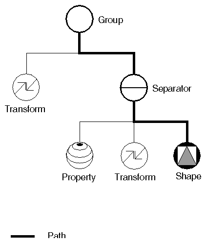

Detta är FreeCAD manualen. Den innehåller de viktiga delarna ur FreeCADs dokumentationswiki. Den är avsedd att skrivas ut som ett enda stort dokument, så om du läser detta online, så kanske du föredrar att hoppa direkt tillOnline hjälp versionen, vilken är lättare att använda.

Välkommen till FreeCAD on-line hjälp
Detta dokument har skapats automatiskt av innehållet i den officiella FreeCAD wiki dokumentationen, vilken kan läsas online på http://www.freecadweb.org/wiki/index.php?title=Main_Page. Eftersom wikin underhålls och utvecklas kontinuerligt av FreeCAD communityn av utvecklare och användare, så kan du finna att online-versionen innehåller mer eller nyare information än detta dokument. Men vi hoppas i alla fall att du kommer hitta all den information du behöver här. Om du har frågor som du inte kan hitta svaren på i detta dokument, ta en titt på FreeCAD forumet, där din fråga kanske finns besvarad, eller du finner någon som kan hjälpa dig.
Hur man använder detta dokument
Detta dokument är uppdelat i flera avsnitt: introduktion, användande, skriptning och utveckling, de sista tre är specifikt tillägnade de tre breda FreeCAD användarkategorierna: slutanvändare, som helt enkelt vill använda programmet, experter, som är intresserade av FreeCAD's skriptmöjligheter och vill förändra några av dess egenskaper, och utvecklare, som vill använda FreeCAD som en bas för att utveckla sina egna applikationer. Om du aldrig har använt FreeCAD innan, så föreslår vi att du startar med introduktionen.
Bidra
Som du kanske märkt tidigare, så är programmerare riktigt dåliga manualskrivare! För dem är allting självklart, eftersom de skrev programmet på det sättet. Därför är det viktigt att användare med god erfarenhet hjälper oss att skriva och revidera dokumentationen. Ja, vi menar dig! Hur, frågar du dig? Gå bara till wikin http://www.freecadweb.org/wiki/index.php i användarsektionen. Du kommer att behöva ett sourceforge konto för att logga in, sedan kan du börja att redigera!
Introduktion
FreeCAD är en allmän 3D CAD modellerare. Utvecklingen är helt baserad på öppen källkod (GPL & LGPL Licens). FreeCAD riktar sig direkt till mekanisk konstruktion och produkt design men passar även i ett bredare område inom konstruktion, som arkitektur eller andra konstruktions specialiteter.
FreeCAD erbjuder verktyg liknande Catia, SolidWorks eller Solid Edge, och hamnar därför i samma kategorier som MCAD, PLM, CAx och CAE. Det kommer att bli en parametrisk solidmodellerare med en modulär mjukvaruarkitektur vilket gör det lätt att erbjuda extre funktionalitet utan att behöva ändra kärnsystemet.
Som med många moderna 3D CAD modellerare så kommer den att ha en 2D komponent för att kunna skapa ritningar av 3D modellen, men direkt 2D ritare (som AutoCAD LT) är inte avsikten, inte heller animeringar eller organiska former (som Maya, 3ds Max eller Cinema 4D), fast tack vare sin stora anpassningsbarhet, så kan FreeCAD bli användbart inom ett mycket större område än vad som avses för tillfället.
En annan viktig sak för FreeCAD är ett flitigt användande av alla de fantastiska öppen-källkodsbibliotek som finns därute inom området Vetenskaplig databehandling. Bland dem är OpenCascade, en kraftfull CAD kärna, Coin3D, en inkarnation av OpenInventor, Qt, det världsberömda användargränssnittsverktyget, och Python, en av de bästa skriptspråken som finns. Själva FreeCAD kan även användas som ett bibliotek av andra program.
FreeCAD är också helt multiplattform, och fungerar för närvarande perfekt på Windows och Linux/Unix och Mac OSX systems, med exakt samma utseende och funktionalitet på alla plattformarna.
Blev du nyfiken? Ta en titt på Egenskaper eller Introduktion artiklarna, eller hoppa direkt till Användarhubben!
FreeCAD features tools similar to Catia, SolidWorks or Solid Edge, and therefore also falls into the category of MCAD, PLM, CAx and CAE. It is a feature based parametric modeler with a modular software architecture which makes it easy to provide additional functionality without modifying the core system.
As with many modern 3D CAD modelers it has many 2D components in order to sketch 2D shapes or extract design details from the 3D model to create 2D production drawings, but direct 2D drawing (like AutoCAD LT) is not the focus, neither are animation or organic shapes (like Maya, 3ds Max, Blender or Cinema 4D), although, thanks to its wide adaptability, FreeCAD might become useful in a much broader area than its current focus.
FreeCAD makes heavy use of all the great open-source libraries that exist out there in the field of Scientific Computing. Among them are OpenCascade, a powerful CAD kernel, Coin3D, an incarnation of Open Inventor, Qt, the world-famous UI framework, and Python, one of the best scripting languages available. FreeCAD itself can also be used as a library by other programs.
FreeCAD is also fully multi-platform, and currently runs flawlessly on Windows and Linux/Unix and Mac OSX systems, with the exact same look and functionality on all platforms.
For more information about FreeCAD's capabilities, take a look at the Feature list, the latest release notes or the Getting started articles, or see more screenshots.
About the FreeCAD project
The FreeCAD project was started as far as 2001, as described in its history page.
FreeCAD is maintained and developed by a community of enthusiastic developers and users (see the contributors page). They work on FreeCAD voluntarily, in their free time. They cannot guarantee that FreeCAD contains or will contain everything you might wish, but they will usually do their best! The community gathers on the FreeCAD forum, where most of the ideas and decisions are discussed. Feel free to join us there!
Detta är en extensiv, fast inte komplett, lista på de funktioner som FreeCAD har. Om du vill se in i framtiden, se utvecklingskartan för en snabb överblick så är Skärmdumpar en bra plats att gå till.
Release notes
- Release 0.11 - March 2011
- Release 0.12 - December 2011
- Release 0.13 - January 2013
- Release 0.14 - March 2014
- Release 0.15 - March 2015
- Release 0.16 - April 2016
- Release 0.17 - April 2018
Allmäna funktioner
- En komplett OpenCasCade-baserad geometrikärna som tillåter komplexa 3D operationer på komplexa formtyper, och stöder nativt koncept som brep, nurbs, booleska operationer eller fasningar


- En full parametrisk modell som tillåter valfri typ av parameter-drivna anpassade objekt, som även helt kan programmeras i python


- Komplett åtkomst från den inbyggda python tolken, makron eller externa skript till nästan alla delar i FreeCAD, so till exempel skapande och omvandling av geometri, 2D eller 3D representationen av den geometrin (Scengrafen) eller även FreeCAD gränssnittet


- En Skissare med begränsningslösare, som låter dig skissa geometri-begränsade 2D former. Skissare tillåter dig för tillfället att bygga flera typer av begränsad geometri, och sedan använda dem som en bas att bygga andra objekt i FreeCAD.


- En Robot simulerings modul som tillåter dig att studera robotrörelser. Robotmodulen har redan ett utökat grafiskt gränssnitt, vilket kan användas för ett smidigt arbetsflöde.


- En Ritningsark modul som låter dig skapa 2D vyer på dina 3D modeler på ett ritningsark. Denna modul producerar sedan färdiga SVG eller PDF dokument. Modulen är ännu funktionsfattig, men har redan en kraftfull python-funktionalitet.
- En Renderingsmodul som kan exportera 3D objekt för rendering med externa rendererare. Stödjer för närvarande endast povray, men förväntas stödja andra renderare i framtiden.


- En Arkitektur modul som tillåter BIM-likt arbetsflöde, med IFC kompatibilitet. Skapandet av arkitekturmodulen diskuteras mycket av communityn här.


Allmänna funktioner
- FreeCAD är multi-plattform. Det kan köras och beter sig på exakt samma sätt på Windows Linux och Mac OSX plattformarna.
- FreeCAD är en helgrafisk applikation. FreeCAD har ett komplett grafiskt användargränssnitt baserat på det berömda Qt strukturen, med en 3D visare baserad på Open Inventor, vilket tillåter snabb rendering av 3D scener och en mycket lättåtkomlig scenrepresentation.
- FreeCAD kan också köras som en kommandolinje applikation, med litet minnesbehov. I kommandolinje läge, så körs FreeCAD utan ett gränssnitt, men med alla geometriverktyg. Det kan till exempel användas som en server för att producera data för andra applikationer.
- FreeCAD kan importeras som en Python modul, inuti andra applikationer som kan köra python skript, eller i en python konsol. Som i konsol läge, så är FreeCAD's gränssnitt otillgängligt, men alla geometriverktyg finns tillgängliga.
- Arbetsbänk koncept: I FreeCAD gränssnittet, så är verktygen grupperade i arbetsbänkar. Detta innebär att endast de verktyg som behövs för att utföra en viss uppgift visas, vilket håller arbetsytan ren och responsiv, och snabb laddning av applikationen.
- Plugin/Modul struktur för sen laddnig av funktioner/data-typer. FreeCAD är uppdelat i en kärnapplikation och moduler, som endast laddas när de behövs. Nästan alla verktyg och geometrityper är lagrade i moduler. Moduler beter sig som plugins, och kan adderas eller tas bort från en existerande installation av FreeCAD.
- Parametriska associativa dokumentobjekt: Alla objekt i ett FreeCAD dokument kan definierass av parametrar. Dessa parametrar kan ändras direkt, och omberäknas när som helst. Förhållandet mellan objekt lagras också, så om ett objekt ändras, så ändras även de objekt som är beroende av det.
- Parametriska primitiver som låda, sfär, cylinder, kon eller torus.
- Grafiska ändringsoperationer som förflyttning, rotation, skalning, spegling, offset (trivial or after Jung/Shin/Choi) eller formförändring, i valfritt plan i 3D rymden
- Booleska operationer som förening, skillnad och skärning.
- Grafiskt skapande avenkel plangeometri som linjer, trådar, rektanglar, cirkelbågar eller cirklar i valfritt plan i 3D rymden
- Modellering med raka eller rotering extrusioner, sektioneringar och avrundningar.
- Topologiska komponenter som hörn, kanter, trådar och plan (via pythonskript).
- Testing and repairing tools for meshes: solid test, non-two-manifolds test, self-intersection test, hole filling and uniform orientation.
- Anteckningar som texter eller dimensioner
- Ångra/Gör om struktur: Allt kan ångras eller göras om, med åtkomst till ångra minnet, så multipla steg kan ångras åt gången.
- Transaktionshantering: Ångra/Gör om minnet lagrar dokumenttransaktioner och inte enstaka aktioner, vilket tillåter varje verktyg att exakt definiera vad som ska ångras eller göras om.
- Inbyggd skript struktur: FreeCAD tillhandahåller en inbyggd Python tolk, och ett API som täcker nästan alla delar av applikationen, gränssnittet, geometrin och representationen av denna geometri i 3D visaren. Tolken kan köra från enstaka kommandon upp till komplexa skript, faktum är att hela moduler kan programmeras helt och hållet i Python.
- Inbyggd Python konsol med syntaxmarkering, autokomplettering och klassvisare: Python kommandon kan utföras direk i FreeCAD och ge resultat omedelbart, vilket tillåter skriptskrivare att testa funktionaliteten direkt, utforska modulernas innehåll och lätt lära sig FreeCAD's innanmäte.
- Användarinteraktion speglas i konsolen: Allt som användaren gör i FreeCAD's gränssnitt, kör pythonkod, vilken kan skrivas ut i konsolen och spelas in i makron.
- Full makro inspelning & redigering: De pythonkommandon som körs när användaren manipulerar gränssnittet kan spelas in, om nödvändigt redigeras, och sparas för att reproduceras senare.
- Sammansatt (ZIP baserat) dokumentformat: FreeCAD dokument som är sparade med filtypen .fcstd kan innehålla många olika informationstyper, som geometri, skript eller tumnagelikoner.
- Fullt anpassningsbart/skriptbart grafiskt användargränssnitt. Det Qt-baserade gränssnittet i FreeCAD är helt åtkomligt via python tolken. Förutom de enkla funktioner som FreeCAD själv ger till arbetsbänkarna, så är hela Qt strukturen också tillgänglig, vilket tillåter vilken operation som helst på gränssnittet, som till exempel skapa, lägga till, docka, ändra eller ta bort widgets och verktygslådor.
- Tumnaglare (endast Linux system för närvarande): FreeCAD's dokumentikoner visar filens innehåll i de flesta filhanterarapplikationer som till exempel gnome's nautilus.
- en modulär MSI installerare tillåter flexibel installation på Windowssystem. Paket för Ubuntusystem är också underhållna.
I utveckling
- An Församling modul som gör det möjligt för att arbeta med flera projekt, flera former, flera dokument, flera filer, flera relationer...
- CAM modulen är tillägnad mekanisk bearbetning som till exempel fräsning. Denna modul har just påbörjats och är för tillfället mest tillägnad Inkrementell plåtformning. Fastän det finns en del algoritmer för verktygsväg planering, så är de inte användbara för slutanvändaren för tillfället.


Extra Workbenches
Power users have created various custom external workbenches.
Installation
Installera på Windows
The easiest way to install FreeCAD on Windows is to download the installer below.
 Windows 32 bits
Windows 32 bits
 Windows 64 bits
Windows 64 bits
Det lättaste sättet att installera FreeCAD på Windows är genom att använda installeraren. Denna sida beskriver hur man använder den och egenskaperna av Microsoft Installeraren för mer installationsalternativ.
Enkel Installation
FreeCAD installeraren levereras i .msi (Windows Installer) format.
Du kan ladda ned den senaste .msi filen från den officiella FreeCAD nedladdningssidan.
Efter att du har laddat ned filen, dubbelklicka på den för att starta installationsprocessen.
 Windows 32 bits
Windows 32 bits
 Windows 64 bits
Windows 64 bits
After downloading the .msi (Microsoft Installer) file, just double-click on it to start the installation process.
Below is more information about technical options. If it looks daunting, don't worry! Most Windows users will not need anything more than the .msi to install FreeCAD and Get started!
Simple Microsoft Installer Installation
The easiest way to install FreeCAD on Windows is by using the installer above. This page describes the usage and the features of the Microsoft Installer for more installation options.
If you would like to download either a 64 bit or unstable development version, see the Download page. Download/sv
Kommandolinje Installation
Med msiexec.exe kommandolinje programmet, så finns ytterligare funktioner tillgängliga, som o-interaktiv installation och administrativ installation.
O-interaktiv Installation
Med kommandoraden
msiexec /i FreeCAD<version>.msi
installation kan startas via ett program. Extra parametrar kan läggas till i slutet på denna kommandorad, som
msiexec /i FreeCAD-2.5.msi TARGETDIR=r:\FreeCAD25
Begränsat användargränssnitt
Det användargränssnitt som installeraren visar kan kontrolleras med /q alternativ, som:
- /qn - Inget gränssnitt
- /qb - Grundläggande gränssnitt - endast en liten förloppsdialog
- /qb! - Som /qb, men göm Avbryt knappen
- /qr - Reducerat gränssnitt - visar alla dialoger som inte kräver svar från användaren (skippa alla modala dialoger)
- /qn+ - Like /qn, men visa "Färdig" dialogen vid slutet
- /qb+ - Like /qb, men visa "Färdig" dialogen vid slutet
Målkatalog
Egenskapen TARGETDIR avgör FreeCAD installationens rotkatalog. Till exempel, en annan installationsenhet kan specificeras med
TARGETDIR=R:\FreeCAD25
Standard TARGETDIR är [WindowsVolume\Program\]FreeCAD<version>.
Installation för Alla användare
Genom att lägga till
ALLUSERS=1
så installeras programmet för alla användare. Som standard, så installerar den o-interaktiva installeraren paketet endast för den nuvarande användaren, och den interaktiva installeraren visar en dialog som har "alla användare" som standard, om användaren har tillräckliga rättigheter.
Val av funktioner
Ett antal egenskaper tillåter val av vilka funktioner som ska installeras, ominstalleras, eller tas bort. Funktionerna för FreeCAD installeraren är
- DefaultFeature - installera mjukvaran korrekt, plus kärnbiblioteken
- Documentation - installera dokumentationen
- Source code - installera källkoden
- ... ToDo
I tillägg, så specificerar ALL alla funktioner. Alla funktioner beror på DefaultFeature, så när en funktion installeras, så installeras även standardfunktionen automatiskt. Följande egenskaper kontrollerar vilka funktioner som ska installeras eller tas bort
- ADDLOCAL - lista på funktioner som ska installeras på den lokala maskinen
- REMOVE - lista på funktioner som ska tas bort
- ADDDEFAULT - lista på funktioner som ska läggas till i dess standardkonfiguration (vilket är lokal för alla FreeCAD funktioner)
- REINSTALL - lista på funktioner som ska ominstalleras/repareras
- ADVERTISE - lista på funktioner som ska annonsera en installation
Det finns en del ytterligare alternativ tillgängliga; se MSDN dokumentationen för detaljer.
Med dessa alternativ, genom att lägga till
ADDLOCAL=Extensions
installerar själva tolken och registrerar extensionerna, men installerar inget annat.
Avinstallering
Med
msiexec /x FreeCAD<version>.msi
så kan FreeCAD avinstalleras. Det är inte nödvändigt att ha MSI filen tillgänglig för avinstalleringar; alternativt så kan även paketet eller produktkoden specificeras. Du kan hitta produktkoden genom att titta på avinstalleringsgenvägens egenskaper som FreeCAD installerar i startmenyn.
Administrativ installation
Med
msiexec /a FreeCAD<version>.msi
så kan en "administrativ" (nätverks) installation startas. Filerna packas upp till målkatalogen (vilken ska vara en nätverkskatalog), men inga andra ändringar görs på det lokala systemet. Dessutom genereras en annan (mindre) msi fil i målkatalogen, vilken klienter sedan kan använda för att utföra en lokal installation (framtida versioner kan också erbjuda att behålla vissa funktioner på nätverksenheten).
För närvarande finns det inget användargränssnitt för administrativa installationer, så målkatalogen måste specificeras på kommandolinjen.
Det finns ingen specifik avinstallationsprocedur för en administrativ installation - radera bara målkatalogen om inga klienter använder den längre.
Annonsering
Med
msiexec /jm FreeCAD<version>.msi
så är det i princip möjligt att "annonsera" FreeCAD till en maskin (med /ju till en användare). Detta gör att ikonerna syns i startmenyn, och extensionerna registreras, utan att någon mjukvara installeras. Det första användandet av en funktion orsakar en installation av densamma.
FreeCAD installeraren stödjer för närvarande endast annonsering till startmenyn, men inga annonseringar av genvägar.
Automatisk Installation på en maskingrupp
Med Windows Group Policy, så är det möjlig att automatiskt installera FreeCAD på en grupp av maskiner. För att göra det, utför följande steg:
- Logga in på domän controllern
- Kopiera MSI filen till en delad mapp som alla målmaskiner har åtkomst till.
- Öppna MMC snapin "Active Directory users and computers"
- Navigera till den datorgrupp som behöver FreeCAD
- Öppna egenskaper
- Öppna Group Policy
- Lägg till en ny policy, och redigera den
- I datorkonfiguration/Mjukvaruinstallation, välj Ny/Paket
- Välj MSI filen i nätverkssökvägen
- Välj alternativt att du vill att FreeCAD ska avinstalleras om datorn lämnar policyns område.
Grupp policy propagering brukar ta lite tid - för att distribuera paketet pålitligt, starta om samtliga maskiner.
Installation på Linux om du använder Crossover Office
You can install the windows version of FreeCAD on a Linux system using CXOffice 5.0.1. Run msiexec from the CXOffice command line, assuming that the install package is placed in the "software" directory which is mapped to the drive letter "Y:":
msiexec /i Y:\\software\\FreeCAD<version>.msi
FreeCAD is running, but it has been reported that the OpenGL display does not work, like with other programs running under Wine i.e. Google SketchUp.
Installera på Unix/Linux
För tillfället, så erbjuder FreeCAD teamet endast installerare för 32bit Debian och Ubuntu system, men en del medlemmar av FreeCADs användargrupp erbjuder även anpassade installerare för andra Linuxvarianter. Ta en titt på Nedladdningssidan sidan för att se vad som för tillfället finns tillgängligt.
Once you've got FreeCAD installed, it's time to get started!
Installation på Debian/Ubuntu system
När du har laddat ned den .deb som motsvarar din systemversion, och om du har Gdebi paketet installerat (det är det vanligtvis), så behöver du bara navigera till där du laddade ned filen, och dubbelklicka på den. Nödvändiga beroenden kommer att tas hand om automatiskt av din pakethanterare. Alternativt, så kan du även installera den från terminalen, genom att navigera till där du laddade ned filen, och skriva:
sudo dpkg -i Name_of_your_FreeCAD_package.deb
byt Name_of_your_FreeCAD_package.deb till namnet på den fil som du laddade ned.
Efter att du har installerat FreeCAD, så kommer en startikon läggas till i "Grafik" sektionen i din startmeny.
Many Linux distributions are based on Ubuntu and share its repositories. Besides official variants (Kubuntu, Lubuntu and Xubuntu), there are non official distros such as Linux Mint, Voyager and others. The installation options below should be compatible to these systems.
Official Ubuntu repository
FreeCAD is available from Ubuntu repositories and can be installed via the Software Center or with this command in a terminal:
sudo apt-get install freecad
But chances are this stable version will be outdated, and not have the latest features. To get the last release version, please use the PPA.
Stable PPA with GUI
To install FreeCAD using the PPA, from the graphical interface, please follow those instructions. The FreeCAD community provides a PPA repository on Launchpad with the latest stable FreeCAD version.
You need to add to your system's Software Sources the following PPA. To do that navigate to Ubuntu Software Centre > Edit > Software Sources > Other Software. Click on add and copy and past the code below:
ppa:freecad-maintainers/freecad-stable
Refresh your software sources, if asked. Now, you can find and install the last stable FreeCAD version on the Ubuntu Software Center.
For more information on PPA, click here: Definition of PPA (Personal Package Archive) on help.ubuntu.com.
Stable PPA with console
Type, or copy-paste, these commands in a console to add the PPA:
For the "stable" PPA
sudo add-apt-repository ppa:freecad-maintainers/freecad-stable
Don't forget to retrieve the updated the package lists:
sudo apt-get update
Update synchronizes your list of available packages with the servers.
Then, install FreeCAD along with the documentation:
sudo apt-get install freecad freecad-doc && sudo apt-get upgrade
Upgrade downloads and installs the newest packages version of the installed programs. It will be applied to all the softwares installed on your computer.
Execute this command to open the stable version of FreeCAD:
freecad
Daily PPA with console
If you want to install the last unstable version of FreeCAD, please use the PPA named "freecad-daily" PPA repository on Launchpad. This way you can access the bleeding edge of FreeCAD development. This PPA is automatically compiled daily from the official FreeCAD's master branch repository. It will usually contain numerous bug fixes and feature updates.
For the daily PPA:
sudo add-apt-repository ppa:freecad-maintainers/freecad-daily sudo apt-get update sudo apt-get install freecad-daily && sudo apt-get upgrade
Execute this command to open the daily build of FreeCAD:
freecad-daily
Debian and other debian-based systems
Since Debian Lenny, FreeCAD is available directly from the Debian software repositories and can be installed via synaptic or simply with:
sudo apt-get install freecad
OpenSUSE
FreeCAD is typically installed with:
zypper install FreeCAD
Gentoo
FreeCAD can be built/installed simply by issuing:
emerge freecad
Other
If you find out that your system features FreeCAD but is not documented in this page, please tell us on the forum!
Many alternative, non-official FreeCAD packages are available on the net, for example for systems like slackware or fedora. A search on the net can quickly give you some results.
Manual install on .deb based systems
If for some reason you cannot use one of the above methods, you can always download one of the .deb packages available on the Download page.
 Ubuntu 32/64bit
Ubuntu 32/64bit
 AppImage 64bit
AppImage 64bit
Once you downloaded the .deb corresponding to your system version, if you have the Gdebi package installed (usually it is), you just need to navigate to where you downloaded the file, and double-click on it. The necessary dependencies will be taken care of automatically by your system package manager.
Alternatively you can also install it from the terminal, navigating to where you downloaded the file, and type:
sudo dpkg -i Name_of_your_FreeCAD_package.deb
changing Name_of_your_FreeCAD_package.deb by the name of the file you downloaded.
After you installed FreeCAD, a startup icon will be added in the "Graphic" section of your Start Menu.
Installera på andra Linux/Unix system
Olyckligtvis finns det för tillfället inga förkompilerade paket för andra Linux/Unix system, så du får kompilera FreeCAD själv.
Unfortnately, at the moment, no precompiled package is available for other Linux/Unix systems,so you will need to compile FreeCAD yourself.
Installing Windows Version on Linux
See the Install on Windows page.
Installera på Mac
FreeCAD can be installed on Mac OS X in one step using the Installer.
 Mac 10.9 Mavericks 64-bit
Mac 10.9 Mavericks 64-bit
This page describes the usage and features of the FreeCAD installer. It also includes uninstallation instructions.
Once installed, you can get started!
Enkel Installation
FreeCAD installeraren erbjuds som ett Installationspaket(.mpkg) bifogad i en diskavbildningsfil.
You can download the latest installer from the Download page. After downloading the file, just mount the disk image, then drag it to the Application folder or a folder of your choice.

That's it.Just click on the app to launch FreeCAD. If you have this message "FreeCAD can't be open as it is from unidentified developer. " Open the folder (Application) and right click on the app then click open and accept to open the application.
Avinstallation
Det finns för närvarande ingen avinstallerare för FreeCAD. För att helt ta bort FreeCAD och alla installerade komponenter, dra följande filer och mappar till papperskorgen:
- I /Applications:
- FreeCAD
Det är allt. Eventuellt så kommer FreeCAD att finnas tillgängligt som ett applikationspaket så att allt detta trubbel kommer att försvinna.
Upptäcka FreeCAD
What's new
- Version 0.17 Release notes : Check what's new in the 0.17 release of FreeCAD
- Version 0.16 Release notes : Check what's new in the 0.16 release of FreeCAD
- Version 0.15 Release notes : Check what's new in the 0.15 release of FreeCAD
- Version 0.14 Release notes : Check what's new in the 0.14 release of FreeCAD
- Version 0.13 Release notes : Check what's new in the 0.13 release of FreeCAD
- Version 0.12 Release notes : Check what's new in the 0.12 release of FreeCAD
- Version 0.11 Release notes : Check what's new in the 0.11 release of FreeCAD
Förord
FreeCAD är en CAD/CAE parametrisk modelleringsapplikation. Den är fortfarande i ett tidigt utvecklingsstadium, så förvänta dig inte att du ska kunna använda den till professionellt arbete än.
Men, om du är nyfiken på hur FreeCAD ser ut och vilka funktioner som håller på att utvecklas, så är du välkommen att ladda ned den och testa den. För tillfället finns det redan många funktioner, men gränssnittet för många av dem har ännu inte skapats. detta innebär att om du kan lite om python, så kommer du redan att kunna producera och förändra komplex geometri relativt enkelt. Om inte, så kommer du förmodligen att upptäcka att FreeCAD fortfarande har en del att erbjuda dig. Men, ha tålamod, detta kommer att förändras snart.
Och om du efter att ha testat den har kommentarer, ideer eller åsikter, var vänlig att dela dem med oss på FreeCAD diskussionsforum!
Installation
Först av allt (om det inte redan är gjort), ladda ned och installera FreeCAD. Se Nedladdningssidan för information om nuvarande versioner och updateringar. Det finns färdiga installationspaket för Windows (.msi), Ubuntu & Debian (.deb) openSUSE (.rpm) och Mac OSX.
Utforska FreeCAD

FreeCAD är en allmän, allt-i-allo 3D modelleringsapplikation, fokuserad på mekanisk konstruktion och relaterade områden, som andra konstruktionsspecialiteter eller arkitektur. Den är utformad som en plattform för utveckling av vilken 3D applikation som helst, men även för att göra väldigt specifika uppgifter. För det ändamålet så är dess gränssnitt uppdelat i en serie med Arbetsbänkar. Arbetsbänkar gör att du ändrar gränssnittsinnehållet till att endast visa de verktyg som är nödvändiga för en specifik uppgift, uppgiftsgrupper.
FreeCAD gränssnittet kan därför beskrivas som en mycket enkel behållare, med en menyrad, en 3D visningsområde, och några sidopaneler för att visa sceninnehållet eller objektegenskaper. Allt innehåll i dessa paneler kan förändras beroende på arbetsbänken.
När du startar FreeCAD för den första gången, så kommer en "generell" arbetsbänk att presenteras för dig, som vi kallar "komplett arbetsbänk". Denna arbetsbänk samlar de mognaste verktygen från andra arbetsbänkar. Eftersom FreeCAD är ganska ungt och inte har använts för något specialiserat arbete ännu, så är denna arbetsbänk väldigt smidig för att utforska FreeCAD lättare. Alla verktyg som är tillräckligt bra för att producera geometri finns här.
- The 3D view, showing the contents of your document
- The tree view, which shows the hierarchy and construction history of all the objects in your document
- The properties editor, which allows you to view and modify properties of the selected object(s)
- The report view (or output window), which is where FreeCAD prints messages, warnings and errors
- The python console, where all the commands executed by FreeCAD are printed, and where you can enter python code
- The workbench selector, where you select the active workbench
The main concept behind the FreeCAD interface is that it is separated into workbenches. A workbench is a collection of tools suited for a specific task, such as working with meshes, or drawing 2D objects, or constrained sketches. You can switch the current workbench with the workbench selector (6). You can customize the tools included in each workbench, add tools from other workbenches or even self-created tools, that we call macros. Widely used starting points are the PartDesign Workbench and Part Workbench
When you start FreeCAD for the first time, you are presented with the start center:
The Start Center allows you to quickly jump to one of the most common workbenches, open one of the recent files, or see the latest news from the FreeCAD world. You can change the default workbench in the preferences.
FreeCAD har två olika navigationslägen tillgängliga, som kan ställas in i inställningsdialogen. I standardläget, så utförs zoomning med Mushjulet, panorering med Mittre musknappen, och rotation med vänster musknapp och Mittre musknappen samtidigt. Val av ett objekt görs genom att klicka på det med vänster musknapp, med CTRL nedtryckt om du vill välja flera objekt.
Du har också flera förinställda vyer (Toppvy, Frontvy, etc) tillgängliga i Visa menyn och på verktygslådan Visa, och via numeriska genvägar (1, 2, etc...)
Skript
Och slutligen, en av de kraftfullaste funktionerna i FreeCAD är skript miljön. Från den integrerade pythonkonsolen (eller från något externt pythonskript), så får du åtkomst till nästan vilken del som helst av FreeCAD, skapa eller ändra geometri, ändra representationen av dessa objekt i 3D scenen eller förändra FreeCAD's gränssnitt. Python skript kan även användas i makron, vilket erbjuder en lätt metod att skapa anpassade kommandon.
FreeCAD has several different navigation modes available, that change the way you use your mouse to interact with the objects in the 3D view and the view itself. One of them is specifically made for touchpads, where the middle mouse button is not used. The following table describes the default mode, called CAD Navigation (You can quickly change the current navigation mode by right-clicking on an empty area of the 3D view):
| Select | Pan | Zoom | Rotate View | Rotate View
Alternate Method |
|---|---|---|---|---|

|

|

|

|

|
| Press the left mouse button over an object you want to select. Holding down ctrl allows the selection of multiple objects. | Click the middle mouse button and move the object around to pan | Use the mouse wheel to zoom in and out. Clicking the middle mouse button re-centers the view to the location of the cursor. | Click first with the middle mouse button, hold it down, and then click the left mouse button and drag the mouse in the desired direction. The cursor location at the middle mouse button click determines the center of rotation. Rotation works like spinning a ball which rotates around its center. If the buttons are released before you stop the mouse motion, the object continues spinning, if this is enabled. A double click with the middle mouse button sets a new center of rotation. | Click first with the middle mouse button, hold it down, and then click the right mouse button and drag the mouse in the desired direction. This method works just like the previously described Rotate View that uses Middle Mouse Button + Left Mouse Button, except that the middle mouse button may be released after the right mouse button is pressed. Users who use the mouse with their right hand may find this Rotate View method easier than the previous method. |

|

|

|
||
| For the Pan mode, press the Ctrl key and press the right mouse button to pan (rev 0.17) | For the Zoom mode, press the Ctrl and Shift key and press the right mouse button to Zoom (rev 0.17) | For the Rotate mode, press the Shift key and press the right mouse button to rotate (rev 0.17) |
You also have several view presets (top view, front view, etc) available in the View menu and on the View toolbar, and by numeric shortcuts (1, 2, etc...), and by right-clicking on an object or on an empty area of the 3D view, you have quick access to some common operations, such as setting a particular view, or locating an object in the Tree view.
First steps with FreeCAD
FreeCAD's focus is to allow you to make high-precision 3D models, to keep tight control over those models (being able to go back into modelling history and change parameters), and eventually to build those models (via 3D printing, CNC machining or even construction worksite). It is therefore very different from some other 3D applications made for other purposes, such as animation film or gaming. Its learning curve can be steep, specially if this is your first contact with 3D modeling. If you are struck at some point, don't forget that the friendly community of users on the FreeCAD forum might be able to get you out in no time.
The workbench you will start using in FreeCAD depends on the type of job you need to do: If you are going to work on mechanical models, or more generally any small-scale objects, you'll probably want to try the PartDesign Workbench. If you will work in 2D, then switch to the Draft Workbench, or the Sketcher Workbench if you need constraints. If you want to do BIM, launch the Arch Workbench. If you are working with ship design, there is a special Ship Workbench for you. And if you come from the OpenSCAD world, try the OpenSCAD Workbench.
You can switch workbenches at any time, and also customize your favorite workbench to add tools from other workbenches.
Working with the PartDesign and Sketcher workbenches
The PartDesign Workbench is specially made to build complex objects, starting from simple shapes, and adding or removing pieces (that we call "features"), until you get to your final object. All the features you applied during the modelling process are stored in a separate view called the tree view, which also contains the other objects in your document. You can think of a PartDesign object as a succession of operations, each one applied to the result of the preceding one, forming one big chain. In the tree view, you see your final object, but you can expand it and retrieve all preceding states, and change any of their parameter, which automatically updates the final object.
The PartDesign workbench makes heavy use of another workbench, the Sketcher Workbench. The sketcher allows you to draw 2D shapes, which are defined by applying Constraints to the 2D shape. For example, you might draw a rectangle and set the size of a side by applying a length constraint to one of the sides. That side then cannot be resized anymore (unless the constraint is changed).
Those 2D shapes made with the sketcher are used a lot in the PartDesign workbench, for example to create 3D volumes, or to draw areas on the faces of your object that will then be hollowed from its main volume. This is a typical PartDesign workflow:
- Create a new sketch
- Draw a closed shape (make sure all points are joined)
- Close the sketch
- Expand the sketch into a 3D solid by using the pad tool
- Select one face of the solid
- Create a second sketch (this time it will be drawn on the selected face)
- Draw a closed shape
- Close the sketch
- Create a pocket from the second sketch, on the first object
Which gives you an object like this:

At any moment, you can select the original sketches and modify them, or change the extrusion parameters of the pad or pocket operations, which will update the final object.
Working with the Draft and Arch workbenches
The Draft Workbench and Arch Workbench behave a bit differently than the other workbenches above, although they follow the same rules, which are common to all of FreeCAD. In short, while the Sketcher and PartDesign are made primarily to design single pieces, Draft and Arch are made to ease your work when working with several, simpler objects.
The Draft Workbench offers you 2D tools a bit similar to what you can find in traditional 2D CAD applications such as AutoCAD. However, 2D drafting being far away from the scope of FreeCAD, don't expect to find there the full array of tools that these dedicated applications offer. Most of the Draft tools work not only in a 2D plane but also in the full 3D space, and benefit from special helper systems such as Work planes and object snapping.
The Arch Workbench adds BIM tools to FreeCAD, allowing you to build architectural models with parametric objects. The Arch workbench relies much on other modules such as Draft and Sketcher. All the Draft tools are also present in the Arch workbench, and most Arch tools make use of the Draft helper systems.
A typical workflow with Arch and Draft workbenches might be:
- Draw a couple of lines with the Draft Line tool
- Select each line and press the Wall tool to build a wall on each of them
- Join the walls by selecting them and pressing the Arch Add tool
- Create a floor object, and move your walls in it from the Tree view
- Create a building object, and move your floor in it from the Tree view
- Create a window by clicking the Window tool, select a preset in its panel, then click on a face of a wall
- Add dimensions by first setting the working plane if necessary, then using the Draft Dimension tool
Which will give you this:

More on the Tutorials page.
Scripting
And finally, one of the most powerful features of FreeCAD is the scripting environment. From the integrated python console (or from any other external Python script), you can gain access to almost any part of FreeCAD, create or modify geometry, modify the representation of those objects in the 3D scene or access and modify the FreeCAD interface. Python scripting can also be used in macros, which provide an easy method to create custom commands.
Arbeta med FreeCAD
FreeCAD's musmodell är mycket flexibel och intuitiv och med några tips så kan du använda den redan efter någon minuts träning.
FreeCAD's musmodell är mycket flexibel och intuitiv och med några tips så kan du använda den redan efter någon minuts träning.
Välja objekt
Objekt kan väljas med ett klick med den vänstra musknappen antingen genom att klicka på objektet i 3D-vyn eller genom att välja den i trädvyn. Det finns även en Förvals mekanism som markerar objekt och visar information om dem bara genom att hålla markören över den. Om du inte gillar det beteendet eller om du har en långsam maskin, så kan du stänga av förval i inställningarna.
Hantera Objekt
Objekthanteringen är gemensam för alla arbetsbänkar. Följande musgester kan användas till att kontrollera objektposition och vy.
- Välj
- Klicka med den vänstra musknappen över det objekt som du vill välja.
- Zoom
- Använd + eller - tangenterna eller mushjulet för att zooma in och ut.
- Panorera
- Klicka med den mittre musknappen och flytta runt objektet .
- Rotera
- Klicka först med den mittre musknappen, håll den nedtryckt och klicka sedan med den vänstra musknappen på en synlig del av ett objekt och dra den i den önskade riktningen. Detta fungerar som en boll som snurrar runt dess centrum. Om du släpper knapparna innan du stoppar rörelsen, så kommer objektet fortsätta att rotera, om detta är aktiverat.
- Ställa in rotationscentrum
- Ett dubbelklick med den mittre musknappen på valfri del av objektet ställer in ett nytt roationscentrum och zoomar in på denna punkt.
Manipulera Objekt
FreeCAD har manipulatorer som kan användas till att ändra ett objekt eller dess visuella utseende. Ett enkelt exempel är klippningsplan som kan aktiveras med Visa?Klippningsplan menyn. Efter aktivering så kommer klippningsplan objektet fram och visar sju självklara manipulatorer som små lådor: En på varje ände på dess tre koordinataxlar och en på dentrum på den axel som är normal till planet. Det finns fyra till som inte är så självklara: Själva planet och den tunna delen på de tre axelobjekten.
- Skalning
- För att skala objektet klicka med den vänstra musknappen på lådmanipulatorerna vid slutet på axlarna och dra dem bakåt och framåt. Beroende på objektet så arbetar manipulatorerna oberoende eller synkront.
- Flytta ut ur planet
- För att flytta objektet längs dess normalvektor, dra i den långa lådan vid axelns centrum med den vänstra musknappen. För klippningsplanet finns det endast en manipulator längs normalvektorn.
- Flytta i planet
- För att flytta klippningsplanets centrum, klicka på planobjektet och dra den till den önskade positionen.
- Rotation
- Klicka på den tunna delen av axlarna sätter manipulatorn i rotationsläge.
The FreeCAD mouse model consists of the commands used to visually navigate the 3D space and interact with the objects displayed. FreeCAD supports multiple mouse model navigation styles. The default navigation style is referred to as "CAD Navigation," and is very simple and practical, but FreeCAD also provides alternative navigation styles, that you can choose according to your preferences.
Hantera Objekt
Objekthanteringen är gemensam för alla arbetsbänkar. Följande musgester kan användas till att kontrollera objektposition och vy.
- Välj
- Klicka med den vänstra musknappen över det objekt som du vill välja.
- Zoom
- Använd + eller - tangenterna eller mushjulet för att zooma in och ut.
- Panorera
- Klicka med den mittre musknappen och flytta runt objektet .
- Rotera
- Klicka först med den mittre musknappen, håll den nedtryckt och klicka sedan med den vänstra musknappen på en synlig del av ett objekt och dra den i den önskade riktningen. Detta fungerar som en boll som snurrar runt dess centrum. Om du släpper knapparna innan du stoppar rörelsen, så kommer objektet fortsätta att rotera, om detta är aktiverat.
- Ställa in rotationscentrum
- Ett dubbelklick med den mittre musknappen på valfri del av objektet ställer in ett nytt roationscentrum och zoomar in på denna punkt.
Manipulera Objekt
FreeCAD har manipulatorer som kan användas till att ändra ett objekt eller dess visuella utseende. Ett enkelt exempel är klippningsplan som kan aktiveras med Visa?Klippningsplan menyn. Efter aktivering så kommer klippningsplan objektet fram och visar sju självklara manipulatorer som små lådor: En på varje ände på dess tre koordinataxlar och en på dentrum på den axel som är normal till planet. Det finns fyra till som inte är så självklara: Själva planet och den tunna delen på de tre axelobjekten.
- Skalning
- För att skala objektet klicka med den vänstra musknappen på lådmanipulatorerna vid slutet på axlarna och dra dem bakåt och framåt. Beroende på objektet så arbetar manipulatorerna oberoende eller synkront.
- Flytta ut ur planet
- För att flytta objektet längs dess normalvektor, dra i den långa lådan vid axelns centrum med den vänstra musknappen. För klippningsplanet finns det endast en manipulator längs normalvektorn.
- Flytta i planet
- För att flytta klippningsplanets centrum, klicka på planobjektet och dra den till den önskade positionen.
- Rotation
- Klicka på den tunna delen av axlarna sätter manipulatorn i rotationsläge.
The FreeCAD mouse model consists of the commands used to visually navigate the 3D space and interact with the objects displayed. FreeCAD supports multiple mouse model navigation styles. The default navigation style is referred to as "CAD Navigation," and is very simple and practical, but FreeCAD also provides alternative navigation styles, that you can choose according to your preferences.
The object handling is common to all workbenches. The following mouse gestures can be used to control the object position and view according to which Navigation style is selected.
There are two ways to change the navigation style:
- In the Preferences Editor, Display section, 3D View tab;
- By right-clicking in empty space in the 3D view area, then selecting Navigation style in the contextual menu.
This is the default navigation style and allows the user a simple control of the view, and does not require the use of keyboard keys except to make multi-selections.
| Select | Pan | Zoom | Rotate View | Rotate View
Alternate Method |
|---|---|---|---|---|
|
|
|
|
|
|
| Press the left mouse button over an object you want to select. Holding down ctrl allows the selection of multiple objects. | Click the middle mouse button and move the object around to pan | Use the mouse wheel to zoom in and out. Clicking the middle mouse button re-centers the view to the location of the cursor. | Click first with the middle mouse button, hold it down, and then click the left mouse button and drag the mouse in the desired direction. The cursor location at the middle mouse button click determines the center of rotation. Rotation works like spinning a ball which rotates around its center. If the buttons are released before you stop the mouse motion, the object continues spinning, if this is enabled. A double click with the middle mouse button sets a new center of rotation. | Click first with the middle mouse button, hold it down, and then click the right mouse button and drag the mouse in the desired direction. This method works just like the previously described Rotate View that uses Middle Mouse Button + Left Mouse Button, except that the middle mouse button may be released after the right mouse button is pressed. Users who use the mouse with their right hand may find this Rotate View method easier than the previous method. |
|
|
|
|
||
| For the Pan mode, press the Ctrl key and press the right mouse button to pan (rev 0.17) | For the Zoom mode, press the Ctrl and Shift key and press the right mouse button to Zoom (rev 0.17) | For the Rotate mode, press the Shift key and press the right mouse button to rotate (rev 0.17) |
In OpenInventor (formerly Inventor) Navigation, modeled after Open Inventor (not to be confused with Autodesk Inventor), there is no mouse-only selection. In order to select objects, you must hold down the CTRL key.
| Select | Pan | Zoom | Rotate View |
|---|---|---|---|
| ctrl +
|
|
or
|
|
| Hold ctrl and press the left mouse button over an object you want to select. | Click the middle mouse button and move the object around. | Use the mouse wheel to zoom in and out, or click and hold the middle mouse button and click the left mouse button. | Click and drag with the left mouse button to rotate |
The Blender Navigation was modeled after Blender. Previously there was no mouse-only panning, and it required use of the SHIFT key to pan the view. This changed in 2016 with a feature-addition. In order to pan the view, you can now press both left and right mouse buttons and drag in the view.
| Select | Pan | Zoom | Rotate View |
|---|---|---|---|
|
|
shift+ or 
|
|
|
| Press the left mouse button over an object you want to select. | Hold shift and click the middle mouse button and move the object around, or hold down the Left and Right buttons and move. | Use the mouse wheel to zoom in and out. | Click and drag with the middle mouse button. |
In Touchpad Navigation, neither panning, nor zooming, nor rotating the view, are mouse-only (or touchpad-only) operations.
| Select | Pan | Zoom | Rotate View |
|---|---|---|---|

|
shift+
|
PgUp / PgDn | alt+
|
| Press the left mouse button over an object you want to select. | Hold shift and move the object around. | Use PgUp and PgDn to zoom in and out. | Hold alt and move the pointer. |
| or | or | ||
| shift+ctrl+
|
shift+ctrl+
| ||
| Hold down both the shift and the ctrl keys, press the left mouse button, and move the pointer. | Hold down both the shift and the ctrl keys and move the pointer. |
This navigation style was tailored for usability with touchscreen and pen, but is very usable with mouse too.
| Select | Pan | Zoom | Rotate View | Tilt View |
|---|---|---|---|---|
|
|

|
|
|
|
| Press the left mouse button over an object you want to select. Holding down Ctrl allows the selection of multiple objects. | Hold right mouse button and drag to pan the view. | Use the mouse wheel to zoom in and out. The zoom is centered at the cursor location. | Hold Left mouse button and drag to rotate the view.
In Sketcher and other edit modes, this behavior is disabled. Hold Alt when pressing the mouse button to enter rotation mode. Rotation is always around camera's focus point. To set camera's focus point, click the new point with middle mouse button; the view will center on that point. Alternatively, aim the cursor at the new point and press H on keyboard. |
Press both left and right mouse buttons, and drag left or right to tilt the view (adjust horizon). |

|

or
|

|

|

|
| Tap to select. | Drag with two fingers to pan the view. Alternatively, tap and hold, then drag (simulates pan with right mouse button). | Pinch to zoom (i.e., drag two fingers to each other/apart). | Drag with one finger to rotate. Hold Alt additionally when in Sketcher and some other edit modes. | Rotate to tilt the view (i.e., put two fingers on surface and rotate the imaginary line formed by two touch points). |

Notes on Gesture Navigation style:
- on Windows, the actions of two-finger gestures are separated. The action depends on how one starts the gesture. For example, if one starts two-finger pan, the gesture will only pan. Changing the distance between fingers afterwards will not affect the scaling.
In Maya-Gesture Navigation, all view movements are activated pressing ALT and a mouse button, so that it will be needed to have a 3 button mouse in order to correctly use this navigation mode. Alternately it's possible to use gestures as this mode was been developed over the normal Gesture Navigation mode.
| Select | Pan | Zoom | Rotate View |
|---|---|---|---|
|
|
alt+
|
alt+ or
|
alt+
|
| Press the left mouse button over an object you want to select. | Hold alt, hold the middle mouse button and drag to pan the view. | Hold alt, hold the right mouse button and drag to zoom in and out or use the mouse wheel to get the same effect. | Hold alt, hold the left mouse button and drag to rotate the object around. |
Selecting objects
Simple selection
Objects can be selected by a click with the left mouse button either by clicking on the object in the 3D-view or by selecting it in the tree view.
Preselection
There is also a Preselection mechanism that highlights objects and displays information before selection by just hovering the mouse over the objects. If you don't like this behaviour or you have a slow machine, you can switch preselection off in the preferences.
Manipulating Objects
FreeCAD offers manipulators that are handles that can be used to modify an object's appearance, shape, or other parameters.
The clipping plane is an example of an object with manipulators. A clipping plane can be activated with the View→Clipping Plane menu
Hardware support
FreeCAD also supports some 3D input devices.
Mac OS X Issues
Recently we got reports on the forum from Mac users that those mouse button and key combination do not work as expected. Unfortunately, none of the developers owns a Mac, neither do the other regular contributors. We need your help to determine which mouse buttons and key combination work so we can update this wiki.
FreeCAD Dokumentet

Ett FreeCAD document inehåller alla objekten i din scen. Det kan innehålla grupper, och objekt gjorda med valfri arbetsbänk. Du kan därför växla mellan arbetsbänkar, och ändå arbeta med samma dokument. Dokumentet är det som sparas till disk när du sparar ditt arbete. Du kan också äppna flera dokument samtidigt i FreeCAD, och öppna flera vyer av samma dokument.
Inuti dokumentet, så kan objekten flyttas in i grupper, och ha unika namn. Hantering av grupper, objekt och objektnamn görs huvudsakligen från Trädvyn. Det kan förstås också göras, som allt annat i FreeCAD, från pythontolken. I trädvyn, så kan du skapa grupper, flytta objekt till grupper, radera objekt eller grupper, genom att högerklicka i trädvyn eller på ett objekt, döpa om objekt genom att dubbelklicka på dess namn, eller möjligtvis andra operationer, beroende på vilken arbetsbänk som används.
Objekten inuti ett FreeCAD dokument kan vara av olika typer. Varje arbetsbänk kan skapa sina egna objekttyper, till exempel Nät arbetsbänken skapar nätobjekt, Del arbetsbänken skapar Del objekt, Rit arbetsbänken skapar också Del objekt, etc.
Om det finns åtminstone ett dokument öppet i FreeCAD, så finns det alltid ett och endast ett aktivt dokument. Det är det dokument som syns i den nuvarande 3D vyn, dokumentet som du för närvarande jobbar med.
Applikations och Användargränssnitt
Liksom nästan allt annat i FreeCAD, så är användargränssnittsdelen separerad från basapplikationsdelen. Detta gäller även för dokument. Dokumenten utgörs också av två delar: Applikationsdokumentet, vilket innehåller våra objekt, och Vydokumentet, vilket innehåller skärmrepresentationen av våra objekt.
Tänk på det som två rymder, där objekten är definierade. Dess konstruktiva parametrar (är det en kub? en kon? vilken storlek?) lagras i Applikationsdokumentet, emedan dess grafiska representation (Är den ritad med svarta linjer? med blå ytor?) lagras i Vydokumentet. Varför är det så? därför att FreeCAD kan även användas UTAN grafiskt gränssnitt, till exempel inuti andra program, och vi måste fortfarande kunna manipulera våra objekt, även om inget ritas på skärmen.
En annan sak som lagras i Vydokumentet är 3D vyer. Ett dokument kan ha flera vyer öppnade, så du kan inspektera ditt dokument från flera håll samtidigt. Du kanske vill se en toppvy och en frontvy av ditt arbete samtidigt? Då kommer du att ha två vyer av samma dokument, båda lagrade i Vydokumentet. Skapande av nya vyer eller stänga vyer kan göras från Visa menyn eller genom att högerklicka på en vytabb.
Skript
Dokument kan lätt skapas, kommas åt och ändras från tolken. Till exempel:
FreeCAD.ActiveDocument
Kommer att returnera det nuvarande (aktiva) dokumentet
FreeCAD.ActiveDocument.Blob
Kommer åt ett objekt kallat "Blob" inuti ditt dokument
FreeCADGui.ActiveDocument
Kommer att returnera det vydokument som är associerat med det nuvarande dokumentet
FreeCADGui.ActiveDocument.Blob
Kommer åt den grafiska representationen (vy) delen av vårt Blob objekt
FreeCADGui.ActiveDocument.ActiveView
Kommer att returnera nuvarande vy
Ställa in användarpreferenser
FreeCAD inställningssystem finns i Redigera menyn → Alternativ.
FreeCAD's funktionalitet är uppdelat i olika moduler, där varje modul är ansvarig för att en specifik arbetsbänk ska fungera. FreeCAD använder sig också av ett koncept kallat sen laddning, vilket innebär att komponenter endast laddas när de behövs. du kanske har märkt att när du väljer en arbetsbänk i FreeCAD's verktygslåda, så laddas den arbetsbänken och alla dess komponenter just då. Detta inkluderar dess inställningar.
Om inga moduler är laddade, så kommer du att ha två konfigurationssektioner, ansvariga för de allmäna applikationsinställningarna och för visningsinställningar.
De allmäna inställningarna
När du startar FreeCAD utan någon arbetsbänk laddad, så kommer du ha ett minimalt inställningsfönster. Alltefter som du laddar fler moduler, så kommer nya avsnitt fram i inställningsfönstret, vilket tillåter dig att konfigurera detaljer för varje arbetsbänk.
Allmän

Dokument

Redaktör

Utmatningsfönster

Makro

Enheter

Skärmens inställningar
FreeCAD är alltid i konstant utveckling, så innehållet på dessa skärmar kan skilja sig från ovanstående skärmdumpar. Inställningarna är vanligtvis självförklarande, så du borde inte ha några problem att konfigurera FreeCAD efter dina behov.
3D-vy

Färger

Delfärger

Draft-modulen har sin Inställningar -skärm
Anpassa gränssnittet
Eftersom FreeCAD gränssnittet är baserat på det moderna Qt verktygssetet, så har det en högklassig organisation. Widgetar, menyer, verktygslådor och andra verktyg kan ändras, flyttas, delas mellan arbetsbänkar, tangentbordsgenvägar kan ställas in, ändras, och makron kan spelas in och spelas upp. Anpassningsfönstret hittas i Verktyg -> Anpassa menyn:

Kommandon tabben visar alla tillgängliga FreeCAD kommandon, organiserade i kategorier.
I Tangentbord, så kan du se de tangentbordsgenvägar som är associerade med varje FreeCAD kommando, och om du vill, ändra eller tilldela nya genvägar till valfritt kommando. Hit är var du vill komma om du använder en viss arbetsbänk ofta, och vill snabba upp dess användande genom att använda tangentbordet.
Verktygslådor tabben låter dig ändra existerande verktygslådor, eller skapa dina egna anpassade verktygslådor.
Makron tabben låter dig hantera dina sparade Makron.
Create your Toolbars for your macro Customize Toolbars
In 0.16 version is available a new tool that lets you manage your workbenches

For an example workflow lets suppose we want to have the "Measure Linear" tool also show up in a custom toolbar in draft workbench.
- in FreeCAD choose "Tools -> Customize" from the top menu
- select the "Toolbars" tab
- on the left side choose "Part" in the pull down menu
- on the left side in the lower window scroll down to the "Measure Linear" entry and select it
- on the right side choose "Draft" in the pull down menu
- click on "New..." to create a new toolbar and choose a name for it
- now select your destination toolbar in the right lower window (only needed if you have more than one toolbar)
- by clicking on the blue "Arrow right" (top icon in the middle row) you will add your selected entry to the selected toolbar
Remarks:
- when selecting "Global" in the pull down menu on the right side you will create a toolbar which will be visible in all workbenches
- for adding an installed macro to a toolbar you must
- select "Macros" in the pull down menu on the left side
- have assigned menu text, icon (Pixmap) and so on using the "Tools -> Customize -> Macros" menu
Objekt egenskaper
En egenskap är en informationsbit som till exempel ett nummer eller en textsträng som hör till ett FreeCAD dokument eller ett objekt i ett dokument. Egenskaper kan visas och - om det är tillåtet - ändras med egenskapsredigeraren.
Egenskaper spelar en mycket viktig roll i FreeCAD, eftersom det från början är gjort för att arbeta med parametriska objekt, vilket är objekt som endast definieras av deras egenskaper.
Anpassade skript objekt i FreeCAD kan ha egenskaper av följande typer:
Boolean Float FloatList FloatConstraint Angle Distance Integer IntegerConstraint Percent Enumeration IntegerList String StringList Link LinkList Matrix Vector VectorList Placement PlacementLink Color ColorList Material Path File FileIncluded PartShape FilletContour Circle
Arbeta med arbetsbänkar
FreeCAD, som många moderna design applikationer som Revit, är baserade på konceptet Arbetsbänk. En arbetsbänk kan anses vara ett set verktyg, grupperade för en viss uppgift. I en traditionell möbelverkstad, så skulle du ha ett arbetsbord för den person som arbetar med trä, ett annat bord för den som arbetar med metalldelar, och kanske ett tredje för den som monterar ihop allting.
I FreeCAD, så används samma koncept . Verktyg är grupperade i arbetsbänkar i enlighet med de uppgifter de är relaterade till.
När du byter från en arbetsbänk till en annan, så byts de tillgängliga verktygen i gränssnittet ut. Verktygslådor, kommandolådor och eventuellt andra delar av gränssnittet byts till den nya arbetsbänken, men innehållet i din scen förändras inte. Du kan till exempel börja att rita 2D former med Rit arbetsbänken, sedan fortsätta arbetet på dem med Del arbetsbänken.
Note that sometimes a Workbench is referred to as a Module. However, Workbenches and Modules are different entities. A Module is any extension of FreeCAD, while a Workbench is a special GUI configuration that groups some toolbars and menus. Usually every Module contains its own Workbench, hence the cross-use of the name.
Built-in workbenches
För närvarande har vi följande arbetsbänkar:
Arbetsbänkar
These are the base workbenches bundled with every installation of FreeCAD:
-
 The Arch Workbench for working with architectural elements.
The Arch Workbench for working with architectural elements. -
 The Complete Workbench hold all commands and features from all the modules and workbenches which met certain quality criteria.
The Complete Workbench hold all commands and features from all the modules and workbenches which met certain quality criteria. -
 2D skissning: En enkel arbetsbänk för 2D skissning
2D skissning: En enkel arbetsbänk för 2D skissning -
 Ritning: Hjälper dig att lägga dina 3D vyer på ett 2D pappersark
Ritning: Hjälper dig att lägga dina 3D vyer på ett 2D pappersark -
 The FEM Workbench provides Finite Element Analysis (FEA) workflow.
The FEM Workbench provides Finite Element Analysis (FEA) workflow.
-
 Bild: Hanterar Bitmappsbilder
Bild: Hanterar Bitmappsbilder -
 The Inspection Workbench is made to give you specific tools for examination of shapes. It is still in development.
The Inspection Workbench is made to give you specific tools for examination of shapes. It is still in development. -
 Nät: Hanterar triangulerade nät
Nät: Hanterar triangulerade nät -
 The OpenSCAD Workbench for interoperability with OpenSCAD and repairing Constructive Solid Geometry (CSG) model history.
The OpenSCAD Workbench for interoperability with OpenSCAD and repairing Constructive Solid Geometry (CSG) model history. -
 Del: Hanterar BREP objekt
Del: Hanterar BREP objekt
-
 The Part Design Workbench for building Part shapes from sketches.
The Part Design Workbench for building Part shapes from sketches. -
 The Path Workbench is used to produce G-Code instructions. It is still in a stage of development. Only basic functions in 0.16
The Path Workbench is used to produce G-Code instructions. It is still in a stage of development. Only basic functions in 0.16 -
 The Plot Workbench is used to edit and save output plots created from other modules and tools.
The Plot Workbench is used to edit and save output plots created from other modules and tools. -
 Punkter: Låter dig arbeta med punktmoln
Punkter: Låter dig arbeta med punktmoln -
 Rendering: Tillåter att du använder extern renderingsmjukvara
Rendering: Tillåter att du använder extern renderingsmjukvara
-
 The Reverse Engineering Workbench is intended to give you specific tools to convert shapes/solids/meshes into parametric FreeCAD-compatible features. It is still in development.
The Reverse Engineering Workbench is intended to give you specific tools to convert shapes/solids/meshes into parametric FreeCAD-compatible features. It is still in development. -
 Robot simulering: Simulera 6-Axliga industrirobotar som Kuka, ABB och andra.
Robot simulering: Simulera 6-Axliga industrirobotar som Kuka, ABB och andra. -
 The Ship Workbench FreeCAD-Ship works over Ship entities, that must be created on top of provided geometry.
The Ship Workbench FreeCAD-Ship works over Ship entities, that must be created on top of provided geometry. -
 The Sketcher Workbench for working with geometry-constrained sketches.
The Sketcher Workbench for working with geometry-constrained sketches. -
 The Spreadsheet Workbench for creating and manipulating spreadsheet data.
The Spreadsheet Workbench for creating and manipulating spreadsheet data.
-
 The Start Center Workbench allows you to quickly jump to one of the most common workbenches.
The Start Center Workbench allows you to quickly jump to one of the most common workbenches. -
 The TechDraw Workbench is the more advanced and feature-rich successor of Drawing
The TechDraw Workbench is the more advanced and feature-rich successor of Drawing -
 The Test Framework Workbench is for debugging FreeCAD.
The Test Framework Workbench is for debugging FreeCAD. -
 The Web Workbench provides you with a browser window instead of the 3D-View within FreeCAD.
The Web Workbench provides you with a browser window instead of the 3D-View within FreeCAD.
External workbenches
FreeCAD workbenches are easy to program in Python, there are therefore many people developing additional workbenches outside of the FreeCAD codebase. The External workbenches page has some information and tutorials about some of them, and the FreeCAD Addons project aims at gathering them and making them easily installable from within FreeCAD.
Nya arbetsbänkar är under utveckling, håll utkik!
Nät arbetsbänken
Nät arbetsbänken hanterar triangelnät. Nät är en speciell typ av 3D objekt, sammansatt av trianglar som är ihopkopplade via deras kanter och hörn.

Ett exempel på ett nätobjekt
Många 3D applikationer använder nät som deras primära 3D objektstyp, som sketchup, blender, maya eller 3d studio max. Eftersom nät är mycket simpla objekt, som endast innehåller hörn (punkter), kanter och (triangulära) ytor, så är de mycket lätta att skapa, förändra, dela upp, sträcka ut, och kan lätt flyttas från en applikation till en annan utan några förluster. Eftersom de dessutom innehåller mycket simpel data, så kan 3D applikationer vanligtvis hantera mycket stora kvantiteter av dem utan några problem. Av dessa anledningar, så är nät ofta den valda 3D objekttypen i applikationer för filmer, animeringar, och bildbehandling.
Emellertid har nät en stor begränsning inom konstruktionsfältet: De är mycket 'dumma' objekt, som endast består av punkter, linjer och ytor. De består endast av ytor, och har ingen informationom dess massa, så de beter sig inte som solider. I ett nät så finns det inget automatiskt sätt att avgöra om en punkt är inuti eller utanför objektet. Detta innebär att alla solidbaserade operationer, som addition eller subtraktion, alltid är svåra att utföra på nät, och ofta orsakar fel.
I FreeCAD, eftersom det är en konstruktionsapplikation, skulle vi givetvis föredra att arbeta med mer intelligenta 3D objekttyper, som kan innehålla mer information, som massa, solidbeteende, eller till och med anpassade parametrar. Nätmodulen skapades först bara för att tjäna som test, men att kunna läsa, manipulera och konvertera nät är också mycket viktigt för FreeCAD. I ditt arbetsflöde kommer du ofta ta emot 3D data i nätformat. Du kommer att behöva kunna hantera denna data, analysera den för att upptäcka fel eller andra problem som förhindrar dem från att konverteras till mer intelligenta objekt, och slutligen, konvertera dem till mer intelligenta objekt, som kan hanteras av Del Modulen.
Använda nätmodulen
Nätmodulen har för närvarande ett mycket enkelt gränssnitt, alla dess funktioner är grupperade i Nät menyn. De viktigaste operationerna som du för närvarande kan göra med nät är:
- Importera nät i flera filformat
- Exportera nät i flera filformat
- Konvertera Del objekt till nät
- Analysera kurvatur, ytor, och kontrollera om ett nät kan konverteras till en solid på ett säkert sätt
- Vända nät normaler
- Stänga hål i nät
- Ta bort ytor i nät
- Förena, subtrahera och skära nät
- Skapa nätprimitiver, som kuber, sfärer, Koner eller cylindrar
- Klippa nät längs en linje
- Analyze curvature, faces, and check if a mesh can be safely converted into a solid
- Evaluate & Repair mesh...: Evaluates and repairs meshes
-
 Face Info: Gives info on faces
Face Info: Gives info on faces - Curvature Info: Gives info on curvature
- Check solid mesh: Checks the solid if it can be converted to a mesh
- Boundings info...: Evaluates the bounding box of a mesh
-
 Regular solid... Create mesh primitives, like cubes, cylinders, cones, or spheres:
Regular solid... Create mesh primitives, like cubes, cylinders, cones, or spheres:
-
 Create a mesh cube
Create a mesh cube -
 Create a mesh cylinder
Create a mesh cylinder -
 Create a mesh cone
Create a mesh cone -
 Create a mesh sphere
Create a mesh sphere -
 Create a mesh ellipsoid
Create a mesh ellipsoid -
 Create a mesh torus
Create a mesh torus
-
- Do Boolean operations with meshes
- Union: Does a union (fusion) on meshes
- Intersection: Does an intersection (common) on meshes
- Difference: Does a difference (cut) on meshes
- Merge: Merges meshes
- Select Mesh: Selects meshes
- Cut mesh: Cut meshes along a line
- Split Mesh: Splits meshes
-
 Make segment: Makes a segment
Make segment: Makes a segment - Trim mesh: Trims meshes
- Trim mesh with a plane: Trims meshes with a plane
- Create mesh segments...: Creates mesh segments
-
 Curvature Plot: Creates a curvature plot
Curvature Plot: Creates a curvature plot
-
 Preference ... Import Export
Preference ... Import Export
Detta är bara några av de grundläggande operationerna som för närvarande finns i Nätmodulens gränssnitt. Men FreeCAD nät kan också hanteras på många fler sätt med skript.
Links
Del arbetsbänken
FreeCAD's CAD kapabilitet är baserad på OpenCasCade kärnan. Del modulen tillåter FreeCAD att komma åt och använda OpenCasCade objekt och funktioner. OpenCascade är en professionell CAD kärna, som erbjuder avancerad 3D geometrimanipulation och objekt. Del objekten, till skillnad från Nätmodul objekten, är mycket komplexare, och tillåter därför mycket mer avancerade operationer, som koherenta booleska operationer, ändringshistorik och parametriskt beteende.

Exempel på Del former i FreeCAD
Verktygen
Alla Del modul verktygen finns i Del menyn som kommer fram när du laddar Del modulen.
Primitiver
Detta är verktyg för att skapa primitivobjekt.
-
 Låda: Ritar en låda genom att ge dess dimensioner
Låda: Ritar en låda genom att ge dess dimensioner -
 Kon: Ritar en kon genom att ge dess dimensioner
Kon: Ritar en kon genom att ge dess dimensioner -
 Cylinder: Ritar en cylinder genom att ge dess dimensioner
Cylinder: Ritar en cylinder genom att ge dess dimensioner -
 Sfär: Ritar en sfär genom att ge dess dimensioner
Sfär: Ritar en sfär genom att ge dess dimensioner -
 Torus: Ritar en torus (ring) genom att ge dess dimensioner
Torus: Ritar en torus (ring) genom att ge dess dimensioner
Förändra objekt
Detta är verktyg för att förändra existerande objekt. De kommer att låta dig välja vilka objekt som du vill förändra.
-
 Boolesk: Utför booleska operationer på objekt
Boolesk: Utför booleska operationer på objekt -
 Förena: Förenar två objekt
Förena: Förenar två objekt -
 Gemensamt: Tar bort den gemensamma (skärningen) delen mellan två objekt
Gemensamt: Tar bort den gemensamma (skärningen) delen mellan två objekt -
 Klipp: Klipper (tar bort) ett objekt från ett annat
Klipp: Klipper (tar bort) ett objekt från ett annat - Extrudera: Extruderar plana ytor på ett objekt
-
 Fasning: Fasar (rundar) kanterna på ett objekt
Fasning: Fasar (rundar) kanterna på ett objekt -
 Rotera: Skapar ett objekt genom att rotera ett annat objekt runt en axel
Rotera: Skapar ett objekt genom att rotera ett annat objekt runt en axel -
 Sektionera: Skapar en sektion genom att skära ett objekt med ett sektioneringsplan
Sektionera: Skapar en sektion genom att skära ett objekt med ett sektioneringsplan -
 Fasning: Fasar (klipper) kanter på ett objekt
Fasning: Fasar (klipper) kanter på ett objekt -
 Spegling: Speglar de valda objekten runt en given axel
Spegling: Speglar de valda objekten runt en given axel
Booleska Operationer

Ett exempel på förening (ihopsmältning), skärning (Gemensam) och skillnad (Klipp)
Förklaring av koncepten
I OpenCasCade terminologi, så skiljer vi mellan geometriska primitiver och (topologiska) former. En geometrisk primitiv kan vara en punkt, en linje, en cirkel, ett plan, etc. eller även mer komplexa typer som en B-Spline kurva eller yta. En form kan vara ett hörn, en kant, en tråd, en yta, en solid eller en sammansättning av andra former. De geometriska primitiverna är inte gjorda för att direkt visas i 3D scenen, utan snarare för att användas som bygggeometri för former. Till exempel så kan en kant skapas av en linje eller av en cirkeldel.
Vi skulle kunna säga att geometriprimitiver är "formlösa" byggblock, och former är den riktiga spatiala geometrin som är byggd på dem.
För att få en komplett lista på dem, se OCC documentation och leta efter Geom_Geometry och TopoDS_Shape. Där kan du också läsa mer om skillnaderna mellan geometriska objekt och former. Notera att OCC dokumentationen inte är tillgänglig online (du måste ladda ned ett arkiv) och är mest riktad till programmerare, inte till slutanvändare. Men förhoppningsvis hittar du tillräckligt med information här för att kunna börja.
De geometriska typeerna kan uppdelas i två huvudgrupper: kurvor och ytor. Från kurvor (linje, cirkel, ...) så kan du bygga en kant, från ytor (plan, cylinder, ...) så kan en yta byggas. Den geometriska primitiven linje är till exempel obegränsad, d.v.s. den är definierad av en basvektor och en riktningsvektor emedan dess formrepresentation måste vara något som begränsas av en start och en slutpunkt. Och en låda -- en solid -- kan skapas av sex begränsade plan.
Från en kant eller yta så kan du också gå tillbaka till dess motsvarande geometriska primitiv.
Så, av former så kan du bygga mycket komplexa delar eller, åt andra hållet, plocka ut alla delformer som en mer komplex form är gjord av.
Skript
Den huvudsakliga data strukturen som används i Del modulen är BRep datatypen från OpenCascade.
Nästan alla Del modulens innehåll och objekttyper finns nu tillgängliga för python skript. Detta inkluderar geometriska primitiver, som Linje och Cirkel (eller Cirkelbåge), och alla topologiska former, som Hörn, Kanter, Trådar, Ytor, Solider och Sammansättningar. För vart och ett av dessa objekt, så finns flera metoder att skapa dem, och för en del av dem, speciellt de topologiska formerna, så finns avancerade operationer som booleska förening/skillnad/skärning . Utforska innehållet in Del modulen, som det är beskrivet i FreeCAD Skript Grunder sidan, för att lära dig mer.
Exempel
För att skapa en linje, växla till Python konsolen och skriv:
import Part,PartGui
doc=App.newDocument()
l=Part.LineSegment()
l.StartPoint=(0.0,0.0,0.0)
l.EndPoint=(1.0,1.0,1.0)
doc.addObject("Part::Feature","Line").Shape=l.toShape()
doc.recompute()
Låt oss gå igenom ovanstående python exempel steg för steg:
import Part,PartGui doc=App.newDocument()
laddar Del modulen och skapar ett nytt dokument
l=Part.LineSegment() l.StartPoint=(0.0,0.0,0.0) l.EndPoint=(1.0,1.0,1.0)
Linje är egentligen ett linjesegment, därför start och slutpunkten.
doc.addObject("Part::Feature","Line").Shape=l.toShape()
Detta lägger till en Del objekttyp till dokumentet och tilldelar linjesegmentets formrepresentation till 'Shape' egenskapen på det tillagda objektet. Det är viktigt att förstå att vi använde en geometrisk primitiv (Part.line) för att skapa en topologisk form av den ( toShape() metoden). Endast former kan adderass till dokumentet. I FreeCAD, så används geometriprimitiver som "byggstrukturer" för former.
doc.recompute()
Uppdaterar dokumentet. Detta förbereder också den visuella representationen av det nya del objektet.
Notera att en Linje kan skapas genom att du specificerar dess start och slutpunkt direkt i konstruktorn, till exempel Part.Line(point1,point2) eller vi kan skapa en standardlinje och ändra dess egenskaper efteråt, som vi gjorde här.
En cirkel kan skapas på ett liknanade sätt:
import Part
doc = App.activeDocument()
c = Part.Circle()
c.Radius=10.0
f = doc.addObject("Part::Feature", "Circle")
f.Shape = c.toShape()
doc.recompute()
Notera igen, att vi använde cirkel (geometriprimitiv) för att konstruera en form av den. Vi kan förstår fortfarande komma åt vår konstruktionsgeometri efteråt, genom att göra:
s = f.Shape e = s.Edges[0] c = e.Curve
Här tar vi formen av vårt objekt f, sedan tar vi dess lista av kanter, i detta fall kommer det endast att vara en, eftersom vi gjorde hela formen av en enda cirkel, så vi tar endast den första punkten i Kant listan, och vi tar dess kurva. Varje Kant har en Kurva, vilken är den geometriprimitiv den är baserad på.
Gå till Topologiska data skript sidan om du vill veta mer.
Tutorials
- Import from STL or OBJ : How to import STL/OBJ files in FreeCAD
- Export to STL or OBJ : How to export STL/OBJ files from FreeCAD
- Whiffle Ball tutorial : How to use the Part Module
Ritnings arbetsbänken
Ritnings modulen tillåter dig att lägga ut ditt 3D arbete på papper. Det är, att lägga vyer av dina modeller i ett 2D fönster osh att sätta in det fönstret i en ritning, till exempel ett ark med en ram, en titel och din logotyp och slutligen skriva ut det arket. Ritningsmodulen är för närvarande under konstruktion och är mer eller mindre en teknologisk förhandstitt!
Gränssnittsverktyg
Detta är verktyg för att skapa, konfigurera och exportera 2D ritningsark
-
 Open scalable vector graphic: Opens a drawing sheet previously saved as an SVG file
Open scalable vector graphic: Opens a drawing sheet previously saved as an SVG file
-
 New A3 landscape drawing: Creates a new drawing sheet from FreeCAD's default A3 template
New A3 landscape drawing: Creates a new drawing sheet from FreeCAD's default A3 template
-
 Insert a view: Inserts a view of the selected object in the active drawing sheet
Insert a view: Inserts a view of the selected object in the active drawing sheet
-
 Annotation: Adds an annotation to the current drawing sheet
Annotation: Adds an annotation to the current drawing sheet
-
 Clip: Adds a clip group to the current drawing sheet
Clip: Adds a clip group to the current drawing sheet
-
 Open Browser: Opens a preview of the current sheet in the browser
Open Browser: Opens a preview of the current sheet in the browser
-
 Ortho Views: Automatically creates orthographic views of an object on the current drawing sheet
Ortho Views: Automatically creates orthographic views of an object on the current drawing sheet
-
 Symbol: Adds the contents of a SVG file as a symbol on the current drawing sheet
Symbol: Adds the contents of a SVG file as a symbol on the current drawing sheet
-
 Draft View: Inserts a special Draft view of the selected object in the current drawing sheet
Draft View: Inserts a special Draft view of the selected object in the current drawing sheet
-
 Spreadsheet View: Inserts a view of a selected spreadsheet in the current drawing sheet
Spreadsheet View: Inserts a view of a selected spreadsheet in the current drawing sheet
-
 Save sheet: Saves the current sheet as a SVG file
Save sheet: Saves the current sheet as a SVG file
- Project Shape: Creates a projection of the selected object (Source) in the 3D view.
Note The Draft Module has its own Draft_Drawing too to place Draft objects on paper. It has a couple of extra capabilities over the standard Drawing tools, and supports specific objects like Draft dimensions.

I bilden så ser du huvudkoncepten av Ritningsmodulen. Dokumentet innehåller ett formobjekt (Schenkel) som vi vill göra en ritning av. Därför så är en "Sida" skapad. Sidan fås genom en mall, i detta fall "A3_Landskap" mallen. Mallen är ett SVG dokument som kan innehålla din vanliga sidram, din logotyp eller så den överensstämmer med dina presentationsstandarder.
I denna sida så kan vi sätta in en eller fler vyer. Varje vy har en position på sidan (Egenskaper X,Y), en skalfaktor (Egenskap skala) och ytterligare egenskaper. Varje gång som sidan ,eller vyn, eller det refererade objektet ändras så regenereras sidan och visningen uppdateras.
Skript
För tillfället så är arbetsflödet för slutanvändaren väldigt begränsat, så skript API't är intressantare. Här följer exempel på hur man använder skript API't för ritningsmodulen.
Here a script that can easily fill the Macro_CartoucheFC leaf FreeCAD A3_Landscape.
Enkelt exempel
Först av allt så behöver du Del och Ritningsmodulen:
import FreeCAD, Part, Drawing
Skapa en liten exempeldel:
Part.show(Part.makeBox(100,100,100).cut(Part.makeCylinder(80,100)).cut(Part.makeBox(90,40,100)).cut(Part.makeBox(20,85,100)))
Direkt projektion. G0 innebär hård kant, G1 är kontinuerlig tangent.
Shape = App.ActiveDocument.Shape.Shape [visibleG0,visibleG1,hiddenG0,hiddenG1] = Drawing.project(Shape) print "visible edges:", len(visibleG0.Edges) print "hidden edges:", len(hiddenG0.Edges)
Allting projicerades på Z-planet:
print "Bnd Box shape: X=",Shape.BoundBox.XLength," Y=",Shape.BoundBox.YLength," Z=",Shape.BoundBox.ZLength print "Bnd Box project: X=",visibleG0.BoundBox.XLength," Y=",visibleG0.BoundBox.YLength," Z=",visibleG0.BoundBox.ZLength
Annan projectionsvektor
[visibleG0,visibleG1,hiddenG0,hiddenG1] = Drawing.project(Shape,App.Vector(1,1,1))
Projicera till SVG
resultSVG = Drawing.projectToSVG(Shape,App.Vector(1,1,1)) print resultSVG
Det parametriska sättet
Skapa kroppen
import FreeCAD
import Part
import Drawing
# Create three boxes and a cylinder
App.ActiveDocument.addObject("Part::Box","Box")
App.ActiveDocument.Box.Length=100.00
App.ActiveDocument.Box.Width=100.00
App.ActiveDocument.Box.Height=100.00
App.ActiveDocument.addObject("Part::Box","Box1")
App.ActiveDocument.Box1.Length=90.00
App.ActiveDocument.Box1.Width=40.00
App.ActiveDocument.Box1.Height=100.00
App.ActiveDocument.addObject("Part::Box","Box2")
App.ActiveDocument.Box2.Length=20.00
App.ActiveDocument.Box2.Width=85.00
App.ActiveDocument.Box2.Height=100.00
App.ActiveDocument.addObject("Part::Cylinder","Cylinder")
App.ActiveDocument.Cylinder.Radius=80.00
App.ActiveDocument.Cylinder.Height=100.00
App.ActiveDocument.Cylinder.Angle=360.00
# Fuse two boxes and the cylinder
App.ActiveDocument.addObject("Part::Fuse","Fusion")
App.ActiveDocument.Fusion.Base = App.ActiveDocument.Cylinder
App.ActiveDocument.Fusion.Tool = App.ActiveDocument.Box1
App.ActiveDocument.addObject("Part::Fuse","Fusion1")
App.ActiveDocument.Fusion1.Base = App.ActiveDocument.Box2
App.ActiveDocument.Fusion1.Tool = App.ActiveDocument.Fusion
# Cut the fused shapes from the first box
App.ActiveDocument.addObject("Part::Cut","Shape")
App.ActiveDocument.Shape.Base = App.ActiveDocument.Box
App.ActiveDocument.Shape.Tool = App.ActiveDocument.Fusion1
# Hide all the intermediate shapes
Gui.ActiveDocument.Box.Visibility=False
Gui.ActiveDocument.Box1.Visibility=False
Gui.ActiveDocument.Box2.Visibility=False
Gui.ActiveDocument.Cylinder.Visibility=False
Gui.ActiveDocument.Fusion.Visibility=False
Gui.ActiveDocument.Fusion1.Visibility=False
Sätt in ett sid objekt och välj en mall
App.ActiveDocument.addObject('Drawing::FeaturePage','Page')
App.ActiveDocument.Page.Template = App.getResourceDir()+'Mod/Drawing/Templates/A3_Landscape.svg'
Skapa en vy på "Shape" objektet, definiera position och skala och sätt in den i en sida
App.ActiveDocument.addObject('Drawing::FeatureViewPart','View')
App.ActiveDocument.View.Source = App.ActiveDocument.Shape
App.ActiveDocument.View.Direction = (0.0,0.0,1.0)
App.ActiveDocument.View.X = 10.0
App.ActiveDocument.View.Y = 10.0
App.ActiveDocument.Page.addObject(App.ActiveDocument.View)
Skapa en andra vy på samma objekt men denna gång kommer vyn att vara roterad 90 grader.
App.ActiveDocument.addObject('Drawing::FeatureViewPart','ViewRot')
App.ActiveDocument.ViewRot.Source = App.ActiveDocument.Shape
App.ActiveDocument.ViewRot.Direction = (0.0,0.0,1.0)
App.ActiveDocument.ViewRot.X = 290.0
App.ActiveDocument.ViewRot.Y = 30.0
App.ActiveDocument.ViewRot.Scale = 1.0
App.ActiveDocument.ViewRot.Rotation = 90.0
App.ActiveDocument.Page.addObject(App.ActiveDocument.ViewRot)
Skapa en tredje vy av samma objekt men med en isometrisk vyriktning. Gömda linjer aktiveras också.
App.ActiveDocument.addObject('Drawing::FeatureViewPart','ViewIso')
App.ActiveDocument.ViewIso.Source = App.ActiveDocument.Shape
App.ActiveDocument.ViewIso.Direction = (1.0,1.0,1.0)
App.ActiveDocument.ViewIso.X = 335.0
App.ActiveDocument.ViewIso.Y = 140.0
App.ActiveDocument.ViewIso.ShowHiddenLines = True
App.ActiveDocument.Page.addObject(App.ActiveDocument.ViewIso)
Ändra något och uppdatera. Uppdateringsprocessen ändrar vyn och sidan.
App.ActiveDocument.View.X = 30.0 App.ActiveDocument.View.Y = 30.0 App.ActiveDocument.View.Scale = 1.5 App.ActiveDocument.recompute()
Komma åt bitarna
Hämte SVG fragment på en enkel vy
ViewSVG = App.ActiveDocument.View.ViewResult print ViewSVG
Hämta hela resultatsidan (det är en fil i dokumentets temporära katalog, endast läsrättigheter)
print "Resulting SVG document: ",App.ActiveDocument.Page.PageResult file = open(App.ActiveDocument.Page.PageResult,"r") print "Result page is ",len(file.readlines())," lines long"
Viktigt: Frigör filen!
del file
Sätt in en vy med ditt eget innehåll:
App.ActiveDocument.addObject('Drawing::FeatureView','ViewSelf')
App.ActiveDocument.ViewSelf.ViewResult = """<g id="ViewSelf"
stroke="rgb(0, 0, 0)"
stroke-width="0.35"
stroke-linecap="butt"
stroke-linejoin="miter"
transform="translate(30,30)"
fill="#00cc00"
>
<ellipse cx="40" cy="40" rx="30" ry="15"/>
</g>"""
App.ActiveDocument.Page.addObject(App.ActiveDocument.ViewSelf)
App.ActiveDocument.recompute()
del ViewSVG
Det leder till följande resultat:

General Dimensioning and Tolerancing
Drawing dimensions an tolerances are still under development but you can get some basic functionality with a bit of work.
First you need to get the gdtsvg python module from here (WARNING: This could be broken at any time!):
https://github.com/jcc242/FreeCAD
To get a feature control frame, try out the following:
import gdtsvg as g # Import the module, I like to give it an easy handle
ourFrame = g.ControlFrame("0","0", g.Perpendicularity(), ".5", g.Diameter(), g.ModifyingSymbols("M"), "A",
g.ModifyingSymbols("F"), "B", g.ModifyingSymbols("L"), "C", g.ModifyingSymbols("I"))
Here is a good breakdown of the contents of a feature control frame: http://www.cadblog.net/adding-geometric-tolerances.htm
The parameters to pass to control frame are:
- X-coordinate in SVG-coordinate system (type string)
- Y-coordinate in SVG-coordinate system (type string)
- The desired geometric characteristic symbol (tuple, svg string as first, width of symbol as second, height of symbol as third)
- The tolerance (type string)
- (optional) The diameter symbol (tuple, svg string as first, width of symbol as second, height of symbol as third)
- (optional) The condition modifying material (tuple, svg string as first, width of symbol as second, height of symbol as third)
- (optional) The first datum (type string)
- (optional) The first datum's modifying condition (tuple, svg string as first, width of symbol as second, height of symbol as third)
- (optional) The second datum (type string)
- (optional) The second datum's modifying condition (tuple, svg string as first, width of symbol as second, height of symbol as third)
- (optional) The third datum (type string)
- (optional) The third datum's material condition (tuple, svg string as first, width of symbol as second, height of symbol as third)
The ControlFrame function returns a type containing (svg string, overall width of control frame, overall height of control frame)
To get a dimension, try out the following:
import gdtsvg
ourDimension = linearDimension(point1, point2, textpoint, dimensiontext, linestyle=getStyle("visible"),
arrowstyle=getStyle("filled"), textstyle=getStyle("text")
Inputs for linear dimension are:
- point1, an (x,y) tuple with svg-coordinates, this is one of the points you would like to dimension between
- point2, an (x,y) tuple with svg-coordinates, this is the second point you would like to dimension between
- textpoint, an (x,y) tuple of svg-coordinates, this is where the text of your dimension will be
- dimensiontext, a string containing the text you want the dimension to say
- linestyle, a string containing svg (i.e. css) styles, using the getStyle function to retrieve a preset string, for styling the how the lines look
- arrowstyle, a string containing svg (i.e. css) styles, using the getStyle function to retrieve a preset string, for styling how the arrows look
- textstyle, a string containing svg (i.e. css) styles, using the getStyle function to retrieve a preset string, for styling how the text looks
With those two, you can proceed as above for displaying them on the drawing page. This module is very buggy and can be broken at any given moment, bug reports are welcome on the github page for now, or contact jcc242 on the forums if you post a bug somewhere else.
Exempel
FreeCAD kommer med ett standardset med mallar, men du kan hitta fler på Ritningsmallar sidan.
Extending the Drawing Module
Some notes on the programming side of the drawing module will be added to the Drawing Documentation page. This is to help quickly understand how the drawing module works, enabling programmers to rapidly start programming for it.
Tutorials
External links
Raytracing arbetsbänken
Denna modul är tänkt att skicka innehållet i din scen till en extern rendererare, för att generera fotorealistiska bilder på ditt arbete. Renderingsmodulen är fortfarande i ett mycket tidigt skede, så du har inte så många tillgängliga alternativ för tillfället. För närvarande finns endast ett grundläggande verktygsset för att exportera Del objekt som POV-ray filer. Dessa filer kan sedan laddas i POV-ray och renderas.
Currenly, two renderers are supported: povray and luxrender. To be able to render directly from FreeCAD, at least one of those renderers must be installed on your system, and its path must be configured in the FreeCAD Raytracing preferences. Without any renderer installed, though, you are still able to export a scene file that can be used in any of those renderers later, or on another machine.
The raytracing workbench works with templates, which are complete scene files for the given external renderer, including lights and possibly additional geometry such as ground planes. These scene files contain placeholders, where FreeCAD will insert the position of the camera, and geometry and materials information of each of the objects you insert in the project. That modified scene file is what is then exported to the external renderer.
Gränssnittsverktyg
Detta är verktyg för att exportera ditt 3D arbete till externa renderare
-
 Skapa ett Povray projekt: Skapar ett nytt POV-Ray projekt
Skapa ett Povray projekt: Skapar ett nytt POV-Ray projekt -
 Sätt in vyinfo: Sätter in vyinfon (kameraposition, etc) till nuvarande POV-Ray projekt
Sätt in vyinfo: Sätter in vyinfon (kameraposition, etc) till nuvarande POV-Ray projekt -
 Sätt in objekt info:Sätter in det valda objektet till nuvarande POV-Ray projekt
Sätt in objekt info:Sätter in det valda objektet till nuvarande POV-Ray projekt
Typical workflow
- Create or open a FreeCAD project, add some Part-based objects (meshes are currently not supported)
- Create a Raytracing project (luxrender or povray)
- Select the objects you wish to add to the raytracing project and add them to the project with the "Insert Part" tool
- Export or render directly
Creating a povray file manually
The utility tools described above allow you to export the current 3D view and all of its content to a Povray file. First, you must load or create your CAD data and position the 3D View orientation as you wish. Then choose "Utilities->Export View..." from the raytracing menu.
You will be asked for a location to save the resulting *.pov file. After that you can open it in Povray and render:

As usual in a renderer you can make big and nice pictures:

Skript
Outputting render files
The Raytracing and RaytracingGui modules provide several methods to write scene contents as povray or luxrender data. The most useful are Raytracing.getPartAsPovray() and Raytracing.getPartAsLux() to render a FreeCAD Part object into a povray or luxrender definition, and RaytracingGui.povViewCamera() and RaytracinGui.luxViewCamera() to get the current point of view of the FreeCAD 3D window into povray or luxrender format.
Här ser du hur du använder dessa funktioner i python:
import Raytracing,RaytracingGui
OutFile = open('C:/Documents and Settings/jriegel/Desktop/test.pov','w')
OutFile.write(open(App.getResourceDir()+'Mod/Raytracing/Templates/ProjectStd.pov').read())
OutFile.write(RaytracingGui.povViewCamera())
OutFile.write(Raytracing.getPartAsPovray('Box',App.activeDocument().Box.Shape,0.800000,0.800000,0.800000))
OutFile.close()
del OutFile
And the same for luxrender:
import Raytracing,RaytracingGui
OutFile = open('C:/Documents and Settings/jriegel/Desktop/test.lxs','w')
OutFile.write(open(App.getResourceDir()+'Mod/Raytracing/Templates/LuxClassic.lxs').read())
OutFile.write(RaytracingGui.luxViewCamera())
OutFile.write(Raytracing.getPartAsLux('Box',App.activeDocument().Box.Shape,0.800000,0.800000,0.800000))
OutFile.close()
del OutFile
Creating a custom render object
Apart from standard povray and luxrender view objects that provide a view of an existing Part object, and that can be inserted in povray and luxrender projects respectively, a third object exist, called RaySegment, that can be inserted either in povray or luxrender projects. That RaySegment object is not linked to any of the FreeCAD objects, and can contain custom povray or luxrender code, that you might wish to insert into your raytracing project. You can also use it, for example, to output your FreeCAD objects a certain way, if you are not happy with the standard way. You can create and use it like this from the python console:
myRaytracingProject = FreeCAD.ActiveDocument.PovProject
myCustomRenderObject = FreeCAD.ActiveDocument.addObject("Raytracing::RaySegment","myRenderObject")
myRaytracingProject.addObject(myCustomRenderObject)
myCustomRenderObject.Result = "// Hello from python!"
Länkar
POVRay
- http://www.spiritone.com/~english/cyclopedia/
- http://www.povray.org/
- http://en.wikipedia.org/wiki/POV-Ray
Luxrender
Future possible renderers to implement
- http://www.yafaray.org/
- http://www.mitsuba-renderer.org/
- http://www.kerkythea.net/
- http://www.artofillusion.org/
Currently there is a new Renderer Workbench in development to support multiple back-ends such as Lux Renderer and Yafaray. Information for using the development version can be viewed at Render_project
For Development status of the Render Module look here Raytracing_project
Templates
FreeCAD comes with a couple of default templates for povray and luxrender, but you can easily create your own. All you need to do is to create a scene file for the given renderer, then edit it manually with a text editor to insert special tags that FreeCAD will recognize and where it will insert its contents (camera and objects data)
Povray
Povray scene files (with extension .pov) can be created manually with a text editor (povray is made primarily to be used as a scripting language), but also with a wide range of 3D applications, such as blender. On the povray website you can find further information and a list of applications able to produce .pov files.
When you have a .pov file ready, you need to open it with a text editor, and do two operations:
- Strip out the camera information, because FreeCAD will place its own camera data. To do so, locate a text block like this: camera { ... }, which describes the camera parameters, and delete it (or put "//" in front of each line to comment them out).
- Insert the following line somewhere: //RaytracingContent. This is where FreeCAD will insert its contents (camera and objects data). You can, for example, put this line at the very end of the file.
Note that FreeCAD will also add some declarations, that you can use in your template, after the //RaytracingContent tag. These are:
- cam_location: the location of the camera
- cam_look_at: the location of the target point of the camera
- cam_sky: the up vector of the camera.
- cam_angle: the angle of the camera
If you want, for example, to place a lamp above the camera, you can use this:
light_source {
cam_location + cam_angle * 100
color rgb <10, 10, 10>
}
Luxrender
Luxrender scene files (with extension.lxs) can either be single files, or a master .lxs file that includes world definition (.lxw), material definition (.lxm) and geometry definition (.lxo) files. You can work with both styles, but it is also easy to transform a group of 4 files in a single .lxs file, by copying the contents of each .lxw, .lxm and .lxo file and pasting it at the point where that file is inserted in the master .lxs file.
Luxrender scene files are hard to produce by hand, but are easy to produce with many 3D applications such as blender. On the luxrender website, you'll find more information and plugins for the main 3D applications out there.
If you will work with separated .lxw, .lxm and .lxo files, beware that the final .lxs exported by FreeCAD might be at a different location than the template file, and therefore these files might not be found by Luxrender at render time. In this case you should or copy these files to the location of your final file, or edit their paths in the exported .lxs file.
If you are exporting a scene file from blender, and wish to merge everything into one single file, you will need to perform one step before exporting: By default, the luxrender exporter in blender exports all mesh geometry as separate .ply files, instead of placing the mesh geometry directly inside the .lxo file. To change that behaviour, you need to select each of your meshes in blender, go to the "mesh" tab and set the option "export as" to "luxrender mesh" for each one of them.
After you have your scene file ready, to turn it into a FreeCAD template, you need to perform the following steps:
- Locate the camera position, a single line that begins with LookAt, and delete it (or place a "#" at the beginning of the line to comment it out)
- At that place, insert the following line: #RaytracingCamera
- At a desired point, for example just after the end of the materials definition, before the geometry information, or at the very end, just before the final WorldEnd line, insert the following line: #RaytracingContent. That is where FreeCAD will insert its own objects.
Note that in luxrender, the objects stored in a scene file can define transformation matrixes, that perform location, rotation or scaling operations. These matrixes can stack and affect everything that come after them, so, by placing your #RaytracingContent tag at the end of the file, you might see your FreeCAD objects affected by a transformation matrix placed earlier in the template. To make sure that this doesn't happen, place your #RaytracingContent tag before any other geometry object present in the template. FreeCAD itself won't define any of those transformation matrixes.
Exporting to Kerkythea
Although direct export to the Kerkythea XML-File-Format is not supported yet, you can export your Objects as Mesh-Files (.obj) and then import them in Kerkythea.
- if using Kerkythea for Linux, remember to install the WINE-Package (needed by Kerkythea for Linux to run)
- you can convert your models with the help of the mesh workbench to meshes and then export these meshes as .obj-files
- If your mesh-export resulted in errors (flip of normals, holes ...) you may try your luck with netfabb studio basic
- Free for personal use, available for Windows, Linux and Mac OSX.
- It has standard repair tools which will repair you model in most cases.
- another good program for mesh analysing/repairing is Meshlab
- Open Source, available for Windows, Linux and Mac OSX.
- It has standard repair tools which will repair you model in most cases (fill holes, re-orient normals, etc.)
- you can use "make compound" and then "make single copy" or you can fuse solids to group them before converting to meshes
- remember to set in Kerkythea an import-factor of 0.001 for obj-modeler, since Kerkythea expects the obj-file to be in m (but standard units-scheme in FreeCAD is mm)
- Within WIndows 7 64-bit Kerkythea does not seem to be able to save these settings.
- So remember to do that each time you start Kerkythea
- if importing multiple objects in Kerkythea you can use the "File > Merge" command in Kerkythea
Links
Bild arbetsbänken
The image module manages different types of bitmap images, and lets you open them in FreeCAD.
Currently, the modules lets you open .bmp, .jpg, .png and .xpm file formats in a separate viewer window.
The image workbenches also allows you to import an image on a plane in the 3D-space of FreeCAD. This function is available via the second button of the image workbench.  .
.
The imported image can be attached like a sketch to one of the main three planes (XY/XZ/YZ) with positive or negativ offset.
This function is only available if you have opened a FreeCAD document.
The image can be moved in 3D-space by editing the placement in the Property editor.
The major use is tracing over the image, in order to generate a new part at using the image as template.
The image is imported with 1 pixel = 1mm. Therefore it is recommended to have the imported image in a reasonable resolution. The image can be scaled by editing the "XSize" and "YSize" values in the Property editor. The image can be also moved by editing the X/Y/Z-values in the Placement-Tab. The image can also be rotated around any axis by using the placement-dialogue.
Tip:
Tracing with sketcher elements over an image works best if the image has a small (negative) offset to the sketch plane.
You can set an offset of -0,1 mm at import or later by editing the placement of the image.
Tools
Skiss arbetsbänken
Rit modulen är ett pågående arbete och är en ganska experimentell modul som har gjorts för att lägga till grundläggande 2d ritfunktionalitet till FreeCAD. Den är helt och hållet skriven i python, och är även tänkt att fungera som en presentation om hur mycket du kan utöka FreeCAD endast med hjälp av python, utan att ens röra källkoden.
Rita objekt
Detta är verktyg för att rita objekt.
-
 2-punkt Linje: Ritar ett linjesegment mellan 2 punkter
2-punkt Linje: Ritar ett linjesegment mellan 2 punkter -
 Tråd (multi-punkts linje): Ritar en linje som består av flera linjesegment
Tråd (multi-punkts linje): Ritar en linje som består av flera linjesegment -
 Cirkel: Ritar en cirkel med hjälp av centrum och radie
Cirkel: Ritar en cirkel med hjälp av centrum och radie - Cirkelbåge: Ritar en cirkelbåge med hjälp av centrum, radie, startvinkel och slutvinkel
-
 Ellipse: Draws an ellipse from two corner points
Ellipse: Draws an ellipse from two corner points -
 Polygon: Ritar en regelbunden polygon med center och en radie
Polygon: Ritar en regelbunden polygon med center och en radie -
 Rektangel: Ritar en rektangel från 2 motsatta punkter (hörnen)
Rektangel: Ritar en rektangel från 2 motsatta punkter (hörnen) -
 Text: Ritar en text annotering med flera rader
Text: Ritar en text annotering med flera rader -
 Dimension: Ritar en måttsättning
Dimension: Ritar en måttsättning -
 BSpline: Ritar en B-Spline från en serie med punkter
BSpline: Ritar en B-Spline från en serie med punkter -
 Point: Inserts a point object
Point: Inserts a point object -
 ShapeString: The ShapeString tool inserts a compound shape representing a text string at a given point in the current document
ShapeString: The ShapeString tool inserts a compound shape representing a text string at a given point in the current document -
 Facebinder: Creates a new object from selected faces on existing objects
Facebinder: Creates a new object from selected faces on existing objects -
 Bezier Curve: Draws a Bezier curve from a series of points
Bezier Curve: Draws a Bezier curve from a series of points -
 Label: Places a label with an arrow pointing to a selected element Finns i version 0.17
Label: Places a label with an arrow pointing to a selected element Finns i version 0.17
Förändra objekt
Detta är verktyg för att förändra existerande objekt. De arbetar med valda objekt, men om inget objekt är valt, så ombes du att välja ett.
-
 Flytta: Flyttar objekt från en plats till en annan
Flytta: Flyttar objekt från en plats till en annan -
 Rotera: Roterar objekt från en startvinkel till en slutvinkel
Rotera: Roterar objekt från en startvinkel till en slutvinkel -
 Offset: Flyttar ett objekts segment ett visst avstånd
Offset: Flyttar ett objekts segment ett visst avstånd -
 Trimma/förläng (Trimex): Trimmar eller förlänger ett objekt
Trimma/förläng (Trimex): Trimmar eller förlänger ett objekt -
 Uppgradera: Förenar objekt till ett objekt med högre nivå
Uppgradera: Förenar objekt till ett objekt med högre nivå -
 Nedgradera: Splittrar objekt till enklare objekt
Nedgradera: Splittrar objekt till enklare objekt -
 Skala: Skalar valda objekt runt en baspunkt
Skala: Skalar valda objekt runt en baspunkt -
 Ritning: Skriver valda objekt till ett Ritningsark
Ritning: Skriver valda objekt till ett Ritningsark -
 Redigera: Redigerar ett valt objekt
Redigera: Redigerar ett valt objekt -
 Wire to BSpline: Converts a wire to a BSpline and vice-versa
Wire to BSpline: Converts a wire to a BSpline and vice-versa -
 Add point: Adds a point to a wire or BSpline
Add point: Adds a point to a wire or BSpline -
 Delete point: Delete a point from a wire or BSpline
Delete point: Delete a point from a wire or BSpline -
 Shape 2D View: Creates a 2D object which is a flattened 2D view of another 3D object
Shape 2D View: Creates a 2D object which is a flattened 2D view of another 3D object -
 Draft to Sketch: Converts a Draft object to Sketch and vice-versa
Draft to Sketch: Converts a Draft object to Sketch and vice-versa -
 Array: Creates a polar or rectangular array from selected objects
Array: Creates a polar or rectangular array from selected objects -
 Path Array: Creates an array of objects by placing the copies along a path
Path Array: Creates an array of objects by placing the copies along a path -
 Clone: Clones the selected objects
Clone: Clones the selected objects -
 Mirror: Mirrors the selected objects
Mirror: Mirrors the selected objects - Stretch: Stretches the selected objects Finns i version 0.17
Utility tools
Additional tools available via right-click context menu, depending on the selected objects.
-
 Set working plane: Sets a working plane from a standard view or a selected face
Set working plane: Sets a working plane from a standard view or a selected face -
 Finish line: Ends the drawing of the current wire or bspline, without closing it
Finish line: Ends the drawing of the current wire or bspline, without closing it -
 Close line: Ends the drawing of the current wire or bspline, and closes it
Close line: Ends the drawing of the current wire or bspline, and closes it -
 Undo line: Undoes the last segment of a line
Undo line: Undoes the last segment of a line -
 Toggle construction mode: Toggles the Draft construction mode on/off
Toggle construction mode: Toggles the Draft construction mode on/off -
 Toggle continue mode: Toggles the Draft continue mode on/off
Toggle continue mode: Toggles the Draft continue mode on/off -
 Apply style: Applies the current style and color to selected objects
Apply style: Applies the current style and color to selected objects -
 Toggle display mode: Switches the display mode of selected objects between "flat lines" and "wireframe"
Toggle display mode: Switches the display mode of selected objects between "flat lines" and "wireframe" -
 Add to group: Quickly adds selected objects to an existing group
Add to group: Quickly adds selected objects to an existing group -
 Select group contents: Selects the contents of a selected group
Select group contents: Selects the contents of a selected group -
 Toggle snap: Toggles object snapping on/off
Toggle snap: Toggles object snapping on/off -
 Toggle grid: Toggles the grid on/off
Toggle grid: Toggles the grid on/off -
 Show snap bar: Shows/hides the snapping toolbar
Show snap bar: Shows/hides the snapping toolbar -
 Heal: Heals problematic Draft objects found in very old files
Heal: Heals problematic Draft objects found in very old files -
 Flip Dimension: Flips the orientation of the text of a dimension
Flip Dimension: Flips the orientation of the text of a dimension -
 VisGroup: Creates a VisGroup in the current document
VisGroup: Creates a VisGroup in the current document -
 Slope: Changes the slope of selected Lines or Wires available in version 0.17
Slope: Changes the slope of selected Lines or Wires available in version 0.17
-
 AutoGroup: Automatically place new objects in a given group available in version 0.17
AutoGroup: Automatically place new objects in a given group available in version 0.17
-
 Set Working Plane Proxy: Add a proxy object in the document to store a Working Plane position available in version 0.17
Set Working Plane Proxy: Add a proxy object in the document to store a Working Plane position available in version 0.17
- Add to Construction group: Add selected objects to the Construction group available in version 0.17
Preferences
-
 Preferences...: Preferences disposable in Draft Tools.
Preferences...: Preferences disposable in Draft Tools.
Import & export
Detta är funktioner för att öppna, importera eller exportera andra filformat. Öppna kommet att öppna ett nytt dokument med filens innehåll, medan importera kommer att lägga till filinnehållet till det nuvarande dokumentet. Exportera kommer att spara de valda objekten till en fil. Om inget är valt, så kommer alla objekt att exporteras. Var uppmärksam på att eftersom tanken med Ritmodulen är att arbeta med 2d objekt, så fokuserar dessa importerare endast på 2d objekt, och, fastän DXF och OCA formaten stödjer objektdefinitioner i 3D rymden (objekt är inte nödvändigtvis platta), så kommer de inte att importera volymetriska objekt som nät, 3D ytor, etc, utan snarare linjer, cirklar, text eller flata former. För närvarande så stöds följande filformat:
- Preference ... Import Export
- Autodesk .DXF: Importerar och exporterar DXF filer som har skapats med andra CAD applikationer
- SVG (som geometri): Importerar och exporterar SVG filer som har skapats med vektorbaserade ritapplikationer
- Open Cad format .OCA: Importerar och exporterar OCA/GCAD files, ett potentiellt nytt öppet CAD filformat
- Airfoil Data Format .DAT Importerar DAT filer som beskriver Vingprofiler
Gemensamt beteende
- Snäpp: tillåter dig att placera nya punkter på speciella platser på existerande objekt
- Begränsning: Tillåter att nya punkter placeras horisontellt eller vertikalt i relation till tidigare punkter
- Arbeta med manuella koordinater: tillåter att du matar in koordinaterna manuellt istället för att klicka på skärmen
- Kopiering: Alla ändringsverktyg kan antingen ändra de valda objekten eller skapa en förändrad kopiaav dem. Genom att trycka på ALT tangenten medan verktyget används kommer att skapa en kopia
- Konstruktionsläge: Tillåter dig att skilja viss geometri åt från resten, för att lätt kunna stänga på/av
- Arbetsplan: Alla skisskommandon kan användas på valfritt plani i 3D rymden. Det gällande arbetsplanet kan konfigureras på ett lätt sätt
- Alla nyligen skapade objekt kommer att anta gällande Rit färg och bredd
API
Se Skiss API sidan för en komplett beskrivning av Skissfunktionerna som du kan använda i skript och makron
Tutorials
Skript och Makron
Macros
Makron är ett smidigt sätt att skapa komplexa aktioner i FreeCAD. Du behöver bara spela in aktioner samtidigt som du gör dem, och sedan spara det under ett namn, och senare spela upp det när du vill. Eftersom makron i realiteten är en lista av python kommandon, så kan du även redigera det, och skapa mycket komplexa skript.
Hur det fungerar
Om du aktiverar konsolutmatning(Meny Redigera -> Alternativ -> Allmänt -> Makro -> Visa skriptkommandon i python konsolen), så kommer du se att varje aktion du gör i FreeCAD, , som att klicka på en knapp, genererar ett python kommando. Dessa kommandon är vad som kan spelas in i ett makro. Huvudverktyget för att göra makron är makroverktygslådan:  . På den finns det 4 knappar: Spela in, stoppa inspelning, redigera och spela upp det nuvarande makrot.
. På den finns det 4 knappar: Spela in, stoppa inspelning, redigera och spela upp det nuvarande makrot.
Det är mycket enkelt att använda: Klicka på inspelningsknappen, du kommer att efterfrågas om ett namn till ditt makro, utför sedan några aktioner. När du är klar, Klick på stoppa inspelning knappen, och dina aktioner kommer att spaaras. Du kan nu komma åt makrodialogen med redigeraknappen:

Där kan du hantera dina makron, radera, redigera eller skapa nya från scratch. Om du redigerar ett makro, så kommer det att öppnas i ett redigeringsfönster där du kan förändra dess kod.
Exempel
Klicka på inspelningsknappen, ge den ett namn, låt oss säga "cylinder 10x10", skapa skapa sedan med Del arbetsbänken en cylinder med radien= 10 och höjden = 10. Klicka sedan på "stoppa inspelning" knappen. I redigera makro dialogen, så kan du se den python kod som har spelats in, och om du vill, göra ändringar på den. För att köra ditt makro, klicka på uppspelningsknappen i verktygslåden medan ditt makro är i redigeraren. Ditt makro sparas alltid till disk, så alla ändringar du gör, eller alla nya makron du skapar, kommer alltid att finnas tillgängliga nästa gång som du startar FreeCAD.
Anpassning
Det är förstås inte så praktiskt att behöva ladda ett makro i redigeraren för att kunna använda det. FreeCAD erbjuder många bättre sätt att använda ditt makro, som att tilldela en tangentbordsgenväg till den eller lägga till en punkt i menyn. När ditt makro är sparat, så kan allt detta göras via Verktyg -> Anpassa menyn:
Customize Toolbars This way you can make your macro become a real tool, just like any standard FreeCAD tool. This, added to the power of python scripting within FreeCAD, makes it possible to easily add your own tools to the interface. Read on to the Scripting page if you want to know more about python scripting...
Creating macros without recording
How to install macros You can also directly copy/paste python code into a macro, without recording GUI action. Simply create a new macro, edit it, and paste your code. You can then save your macro the same way as you save a FreeCAD document. Next time you start FreeCAD, the macro will appear under the "Installed Macros" item of the Macro menu.
Makroförråd
Besök Makrorecept sidan för att hämta några användbara makron att lägga till din FreeCAD installation.
Links
Tutorials
How to install additional workbenches
Introduktion till Python
This is a short tutorial for those new to Python. Python is an open-source, multiplatform programming language. Python has several features that make it very different than other common programming languages, and very accessible to new users like yourself:
- It has been designed specially to be easy to read by human beings, and so it is very easy to learn and understand.
- It is interpreted, that is, unlike compiled languages like C, your program doesn't need to be compiled before it is executed. The code you write can be immediately executed, line by line if you wish. Because you can go slowly, step-by-step, it is extremely easy to learn and to find errors in your code.
- It can be embedded in other programs to be used as scripting language. FreeCAD has an embedded Python interpreter; you can write Python code in FreeCAD, that will manipulate parts of FreeCAD, for example to create geometry. This is extremely powerful, instead of just clicking a button labeled "create sphere", that some programmer has coded; you have the freedom to easily build your own tool, creating exactly the geometry you want, in a manner or shape that the programmer may not foresee.
- It is extensible, you can easily plug new modules in your Python installation and extend its functionality. For example, you have modules that allow Python to read and write jpg images, to communicate with twitter, to schedule tasks to be performed by your operating system, etc.
We strongly encourage you to enter the code snippets below into a Python interpreter. For many of our discussions, the important point is the line after the snippet is run, the reveal. Not running the code would be all build up, without a punch line. So, hands on! The following is a very simple introduction, and by no means a complete tutorial. But our hope is that this will provide enough basics to explore deeper into the FreeCAD mechanisms.
The interpreter
Usually, when writing computer programs, you simply open a text editor or your special programming environment, (which is usually a text editor with several additional tools) write your program, then compile and execute. Usually, one or more errors were made during entry, so your program won't work. You may even get an error message telling you what went wrong. Then you go back to your text editor, correct the mistakes, run again, repeating until your program works as intended.
That whole process, in Python, can be done transparently inside the Python interpreter. The interpreter is a Python window with a command prompt, where you can simply type Python code. If you install Python on your computer (download it from the Python website if you are on Windows or Mac, install it from your package repository if you are on GNU/Linux), you will have a Python interpreter in your start menu. But FreeCAD also has a Python interpreter in its lower window:

(If you don't have it, click on View --> Panels --> Python console.)
The interpreter shows the Python version, then a >>> symbol, which is the command prompt, that is, where you enter Python code. Writing code in the interpreter is simple: one line is one instruction. When you press Enter, your line of code will be executed (after being instantly and invisibly compiled). For example, try writing this:
print "hello"
print is a special Python keyword that means, obviously, to print something on the screen. When you press Enter, the operation is executed, and the message "hello" is printed. If you make an error, for example let's write:
print hello
Python will tell us that it doesn't know what hello is. The " characters specify that the content is a string, which is simply, in programming jargon, a piece of text. Without the ", the print command believed hello was not a piece of text but a special Python keyword. The important thing is, you immediately get notified that you made an error. By pressing the up arrow (or, in the FreeCAD interpreter, CTRL+up arrow), you can go back to the last command you wrote and correct it.
The Python interpreter also has a built-in help system. Try typing:
help
or, for example, let's say we don't understand what went wrong with our print hello command above, we want specific information about the "print" command:
help("print")
You'll get a long and complete description of everything the print command can do.
Now that we totally dominate our interpreter, we can begin with the serious stuff.
Variables
Of course, printing "hello" is not very interesting. More interesting is printing stuff you didn't know before, or let Python find for you. That's where the concept of the variable comes in. A variable is simply a value that you store under a name. For example, type this:
a = "hello" print a
I guess you understood what happened, we "saved" the string "hello" under the name "a." Now, "a" is not an unknown name any more! We can use it anywhere, for example in the print command. We can use any name we want, just follow some simple rules, like not using spaces or punctuation. For example, we could write:
hello = "my own version of hello" print hello
See? now hello is not an undefined word any more. What if, by terrible bad luck, we choose a name that already exists in Python? Let's say we want to store our string under the name "print":
print = "hello"
Python is very intelligent and will tell us that this is not possible. It has some "reserved" keywords that cannot be modified. But our variables can be modified any time, that's why they are called variables, the contents can vary. For example:
myVariable = "hello" print myVariable myVariable = "good bye" print myVariable
We changed the value of myVariable. We can also copy variables:
var1 = "hello" var2 = var1 print var2
Note that it is important to give meaningful names to your variables. After a while you won't remember what your variable named "a" represents. But if you named it, for example myWelcomeMessage, you'll easily remember its purpose. Plus your code is a step closer to being self-documenting.
Case is very important. myVariable is not the same as myvariable, the difference in the upper/lower case v. If you were to enter print myvariable it would come back with an error as not defined.
Numbers
Of course you must know that programming is useful to treat all kinds of data, and especially numbers, not only text strings. One thing is important, Python must know what kind of data it is dealing with. We saw in our print hello example, that the print command recognized our "hello" string. That is because by using the ", we told specifically the print command what follows next is a text string.
We can always check the data type of a variable with the special Python keyword type:
myVar = "hello" type(myVar)
It will tell us the contents of myVar is 'str', short for string in Python jargon. We have also other basic types of data, such as integer and float numbers:
firstNumber = 10 secondNumber = 20 print firstNumber + secondNumber type(firstNumber)
This is much more interesting, isn't it? Now we have a powerful calculator! Look at how well it worked, Python knows that 10 and 20 are integer numbers. So they are stored as "int", and Python can do with them everything it can do with integers. Look at the results of this:
firstNumber = "10" secondNumber = "20" print firstNumber + secondNumber
See? We forced Python to consider that our two variables are not numbers but mere pieces of text. Python can add two pieces of text together, but it won't try to find out any sum. But we were talking about integer numbers. There are also float numbers. The difference is that integer numbers don't have decimal part, while float numbers can have a decimal part:
var1 = 13 var2 = 15.65 print "var1 is of type ", type(var1) print "var2 is of type ", type(var2)
Int and Floats can be mixed together without problem:
total = var1 + var2 print total print type(total)
Of course the total has decimals, right? Then Python automatically decided that the result is a float. In several cases such as this one, Python automatically decides what type to use. In other cases it doesn't. For example:
varA = "hello 123" varB = 456 print varA + varB
This will give us an error, varA is a string and varB is an int, and Python doesn't know what to do. However, we can force Python to convert between types:
varA = "hello" varB = 123 print varA + str(varB)
Now both are strings, the operation works! Note that we "stringified" varB at the time of printing, but we didn't change varB itself. If we wanted to turn varB permanently into a string, we would need to do this:
varB = str(varB)
We can also use int() and float() to convert to int and float if we want:
varA = "123" print int(varA) print float(varA)
Note on Python commands
You must have noticed that in this section we used the print command in several ways. We printed variables, sums, several things separated by commas, and even the result of other Python command such as type(). Maybe you also saw that doing those two commands,
type(varA) print type(varA)
have exactly the same result. That is because we are in the interpreter, and everything is automatically printed. When we write more complex programs that run outside the interpreter, they won't print automatically, so we'll need to use the print command. From now on, let's stop using it here, it'll go faster. So we can simply write:
myVar = "hello friends" myVar
You must have seen that most of the Python commands (or keywords) type(), int(), str(), etc. have parenthesis to limit the command contents. The only exception is the print command, which in fact is not really an exception, as it also works normally: print("hello"). However, since it is used often, the Python designers allowed a simpler version.
Lists
Another interesting data type is a list. A list is simply a collection of other data. The same way that we define a text string by using " ", we define a list by using [ ]:
myList = [1,2,3] type(myList) myOtherList = ["Bart", "Frank", "Bob"] myMixedList = ["hello", 345, 34.567]
You see that it can contain any type of data. Lists are very useful because you can group variables together. You can then do all kinds of things within that group, for example counting them:
len(myOtherList)
or retrieving one item of a list:
myName = myOtherList[0] myFriendsName = myOtherList[1]
You see that while the len() command returns the total number of items in a list, their "position" in the list begins with 0. The first item in a list is always at position 0, so in our myOtherList, "Bob" will be at position 2. We can do much more with lists, you can read here, such as sorting contents, removing or adding elements.
A funny and interesting thing: a text string is very similar to a list of characters! Try doing this:
myvar = "hello" len(myvar) myvar[2]
Usually, what you can do with lists can also be done with strings. In fact both lists and strings are sequences.
Outside strings, ints, floats and lists, there are more built-in data types, such as dictionaries, or you can even create your own data types with classes.
Indentation
One big cool use of lists is also browsing through them and do something with each item. For example look at this:
alldaltons = ["Joe", "William", "Jack", "Averell"] for dalton in alldaltons: print dalton + " Dalton"
We iterated (programming jargon) through our list with the "for ... in ..." command and did something with each of the items. Note the special syntax: the for command terminates with : indicating the following will be a block of one of more commands. In the interpreter, immediately after you enter the command line ending with :, the command prompt will change to ... which means Python knows that a colon (:) ended line has happened and more is coming.
How will Python know how many of the next lines will be to be executed inside the for...in operation? For that, Python uses indentation. That is, your next lines won't begin immediately. You will begin them with a blank space, or several blank spaces, or a tab, or several tabs. Other programming languages use other methods, like putting everything inside parenthesis, etc. As long as you write your next lines with the same indentation, they will be considered part of the for-in block. If you begin one line with 2 spaces and the next one with 4, there will be an error. When you finished, just write another line without indentation, or simply press Enter to come back from the for-in block
Indentation is cool because it aids in program readability. If you use large indentations (for example use tabs instead of spaces because it's larger), when you write a big program you'll have a clear view of what is executed inside what. We'll see that commands other than for-in, can have indented blocks of code too.
For-in commands can be used for many things that must be done more than once. It can, for example, be combined with the range() command:
serie = range(1,11) total = 0 print "sum" for number in serie: print number total = total + number print "----" print total
(If you have been running the code examples in an interpreter by Copying and Pasting, you will find the previous block of text will throw an error. Instead, copy to the end of the indented block, i.e. the end of the line total = total + number and then paste to the interpreter. In the interpreter issue an <enter> until the three dot prompt disappears and the code runs. Then copy the final two lines into the interpreter followed by one or more <enter> The final answer should appear.)
If you would type into the interpreter help(range) you would see:
range(...)
range(stop) -> list of integers
range(start, stop[, step]) -> list of integers
Here the square brackets denote an optional parameter. However all are expected to be integers. Below we will force the range parameters to be an integer using int()
decimales = 1000 # for 3 decimales
#decimales = 10000 # for 4 decimales ...
for i in range(int(0 * decimales),int(180 * decimales),int(0.5 * decimales)):
print float(i) / decimales
Or more complex things like this:
alldaltons = ["Joe", "William", "Jack", "Averell"] for n in range(4): print alldaltons[n], " is Dalton number ", n
You see that the range() command also has that strange particularity that it begins with 0 (if you don't specify the starting number) and that its last number will be one less than the ending number you specify. That is, of course, so it works well with other Python commands. For example:
alldaltons = ["Joe", "William", "Jack", "Averell"] total = len(alldaltons) for n in range(total): print alldaltons[n]
Another interesting use of indented blocks is with the if command. If executes a code block only if a certain condition is met, for example:
alldaltons = ["Joe", "William", "Jack", "Averell"] if "Joe" in alldaltons: print "We found that Dalton!!!"
Of course this will always print the first sentence, but try replacing the second line by:
if "Lucky" in alldaltons:
Then nothing is printed. We can also specify an else: statement:
alldaltons = ["Joe", "William", "Jack", "Averell"] if "Lucky" in alldaltons: print "We found that Dalton!!!" else: print "Such Dalton doesn't exist!"
Functions
There are few standard Python commands. In the current version of Python, there are about 30, and we already know several of them. But imagine if we could invent our own commands? Well, we can, and it's extremely easy. In fact, most the additional modules that you can plug into your Python installation do just that, they add commands that you can use. A custom command in Python is called a function and is made like this:
def printsqm(myValue): print str(myValue)+" square meters" printsqm(45)
(Another copy and paste error, only copy through the end of the indented section i.e. " square meters" Paste to the interpreter, and issue <enter> until the three dot prompt goes a way, then copy and paste the final line.)
Extremely simple: the def() command defines a new function. You give it a name, and inside the parenthesis you define arguments that we'll use in our function. Arguments are data that will be passed to the function. For example, look at the len() command. If you just write len() alone, Python will tell you it needs an argument. That is, you want len() of something, right? Then, for example, you'll write len(myList) and you'll get the length of myList. Well, myList is an argument that you pass to the len() function. The len() function is defined in such a way that it knows what to do with what is passed to it. Same as we did here.
The "myValue" name can be anything, and it will be used only inside the function. It is just a name you give to the argument so you can do something with it, but it also serves to tell the function how many arguments to expect. For example, if you do this:
printsqm(45,34)
There will be an error. Our function was programmed to receive just one argument, but it received two, 45 and 34. We could instead do something like this:
def sum(val1,val2): total = val1 + val2 return total sum(45,34) myTotal = sum(45,34)
We made a function that receives two arguments, sums them, and returns that value. Returning something is very useful, because we can do something with the result, such as store it in the myTotal variable. Of course, since we are in the interpreter and everything is printed, doing:
sum(45,34)
will print the result on the screen, but outside the interpreter, since there is no print command inside the function, nothing would appear on the screen. You would need to:
print sum(45,34)
to have something printed. Read more about functions here.
Modules
Now that we have a good idea of how Python works, we'll need one last thing: How to work with files and modules.
Until now, we wrote Python instructions line by line in the interpreter, right? What if we could write several lines together, and have them executed all at once? It would certainly be handier for doing more complex things. And we could save our work too. Well, that too, is extremely easy. Simply open a text editor (such as the windows notepad, Linux gedit, emacs, or vi), and write all your Python lines, the same way as you write them in the interpreter, with indentations, etc. Then, save that file somewhere, preferably with a .py extension. That's it, you have a complete Python program. Of course, there are much better editors than notepad, but it is just to show you that a Python program is nothing else than a text file.
To make Python execute that program, there are hundreds of ways. In windows, simply right-click your file, open it with Python, and execute it. But you can also execute it from the Python interpreter itself. For this, the interpreter must know where your .py program is. In FreeCAD, the easiest way is to place your program in a place that FreeCAD's Python interpreter knows by default, such as FreeCAD's bin folder, or any of the Mod folders. (In Linux, you probably have a directory /home/<username>/.FreeCAD/Mod, let's add a subdirectory to that called scripts where we will put the text file.) Suppose we write a file like this:
def sum(a,b):
return a + b
print "myTest.py succesfully loaded"
and we save it as myTest.py in our FreeCAD/bin directory (or on Linux to /home/<username>/.FreeCAD/Mod/scripts.) Now, let's start FreeCAD, and in the interpreter window, write:
import myTest
without the .py extension. This will simply execute the contents of the file, line by line, just as if we had written it in the interpreter. The sum function will be created, and the message will be printed. There is one big difference: the import command is made not only to execute programs written in files, like ours, but also to load the functions inside, so they become available in the interpreter. Files containing functions, like ours, are called modules.
Normally when we write a sum() function in the interpreter, we execute it simply like that:
sum(14,45)
Like we did earlier. When we import a module containing our sum() function, the syntax is a bit different. We do:
myTest.sum(14,45)
That is, the module is imported as a "container", and all its functions are inside. This is extremely useful, because we can import a lot of modules, and keep everything well organized. So, basically, everywhere you see something.somethingElse, with a dot in between, that means somethingElse is inside something.
We can also import our sum() function directly into the main interpreter space, like this:
from myTest import * sum(12,54)
Basically all modules behave like that. You import a module, then you can use its functions: module.function(argument). Almost all modules do that: they define functions, new data types and classes that you can use in the interpreter or in your own Python modules, because nothing prevents you from importing other modules inside your module!
One last extremely useful thing. How do we know what modules we have, what functions are inside and how to use them (that is, what kind of arguments they need)? We saw already that Python has a help() function. Doing:
help() modules
Will give us a list of all available modules. We can now type q to get out of the interactive help, and import any of them. We can even browse their content with the dir() command
import math dir(math)
We'll see all the functions contained in the math module, as well as strange stuff named __doc__, __file__, __name__. The __doc__ is extremely useful, it is a documentation text. Every function of (well-made) modules has a __doc__ that explains how to use it. For example, we see that there is a sin function in side the math module. Want to know how to use it?
print math.sin.__doc__
(It may not be evident, but on either side of doc are two underscore characters.)
And finally one last little goodie: When we work on a new or existing module, it's best to replace the file extension with py such as: myModule.FCMacro => myModule.py. We often want to test it so we will load it as above.
import myModule myModule.myTestFunction()
But what if we see that myTestFunction() doesn't work correctly? We go back to our editor and make changes. Then, instead of closing and reopening the python interpreter, we can simply update the module like this:
reload(myModule)
This file renaming is because Python doesn't know about the extension FCMacro.
However, there are two alternates: Inside the one macro use Python's exec or execfile functions.
f = open("myModule","r")
d = f.read()
exec d
or
execfile "myModule"
To share code across macros, you can access the FreeCAD or FreeCADGui module (or any other Python module) and set any attribute to it. This should survive the execution of the macro.
import FreeCAD
if hasattr(FreeCAD,"macro2_executed"):
...
else:
FreeCAD.macro2_executed = True # you can assign any value because we only check for the existence of the attribute
... execute macro2
Starting with FreeCAD
Well, I think you now have a good idea of how Python works, and you can start exploring what FreeCAD has to offer. FreeCAD's Python functions are all well organized in different modules. Some of them are already loaded (imported) when you start FreeCAD. So, just do
dir()
and read on to FreeCAD Scripting Basics...
Of course, we saw here only a very small part of the Python world. There are many important concepts that we didn't mention. There are three very important Python reference documents on the net:
- the official Python tutorial with way more information than this one
- the official Python reference
- the Dive into Python wikibook/ book.
Be sure to bookmark them!
Python skript i FreeCAD
FreeCAD är byggt från grunden att helt och hållet kunna kontrolleras av python skript. Nästan alla delar av FreeCAD som gränssnittet, sceninnehållet, och även representationen av detta innehåll i 3d vyerna kan kommas åt från den inbyggda pythontolken eller från dina egna skript. Resultatet av detta är att FreeCAD troligen är en av de mest anpassningsbara konstruktionsapplikationerna som finns idag.
I dess nuvarande läge, så har FreeCAD emellertid mycket få "nativa" kommandon för att interagera på dina 3D objekt, huvudsakligen därför att den fortfarande är i ett tidigt utvecklingsstadium, men också för att filosofin bakom den är mer att erbjuda en plattform för CAD utveckling än en skräddarsydd användarapplikation. Men lättheten med python skript inuti FreeCAD kommer troligen att hjälpa mycket för att snabbt se ny funktionalitet utvecklas av "expertanvändare", eller, typiskt, användare som kan lite pythonprogrammering, som, hoppas vi, du själv.
Om du inte kan något om python, så rekommenderar vi att du letar efter övningar på internet, och tar en snabbtitt på dess struktur. Python är ett mycket lättlärt språk, speciellt eftersom det kan köras inuti en tolk, där allt från enkla kommandon till kompletta program kan köras direkt, utan något bahov för kompilering. FreeCAD har en inbyggd tolk. Om du inte ser fönstret "Rapportvy", som visas nedan, så kan du få fram den genom att klicka på Vy -> Vyer -> Rapportvy.
Tolken
Från tolken så har du åtkomst till alla dina systeminstallerade pythonmoduler, såväl som FreeCAD's inbyggda moduler, och alla extra FreeCAD moduler som du installerat senare. Skärmdumpen nedan visar python tolken:
Från tolken kan du köra pythonkod, lista igenom tillgängliga klasser och funktioner. FreeCAD erbjuder en väldigt smidig klasslistare för utforskning av din nya FreeCAD värld: När du skriver namnet på en känd klass följt av en punkt (vilket innebär att du vill addera något från den klassen), så öppnas en klasslistare, där du kan navigera mellan tillgängliga underklasser och metoder. När du väljer något, så visas en associerad hjälptext (om den finns):

Så, starta här genom att skriva App. eller Gui. och se vad som händer. Ett annat mer allmänt python-sätt att utforska modul- och klassinnehåll är att använda print dir() kommandot. Till exempel, genom att skriva print dir() så kommer alla moduler som för närvarande är laddade i FreeCAD att listas. print dir(App) kommer att visa dig allt inuti App modulen, etc.
En annan användbar egenskap hos tolken är möjligheten att backa i kommandohistorian och hämta en kod-rad som du skrivit tidigare. För att navigera i kommandohistorian, använd CTRL+UPP-PIL eller CTRL+NED-PIL.
Genom att högerklicka i tolkfönstret, så har du flera andra alternativ, som att kopiera hela historian (användbart för att göra en experimentskript, och sedan kunna spara det), eller att sätta in ett filnamn med full sökväg.
Python Hjälp
I FreeCAD Hjälpmenyn, så hittar du en menypunkt som heter "Python hjälp", vilken kommer att öppna ett webbfönster som innehåller en komplett, realtidsgenererad dokumentation över alla python moduler som finns tillgänglig för FreeCAD tolken, inklusive python inbyggda FreeCAD moduler, system-installerade moduler, och extra FreeCAD moduler. Den dokumentation som fills tillgänglig där beror på hur mycket arbete varje modulutvecklare lägger på att dokumentera sin kod, men vanligtvis her pythonmoduler ett rykte om sig att vara ganska väldokumenterade. Ditt FreeCAD fönster måste vara öppet för att detta dokumentationssystem ska fungera.
Inbyggda moduler
Eftersom FreeCAD är designat för att kunna köras utan ett grafiskt användargränssnitt, så är nästan all dess funktionalitet uppdelat i två grupper: Kärnfunktioner, benämnda App, och gränssnittsfunktioner, benämnda Gui. Så våra två inbyggda FreeCAD huvudmoduler kallas för App och Gui. Dessa två moduler kan även kommas åt av skript utanför tolken, genom de respektive namnen FreeCAD och FreeCADGui.
- I App modulen, så hittar du allt som är relaterat till själva applikationen, som metoder för att öppna eller stänga filer, och till dokumenten, som att ställa in det aktiva dokumentet eller lista dess innehåll.
- I Gui modulen, så hittar du verktyg för åtkomst och hantering av gränssnittselement, som arbetsbänkarna och dears verktygslådor, och mer intressant, den grafiska representationen av allt FreeCAD innehåll.
Att lista allt innehåll av dessa moduler är en lite improduktiv uppgift, eftersom de växer ganska snabbt tillsammans med FreeCAD's utveckling. Men de två erbjudna listverktygen (klasslistaren och python hjälpen) ska alltid ge dig en komplett och uppdaterad dokumentation av dessa moduler.
App och Gui objekten
Som vi sade, så är allt i FreeCAD uppdelat mellan kärna och representation. Detta inkluderar även 3D objekten. Du kan komma åt objektens definierande egenskaper (kallade features i FreeCAD) via App modulen, och ändra det sätt som de representeras på skärmen via Gui modulen. Till exempel, en kub har egenskaper som definierar den, som bredd, längd, höjd som sparas i ett App objekt, och representationsegenskaper, som ytfärg, ritläge, som lagras i ett motsvarande Gui objekt.
Detta sätt att göra det på tillåter ett mycket brett användningsområde, som att låta algoritmer endast arbeta på den definierande delen av objekten, utan att behöva bry sig om någon visuell del, eller även att skicka dokumentets innehåll till icke-grafiska applikationer, som listor, räkneark eller elementanalyser.
För varje App objekt i ditt dokument, så existerar det ett motsvarande Gui objekt. Själva dokumentet har faktiskt också ett App och ett Gui objekt. Detta är förstås endast giltigt när du kör FreeCAD med dess fulla gränssnitt. I kommando-linje versionen, så existerar inget gränssnitt, så endast App objekt är tillgängliga. Notera att Gui delen av objekt genereras igen varje gång som ett App objekt är markerat som "att omberäknas" (till exempel när en av dess parametrar har ändrats), så ändringar som du har gjort direkt på Gui objektet kan förloras.
För att komma åt App delen av något, så skriver du:
myObject = App.ActiveDocument.getObject("ObjectName")
där "ObjektNamn är namnet på ditt objekt. Du kan också skriva:
myObject = App.ActiveDocument.ObjectName
För att komma åt Gui delen av samma objekt, skriv:
myViewObject = Gui.ActiveDocument.getObject("ObjectName")
där "ObjektNamn är namnet på ditt objekt. Du kan också skriva:
myViewObject = App.ActiveDocument.ObjectName.ViewObject
Om vi inte har något gränssnitt (vi är till exempel i kommandoradsläge), så kommer den sista raden att returnera None.
Dokument objekten
I FreeCAD så finns allt ditt arbete i Dokument. Ett dokument innehåller din geometri och kan sparas till en fil. Flera dokument kan öppnas samtidigt. Dokumentet, som geometrin som finns i den, har App och Gui objekt. App objekt innehåller dina geometridefinitioner, medan Gui objekt innehåller ditt dokuments olika vyer Du kan öppna flera fönster, där varje fönster visar ditt arbete med en annan zoomfaktor eller synvinkel. Dessa vyer är en del av Gui objektet i ditt dokument.
För att komma åt App delen i det aktiva dokumentet, skriv:
myDocument = App.ActiveDocument
För att skapa ett nytt dokument, skriv:
myDocument = App.newDocument("Document Name")
För att komma åt Gui delen i det aktiva dokumentet, skriv:
myGuiDocument = Gui.ActiveDocument
För att komma åt nuvarande vy, skriv:
myView = Gui.ActiveDocument.ActiveView
Using additional modules
The FreeCAD and FreeCADGui modules are solely responsibles for creating and managing objects in the FreeCAD document. They don't actually do anything such as creating or modifying geometry. That is because that geometry can be of several types, and so it is managed by additional modules, each responsible for managing a certain geometry type. For example, the Part Module uses the OpenCascade kernel, and therefore is able to create and manipulate B-rep type geometry, which is what OpenCascade is built for. The Mesh Module is able to build and modify mesh objects. That way, FreeCAD is able to handle a wide variety of object types, that can all coexist in the same document, and new types could be added easily in the future.
Creating objects
Each module has its own way to treat its geometry, but one thing they usually all can do is create objects in the document. But the FreeCAD document is also aware of the available object types provided by the modules:
FreeCAD.ActiveDocument.supportedTypes()
will list you all the possible objects you can create. For example, let's create a mesh (treated by the mesh module) and a part (treated by the part module):
myMesh = FreeCAD.ActiveDocument.addObject("Mesh::Feature","myMeshName")
myPart = FreeCAD.ActiveDocument.addObject("Part::Feature","myPartName")
The first argument is the object type, the second the name of the object. Our two objects look almost the same: They don't contain any geometry yet, and most of their properties are the same when you inspect them with dir(myMesh) and dir(myPart). Except for one, myMesh has a "Mesh" property and "Part" has a "Shape" property. That is where the Mesh and Part data are stored. For example, let's create a Part cube and store it in our myPart object:
import Part cube = Part.makeBox(2,2,2) myPart.Shape = cube
You could try storing the cube inside the Mesh property of the myMesh object, it will return an error complaining of the wrong type. That is because those properties are made to store only a certain type. In the myMesh's Mesh property, you can only save stuff created with the Mesh module. Note that most modules also have a shortcut to add their geometry to the document:
import Part cube = Part.makeBox(2,2,2) Part.show(cube)
Modifying objects
Modifying an object is done the same way:
import Part cube = Part.makeBox(2,2,2) myPart.Shape = cube
Now let's change the shape by a bigger one:
biggercube = Part.makeBox(5,5,5) myPart.Shape = biggercube
Querying objects
You can always look at the type of an object like this:
myObj = FreeCAD.ActiveDocument.getObject("myObjectName")
print myObj.TypeId
or know if an object is derived from one of the basic ones (Part Feature, Mesh Feature, etc):
print myObj.isDerivedFrom("Part::Feature")
Now you can really start playing with FreeCAD! To look at what you can do with the Part Module, read the Part scripting page, or the Mesh Scripting page for working with the Mesh Module. Note that, although the Part and Mesh modules are the most complete and widely used, other modules such as the Draft Module also have scripting APIs that can be useful to you. For a complete list of each modules and their available tools, visit the Category:API section.
Introduktion
Först av allt så måste du importera Nätmodulen:
import MeshEfter det så har du åtkomst till Nätmodulen och Nätklassen Mesh class som ger åtkomst till funktionerna i FreeCAD's C++ Mesh-Kernel.
Skapande och laddning
För att skapa ett tomt nätobjekt använd standardkonstruktören:
mesh = Mesh.Mesh()Du kan också skapa ett objekt från en fil
mesh = Mesh.Mesh('D:/temp/Something.stl')Vilka filformat du kan använda för att bygga upp ett nät är här.
Eller skapa det från ett set av trianglar, beskrivna av dess hörnpunkter:
planarMesh = [
# triangle 1
[-0.5000,-0.5000,0.0000],[0.5000,0.5000,0.0000],[-0.5000,0.5000,0.0000],
#triangle 2
[-0.5000,-0.5000,0.0000],[0.5000,-0.5000,0.0000],[0.5000,0.5000,0.0000],
]
planarMeshObject = Mesh.Mesh(planarMesh)
Mesh.show(planarMeshObject)Mesh-Kernel tar hand om skapandet av en topologiskt korrekt datastruktur genom att sortera sammanfallande punkter och kanter tillsammans.
Senare kommer du att se hur du kan testa och undersöka nät data.
Modellering
För att skapa reguljärageometrier så kan du används Python skriptet BuildRegularGeoms.py.
import BuildRegularGeomsDetta skript ger metoder att definiera enkla rotationskroppar som sfärer, ellipsoider, cylindrar, toroider och koner. Och det har även en metod för att skapa en enkel kub.
För att till exempel skapa en toroid, så kan du göra enligt följande:
t = BuildRegularGeoms.Toroid(8.0, 2.0, 50) # list with several thousands triangles
m = Mesh.Mesh(t)De första två parametrarna definierar toroidens radier och den tredje parametern är en sub-sampling faktor för hur många trianglar som skapas. Ju högre värde på denna faktorn, desto jämnare blir kroppen.
Nät klassen har ett set med booleska funktioner som kan användas för modelleringsändamål. Den erbjuder förening, skärning och skillnad mellan två nätobjekt.
m1, m2 # are the input mesh objects
m3 = Mesh.Mesh(m1) # create a copy of m1
m3.unite(m2) # union of m1 and m2, the result is stored in m3
m4 = Mesh.Mesh(m1)
m4.intersect(m2) # intersection of m1 and m2
m5 = Mesh.Mesh(m1)
m5.difference(m2) # the difference of m1 and m2
m6 = Mesh.Mesh(m2)
m6.difference(m1) # the difference of m2 and m1, usually the result is different to m5Slutligen, ett komplett exempel som beräknar skärningen mellan en sfär och en cylinder som skär sfären.
import Mesh, BuildRegularGeoms
sphere = Mesh.Mesh( BuildRegularGeoms.Sphere(5.0, 50) )
cylinder = Mesh.Mesh( BuildRegularGeoms.Cylinder(2.0, 10.0, True, 1.0, 50) )
diff = sphere
diff = diff.difference(cylinder)
d = FreeCAD.newDocument()
d.addObject("Mesh::Feature","Diff_Sphere_Cylinder").Mesh=diff
d.recompute()Undersökning och testning
Skriv dina egna algoritmer
Exportera
Du kan även skriva nätet till en python modul:
m.write("D:/Develop/Projekte/FreeCAD/FreeCAD_0.7/Mod/Mesh/SavedMesh.py")
import SavedMesh
m2 = Mesh.Mesh(SavedMesh.faces)Gränssnittsrelaterade saker
Special
En extensiv, fast svåranvänd, källa för Nätrelaterade skript är Nätmodulens enhetstestskript. I detta enhetstest så kallas samtliga metoder och samtliga egenskaper/attribut ändras. Så om du är tillräckligt modig, ta en titt på Unit Test module.
See also Mesh API
This page describes several methods for creating and modifying Part shapes from python. Before reading this page, if you are new to python, it is a good idea to read about python scripting and how python scripting works in FreeCAD.
Introduktion
Här kommer vi att förklara hur du kontrollerar Del Modulen direkt från FreeCADs python tolk, eller från ett externt skript. Titta igenom Skript avsnittet och FreeCAD Skript grunder sidorna om du behöver mer information om hur python skript fungerar i FreeCAD.
För att kunna använda Delmodulens funktioner så måste du ladda Del modulen i tolken:
import Part
Klass Diagram
Detta är en UML översikt över de viktigaste klasserna i Del modulen:

Geometri
De geomtriska objekten är byggblocken för alla topologiska objekt:
- GEOM Basklass för geometriska objekt
- LINE En rak linje i 3D, definierad av en start- och en slutpunkt
- CIRCLE Cirkel eller cirkelsegment som definieras av en centrumpunkt, start- och en slutpunkt
- ...... Och snart lite mer
Topologi
Följande topologiska datatyper finns tillgängliga:
- COMPOUND En grupp av valfri typ av topologiska objekt.
- COMPSOLID En kompositsolid är ett set av solider ihopkopplade genom dess ytor. Det expanderar begreppen WIRE och SHELL till solider.
- SOLID En rymd som är begränsad av skal. Den är tredimensionell.
- SHELL Ett set av ytor ihopkopplade genom dess kanter. Ett skal kan vara öppet eller slutet.
- FACE I 2D så är det en del av ett plan; i 3D är det en del av en yta. Dess geometri är begränsad (trimmad) av konturer. Den är tvådimensionell.
- WIRE Ett set av kanter som är ihopkopplade genom dess hörn. Det kan vara en öppen eller sluten kontur beroende på om kanterna är ihoplänkade eller inte.
- EDGE Ett topologiskt element som motsvarar en begränsad kurva. En kant är vanligtvis begränsad av hörn. Det har en dimension.
- VERTEX Ett topologiskt element som motsvarar en punkt. Dess dimension är noll.
- SHAPE En allmän term som täcker allt ovan.
Exempel
Skapa simpel topologi

Vi ska nu skapa en topologi genom att konstruera den utifrån enklare geometri.
Som ett studiefall så använder vi en del som syns i bilden vilken består av
fyra hörn, två cirklar och två linjer.
Skapa Geometri
Först så måste vi skapa de distinkt geometriska delarna av denna tråd. Och vi måste ta hänsyn till att hörnen på de geometriska delarna är på samma position. Annars kanske vi inte kan koppla ihop de geometriska delarna till en topologi!
Så vi skapar punkterna först:
from FreeCAD import Base V1 = Base.Vector(0,10,0) V2 = Base.Vector(30,10,0) V3 = Base.Vector(30,-10,0) V4 = Base.Vector(0,-10,0)
Cirkelbåge

För att skapa en cirkelbåge så skapar vi en hjälppunkt och skapar cirkelbågen
genom tre punkter:
VC1 = Base.Vector(-10,0,0) C1 = Part.Arc(V1,VC1,V4) # and the second one VC2 = Base.Vector(40,0,0) C2 = Part.Arc(V2,VC2,V3)
Linje

Linjen kan skapas mycket lätt ur punkterna:
L1 = Part.LineSegment(V1,V2) # and the second one L2 = Part.LineSegment(V3,V4)
Note: in FreeCAD 0.16 Part.Line was used, for FreeCAD 0.17 Part.LineSegment has to be used
Sätta ihop allt
Det sista steget är att sätta ihop den geometriska grundelementen och baka en topologisk form:
S1 = Part.Shape([C1,L1,C2,L2])
Skapa ett prisma
Extrudera nu tråden i en riktning och skapa en äkta 3D form:
W = Part.Wire(S1.Edges) P = W.extrude(Base.Vector(0,0,10))
Show it all
Part.show(P)
Skapa grundtyper
Kort beskrivning
Du kan lätt skapa enkla topologiska objekt med "make...()" metoden från Del Modulen:
b = Part.makeBox(100,100,100) Part.show(b)
Några andra make...() metoder fom finns:
- makeBox(l,w,h,[p,d]) -- Skapa en låda placerad i p och pekar i riktningen d med dimensionerna (l,w,h). Som standard är p Vektor(0,0,0) och d är Vektor(0,0,1)
- makeCircle(radius,[p,d,angle1,angle2]) -- Skapa en cirkel med en given radie. Som standard är p Vektor(0,0,0), d är Vektor(0,0,1) angle1=0 och angle2=360
- makeCompound(list) -- Skapar en compound från en lista med former (shapes)
- makeCone(radius1,radius2,height,[p,d,angle]) -- Skapa en kon med given radie och höjd. Som standard är p Vektor(0,0,0), d är Vektor(0,0,1) och angle=360
- makeCylinder(radius,height,[p,d,angle]) -- Skapa en cylinder med given radie och höjd. Som standard är p Vektor(0,0,0), d är Vektor(0,0,1) och angle=360
- makeLine((x1,y1,z1),(x2,y2,z2)) -- Skapa en linje mellan två punkter
- makePlane(length,width,[p,d]) -- Skapa ett plan med längd och bredd. med given radie och höjd. Som standard är p Vektor(0,0,0), och d är Vektor(0,0,1)
- makePolygon(list) -- Skapa en polygon från en lista med punkter
- makeSphere(radius,[p,d,angle1,angle2,angle3]) -- Skapa en sfär med given radie. Som standard är p Vektor(0,0,0), d Vektor(0,0,1), angle1=0, angle2=90 och angle3=360
- makeTorus(radius1,radius2,[p,d,angle1,angle2,angle3]) -- Skapa en torus med given radie. Som standard är p Vektor(0,0,0), d Vektor(0,0,1), angle1=0, angle2=360 och angle3=360
See the Part API page for a complete list of available methods of the Part module.
Detaljerade förklaringar
Importera först följande:
import Part from FreeCAD import Base
Creating a Vector
Vectors are one of the most important pieces of information when building shapes. They contain a 3 numbers usually (but not necessarily always) the x, y and z cartesian coordinates. You create a vector like this:
myVector = Base.Vector(3,2,0)
We just created a vector at coordinates x=3, y=2, z=0. In the Part module, vectors are used everywhere. Part shapes also use another kind of point representation, called Vertex, which is acually nothing else than a container for a vector. You access the vector of a vertex like this:
myVertex = myShape.Vertexes[0] print myVertex.Point > Vector (3, 2, 0)
Hur skapar man en kant?
En kant är inget annat än en linje med två hörn:
edge = Part.makeLine((0,0,0), (10,0,0)) edge.Vertexes > [<Vertex object at 01877430>, <Vertex object at 014888E0>]
Notera: Du kan inte skapa en kant som passerar två hörn.
vec1 = Base.Vector(0,0,0) vec2 = Base.Vector(10,0,0) line = Part.LineSegment(vec1,vec2) edge = line.toShape()
Du kan hitta en kants längd och centrum så här:
edge.Length > 10.0 edge.CenterOfMass > Vector (5, 0, 0)
Putting the shape on screen
So far we created an edge object, but it doesn't appear anywhere on screen. This is because we just manipulated python objects here. The FreeCAD 3D scene only displays what you tell it to display. To do that, we use this simple method:
Part.show(edge)
An object will be created in our FreeCAD document, and our "edge" shape will be attributed to it. Use this whenever it's time to display your creation on screen.
Hur skapar man en tråd?
en tråd kan skapas från en lista med kanter eller en lista med trådar:
edge1 = Part.makeLine((0,0,0), (10,0,0)) edge2 = Part.makeLine((10,0,0), (10,10,0)) wire1 = Part.Wire([edge1,edge2]) edge3 = Part.makeLine((10,10,0), (0,10,0)) edge4 = Part.makeLine((0,10,0), (0,0,0)) wire2 = Part.Wire([edge3,edge4]) wire3 = Part.Wire([wire1,wire2]) wire3.Edges > [<Edge object at 016695F8>, <Edge object at 0197AED8>, <Edge object at 01828B20>, <Edge object at 0190A788>] Part.show(wire3)
Part.show(wire3) kommer att visa fyra linjer som bildar en kvadrat:
wire3.Length > 40.0 wire3.CenterOfMass > Vector (5, 5, 0) wire3.isClosed() > True wire2.isClosed() > False
Hur skapar man en yta?
Endast ytor som skapats av stängda trådar är giltiga.
I detta exempel, så är wire3 en stängd tråd men wire2 är inte det (se ovan)
face = Part.Face(wire3) face.Area > 99.999999999999972 face.CenterOfMass > Vector (5, 5, 0) face.Length > 40.0 face.isValid() > True sface = Part.Face(wire2) face.isValid() > False
Endast ytor har en area, inte trådar eller kanter.
Hur skapar man en cirkel?
circle = Part.makeCircle(radius,[center,dir_normal,angle1,angle2]) -- Skapa en cirkel med en given radie
Som standard är, center=Vektor(0,0,0), dir_normal=Vektor(0,0,1), angle1=0 och angle2=360.
En cirkel kan skapas så här:
circle = Part.makeCircle(10) circle.Curve > Circle (Radius : 10, Position : (0, 0, 0), Direction : (0, 0, 1))
Om du vill skapa den vid en viss position och med en viss riktning
ccircle = Part.makeCircle(10, Base.Vector(10,0,0), Base.Vector(1,0,0)) ccircle.Curve > Circle (Radius : 10, Position : (10, 0, 0), Direction : (1, 0, 0))
cirkeln kommer att skapas med en distans 10 från nollpunkten i x och kommer att vara vänd mot x axeln.
Notera: makeCircle accepterar endast Base.Vector() men inte tupler.
Du kan också skapa en cirkelbåge genom att ge start- och slutvinkel:
from math import pi arc1 = Part.makeCircle(10, Base.Vector(0,0,0), Base.Vector(0,0,1), 0, 180) arc2 = Part.makeCircle(10, Base.Vector(0,0,0), Base.Vector(0,0,1), 180, 360)
Både arc1 och arc2 kommer tillsammans skapa en cirkel.
Vinklar ska anges i grader, om du har radianer, konvertera det genom att använda formeln:
Grader = radianer * 180/PI
eller genom att använda python's math modul (efter att du importerat math, förstås):
grader = math.degrees(radianer)
degrees = math.degrees(radians)
Hur skapar man en cirkelbåge längs punkter?
Olyckligtvis så finns det ingen makeArc funktion men vi har Part.Arc funktionen för att skapa en cirkelbåge längs tre punkter.
Det kan antas vara en cirkelbåge som förenar start- och slutpunkt genom mittenpunkten.
Part.Arc skapar ett arc objekt på vilken .toShape() måste kallas för att få kant objektet,
vilket i allmänhet skapas av makeLine eller makeCircle
arc = Part.Arc(Base.Vector(0,0,0),Base.Vector(0,5,0),Base.Vector(5,5,0)) arc > <Arc object> arc_edge = arc.toShape()
Notera: Arc accepterar endast Base.Vector() för punkter men inte tupler.
arc_edge är vad vi vill ha, vilken vi kan visa med Part.show(arc_edge).
Om du vill ha en liten del av en cirkel som en cirkelbåge, så är det också möjligt:
from math import pi circle = Part.Circle(Base.Vector(0,0,0),Base.Vector(0,0,1),10) arc = Part.Arc(c,0,pi)
Arcs are valid edges, like lines. So they can be used in wires too.
Hur skapar man en polygon eller linje längs punkter?
En linje längs multipla punkter är inget annat än att skapa en tråd med multipla kanter.
makePolygon funktionen tar en lista med punkter och skapar en tråd längs dessa punkter:
lshape_wire = Part.makePolygon([Base.Vector(0,5,0),Base.Vector(0,0,0),Base.Vector(5,0,0)])
Creating a Bezier curve
Bézier curves are used to model smooth curves using a series of poles (points) and optional weights. The function below makes a Part.BezierCurve from a series of FreeCAD.Vector points. (Note: when "getting" and "setting" a single pole or weight indices start at 1, not 0.)
def makeBCurveEdge(Points): geomCurve = Part.BezierCurve() geomCurve.setPoles(Points) edge = Part.Edge(geomCurve) return(edge)
Hur skapar man ett plan?
Ett plan är en platt yta, alltså en yta i 2D
makePlane(length,width,[start_pnt,dir_normal]) -- Skapa ett plan
Som standard start_pnt=Vector(0,0,0) och dir_normal=Vector(0,0,1).
dir_normal=Vector(0,0,1) kommer att skapa ett plan vinkelrätt mot z axeln.
dir_normal=Vector(1,0,0) kommer att skapa ett plan vinkelrätt mot x axeln:
plane = Part.makePlane(2,2) plane ><Face object at 028AF990> plane = Part.makePlane(2,2, Base.Vector(3,0,0), Base.Vector(0,1,0)) plane.BoundBox > BoundBox (3, 0, 0, 5, 0, 2)
BoundBox är en kub som omsluter planet med en diagonal som startar vid (3,0,0) och slutar vid (5,0,2).
Här ar BoundBox tjockleken i y axeln noll.
Notera: makePlane accepterar endast Base.Vector() för start_pnt och dir_normal men inte tupler
Hur skapar man en ellips?
För att skapa en ellips så finns det flera sätt:
Part.Ellipse()
Skapar en ellips med majorradie 2 och minorradie 1 med
centrum i (0,0,0)
Part.Ellipse(Ellipse)
skapa en kopia på den givna ellipsen
Part.Ellipse(S1,S2,Center)
Skapar en ellips centrerad på punkten Center, där ellipsens plan är definierad av Center, S1 och S2, dess majoraxel är definierad av Center och S1, dess majorradie är avståndet mellan Center och S1, och dess minorradie är avståndet mellan S2 och majoraxeln.
Part.Ellipse(Center,MajorRadius,MinorRadius)
Skapar en ellips med major och minor radierna MajorRadius och MinorRadius, och är placerad i det plan som definieras av Center och normalen (0,0,1)
eli = Part.Ellipse(Base.Vector(10,0,0),Base.Vector(0,5,0),Base.Vector(0,0,0)) Part.show(eli.toShape())
I koden ovan så har vi gett S1, S2 och centrum. I likhet med Arc, så skapar Ellipse också ett ellipsobjekt men inte kant, så vi behöver konvertera den till en kant genom att använda toShape() för att visa den
Note: Arc accepterar endast Base.Vector() för punkter men inte tupler
eli = Part.Ellipse(Base.Vector(0,0,0),10,5) Part.show(eli.toShape())
För Ellipse konstruktören ovan så har vi gett center, MajorRadius och MinorRadius
Hur skapar man en Torus?
makeTorus(radius1,radius2,[pnt,dir,angle1,angle2,angle]) -- Skapa en torus med given radie och vinklar.
Som standard är pnt=Vector(0,0,0),dir=Vector(0,0,1),angle1=0,angle1=360 och angle=360
anse torus som en liten cirkel som sveper längs en stor cirkel:
radius1 den stora cirkelns radie, radius2 är den lilla cirkelns radie, pnt torusens centrum och dir är normalriktningen. angle1 och angle2 är vinklar i radianer för den lilla cirkeln, för att skapa en cirkelbåge den sista parametervinkeln är för att sektionera torusen:
torus = Part.makeTorus(10, 2)
Ovanstående kod kommer att skapa en torus med diametern 20(radie 10) och tjocklek 4(lilla cirkelradien 2)
tor=Part.makeTorus(10,5,Base.Vector(0,0,0),Base.Vector(0,0,1),0,180)
Ovanstående kod kommer att skapa en bit av en torus
tor=Part.makeTorus(10,5,Base.Vector(0,0,0),Base.Vector(0,0,1),0,360,180)
Ovanstående kod kommer att skapa en semi torus, endast den sista parametern är ändrad d.v.s. vinkeln och de kvarvarande vinklarna är standardvärden.
Genom att ge vinkeln 180 så kommer en halvtorus att skapas
Hur skapar man en låda eller en kub?
makeBox(length,width,height,[pnt,dir]) -- Skapar en låda placerad i pnt med dimensionerna (längd,bredd,höjd)
Som standard är pnt=Vektor(0,0,0) och dir=Vektor(0,0,1)
box = Part.makeBox(10,10,10) len(box.Vertexes) > 8
Hur skapar man en sfär?
makeSphere(radius,[pnt, dir, angle1,angle2,angle3]) -- Skapa en sför med given radie.
Som standard är pnt=Vektor(0,0,0), dir=Vektor(0,0,1), angle1=-90, angle2=90 och angle3=360.
angle1 och angle2 är sfärens vertikala minimum och maximum ,
angle3 sfärdiametern
sphere = Part.makeSphere(10) hemisphere = Part.makeSphere(10,Base.Vector(0,0,0),Base.Vector(0,0,1),-90,90,180)
Hur skapar men en Cylinder?
makeCylinder(radius,height,[pnt,dir,angle]) -- skapa en cylinder med given radie och höjd
Som standard är pnt=Vektor(0,0,0),dir=Vektor(0,0,1) och angle=360
cylinder = Part.makeCylinder(5,20)
partCylinder = Part.makeCylinder(5,20,Base.Vector(20,0,0),Base.Vector(0,0,1),180)Hur skapar man en Kon?
makeCone(radius1,radius2,height,[pnt,dir,angle]) -- skapa en kon med given radie och höjd
Som standard är pnt=Vector(0,0,0), dir=Vector(0,0,1) och angle=360
cone = Part.makeCone(10,0,20)
semicone = Part.makeCone(10,0,20,Base.Vector(20,0,0),Base.Vector(0,0,1),180)Modifying shapes
There are several ways to modify shapes. Some are simple transformation operations such as moving or rotating shapes, other are more complex, such as unioning and subtracting one shape from another. Be aware that
Transform operations
Translating a shape
Translating is the act of moving a shape from one place to another. Any shape (edge, face, cube, etc...) can be translated the same way:
myShape = Part.makeBox(2,2,2)
myShape.translate(Base.Vector(2,0,0))This will move our shape "myShape" 2 units in the x direction.
Rotating a shape
To rotate a shape, you need to specify the rotation center, the axis, and the rotation angle:
myShape.rotate(Vector(0,0,0),Vector(0,0,1),180)The above code will rotate the shape 180 degrees around the Z Axis.
Generic transformations with matrixes
A matrix is a very convenient way to store transformations in the 3D world. In a single matrix, you can set translation, rotation and scaling values to be applied to an object. For example:
myMat = Base.Matrix()
myMat.move(Base.Vector(2,0,0))
myMat.rotateZ(math.pi/2)Note: FreeCAD matrixes work in radians. Also, almost all matrix operations that take a vector can also take 3 numbers, so those 2 lines do the same thing:
myMat.move(2,0,0)
myMat.move(Base.Vector(2,0,0))When our matrix is set, we can apply it to our shape. FreeCAD provides 2 methods to do that: transformShape() and transformGeometry(). The difference is that with the first one, you are sure that no deformations will occur (see "scaling a shape" below). So we can apply our transformation like this:
myShape.trasformShape(myMat)or
myShape.transformGeometry(myMat)Scaling a shape
Scaling a shape is a more dangerous operation because, unlike translation or rotation, scaling non-uniformly (with different values for x, y and z) can modify the structure of the shape. For example, scaling a circle with a higher value horizontally than vertically will transform it into an ellipse, which behaves mathematically very differently. For scaling, we can't use the transformShape, we must use transformGeometry():
myMat = Base.Matrix()
myMat.scale(2,1,1)
myShape=myShape.transformGeometry(myMat)Booleska Operationer
Hur klipper man ut en form från en annan?
cut(...)
Skillnaden mellan denna och en given topografisk form.
cylinder = Part.makeCylinder(3,10,Base.Vector(0,0,0),Base.Vector(1,0,0))
sphere = Part.makeSphere(5,Base.Vector(5,0,0))
diff = cylinder.cut(sphere)Hur får man det gemensamma mellan två former?
common(...)
Skärning mellan denna och en given topografisk form.
cylinder1 = Part.makeCylinder(3,10,Base.Vector(0,0,0),Base.Vector(1,0,0))
cylinder2 = Part.makeCylinder(3,10,Base.Vector(5,0,-5),Base.Vector(0,0,1))
common = cylinder1.common(cylinder2)Hur förenar man två former?
fuse(...)
Förening av denna och en given topografisk form.
cylinder1 = Part.makeCylinder(3,10,Base.Vector(0,0,0),Base.Vector(1,0,0))
cylinder2 = Part.makeCylinder(3,10,Base.Vector(5,0,-5),Base.Vector(0,0,1))
fuse = cylinder1.fuse(cylinder2)Hur man sektionerar en solid med given form?
section(...)
Sektionering av denna med en given topografisk form.
Kommer att returnera en skärningskurva, en compound med kanter
cylinder1 = Part.makeCylinder(3,10,Base.Vector(0,0,0),Base.Vector(1,0,0))
cylinder2 = Part.makeCylinder(3,10,Base.Vector(5,0,-5),Base.Vector(0,0,1))
section = cylinder1.section(cylinder2)
section.Wires
> []
section.Edges
> [<Edge object at 0D87CFE8>, <Edge object at 019564F8>, <Edge object at 0D998458>,
<Edge object at 0D86DE18>, <Edge object at 0D9B8E80>, <Edge object at 012A3640>,
<Edge object at 0D8F4BB0>]Extrusion
Extrusion is the act of "pushing" a flat shape in a certain direction resulting in a solid body. Think of a circle becoming a tube by "pushing it out":
circle = Part.makeCircle(10)
tube = circle.extrude(Base.Vector(0,0,2))If your circle is hollow, you will obtain a hollow tube. If your circle is actually a disc, with a filled face, you will obtain a solid cylinder:
wire = Part.Wire(circle)
disc = Part.Face(wire)
cylinder = disc.extrude(Base.Vector(0,0,2))Utforska former
du kan lätt utforska den topologiska datastrukturen:
import Part
b = Part.makeBox(100,100,100)
b.Wires
w = b.Wires[0]
w
w.Wires
w.Vertexes
Part.show(w)
w.Edges
e = w.Edges[0]
e.Vertexes
v = e.Vertexes[0]
v.PointGenom att skriva in ovanstående rader i python tolken, kommer du att få en god förståelse av Del objektens struktur . Här skapade vårt makeBox() kommando en solid form. Denna solid, liksom alla Del solider, innehåller ytor. Ytor innehåller alltid trådar, vilka är listor på kanter som gränsar till ytan. Varje yta har exakt en stängd tråd. I tråden, så kan vi titta på varje kant separat, och inuti varje kant, så kan vi se hörnen. Raka kanter har förstås endast två hörn. Del Hörn är OCC former, men de har ett punktattribut vilket returnerar en snygg FreeCAD Vektor.
Utforska Kanter
I fallet Kanter, vilken är en godtycklig kurva, så är det mycket troligt att du vill göra en diskretisering. I FreeCAD så är kanterna parametriserade av dess längder. Det innebär att du kan gå en kant/kurva genom dess längd:
import Part
box = Part.makeBox(100,100,100)
anEdge = box.Edges[0]
print anEdge.LengthNu kan du komma åt många av kantens egenskaper genom att använda längden som en position. Det betyder att om
kanten är 100mm lång så är startpositionen 0 och slutpositionen 100.
anEdge.tangentAt(0.0) # tangent direction at the beginning
anEdge.valueAt(0.0) # Point at the beginning
anEdge.valueAt(100.0) # Point at the end of the edge
anEdge.derivative1At(50.0) # first derivative of the curve in the middle
anEdge.derivative2At(50.0) # second derivative of the curve in the middle
anEdge.derivative3At(50.0) # third derivative of the curve in the middle
anEdge.centerOfCurvatureAt(50) # center of the curvature for that position
anEdge.curvatureAt(50.0) # the curvature
anEdge.normalAt(50) # normal vector at that position (if defined)Använda valet
Här ser vi nu hur vi kan använda det val som användaren gjorde i visaren.
Först av allt så skapar vi en låda och visar den i visaren
import Part
Part.show(Part.makeBox(100,100,100))
Gui.SendMsgToActiveView("ViewFit")Välj nu några ytor eller kanter. Med detta skript kan du
iterera alla valda objekt och deras delelement:
for o in Gui.Selection.getSelectionEx():
print o.ObjectName
for s in o.SubElementNames:
print "name: ",s
for s in o.SubObjects:
print "object: ",sVälj några kanter och detta skript kommer att beräkna längden:
length = 0.0
for o in Gui.Selection.getSelectionEx():
for s in o.SubObjects:
length += s.Length
print "Length of the selected edges:" ,lengthOCC flaskan
Ett typiskt exempel som finns på OpenCasCade Startsida är hur man bygger en flaska.
Detta är en god övning även för FreeCAD. Du kan faktiskt följa vårt exempel nedan och OCC sidan samtidigt , du kommer att få en god förståelse om hur OCC strukturer är implementerade i FreeCAD.
Hela skriptet nedan är även inkluderat i FreeCAD installationen (i Mod/Part mappen) och kan anropas från python tolken genom att skriva:
import Part
import MakeBottle
bottle = MakeBottle.makeBottle()
Part.show(bottle)Det kompletta skriptet
Här är det kompletta MakeBottle skriptet:
import Part, FreeCAD, math
from FreeCAD import Base
def makeBottle(myWidth=50.0, myHeight=70.0, myThickness=30.0):
aPnt1=Base.Vector(-myWidth/2.,0,0)
aPnt2=Base.Vector(-myWidth/2.,-myThickness/4.,0)
aPnt3=Base.Vector(0,-myThickness/2.,0)
aPnt4=Base.Vector(myWidth/2.,-myThickness/4.,0)
aPnt5=Base.Vector(myWidth/2.,0,0)
aArcOfCircle = Part.Arc(aPnt2,aPnt3,aPnt4)
aSegment1=Part.LineSegment(aPnt1,aPnt2)
aSegment2=Part.LineSegment(aPnt4,aPnt5)
aEdge1=aSegment1.toShape()
aEdge2=aArcOfCircle.toShape()
aEdge3=aSegment2.toShape()
aWire=Part.Wire([aEdge1,aEdge2,aEdge3])
aTrsf=Base.Matrix()
aTrsf.rotateZ(math.pi) # rotate around the z-axis
aMirroredWire=aWire.transformGeometry(aTrsf)
myWireProfile=Part.Wire([aWire,aMirroredWire])
myFaceProfile=Part.Face(myWireProfile)
aPrismVec=Base.Vector(0,0,myHeight)
myBody=myFaceProfile.extrude(aPrismVec)
myBody=myBody.makeFillet(myThickness/12.0,myBody.Edges)
neckLocation=Base.Vector(0,0,myHeight)
neckNormal=Base.Vector(0,0,1)
myNeckRadius = myThickness / 4.
myNeckHeight = myHeight / 10
myNeck = Part.makeCylinder(myNeckRadius,myNeckHeight,neckLocation,neckNormal)
myBody = myBody.fuse(myNeck)
faceToRemove = 0
zMax = -1.0
for xp in myBody.Faces:
try:
surf = xp.Surface
if type(surf) == Part.Plane:
z = surf.Position.z
if z > zMax:
zMax = z
faceToRemove = xp
except:
continue
myBody = myBody.makeFillet(myThickness/12.0,myBody.Edges)
return myBody
el = makeBottle()
Part.show(el)Detaljerad förklaring
import Part, FreeCAD, math
from FreeCAD import BaseVi kommer förstås behöva Del modulen, men också FreeCAD.Base modulen, vilken innehåller grundläggande FreeCAD strukturer som vektorer och matriser.
def makeBottle(myWidth=50.0, myHeight=70.0, myThickness=30.0):
aPnt1=Base.Vector(-myWidth/2.,0,0)
aPnt2=Base.Vector(-myWidth/2.,-myThickness/4.,0)
aPnt3=Base.Vector(0,-myThickness/2.,0)
aPnt4=Base.Vector(myWidth/2.,-myThickness/4.,0)
aPnt5=Base.Vector(myWidth/2.,0,0)Här definierar vi vår makeBottle funktion. Denna funktion kan anropas utan argument, som vi gjorde ovan, i vilket fall standardvärden för bredd, höjd, och tjocklek kommer att användas. Sedan så definierar vi ett par punkter som kommer att användas för att bygga vår grundprofil.
aArcOfCircle = Part.Arc(aPnt2,aPnt3,aPnt4)
aSegment1=Part.LineSegment(aPnt1,aPnt2)
aSegment2=Part.LineSegment(aPnt4,aPnt5)Här definierar vi själva geometrin: en cirkelbåge, gjord av 3 punkter, och två linjesegment, gjorda av 2 punkter.
aEdge1=aSegment1.toShape()
aEdge2=aArcOfCircle.toShape()
aEdge3=aSegment2.toShape()
aWire=Part.Wire([aEdge1,aEdge2,aEdge3])Kommer du ihåg skillnaden mellan geometri och former? Här bygger vi former utifrån vår konstruktionsgeometri. 3 kanter (kanter kan vara raka eller krökta), sedan en tråd av dessa tre kanter.
aTrsf=Base.Matrix()
aTrsf.rotateZ(math.pi) # rotate around the z-axis
aMirroredWire=aWire.transformGeometry(aTrsf)
myWireProfile=Part.Wire([aWire,aMirroredWire])Tills nu så har vi bara byggt en halv profil. Lättare än att bygga hela profilen på samma sätt, så behöver vi bara spegla det vi har gjort, och limma ihop båda halvorna. Så vi skapar först en matris. En matris är ett mycket vanligt sätt att tillämpa omvandlingar på objekt i 3D världen, eftersom den i en struktur kan innehålla alla grundläggande omvandlingar som 3D objekt kan påtvingas (flytta, rotera och skala). Här, efter att vi skapat matrisen, så speglar vi den, och vi skapar en kopia av vår tråd med tillämpning av vår omvandlingsmatris. Vi har nu två trådar, och vi kan göra en tredje tråd från dem, eftersom trådar egentligen är listor med kanter.
myFaceProfile=Part.Face(myWireProfile)
aPrismVec=Base.Vector(0,0,myHeight)
myBody=myFaceProfile.extrude(aPrismVec)
myBody=myBody.makeFillet(myThickness/12.0,myBody.Edges)Nu när vi har en stängd tråd, så kan den omvandlas till en yta. När vi väl har en yta, så kan vi extrudera den. Genom att göra så, så skapar vi en solid. Sedan tillämpar vi en snygg liten fasning på vårt objekt för vi vill ha en bra design, eller hur?
neckLocation=Base.Vector(0,0,myHeight)
neckNormal=Base.Vector(0,0,1)
myNeckRadius = myThickness / 4.
myNeckHeight = myHeight / 10
myNeck = Part.makeCylinder(myNeckRadius,myNeckHeight,neckLocation,neckNormal)När vår flaskas kropp är skapad, så behöver vi fortfarande skapa en hals. Så vi gör en ny solid, med en cylinder.
myBody = myBody.fuse(myNeck)Ihopsmältningsoperationen, vilket i andra applikationer ibland kallas för förening, är mycket kraftfull. Den kommer att limma ihop det som behövs, och ta bort de delar som inte behövs.
return myBodySedan så får vi tillbaka vår Del solid som ett resultat av vår funktion. Denna Del solid, liksom andra Del former, kan tillskrivas ett objekt i ett FreeCAD dokument, med:
el = makeBottle()
Part.show(el)eller, mer enkelt:
Box pierced
Here a complete example of building a box pierced.
The construction is done side by side and when the cube is finished, it is hollowed out of a cylinder through.
import Draft, Part, FreeCAD, math, PartGui, FreeCADGui, PyQt4
from math import sqrt, pi, sin, cos, asin
from FreeCAD import Base
size = 10
poly = Part.makePolygon( [ (0,0,0), (size, 0, 0), (size, 0, size), (0, 0, size), (0, 0, 0)])
face1 = Part.Face(poly)
face2 = Part.Face(poly)
face3 = Part.Face(poly)
face4 = Part.Face(poly)
face5 = Part.Face(poly)
face6 = Part.Face(poly)
myMat = FreeCAD.Matrix()
myMat.rotateZ(math.pi/2)
face2.transformShape(myMat)
face2.translate(FreeCAD.Vector(size, 0, 0))
myMat.rotateZ(math.pi/2)
face3.transformShape(myMat)
face3.translate(FreeCAD.Vector(size, size, 0))
myMat.rotateZ(math.pi/2)
face4.transformShape(myMat)
face4.translate(FreeCAD.Vector(0, size, 0))
myMat = FreeCAD.Matrix()
myMat.rotateX(-math.pi/2)
face5.transformShape(myMat)
face6.transformShape(myMat)
face6.translate(FreeCAD.Vector(0,0,size))
myShell = Part.makeShell([face1,face2,face3,face4,face5,face6])
mySolid = Part.makeSolid(myShell)
mySolidRev = mySolid.copy()
mySolidRev.reverse()
myCyl = Part.makeCylinder(2,20)
myCyl.translate(FreeCAD.Vector(size/2, size/2, 0))
cut_part = mySolidRev.cut(myCyl)
Part.show(cut_part)Ladda och spara
Det finns flera sätt att spara ditt arbetet i Del modulen. Du kan förstås spara ditt FreeCAD dokument, men du kan också spara Del objekt direkt till vanliga CAD format, som BREP, IGS, STEP och STL.
Att spara en form till en fil är lätt. det finns exportBrep(), exportIges(), exportStl() och exportStep() metoder tillgängliga för alla form objekt. Så genom att göra:
import Part
s = Part.makeBox(0,0,0,10,10,10)
s.exportStep("test.stp")detta kommer att spara vår låda i en STEP fil. För att ladda en BREP, IGES eller STEP fil, gör bara motsatsen:
import Part
s = Part.Shape()
s.read("test.stp")To convert an .stp in .igs file simply :
import Part
s = Part.Shape()
s.read("file.stp") # incoming file igs, stp, stl, brep
s.exportIges("file.igs") # outbound file igsNotera att import eller öppning av BREP, IGES eller STEP filer även kan göras direkt via Fil -> Öppna eller Fil -> Importera menyn. För närvarande är export fortfarande inte möjligt den vägen, men ska vara det snart.
Konvertera Del objekt till Nät
Att konvertera högnivåobjekt som Del former till enklare objekt som nät är en ganska enkel operation, där alla ytor på ett Del objekt blir triangulerade. Resultatet av denna triangulering (tessellering) används sedan till att konstruera ett nät: (Låt oss anta att vårt dokument innehåller ett Del objekt)
#let's assume our document contains one part object
import Mesh
faces = []
shape = FreeCAD.ActiveDocument.ActiveObject.Shape
triangles = shape.tessellate(1) # the number represents the precision of the tessellation)
for tri in triangles[1]:
face = []
for i in range(3):
vindex = tri[i]
face.append(triangles[0][vindex])
faces.append(face)
m = Mesh.Mesh(faces)
Mesh.show(m)
Ibland så är den triangulering av vissa ytor som erbjuds av OpenCascade ganska ful. Om ytan har en rektangulär parameterrymd och inte innehåller några hål eller andra trimkurvor så kan du också skapa ett eget Nät:
import Mesh def makeMeshFromFace(u,v,face): (a,b,c,d)=face.ParameterRange pts=[] for j in range(v): for i in range(u): s=1.0/(u-1)*(i*b+(u-1-i)*a) t=1.0/(v-1)*(j*d+(v-1-j)*c) pts.append(face.valueAt(s,t)) mesh=Mesh.Mesh() for j in range(v-1): for i in range(u-1): mesh.addFacet(pts[u*j+i],pts[u*j+i+1],pts[u*(j+1)+i]) mesh.addFacet(pts[u*(j+1)+i],pts[u*j+i+1],pts[u*(j+1)+i+1]) return mesh
Konvertera Nät till Del objekt
Konvertering av Nät till Del objekt är en mycket viktig operation i CAD arbete, eftersom du mycket ofta tar emot 3D data i nätformat från andra människor eller utmatade från andra applikationer. Nät är mycket praktiskt för att representera friformsgeometri och stora visuella scener, eftersom den är mycket kompakt, men för CAD föredrar vi i allmänhet mer högnivåobjekt som bär mycket mer information, som solider, eller ytor som är skapade av kurvor istället för trianglar.
Konvertering av nät till dessa högnivåobjekt (hanterat av Del Modulen i FreeCAD) är inte en lätt operation. Nät kan vara gjord av tusentals trianglar (till exempel när de är genererade av en 3D skanner), och att ha solider gjorda med samma antal ytor skulle bli väldigt tungrott att manipulera. Så generellt sett så vill du optimera objektet när du konverterar.
FreeCAD erbjuder för närvarande två metoder för att konvertera Nät till Del objekt. Den första metoden är en enkel, direkt konvertering, utan någon optimering:
import Mesh,Part mesh = Mesh.createTorus() shape = Part.Shape() shape.makeShapeFromMesh(mesh.Topology,0.05) # the second arg is the tolerance for sewing solid = Part.makeSolid(shape) Part.show(solid)
Den andra metoden erbjuder möjligheten att anse nätfasetter koplanära när vinkeln mellan dem är under ett visst värde. Detta tillåter uppbyggnad av mycket enklare former: (Låt oss anta att vårt dokument innehåller ett Nät objekt)
# let's assume our document contains one Mesh object
import Mesh,Part,MeshPart
faces = []
mesh = App.ActiveDocument.ActiveObject.Mesh
segments = mesh.getPlanes(0.00001) # use rather strict tolerance here
for i in segments:
if len(i) > 0:
# a segment can have inner holes
wires = MeshPart.wireFromSegment(mesh, i)
# we assume that the exterior boundary is that one with the biggest bounding box
if len(wires) > 0:
ext=None
max_length=0
for i in wires:
if i.BoundBox.DiagonalLength > max_length:
max_length = i.BoundBox.DiagonalLength
ext = i
wires.remove(ext)
# all interior wires mark a hole and must reverse their orientation, otherwise Part.Face fails
for i in wires:
i.reverse()
# make sure that the exterior wires comes as first in the lsit
wires.insert(0, ext)
faces.append(Part.Face(wires))
shell=Part.Compound(faces)
Part.show(shell)
#solid = Part.Solid(Part.Shell(faces))
#Part.show(solid)
I grunden är FreeCAD ett kollage av olika kraftfulla bibliotek, vilket de viktigaste är openCascade, för hantering och konstruktion av geometri, Coin3d för att visa denna geometri, och Qt för att sätta ihop allt detta i ett snyggt grafiskt användargränssnitt.
Den geometri som syns i FreeCAD's #D vyer är renderade av Coin3D biblioteket. Coin3D är en implementering av OpenInventor standarden. openCascade mjukvaran erbjuder också samma funktionalitet, men det beslöts när FreeCAD påbörjades att inte använda openCascade's inbyggda visare utan istället använda sig av den snabbare coin3D mjukvaran.
OpenInventor är egentligen ett 3D scen beskrivningsspråk. Den scen som beskrivs i renderas sedan av OpenGL på din skärm. Coin3D gör arbetet med detta, så programmeraren inte behöver bry sig om komplexa openGL anrop, programmeraren behöver bara förse den med giltig OpenInventor kod. Den stora fördelen är att openInventor är en mycket välkänd och väldokumenterad standard.
Ett av de stora jobben som FreeCAD gör för dig är att översätta openCascade geometriinformation till openInventor språket.
OpenInventor beskriver en 3D scen i formen av en scenegraph, som den nedan:
 image from Inventor mentor
En openInventor scengraf beskriver allt som utgör en 3D scen, som geometri, färger, material, ljus, etc, och organiserar all den data i smidig och klar struktur. Allting kan grupperas till sub-strukturer, vilket tillåter dig att organisera ditt sceninnehåll så som du vill. Här är ett exempel på en openInventor fil:
#Inventor V2.0 ascii
Separator {
RotationXYZ {
axis Z
angle 0
}
Transform {
translation 0 0 0.5
}
Separator {
Material {
diffuseColor 0.05 0.05 0.05
}
Transform {
rotation 1 0 0 1.5708
scaleFactor 0.2 0.5 0.2
}
Cylinder {
}
}
}
Som du kan se, så är strukturen mycket simpel. Du använder separatorer för att organisera din data till block, lite som du skulle organisera dina filer i mappar. Varje uttryck påverkar vad som kommer härnäst, till exempel de första två punkterna i vår rot separator är en rotation och en förflyttning, båda kommer att påverka nästa punkt, vilken är en separator. I den separatorn, så är ett material definierat, och en annan förflyttning. Vår cylinder kommer därför att påverkas av båda förändringarna, den som vi lade direkt på den och den som vi lade på dess förälderseparator.
Vi har också många andra elementtyper för att organisera vår scen, som grupper, växlar eller annoteringar. Vi kan definiera mycket komplexa material för våra objekt, med färg, texturer, skugglägen och transparens. Vi kan också definiera ljus, kameror, och även rörelser. Det är även möjligt att bädda in skriptbitar i openInventor filer, för att definiera mer komplext beteende.
Om du är intresserad av att lära dig mer om openInventor, hoppa direkt till dess berömdaste referens, Inventor mentor.
I FreeCAD behöver vi normalt inte interagera direkt med scengrafen openInventor. Varje objekt i ett FreeCAD dokument, ett nät, en delform eller något annat, blir automatiskt konverterat till openInventor kod och insatt i huvudscengrafen som du ser i en 3D vy. Den scengrafen uppdateras kontinuerligt när du gör förändringar, lägger till eller tar bort objekt i dokumentet. Alla objekt (i App rymden) har en visare(ett motsvarande objekt i Gui rymden), som anvarar för att ge openInventor kod.
Men det finns många fördelar med att kunna komma åt scengrafen direkt. Vi kan till exempel temporärt ändra utseendet på ett objekt, eller vi kan lägga till objekt som inte har en reell existens i FreeCAD dokumentet, som till exempel konstruktionsgeometri, hjälpare, grafiska tips eller verktyg som manipulatorer eller information på skärmen.
Själva FreeCAD har flera verktyg för att se eller ändra openInventor kod. Till exempel, följande pythonkod kommer att visa openInventor representationen av ett valt objekt:
obj = FreeCAD.ActiveDocument.ActiveObject viewprovider = obj.ViewObject print viewprovider.toString()
Men vi har också en python modul som tillåter komplett åtkomst till allt som hanterar av Coin3D, som vår FreeCAD scengraf. Så, läs vidare på Pivy.
Pivy is a python binding library for Coin3d, the 3D-rendering library used in FreeCAD. When imported in a running python interpreter, it allows to dialog directly with any running Coin3d scenegraphs, such as the FreeCAD 3D views, or even to create new ones. Pivy is bundled in standard FreeCAD installation.
Coin biblioteket är uppdelat i flera delar, själva coin, för manipulation av scengrafer och bindningar för flera GUI system, som windows, eller som i vårt fall, qt. Dessa moduler är även tillgängliga för pivy, beroende på om de finns i systemet. Coin modulen finns alltid, och det är vad vi kommer att använda i alla fall, eftersom vi inte behöver bry oss om att förankra vårt 3D fönster i något gränssnitt, det görs redan av FreeCAD själv. Allt vi behöver göra är detta:
from pivy import coin
Komma åt och ändra scengrafen
Vi såg i Scengraf sidan hur en typisk Coin scen är organiserad. Allt som syns i en FreeCAD 3D vy är en coin scengraf, organiserad på samma sätt. Vi har en rotnod, och alla objekt på skärmen är dess barn.
FreeCAD har ett lätt sätt att komma åt 3D vy scengrafens rotnod:
sg = FreeCADGui.ActiveDocument.ActiveView.getSceneGraph() print sg
Detta kommer att returnera rotnoden:
<pivy.coin.SoSelection; proxy of <Swig Object of type 'SoSelection *' at 0x360cb60> >
Vi kan inspektera vår scen's närmaste barn:
for node in sg.getChildren():
print node
En del av dessa noder, som SoSeparators eller SoGroups, kan själva ha barn. Den kompletta listan på de tillgängliga coin objekten kan återfinnas på official coin documentation.
Låt oss försöka lägga till något till vår scengraf nu. Vi lägger till en snygg röd kub:
col = coin.SoBaseColor() col.rgb=(1,0,0) cub = coin.SoCube() myCustomNode = coin.SoSeparator() myCustomNode.addChild(col) myCustomNode.addChild(cub) sg.addChild(myCustomNode)
och här är vår (snygga) röda kub. Låt os nu försöka detta:
col.rgb=(1,1,0)
Se? Allt är fortfarande åtkomligt och förändringsbart direkt. Inget behov av omberäkningar eller omritningar, coin tar hand om allt. Du kan lägga till saker till din scengraf, ändra egenskaper, gömma saker, visa temporära objekt, allting. Detta gäller förstås endast visningen i 3D vyn. Den visningen beräknas om av FreeCAD när filen öppnas, och när ett objekt behöver omberäknas. Så om du ändrar en aspekt på ett existerande FreeCAD objekt, så kommer dessa ändringar att förloras om objektet beräknas om eller när du öppnar filen igen.
En nyckel till arbete med scengrafer i dina skript är att kunna komma åt vissa egenskaper på de noder som du vid behov lägger till. Till exempel, om vi skulle vilja flytta vår kub, så skulle vil ha lagt till en SoTranslation nod till vår anpassade nod, och det skulle ha sett ut så här:
col = coin.SoBaseColor() col.rgb=(1,0,0) trans = coin.SoTranslation() trans.translation.setValue([0,0,0]) cub = coin.SoCube() myCustomNode = coin.SoSeparator() myCustomNode.addChild(col) mtCustomNode.addChild(trans) myCustomNode.addChild(cub) sg.addChild(myCustomNode)
Kom ihåg att i en openInventor scengraf, så är ordningen viktig. en nod påverkar efterkommande saker, så du kan säga något som : färg röd, kub, färg gul, sfär, och du kommer att få en röd kub och en gul sfär. Om vi lade till förflyttning till vår existerande anpassade nod, så skulle den komma efter kuben, och inte påverka den. Om vi hade satt in den när vi skapade den, som här ovan, så skulle vi nu kunna göra:
trans.translation.setValue([2,0,0])
Och vår kub skulle hoppa 2 enheter åt höger. Slutligen, att ta bort något görs med:
sg.removeChild(myCustomNode)
Använda återanropsmekanismer
En återanropsmekanism är ett system som tillåter ett bibliotek som du använder, som vårt coin bibliotek, att anropa tillbaka, vilket innebär att anropa en viss funktion från ditt för närvarande körande python objekt. Detta är väldigt användbart, därför att på det sättet så kan coin meddela python objektet om någon specifik händelse uppstår i scenen. Coin kan övervaka väldigt olika saker, som musposition, musklick, tangentbordsnedtryckningar, och många andra saker.
FreeCAD erbjuder ett lätt sätt att använda sådana återanrop:
class ButtonTest:
def __init__(self):
self.view = FreeCADGui.ActiveDocument.ActiveView
self.callback = self.view.addEventCallbackPivy(SoMouseButtonEvent.getClassTypeId(),self.getMouseClick)
def getMouseClick(self,event_cb):
event = event_cb.getEvent()
if event.getState() == SoMouseButtonEvent.DOWN:
print "Alert!!! A mouse button has been improperly clicked!!!"
self.view.removeEventCallbackSWIG(SoMouseButtonEvent.getClassTypeId(),self.callback)
ButtonTest()
Återanropet måste initieras från ett objekt, därför så måste det objektet fortfarande köras när återanropet uppstår.
Se även den kompletta listan för möjliga händelser och dess parametrar, eller i den officiella coin dokumentationen.
Dokumentation
Olyckligtvis har pivy själv ingen ordentlig dokumentation, men eftersom det är en riktig översättning av coin, så kan du med säkerhet använda coin dokumentationen som referens, och använda python stil istället för c++ stil (till exempel SoFile::getClassTypeId() skulle i pivy bli SoFile.getClassId())
PySide
PySide is a Python binding of the cross-platform GUI toolkit Qt. FreeCAD uses PySide for all GUI (Graphic User Interface) purposes inside of Python. PySide is an alternative to the PyQt package which was previously used by FreeCAD for its GUI. PySide has a more permissible licence. See Differences Between PySide and PyQt for more information on the differences.
Users of FreeCAD often achieve everything using the built-in interface. But for users who want to customise their operations then the Python interface exists which is documented in the Python Scripting Tutorial. The Python interface for FreeCAD had great flexibility and power. For its user interaction Python with FreeCAD uses PySide, which is what is documented on this page.
Python offers the 'print' statement which gives the code:
print 'Hello World'
With Python's print statement you have only limited control of the appearance and behaviour. PySide supplies the missing control and also handles environments (such as the FreeCAD macro file environment) where the built-in facilities of Python are not enough.
PySide's abilities range from:

to:

PySide is described in the following 3 pages which should follow on one from each other:
- Beginner PySide Examples (Hello World, announcements, enter text, enter number)
- Medium PySide Examples (window sizing, hiding widgets, popup menus, mouse position, mouse events)
- Advanced PySide Examples (widgets etc.)
They divide the subject matter into 3 parts, differentiated by level of exposure to PySide, Python and the FreeCAD internals. The first page has overview and background material giving a description of PySide and how it is put together while the second and third pages are mostly code examples at different levels.
The intention is that the associated pages will provide simple Python code to run PySide so that the user working on a problem can easily copy the code, paste it into their own work, adapt it as necessary and return to their problem solving with FreeCAD. Hopefully they don't have to go chasing off across the internet looking for answers to PySide questions. At the same time this page is not intended to replace the various comprehensive PySide tutorials and reference sites available on the web.
Förutom standard objekttyper som annoteringar, nät och delobjekt, så erbjuder FreeCAD också den fantastiska möjligheten att bygga 100% python-skriptade objekt, som kallas för Python Funktioner. dessa objekt kommer att bete sig exakt som alla andra FreeCAD objekt, de kan sparas i ett dokument och öppnas av en annan FreeCAD installation, eftersom den python kod som definierar objektet även sparas i dokumentet.
One particularity must be understood, those objects are saved in FreeCAD FcStd files with python's json module. That module turns a python object as a string, allowing it to be added to the saved file. On load, the json module uses that string to recreate the original object, provided it has access to the source code that created the object. This means that if you save such a custom object and open it on a machine where the python code that generated the object is not present, the object won't be recreated. If you distribute such objects to others, you will need to distribute the python script that created it together.
Python Funktioner följer samma regler som alla FreeCAD funktioner: de är separerade i App och GUI delar. App delen, Dokumentobjektet, definierar vårt objekts geometri , medan dess gränssnittsdel, Visaobjektet, definierar hur objektet kommer att ritas på skärmen. VisaObjektet, är som alla andra FreeCAD funktioner, endast tillgängligt när du kör FreeCAD i dess eget gränssnitt. Det finns flera egenskaper och metoder tillgängliga för att bygga ditt objekt. Egenskaperna måste vara en av de fördefinierade egenskapstyperna som FreeCAD erbjuder, och kommer att visas i egenskapsfönstret, så de kan redigeras av användaren. på detta sätt så är Python Funktionsobjekt totalt parametrisk. Du kan definiera egenskaper för objektet och dess Visaobjekt separat.
Hint: In former versions we used Python's cPickle module. However, this module executes arbitrary code and thus causes a security problem. Thus, we moved to Python's json module.
Basic example
The following sample can be found in the src/Mod/TemplatePyMod/FeaturePython.py file, together with several other examples:
'''Examples for a feature class and its view provider.'''
import FreeCAD, FreeCADGui
from pivy import coin
class Box:
def __init__(self, obj):
'''Add some custom properties to our box feature'''
obj.addProperty("App::PropertyLength","Length","Box","Length of the box").Length=1.0
obj.addProperty("App::PropertyLength","Width","Box","Width of the box").Width=1.0
obj.addProperty("App::PropertyLength","Height","Box", "Height of the box").Height=1.0
obj.Proxy = self
def onChanged(self, fp, prop):
'''Do something when a property has changed'''
FreeCAD.Console.PrintMessage("Change property: " + str(prop) + "\n")
def execute(self, fp):
'''Do something when doing a recomputation, this method is mandatory'''
FreeCAD.Console.PrintMessage("Recompute Python Box feature\n")
class ViewProviderBox:
def __init__(self, obj):
'''Set this object to the proxy object of the actual view provider'''
obj.addProperty("App::PropertyColor","Color","Box","Color of the box").Color=(1.0,0.0,0.0)
obj.Proxy = self
def attach(self, obj):
'''Setup the scene sub-graph of the view provider, this method is mandatory'''
self.shaded = coin.SoGroup()
self.wireframe = coin.SoGroup()
self.scale = coin.SoScale()
self.color = coin.SoBaseColor()
data=coin.SoCube()
self.shaded.addChild(self.scale)
self.shaded.addChild(self.color)
self.shaded.addChild(data)
obj.addDisplayMode(self.shaded,"Shaded");
style=coin.SoDrawStyle()
style.style = coin.SoDrawStyle.LINES
self.wireframe.addChild(style)
self.wireframe.addChild(self.scale)
self.wireframe.addChild(self.color)
self.wireframe.addChild(data)
obj.addDisplayMode(self.wireframe,"Wireframe");
self.onChanged(obj,"Color")
def updateData(self, fp, prop):
'''If a property of the handled feature has changed we have the chance to handle this here'''
# fp is the handled feature, prop is the name of the property that has changed
l = fp.getPropertyByName("Length")
w = fp.getPropertyByName("Width")
h = fp.getPropertyByName("Height")
self.scale.scaleFactor.setValue(float(l),float(w),float(h))
pass
def getDisplayModes(self,obj):
'''Return a list of display modes.'''
modes=[]
modes.append("Shaded")
modes.append("Wireframe")
return modes
def getDefaultDisplayMode(self):
'''Return the name of the default display mode. It must be defined in getDisplayModes.'''
return "Shaded"
def setDisplayMode(self,mode):
'''Map the display mode defined in attach with those defined in getDisplayModes.\
Since they have the same names nothing needs to be done. This method is optional'''
return mode
def onChanged(self, vp, prop):
'''Here we can do something when a single property got changed'''
FreeCAD.Console.PrintMessage("Change property: " + str(prop) + "\n")
if prop == "Color":
c = vp.getPropertyByName("Color")
self.color.rgb.setValue(c[0],c[1],c[2])
def getIcon(self):
'''Return the icon in XPM format which will appear in the tree view. This method is\
optional and if not defined a default icon is shown.'''
return """
/* XPM */
static const char * ViewProviderBox_xpm[] = {
"16 16 6 1",
" c None",
". c #141010",
"+ c #615BD2",
"@ c #C39D55",
"# c #000000",
"$ c #57C355",
" ........",
" ......++..+..",
" .@@@@.++..++.",
" .@@@@.++..++.",
" .@@ .++++++.",
" ..@@ .++..++.",
"###@@@@ .++..++.",
"##$.@@$#.++++++.",
"#$#$.$$$........",
"#$$####### ",
"#$$#$$$$$# ",
"#$$#$$$$$# ",
"#$$#$$$$$# ",
" #$#$$$$$# ",
" ##$$$$$# ",
" ####### "};
"""
def __getstate__(self):
'''When saving the document this object gets stored using Python's json module.\
Since we have some un-serializable parts here -- the Coin stuff -- we must define this method\
to return a tuple of all serializable objects or None.'''
return None
def __setstate__(self,state):
'''When restoring the serialized object from document we have the chance to set some internals here.\
Since no data were serialized nothing needs to be done here.'''
return None
def makeBox():
FreeCAD.newDocument()
a=FreeCAD.ActiveDocument.addObject("App::FeaturePython","Box")
Box(a)
ViewProviderBox(a.ViewObject)
makeBox()
Tillgängliga egenskaper
Egenskaper är PythonFunktion objektens sanna byggstenar. Genom dem, så kan användaren interagera och ändra objektet. Efter att ett nytt PythonFunktion objekt har skapats i ditt dokument ( a=FreeCAD.ActiveDocument.addObject("App::FeaturePython","Box") ), så kan du få en lista på de tillgängliga egenskaperna genom att skriva:
obj.supportedProperties()
Du kommer att få en lista på tillgängliga egenskaper:
App::PropertyBool App::PropertyBoolList App::PropertyFloat App::PropertyFloatList App::PropertyFloatConstraint App::PropertyQuantity App::PropertyQuantityConstraint App::PropertyAngle App::PropertyDistance App::PropertyLength App::PropertySpeed App::PropertyAcceleration App::PropertyForce App::PropertyPressure App::PropertyInteger App::PropertyIntegerConstraint App::PropertyPercent App::PropertyEnumeration App::PropertyIntegerList App::PropertyIntegerSet App::PropertyMap App::PropertyString App::PropertyUUID App::PropertyFont App::PropertyStringList App::PropertyLink App::PropertyLinkSub App::PropertyLinkList App::PropertyLinkSubList App::PropertyMatrix App::PropertyVector App::PropertyVectorList App::PropertyPlacement App::PropertyPlacementLink App::PropertyColor App::PropertyColorList App::PropertyMaterial App::PropertyPath App::PropertyFile App::PropertyFileIncluded App::PropertyPythonObject Part::PropertyPartShape Part::PropertyGeometryList Part::PropertyShapeHistory Part::PropertyFilletEdges Sketcher::PropertyConstraintList
När du adderar egenskaper till dina anpassade objekt, var uppmärksam på detta:
- Använd inte tecknen "<" eller ">" i egenskapsbeskrivningen (det förstör xml delarna i .fcstd filen)
- Egenskaper lagras i alfabetisk ordning i en .fcstd fil. Om du har en form i dina egenskaper, så kommer alla egenskaper vars namn kommer efter "Form" i alfabetisk ordning att laddas EFTER formen, vilket kan orsaka ett märkligt beteende.
Property Type
By default the properties can be updated. It is possible to make the properties read-only, for instance in the case one wants to show the result of a method. It is also possible to hide the property. The property type can be set using
obj.setEditorMode("MyPropertyName", mode)
where mode is a short int that can be set to:
0 -- default mode, read and write 1 -- read-only 2 -- hidden
The EditorModes are not set at FreeCAD file reload. This could to be done by the __setstate__ function. See http://forum.freecadweb.org/viewtopic.php?f=18&t=13460&start=10#p108072. By using the setEditorMode the properties are only read only in PropertyEditor. They could still be changed from python. To really make them read only the setting has to be passed directly inside the addProperty function. See http://forum.freecadweb.org/viewtopic.php?f=18&t=13460&start=20#p109709 for an example.
Andra mer komplexa exempel
Detta exempel använder sig av Del Modulen för att skapa en oktahedron, sedan skapas dess coin representation med pivy.
Det första är själva Dokument objektet:
import FreeCAD, FreeCADGui, Part
import pivy
from pivy import coin
class Octahedron:
def __init__(self, obj):
"Add some custom properties to our box feature"
obj.addProperty("App::PropertyLength","Length","Octahedron","Length of the octahedron").Length=1.0
obj.addProperty("App::PropertyLength","Width","Octahedron","Width of the octahedron").Width=1.0
obj.addProperty("App::PropertyLength","Height","Octahedron", "Height of the octahedron").Height=1.0
obj.addProperty("Part::PropertyPartShape","Shape","Octahedron", "Shape of the octahedron")
obj.Proxy = self
def execute(self, fp):
# Define six vetices for the shape
v1 = FreeCAD.Vector(0,0,0)
v2 = FreeCAD.Vector(fp.Length,0,0)
v3 = FreeCAD.Vector(0,fp.Width,0)
v4 = FreeCAD.Vector(fp.Length,fp.Width,0)
v5 = FreeCAD.Vector(fp.Length/2,fp.Width/2,fp.Height/2)
v6 = FreeCAD.Vector(fp.Length/2,fp.Width/2,-fp.Height/2)
# Make the wires/faces
f1 = self.make_face(v1,v2,v5)
f2 = self.make_face(v2,v4,v5)
f3 = self.make_face(v4,v3,v5)
f4 = self.make_face(v3,v1,v5)
f5 = self.make_face(v2,v1,v6)
f6 = self.make_face(v4,v2,v6)
f7 = self.make_face(v3,v4,v6)
f8 = self.make_face(v1,v3,v6)
shell=Part.makeShell([f1,f2,f3,f4,f5,f6,f7,f8])
solid=Part.makeSolid(shell)
fp.Shape = solid
# helper mehod to create the faces
def make_face(self,v1,v2,v3):
wire = Part.makePolygon([v1,v2,v3,v1])
face = Part.Face(wire)
return face
Sedan så har vi visarobjektet, ansvarigt för att visa objektet i 3D scenen:
class ViewProviderOctahedron:
def __init__(self, obj):
"Set this object to the proxy object of the actual view provider"
obj.addProperty("App::PropertyColor","Color","Octahedron","Color of the octahedron").Color=(1.0,0.0,0.0)
obj.Proxy = self
def attach(self, obj):
"Setup the scene sub-graph of the view provider, this method is mandatory"
self.shaded = coin.SoGroup()
self.wireframe = coin.SoGroup()
self.scale = coin.SoScale()
self.color = coin.SoBaseColor()
self.data=coin.SoCoordinate3()
self.face=coin.SoIndexedLineSet()
self.shaded.addChild(self.scale)
self.shaded.addChild(self.color)
self.shaded.addChild(self.data)
self.shaded.addChild(self.face)
obj.addDisplayMode(self.shaded,"Shaded");
style=coin.SoDrawStyle()
style.style = coin.SoDrawStyle.LINES
self.wireframe.addChild(style)
self.wireframe.addChild(self.scale)
self.wireframe.addChild(self.color)
self.wireframe.addChild(self.data)
self.wireframe.addChild(self.face)
obj.addDisplayMode(self.wireframe,"Wireframe");
self.onChanged(obj,"Color")
def updateData(self, fp, prop):
"If a property of the handled feature has changed we have the chance to handle this here"
# fp is the handled feature, prop is the name of the property that has changed
if prop == "Shape":
s = fp.getPropertyByName("Shape")
self.data.point.setNum(6)
cnt=0
for i in s.Vertexes:
self.data.point.set1Value(cnt,i.X,i.Y,i.Z)
cnt=cnt+1
self.face.coordIndex.set1Value(0,0)
self.face.coordIndex.set1Value(1,1)
self.face.coordIndex.set1Value(2,2)
self.face.coordIndex.set1Value(3,-1)
self.face.coordIndex.set1Value(4,1)
self.face.coordIndex.set1Value(5,3)
self.face.coordIndex.set1Value(6,2)
self.face.coordIndex.set1Value(7,-1)
self.face.coordIndex.set1Value(8,3)
self.face.coordIndex.set1Value(9,4)
self.face.coordIndex.set1Value(10,2)
self.face.coordIndex.set1Value(11,-1)
self.face.coordIndex.set1Value(12,4)
self.face.coordIndex.set1Value(13,0)
self.face.coordIndex.set1Value(14,2)
self.face.coordIndex.set1Value(15,-1)
self.face.coordIndex.set1Value(16,1)
self.face.coordIndex.set1Value(17,0)
self.face.coordIndex.set1Value(18,5)
self.face.coordIndex.set1Value(19,-1)
self.face.coordIndex.set1Value(20,3)
self.face.coordIndex.set1Value(21,1)
self.face.coordIndex.set1Value(22,5)
self.face.coordIndex.set1Value(23,-1)
self.face.coordIndex.set1Value(24,4)
self.face.coordIndex.set1Value(25,3)
self.face.coordIndex.set1Value(26,5)
self.face.coordIndex.set1Value(27,-1)
self.face.coordIndex.set1Value(28,0)
self.face.coordIndex.set1Value(29,4)
self.face.coordIndex.set1Value(30,5)
self.face.coordIndex.set1Value(31,-1)
def getDisplayModes(self,obj):
"Return a list of display modes."
modes=[]
modes.append("Shaded")
modes.append("Wireframe")
return modes
def getDefaultDisplayMode(self):
"Return the name of the default display mode. It must be defined in getDisplayModes."
return "Shaded"
def setDisplayMode(self,mode):
return mode
def onChanged(self, vp, prop):
"Here we can do something when a single property got changed"
FreeCAD.Console.PrintMessage("Change property: " + str(prop) + "\n")
if prop == "Color":
c = vp.getPropertyByName("Color")
self.color.rgb.setValue(c[0],c[1],c[2])
def getIcon(self):
return """
/* XPM */
static const char * ViewProviderBox_xpm[] = {
"16 16 6 1",
" c None",
". c #141010",
"+ c #615BD2",
"@ c #C39D55",
"# c #000000",
"$ c #57C355",
" ........",
" ......++..+..",
" .@@@@.++..++.",
" .@@@@.++..++.",
" .@@ .++++++.",
" ..@@ .++..++.",
"###@@@@ .++..++.",
"##$.@@$#.++++++.",
"#$#$.$$$........",
"#$$####### ",
"#$$#$$$$$# ",
"#$$#$$$$$# ",
"#$$#$$$$$# ",
" #$#$$$$$# ",
" ##$$$$$# ",
" ####### "};
"""
def __getstate__(self):
return None
def __setstate__(self,state):
return None
Slutligen, när vårt objekt och dess visningsobjekt är definierade, så behöver vi bara anropa dem:
FreeCAD.newDocument()
a=FreeCAD.ActiveDocument.addObject("App::FeaturePython","Octahedron")
Octahedron(a)
ViewProviderOctahedron(a.ViewObject)
Göra objekt valbara
Om du vill göra ditt objekt valbart, eller åtminstone en del av den, genom att klicka på den i vyn, så måste du inkludera dess geometri inuti en SoFCSelection nod. Om ditt objekt har en komplex representation, med widgetar, annoteringar, etc, så kanske du bara vill inkludera en del av den i en SoFCSelection. Allt som är en SoFCSelection skannas konstant av FreeCAD för att detektera val/förval, så det är vettigt att inte försöka överbelasta den med onödig skanning. Detta är vad du skulle göra för att inkludera en self.face från det ovan visade exemplet:
selectionNode = coin.SoType.fromName("SoFCSelection").createInstance()
selectionNode.documentName.setValue(FreeCAD.ActiveDocument.Name)
selectionNode.objectName.setValue(obj.Object.Name) # here obj is the ViewObject, we need its associated App Object
selectionNode.subElementName.setValue("Face")
selectNode.addChild(self.face)
...
self.shaded.addChild(selectionNode)
self.wireframe.addChild(selectionNode)
Du skapar en SoFCSelection nod, sedan lägger du till dina geometrinoder till den, sedan lägger du till den till din huvudnod, istället för att lägga till dina geometrinoder direkt.
Arbeta med enkla former
Om ditt parametriska objektbara resulterar i en form, så behöver du inte använda ett visarobjekt. Formen kommer att visas med hjälp av FreeCAD's standard form representation:
import FreeCAD as App
import FreeCADGui
import FreeCAD
import Part
class Line:
def __init__(self, obj):
'''"App two point properties" '''
obj.addProperty("App::PropertyVector","p1","Line","Start point")
obj.addProperty("App::PropertyVector","p2","Line","End point").p2=FreeCAD.Vector(1,0,0)
obj.Proxy = self
def execute(self, fp):
'''"Print a short message when doing a recomputation, this method is mandatory" '''
fp.Shape = Part.makeLine(fp.p1,fp.p2)
a=FreeCAD.ActiveDocument.addObject("Part::FeaturePython","Line")
Line(a)
a.ViewObject.Proxy=0 # just set it to something different from None (this assignment is needed to run an internal notification)
FreeCAD.ActiveDocument.recompute()
Same code with use ViewProviderLine
import FreeCAD as App
import FreeCADGui
import FreeCAD
import Part
class Line:
def __init__(self, obj):
'''"App two point properties" '''
obj.addProperty("App::PropertyVector","p1","Line","Start point")
obj.addProperty("App::PropertyVector","p2","Line","End point").p2=FreeCAD.Vector(100,0,0)
obj.Proxy = self
def execute(self, fp):
'''"Print a short message when doing a recomputation, this method is mandatory" '''
fp.Shape = Part.makeLine(fp.p1,fp.p2)
class ViewProviderLine:
def __init__(self, obj):
''' Set this object to the proxy object of the actual view provider '''
obj.Proxy = self
def getDefaultDisplayMode(self):
''' Return the name of the default display mode. It must be defined in getDisplayModes. '''
return "Flat Lines"
a=FreeCAD.ActiveDocument.addObject("Part::FeaturePython","Line")
Line(a)
ViewProviderLine(a.ViewObject)
App.ActiveDocument.recompute()
Further informations
There are a few very interesting forum threads about scripted objects:
- http://forum.freecadweb.org/viewtopic.php?f=22&t=13740
- http://forum.freecadweb.org/viewtopic.php?t=12139
- https://forum.freecadweb.org/viewtopic.php?f=18&t=13460&start=20#p109709
- https://forum.freecadweb.org/viewtopic.php?f=22&t=21330
In addition to the examples presented here have a look at FreeCAD source code src/Mod/TemplatePyMod/FeaturePython.py for more examples.
FreeCAD har den fantastiska förmågan att kunna importeras som en python modul i andra program eller i en python konsol, tilsammans med alla dess moduler och komponenter. Det är även möjligt att importera FreeCAD's gränssnitt som en python modul -- emellertid med några begränsningar.
Använda FreeCAD utan gränssnitt
En första, direkt, lätt och användbar sak du kan göra med detta är att importera FreeCAD dokument in till ditt program. I det följande exemplet, så kommer vi att importera Del geometrin i ett FreeCAD dokument till blender. Här är det kompletta skriptet. Jag hoppas att du kommer att bli imponerad av dess enkelhet:FREECADPATH = '/opt/FreeCAD/lib' # path to your FreeCAD.so or FreeCAD.dll file
import Blender, sys
sys.path.append(FREECADPATH)
def import_fcstd(filename):
try:
import FreeCAD
except ValueError:
Blender.Draw.PupMenu('Error%t|FreeCAD library not found. Please check the FREECADPATH variable in the import script is correct')
else:
scene = Blender.Scene.GetCurrent()
import Part
doc = FreeCAD.open(filename)
objects = doc.Objects
for ob in objects:
if ob.Type[:4] == 'Part':
shape = ob.Shape
if shape.Faces:
mesh = Blender.Mesh.New()
rawdata = shape.tessellate(1)
for v in rawdata[0]:
mesh.verts.append((v.x,v.y,v.z))
for f in rawdata[1]:
mesh.faces.append.append(f)
scene.objects.new(mesh,ob.Name)
Blender.Redraw()
def main():
Blender.Window.FileSelector(import_fcstd, 'IMPORT FCSTD',
Blender.sys.makename(ext='.fcstd'))
# This lets you import the script without running it
if __name__=='__main__':
main()När vi är säkra på att biblioteket är laddat(try/except sekvensen), så kan vi nu arbeta med FreeCAD, på samma sätt som vi skulle inuti FreeCAD's egen python tolk. Vi öppnar FreeCAD dokumentet som skickats till oss genom main() funktionen, och vi gör en lista på dess objekt. Sedan då vi valde att endast bry oss om Del geometri, så kontrollerar vi om varje objekts Typegenskap innehåller "Part", sedan tesselerar vi den.
Tesseleringen producerar en lista på hörn och en lista på ytor som definierats av hörnindexen. Detta är perfekt, eftersom det är på exakt samma sätt som blender definierar nät. Så vår uppgift är löjligt enkel, vi adderar bara båda listinnehållen till verts och faces av ett blender nät. När allting är gjort, så ritar vi bara om skärmen, och det är klart!
Detta skript är förstås mycket enkelt (det finns ett mer avancerat här), du kanske vill bygga ut det, för att till exempel importera nätobjekt också, eller importera Del geometri som inte har några ytor, eller importera andra filformat som FreeCAD kan läsa. Du kanske också vill exportera geometri till ett FreeCAD dokument, vilket kan göras på samma sätt. Du kanske också vill bygga en dialog, så att användaren kan välja vad som ska importeras, etc... Skönheten i allt detta ligger i det faktum att du låter FreeCAD göra grundarbetet medan du presenterar dess resultat i ett program som du väljer.
Använda FreeCAD med gränssnitt
Från och med version 4.2 så har Qt den fängslande förmågan att inbädda Qt-gränssnitt-beroende plugins till icke-Qt värdapplikationer och dela värdens händelseslinga.
Speciellt för FreeCAD så betyder detta att den kan importeras från en annan applikation med hela gränssnittet där värdapplikationen har full kontroll över FreeCAD.
Hela python koden för att uppnå detta har bara två rader
import FreeCADGui
FreeCADGui.showMainWindow()Om värdapplikationen är baserad på Qt så ska denna lösningen fungera på alla plattformar som Qt stöder. emellertid så ska värden länka samma Qt version som FreeCAD, annars såkan du få oväntade fel.
Men för icke-Qt applikationer så finns det en del begränsningar som du måste vara uppmärksam på. Denna lösning fungerar troligen inte tillsammans med alla andra verktygskiten.
I Windows så fungerar det så länge som värdapplikationen är direkt baserad på Win32 eller något annat verktygskit som internt använder Win32 API som wxWidgets, MFC eller WinForms. för att få det att fungera under X11 så måste värdapplikationen länka till "glib" biblioteket.
Notera att för konsolapplikationer fungerar inte denna lösning eftersom det inte finns någon händelseslinga som körs.
Caveats
Although it is possible to import FreeCAD to an external Python interpreter, this is not a common usage scenario and requires some care. Generally, it is better to use the Python included with FreeCAD, run FreeCAD via command line, or as a subprocess. See Start up and Configuration for more on the last two options.
Since the FreeCAD Python module is compiled from C++ (rather than being a pure Python module), it can only be imported from a compatible Python interpreter. Generally this means that the Python interpreter must be compiled with the same C compiler as was used to build FreeCAD. Information about the compiler used to build a Python interpreter (including the one built with FreeCAD) can be found as follows:
>>> import sys
>>> sys.version
'2.7.13 (default, Dec 17 2016, 23:03:43) \n[GCC 4.2.1 Compatible Apple LLVM 8.0.0 (clang-800.0.42.1)]'
|
| Topic |
|---|
| Python |
| Level |
| Beginner |
| Time to complete |
| Author |
| FreeCAD version |
| Example File(s) |
Denna sida innehåller exempel, delar, bitar av FreeCAD pythonkod som samlats ihop från användare och diskussioner på forumen. Läs och använd dem som en början för dina egna skript...
En typisk InitGui.py fil
Varje modul måste innehålla, förutom din huvudmodul fil, en InitGui.py fil, som ansvarar för insättningen av modulen i huvudgränssnittet. Detta är ett exempel på en enkel sådan.
class ScriptWorkbench (Workbench):
MenuText = "Scripts"
def Initialize(self):
import Scripts # assuming Scripts.py is your module
list = ["Script_Cmd"] # That list must contain command names, that can be defined in Scripts.py
self.appendToolbar("My Scripts",list)
Gui.addWorkbench(ScriptWorkbench())
En typisk modulfil
Detta är ett exempel på en huvudmodulfil, som innehåller allt som din modul gör. Det är Scripts.py filen startad i föregående exempel. Du kan ha alla dina anpassade kommandon här.
import FreeCAD, FreeCADGui
class ScriptCmd:
def Activated(self):
# Here your write what your ScriptCmd does...
FreeCAD.Console.PrintMessage('Hello, World!')
def GetResources(self):
return {'Pixmap' : 'path_to_an_icon/myicon.png', 'MenuText': 'Short text', 'ToolTip': 'More detailed text'}
FreeCADGui.addCommand('Script_Cmd', ScriptCmd())
Importera en ny filtyp
Att skapa en importerare för en ny filtyp i FreeCAD är lätt. FreeCAD anser inte att du importerar data i ett öppnat dokument, utan snarare att du direkt kan öppna den nya filtypen. Så vad du behöver göra är att lägga till den nya filtypen till FreeCAD's lista på kända filtyper, och skriva koden som kommer att läsa filen och skapa de FreeCAD objekt som du vill:
Denna rad måste läggas till i InitGui.py filen för att lägga till den nya filtypen till listan:
# Assumes Import_Ext.py is the file that has the code for opening and reading .ext files
FreeCAD.addImportType("Your new File Type (*.ext)","Import_Ext")
Sedan i filen Import_Ext.py :
def open(filename): doc=App.newDocument() # here you do all what is needed with filename, read, classify data, create corresponding FreeCAD objects doc.recompute()
För att exportera ditt dokument till någon ny filtyp fungerar på samma sätt, förutom att du använder:
FreeCAD.addExportType("Din nya FilTyp (*.ext)","Export_Ext")
Lägga till en linje
En linje har 2 punkter.
import Part,PartGui
doc=App.activeDocument()
# add a line element to the document and set its points
l=Part.LineSegment()
l.StartPoint=(0.0,0.0,0.0)
l.EndPoint=(1.0,1.0,1.0)
doc.addObject("Part::Feature","Line").Shape=l.toShape()
doc.recompute()
Lägga till en polygon
En polygon ett set av ihopkopplade linjesegment (en polyline i AutoCAD). Den behöver inte vara stängd.
import Part,PartGui
doc=App.activeDocument()
n=list()
# create a 3D vector, set its coordinates and add it to the list
v=App.Vector(0,0,0)
n.append(v)
v=App.Vector(10,0,0)
n.append(v)
#... repeat for all nodes
# Create a polygon object and set its nodes
p=doc.addObject("Part::Polygon","Polygon")
p.Nodes=n
doc.recompute()
Lägga till och ta bort ett objekt till/från en grupp
doc=App.activeDocument()
grp=doc.addObject("App::DocumentObjectGroup", "Group")
lin=doc.addObject("Part::Feature", "Line")
grp.addObject(lin) # adds the lin object to the group grp
grp.removeObject(lin) # removes the lin object from the group grp
Notera: Du kan även lägga till andra grupper till en grupp...
Lägga till ett nät
import Mesh
doc=App.activeDocument()
# create a new empty mesh
m = Mesh.Mesh()
# build up box out of 12 facets
m.addFacet(0.0,0.0,0.0, 0.0,0.0,1.0, 0.0,1.0,1.0)
m.addFacet(0.0,0.0,0.0, 0.0,1.0,1.0, 0.0,1.0,0.0)
m.addFacet(0.0,0.0,0.0, 1.0,0.0,0.0, 1.0,0.0,1.0)
m.addFacet(0.0,0.0,0.0, 1.0,0.0,1.0, 0.0,0.0,1.0)
m.addFacet(0.0,0.0,0.0, 0.0,1.0,0.0, 1.0,1.0,0.0)
m.addFacet(0.0,0.0,0.0, 1.0,1.0,0.0, 1.0,0.0,0.0)
m.addFacet(0.0,1.0,0.0, 0.0,1.0,1.0, 1.0,1.0,1.0)
m.addFacet(0.0,1.0,0.0, 1.0,1.0,1.0, 1.0,1.0,0.0)
m.addFacet(0.0,1.0,1.0, 0.0,0.0,1.0, 1.0,0.0,1.0)
m.addFacet(0.0,1.0,1.0, 1.0,0.0,1.0, 1.0,1.0,1.0)
m.addFacet(1.0,1.0,0.0, 1.0,1.0,1.0, 1.0,0.0,1.0)
m.addFacet(1.0,1.0,0.0, 1.0,0.0,1.0, 1.0,0.0,0.0)
# scale to a edge langth of 100
m.scale(100.0)
# add the mesh to the active document
me=doc.addObject("Mesh::Feature","Cube")
me.Mesh=m
Lägga till en cirkelbåge eller en cirkel
import Part
doc = App.activeDocument()
c = Part.Circle()
c.Radius=10.0
f = doc.addObject("Part::Feature", "Circle") # create a document with a circle feature
f.Shape = c.toShape() # Assign the circle shape to the shape property
doc.recompute()
Komma åt och ändra representationen av ett objekt
Varje objekt i ett FreeCAD dokument har ett associerat vy representationsobjekt som sparar alla parametrar som definierar hur objekten syns, som färg, linjebredd, etc...
gad=Gui.activeDocument() # access the active document containing all
# view representations of the features in the
# corresponding App document
v=gad.getObject("Cube") # access the view representation to the Mesh feature 'Cube'
v.ShapeColor # prints the color to the console
v.ShapeColor=(1.0,1.0,1.0) # sets the shape color to white
Observation av mushändelser i 3D visaren via Python
Inventor ramverket tillåter att du lägger till en eller flera återanropsnoder vill visarens scengraf. som standard i FreeCAD är en återanropsnod installerad per visare vilket tillåter att du kan lägga till globala eller statiska C++ funktioner. I en lämplig Python bindning så erbjuds några metoder för att använda denna teknik inuti Python kod.
App.newDocument()
v=Gui.activeDocument().activeView()
#This class logs any mouse button events. As the registered callback function fires twice for 'down' and
#'up' events we need a boolean flag to handle this.
class ViewObserver:
def logPosition(self, info):
down = (info["State"] == "DOWN")
pos = info["Position"]
if (down):
FreeCAD.Console.PrintMessage("Clicked on position: ("+str(pos[0])+", "+str(pos[1])+")\n")
o = ViewObserver()
c = v.addEventCallback("SoMouseButtonEvent",o.logPosition)
Klicka nu någonstans i 3D visaren och observera meddelandena i utmatningsfönstret. För att avsluta observationen, anropa bara
v.removeEventCallback("SoMouseButtonEvent",c)
Följande händelsetyper stöds
- SoEvent -- alla sorts händelser
- SoButtonEvent -- alla musknapps och tangentbordshändelser
- SoLocation2Event -- 2D rörelsehändelser (normalt musförflyttningar)
- SoMotion3Event -- 3D rörelsehändelser (normalt spaceball)
- SoKeyboardEvent -- tangentbordsknapp ned och upphändelser
- SoMouseButtonEvent -- musknapp ned och upphändelser
- SoSpaceballButtonEvent -- spaceballknapp ned och upphändelser
Python funktionen som kan registreras med addEventCallback() förväntar sig ett lexikon. Beroende på den övervakade händelsen så kan lexikonet innehålla olika nycklar.
För alla händelser så har den nycklarna:
- Type -- händelsetypens namn d.v.s. SoMouseEvent, SoLocation2Event, ...
- Time -- nuvarande tid som en sträng
- Position -- en tupel med två heltal, musposition
- ShiftDown -- en boolesk, sann om Skift var nedtryckt, annars falsk
- CtrlDown -- en boolesk, sann om CTRL var nedtryckt, annars falsk
- AltDown -- en boolesk, sann om Alt var nedtryckt, annars falsk
För alla knapphändelser, d.v.s. tangentbord, mus eller spaceball händelser
- State -- En sträng 'UP' om knappen var uppe, 'DOWN' om den var nera eller 'UNKNOWN' för alla andra fall
För tangentbordshändelser:
- Key -- tecknet för den nedtryckta tangenten
För musknappshändelser
- Button -- den nedtryckta knappen, kan vara BUTTON1, ..., BUTTON5 eller ANY
För spaceballhändelser:
- Button -- den nedtryckta knappen, kan vara BUTTON1, ..., BUTTON7 eller ANY
Och slutligen rörelsehändelser:
- Förflyttning -- en tupel med tre flyttal
- Rotation -- en kvaternion för rotationen, d.v.s. en tupel med fyra flyttal
Display keys pressed and Events command
This macro displays in the report view the keys pressed and all events command
App.newDocument()
v=Gui.activeDocument().activeView()
class ViewObserver:
def logPosition(self, info):
try:
down = (info["Key"])
FreeCAD.Console.PrintMessage(str(down)+"\n") # here the character pressed
FreeCAD.Console.PrintMessage(str(info)+"\n") # list all events command
FreeCAD.Console.PrintMessage("_______________________________________"+"\n")
except Exception:
None
o = ViewObserver()
c = v.addEventCallback("SoEvent",o.logPosition)
#v.removeEventCallback("SoEvent",c) # remove ViewObserverManipulera scengrafen i Python
Det är också möjligt att hämta och ändra scengrafen i Python, med 'pivy' modulen -- en Python bindning för Coin.
from pivy.coin import * # load the pivy module view = Gui.ActiveDocument.ActiveView # get the active viewer root = view.getSceneGraph() # the root is an SoSeparator node root.addChild(SoCube()) view.fitAll()
Pivy's Python API skapas med hjälp av verktyget SWIG. Då vi i FreeCAD använder några självskrivna noder så kan du inte skapa dem direkt i Python. Emellertid så är det möjligt att skapa en nod med dess interna namn. En instans av typen 'SoFCSelection' kan skapas med
type = SoType.fromName("SoFCSelection")
node = type.createInstance()
Lägga till och ta bort objekt till/från scengrafen
Addering av nya noder till scengrafen kan görass på detta sätt. Var noga med att alltid lägga till en SoSeparator för att innehålla geometrin, koordinaterna och materialinformationen på samma objekt. Följande exempel lägger till en röd linje från (0,0,0) till (10,0,0):
from pivy import coin sg = Gui.ActiveDocument.ActiveView.getSceneGraph() co = coin.SoCoordinate3() pts = [[0,0,0],[10,0,0]] co.point.setValues(0,len(pts),pts) ma = coin.SoBaseColor() ma.rgb = (1,0,0) li = coin.SoLineSet() li.numVertices.setValue(2) no = coin.SoSeparator() no.addChild(co) no.addChild(ma) no.addChild(li) sg.addChild(no)
För att ta bort den, skriv bara:
sg.removeChild(no)
Saves the sceneGraph with a rotation in a series of 36 files in the X Y Z axis
import math
import time
from FreeCAD import Base
from pivy import coin
size=(1000,1000)
dirname = "C:/Temp/animation/"
steps=36
angle=2*math.pi/steps
matX=Base.Matrix()
matX.rotateX(angle)
stepsX=Base.Placement(matX).Rotation
matY=Base.Matrix()
matY.rotateY(angle)
stepsY=Base.Placement(matY).Rotation
matZ=Base.Matrix()
matZ.rotateZ(angle)
stepsZ=Base.Placement(matZ).Rotation
view=Gui.ActiveDocument.ActiveView
cam=view.getCameraNode()
rotCamera=Base.Rotation(*cam.orientation.getValue().getValue())
# this sets the lookat point to the center of circumsphere of the global bounding box
view.fitAll()
# the camera's position, i.e. the user's eye point
position=Base.Vector(*cam.position.getValue().getValue())
distance=cam.focalDistance.getValue()
# view direction
vec=rotCamera.multVec(Base.Vector(0,0,-1))
# this is the point on the screen the camera looks at
# when rotating the camera we should make this point fix
lookat=position+vec*distance
# around x axis
for i in range(steps):
rotCamera=stepsX.multiply(rotCamera)
cam.orientation.setValue(*rotCamera.Q)
vec=rotCamera.multVec(Base.Vector(0,0,-1))
pos=lookat-vec*distance
cam.position.setValue(pos.x,pos.y,pos.z)
Gui.updateGui()
time.sleep(0.3)
view.saveImage(dirname+"x-%d.png" % i,*size)
# around y axis
for i in range(steps):
rotCamera=stepsY.multiply(rotCamera)
cam.orientation.setValue(*rotCamera.Q)
vec=rotCamera.multVec(Base.Vector(0,0,-1))
pos=lookat-vec*distance
cam.position.setValue(pos.x,pos.y,pos.z)
Gui.updateGui()
time.sleep(0.3)
view.saveImage(dirname+"y-%d.png" % i,*size)
# around z axis
for i in range(steps):
rotCamera=stepsZ.multiply(rotCamera)
cam.orientation.setValue(*rotCamera.Q)
vec=rotCamera.multVec(Base.Vector(0,0,-1))
pos=lookat-vec*distance
cam.position.setValue(pos.x,pos.y,pos.z)
Gui.updateGui()
time.sleep(0.3)
view.saveImage(dirname+"z-%d.png" % i,*size)
Lägga till anpassade widgetar till gränssnittet
Du kan skapa anpassade widgetar med Qt designer, omvandla dem till ett python skript, och sedan ladda dem till FreeCAD gränssnittet med PyQt4.
Den pythonkod som producerats av Ui pythonkompilatorn (det verktyg som konverterar qt-designer .ui file till pythonkod) ser i allmänhet ut så här (det är enkelt, du kan även skriva det direkt i python):
class myWidget_Ui(object):
def setupUi(self, myWidget):
myWidget.setObjectName("my Nice New Widget")
myWidget.resize(QtCore.QSize(QtCore.QRect(0,0,300,100).size()).expandedTo(myWidget.minimumSizeHint())) # sets size of the widget
self.label = QtGui.QLabel(myWidget) # creates a label
self.label.setGeometry(QtCore.QRect(50,50,200,24)) # sets its size
self.label.setObjectName("label") # sets its name, so it can be found by name
def retranslateUi(self, draftToolbar): # built-in QT function that manages translations of widgets
myWidget.setWindowTitle(QtGui.QApplication.translate("myWidget", "My Widget", None, QtGui.QApplication.UnicodeUTF8))
self.label.setText(QtGui.QApplication.translate("myWidget", "Welcome to my new widget!", None, QtGui.QApplication.UnicodeUTF8))
Allt du sedan behöver göra är att skapa en referens till FreeCAD's Qt fönster, sätta in en anpassad widget i det, och "omvandla" denna widget till din med den Ui kod vi just gjorde:
app = QtGui.qApp FCmw = app.activeWindow() # the active qt window, = the freecad window since we are inside it # FCmw = FreeCADGui.getMainWindow() # use this line if the 'addDockWidget' error is declared myNewFreeCADWidget = QtGui.QDockWidget() # create a new dckwidget myNewFreeCADWidget.ui = myWidget_Ui() # load the Ui script myNewFreeCADWidget.ui.setupUi(myNewFreeCADWidget) # setup the ui FCmw.addDockWidget(QtCore.Qt.RightDockWidgetArea,myNewFreeCADWidget) # add the widget to the main window
Adding a Tab to the Combo View
The following code allows you to add a tab to the FreeCAD ComboView, besides the "Project" and "Tasks" tabs. It also uses the uic module to load an ui file directly in that tab.
# create new Tab in ComboView
from PySide import QtGui,QtCore
#from PySide import uic
def getMainWindow():
"returns the main window"
# using QtGui.qApp.activeWindow() isn't very reliable because if another
# widget than the mainwindow is active (e.g. a dialog) the wrong widget is
# returned
toplevel = QtGui.qApp.topLevelWidgets()
for i in toplevel:
if i.metaObject().className() == "Gui::MainWindow":
return i
raise Exception("No main window found")
def getComboView(mw):
dw=mw.findChildren(QtGui.QDockWidget)
for i in dw:
if str(i.objectName()) == "Combo View":
return i.findChild(QtGui.QTabWidget)
elif str(i.objectName()) == "Python Console":
return i.findChild(QtGui.QTabWidget)
raise Exception ("No tab widget found")
mw = getMainWindow()
tab = getComboView(getMainWindow())
tab2=QtGui.QDialog()
tab.addTab(tab2,"A Special Tab")
#uic.loadUi("/myTaskPanelforTabs.ui",tab2)
tab2.show()
#tab.removeTab(2)
Enable or disable a window
from PySide import QtGui
mw=FreeCADGui.getMainWindow()
dws=mw.findChildren(QtGui.QDockWidget)
# objectName may be :
# "Report view"
# "Tree view"
# "Property view"
# "Selection view"
# "Combo View"
# "Python console"
# "draftToolbar"
for i in dws:
if i.objectName() == "Report view":
dw=i
break
va=dw.toggleViewAction()
va.setChecked(True) # True or False
dw.setVisible(True) # True or False
Opening a custom webpage
import WebGui
WebGui.openBrowser("http://www.example.com")
Getting the HTML contents of an opened webpage
from PyQt4 import QtGui,QtWebKit a = QtGui.qApp mw = a.activeWindow() v = mw.findChild(QtWebKit.QWebFrame) html = unicode(v.toHtml()) print html
Retrieve and use the coordinates of 3 selected points or objects
# -*- coding: utf-8 -*-
# the line above to put the accentuated in the remarks
# If this line is missing, an error will be returned
# extract and use the coordinates of 3 objects selected
import Part, FreeCAD, math, PartGui, FreeCADGui
from FreeCAD import Base, Console
sel = FreeCADGui.Selection.getSelection() # " sel " contains the items selected
if len(sel)!=3 :
# If there are no 3 objects selected, an error is displayed in the report view
# The \r and \n at the end of line mean return and the newline CR + LF.
Console.PrintError("Select 3 points exactly\r\n")
else :
points=[]
for obj in sel:
points.append(obj.Shape.BoundBox.Center)
for pt in points:
# display of the coordinates in the report view
Console.PrintMessage(str(pt.x)+"\r\n")
Console.PrintMessage(str(pt.y)+"\r\n")
Console.PrintMessage(str(pt.z)+"\r\n")
Console.PrintMessage(str(pt[1]) + "\r\n")
List all objects
# -*- coding: utf-8 -*-
import FreeCAD,Draft
# List all objects of the document
doc = FreeCAD.ActiveDocument
objs = FreeCAD.ActiveDocument.Objects
#App.Console.PrintMessage(str(objs) + "\n")
#App.Console.PrintMessage(str(len(FreeCAD.ActiveDocument.Objects)) + " Objects" + "\n")
for obj in objs:
a = obj.Name # list the Name of the object (not modifiable)
b = obj.Label # list the Label of the object (modifiable)
try:
c = obj.LabelText # list the LabeText of the text (modifiable)
App.Console.PrintMessage(str(a) +" "+ str(b) +" "+ str(c) + "\n") # Displays the Name the Label and the text
except:
App.Console.PrintMessage(str(a) +" "+ str(b) + "\n") # Displays the Name and the Label of the object
#doc.removeObject("Box") # Clears the designated object
List the dimensions of an object, given its name
for edge in FreeCAD.ActiveDocument.MyObjectName.Shape.Edges: # replace "MyObjectName" for list
print edge.Length
Function resident with the mouse click action
Here with SelObserver on a object select
# -*- coding: utf-8 -*-
# causes an action to the mouse click on an object
# This function remains resident (in memory) with the function "addObserver(s)"
# "removeObserver(s) # Uninstalls the resident function
class SelObserver:
def setPreselection(self,doc,obj,sub): # Preselection object
App.Console.PrintMessage(str(sub)+ "\n") # The part of the object name
def addSelection(self,doc,obj,sub,pnt): # Selection object
App.Console.PrintMessage("addSelection"+ "\n")
App.Console.PrintMessage(str(doc)+ "\n") # Name of the document
App.Console.PrintMessage(str(obj)+ "\n") # Name of the object
App.Console.PrintMessage(str(sub)+ "\n") # The part of the object name
App.Console.PrintMessage(str(pnt)+ "\n") # Coordinates of the object
App.Console.PrintMessage("______"+ "\n")
def removeSelection(self,doc,obj,sub): # Delete the selected object
App.Console.PrintMessage("removeSelection"+ "\n")
def setSelection(self,doc): # Selection in ComboView
App.Console.PrintMessage("setSelection"+ "\n")
def clearSelection(self,doc): # If click on the screen, clear the selection
App.Console.PrintMessage("clearSelection"+ "\n") # If click on another object, clear the previous object
s =SelObserver()
FreeCADGui.Selection.addObserver(s) # install the function mode resident
#FreeCADGui.Selection.removeObserver(s) # Uninstall the resident function
Other example with ViewObserver on a object select or view
App.newDocument()
v=Gui.activeDocument().activeView()
#This class logs any mouse button events. As the registered callback function fires twice for 'down' and
#'up' events we need a boolean flag to handle this.
class ViewObserver:
def __init__(self, view):
self.view = view
def logPosition(self, info):
down = (info["State"] == "DOWN")
pos = info["Position"]
if (down):
FreeCAD.Console.PrintMessage("Clicked on position: ("+str(pos[0])+", "+str(pos[1])+")\n")
pnt = self.view.getPoint(pos)
FreeCAD.Console.PrintMessage("World coordinates: " + str(pnt) + "\n")
info = self.view.getObjectInfo(pos)
FreeCAD.Console.PrintMessage("Object info: " + str(info) + "\n")
o = ViewObserver(v)
c = v.addEventCallback("SoMouseButtonEvent",o.logPosition)Finding-selecting all elements below cursor
from pivy import coin
import FreeCADGui
def mouse_over_cb( event_callback):
event = event_callback.getEvent()
pos = event.getPosition().getValue()
listObjects = FreeCADGui.ActiveDocument.ActiveView.getObjectsInfo((int(pos[0]),int(pos[1])))
obj = []
if listObjects:
FreeCAD.Console.PrintMessage("\n *** Objects under mouse pointer ***")
for o in listObjects:
label = str(o["Object"])
if not label in obj:
obj.append(label)
FreeCAD.Console.PrintMessage("\n"+str(obj))
view = FreeCADGui.ActiveDocument.ActiveView
mouse_over = view.addEventCallbackPivy( coin.SoLocation2Event.getClassTypeId(), mouse_over_cb )
# to remove Callback :
#view.removeEventCallbackPivy( coin.SoLocation2Event.getClassTypeId(), mouse_over)
####
#The easy way is probably to use FreeCAD's selection.
#FreeCADGui.ActiveDocument.ActiveView.getObjectsInfo(mouse_coords)
####
#you get that kind of result :
#'Document': 'Unnamed', 'Object': 'Box', 'Component': 'Face2', 'y': 8.604081153869629, 'x': 21.0, 'z': 8.553047180175781
####
#You can use this data to add your element to FreeCAD's selection :
#FreeCADGui.Selection.addSelection(FreeCAD.ActiveDocument.Box,'Face2',21.0,8.604081153869629,8.553047180175781)
List the components of an object
# -*- coding: utf-8 -*-
# This function list the components of an object
# and extract this object its XYZ coordinates,
# its edges and their lengths center of mass and coordinates
# its faces and their center of mass
# its faces and their surfaces and coordinates
# 8/05/2014
import Draft,Part
def detail():
sel = FreeCADGui.Selection.getSelection() # Select an object
if len(sel) != 0: # If there is a selection then
Vertx=[]
Edges=[]
Faces=[]
compt_V=0
compt_E=0
compt_F=0
pas =0
perimetre = 0.0
EdgesLong = []
# Displays the "Name" and the "Label" of the selection
App.Console.PrintMessage("Selection > " + str(sel[0].Name) + " " + str(sel[0].Label) +"\n"+"\n")
for j in enumerate(sel[0].Shape.Edges): # Search the "Edges" and their lengths
compt_E+=1
Edges.append("Edge%d" % (j[0]+1))
EdgesLong.append(str(sel[0].Shape.Edges[compt_E-1].Length))
perimetre += (sel[0].Shape.Edges[compt_E-1].Length) # calculates the perimeter
# Displays the "Edge" and its length
App.Console.PrintMessage("Edge"+str(compt_E)+" Length > "+str(sel[0].Shape.Edges[compt_E-1].Length)+"\n")
# Displays the "Edge" and its center mass
App.Console.PrintMessage("Edge"+str(compt_E)+" Center > "+str(sel[0].Shape.Edges[compt_E-1].CenterOfMass)+"\n")
num = sel[0].Shape.Edges[compt_E-1].Vertexes[0]
Vertx.append("X1: "+str(num.Point.x))
Vertx.append("Y1: "+str(num.Point.y))
Vertx.append("Z1: "+str(num.Point.z))
# Displays the coordinates 1
App.Console.PrintMessage("X1: "+str(num.Point[0])+" Y1: "+str(num.Point[1])+" Z1: "+str(num.Point[2])+"\n")
try:
num = sel[0].Shape.Edges[compt_E-1].Vertexes[1]
Vertx.append("X2: "+str(num.Point.x))
Vertx.append("Y2: "+str(num.Point.y))
Vertx.append("Z2: "+str(num.Point.z))
except:
Vertx.append("-")
Vertx.append("-")
Vertx.append("-")
# Displays the coordinates 2
App.Console.PrintMessage("X2: "+str(num.Point[0])+" Y2: "+str(num.Point[1])+" Z2: "+str(num.Point[2])+"\n")
App.Console.PrintMessage("\n")
App.Console.PrintMessage("Perimeter of the form : "+str(perimetre)+"\n")
App.Console.PrintMessage("\n")
FacesSurf = []
for j in enumerate(sel[0].Shape.Faces): # Search the "Faces" and their surface
compt_F+=1
Faces.append("Face%d" % (j[0]+1))
FacesSurf.append(str(sel[0].Shape.Faces[compt_F-1].Area))
# Displays 'Face' and its surface
App.Console.PrintMessage("Face"+str(compt_F)+" > Surface "+str(sel[0].Shape.Faces[compt_F-1].Area)+"\n")
# Displays 'Face' and its CenterOfMass
App.Console.PrintMessage("Face"+str(compt_F)+" > Center "+str(sel[0].Shape.Faces[compt_F-1].CenterOfMass)+"\n")
# Displays 'Face' and its Coordinates
FacesCoor = []
fco = 0
for f0 in sel[0].Shape.Faces[compt_F-1].Vertexes: # Search the Vertexes of the face
fco += 1
FacesCoor.append("X"+str(fco)+": "+str(f0.Point.x))
FacesCoor.append("Y"+str(fco)+": "+str(f0.Point.y))
FacesCoor.append("Z"+str(fco)+": "+str(f0.Point.z))
# Displays 'Face' and its Coordinates
App.Console.PrintMessage("Face"+str(compt_F)+" > Coordinate"+str(FacesCoor)+"\n")
# Displays 'Face' and its Volume
App.Console.PrintMessage("Face"+str(compt_F)+" > Volume "+str(sel[0].Shape.Faces[compt_F-1].Volume)+"\n")
App.Console.PrintMessage("\n")
# Displays the total surface of the form
App.Console.PrintMessage("Surface of the form : "+str(sel[0].Shape.Area)+"\n")
# Displays the total Volume of the form
App.Console.PrintMessage("Volume of the form : "+str(sel[0].Shape.Volume)+"\n")
detail()
List the PropertiesList
import FreeCADGui
from FreeCAD import Console
o = App.ActiveDocument.ActiveObject
op = o.PropertiesList
for p in op:
Console.PrintMessage("Property: "+ str(p)+ " Value: " + str(o.getPropertyByName(p))+"\r\n")
Adding one Property "Comment"
import Draft
obj = FreeCADGui.Selection.getSelection()[0]
obj.addProperty("App::PropertyString","GComment","Draft","Font name").GComment = "Comment here"
App.activeDocument().recompute()
Search and data extraction
Examples of research and decoding information on an object.
Each section is independently and is separated by "############" can be copied directly into the Python console, or in a macro or use this macro. The description of the macro in the commentary.
Displaying it in the "View Report" window (View > Views > View report)
# -*- coding: utf-8 -*-
from __future__ import unicode_literals
# Exemples de recherche et de decodage d'informations sur un objet
# Chaque section peut etre copiee directement dans la console Python ou dans une macro ou utilisez la macro tel quel
# Certaines commandes se repetent seul l'approche est differente
# L'affichage se fait dans la Vue rapport : Menu Affichage > Vues > Vue rapport
#
# Examples of research and decoding information on an object
# Each section can be copied directly into the Python console, or in a macro or uses this macro
# Certain commands as repeat alone approach is different
# Displayed on Report view : Menu View > Views > report view
#
# rev:30/08/2014:29/09/2014:17/09/2015
from FreeCAD import Base
import DraftVecUtils, Draft, Part
mydoc = FreeCAD.activeDocument().Name # Name of active Document
App.Console.PrintMessage("Active docu : "+(mydoc)+"\n")
##################################################################################
sel = FreeCADGui.Selection.getSelection() # select object with getSelection()
object_Label = sel[0].Label # Label of the object (modifiable)
App.Console.PrintMessage("object_Label : "+(object_Label)+"\n")
##################################################################################
sel = FreeCADGui.Selection.getSelection() # select object with getSelection()
App.Console.PrintMessage("sel : "+str(sel[0])+"\n\n") # sel[0] first object selected
##################################################################################
sel = FreeCADGui.Selection.getSelection() # select object with getSelection()
object_Name = sel[0].Name # Name of the object (not modifiable)
App.Console.PrintMessage("object_Name : "+str(object_Name)+"\n\n")
##################################################################################
try:
SubElement = FreeCADGui.Selection.getSelectionEx() # sub element name with getSelectionEx()
element_ = SubElement[0].SubElementNames[0] # name of 1 element selected
App.Console.PrintMessage("elementSelec : "+str(element_)+"\n\n")
except:
App.Console.PrintMessage("Oups"+"\n\n")
##################################################################################
sel = FreeCADGui.Selection.getSelection() # select object with getSelection()
App.Console.PrintMessage("sel : "+str(sel[0])+"\n\n") # sel[0] first object selected
##################################################################################
SubElement = FreeCADGui.Selection.getSelectionEx() # sub element name with getSelectionEx()
App.Console.PrintMessage("SubElement : "+str(SubElement[0])+"\n\n") # name of sub element
##################################################################################
sel = FreeCADGui.Selection.getSelection() # select object with getSelection()
i = 0
for j in enumerate(sel[0].Shape.Edges): # list all Edges
i += 1
App.Console.PrintMessage("Edges n : "+str(i)+"\n")
a = sel[0].Shape.Edges[j[0]].Vertexes[0]
App.Console.PrintMessage("X1 : "+str(a.Point.x)+"\n") # coordinate XYZ first point
App.Console.PrintMessage("Y1 : "+str(a.Point.y)+"\n")
App.Console.PrintMessage("Z1 : "+str(a.Point.z)+"\n")
try:
a = sel[0].Shape.Edges[j[0]].Vertexes[1]
App.Console.PrintMessage("X2 : "+str(a.Point.x)+"\n") # coordinate XYZ second point
App.Console.PrintMessage("Y2 : "+str(a.Point.y)+"\n")
App.Console.PrintMessage("Z2 : "+str(a.Point.z)+"\n")
except:
App.Console.PrintMessage("Oups"+"\n")
App.Console.PrintMessage("\n")
##################################################################################
try:
SubElement = FreeCADGui.Selection.getSelectionEx() # sub element name with getSelectionEx()
subElementName = Gui.Selection.getSelectionEx()[0].SubElementNames[0] # sub element name with getSelectionEx()
App.Console.PrintMessage("subElementName : "+str(subElementName)+"\n")
subObjectLength = Gui.Selection.getSelectionEx()[0].SubObjects[0].Length # sub element Length
App.Console.PrintMessage("subObjectLength: "+str(subObjectLength)+"\n\n")
subObjectX1 = Gui.Selection.getSelectionEx()[0].SubObjects[0].Vertexes[0].Point.x # sub element coordinate X1
App.Console.PrintMessage("subObject_X1 : "+str(subObjectX1)+"\n")
subObjectY1 = Gui.Selection.getSelectionEx()[0].SubObjects[0].Vertexes[0].Point.y # sub element coordinate Y1
App.Console.PrintMessage("subObject_Y1 : "+str(subObjectY1)+"\n")
subObjectZ1 = Gui.Selection.getSelectionEx()[0].SubObjects[0].Vertexes[0].Point.z # sub element coordinate Z1
App.Console.PrintMessage("subObject_Z1 : "+str(subObjectZ1)+"\n\n")
subObjectX2 = Gui.Selection.getSelectionEx()[0].SubObjects[0].Vertexes[1].Point.x # sub element coordinate X2
App.Console.PrintMessage("subObject_X2 : "+str(subObjectX2)+"\n")
subObjectY2 = Gui.Selection.getSelectionEx()[0].SubObjects[0].Vertexes[1].Point.y # sub element coordinate Y2
App.Console.PrintMessage("subObject_Y2 : "+str(subObjectY2)+"\n")
subObjectZ2 = Gui.Selection.getSelectionEx()[0].SubObjects[0].Vertexes[1].Point.z # sub element coordinate Z2
App.Console.PrintMessage("subObject_Z2 : "+str(subObjectZ2)+"\n\n")
subObjectBoundBox = Gui.Selection.getSelectionEx()[0].SubObjects[0].BoundBox # sub element BoundBox coordinates
App.Console.PrintMessage("subObjectBBox : "+str(subObjectBoundBox)+"\n")
subObjectBoundBoxCenter = Gui.Selection.getSelectionEx()[0].SubObjects[0].BoundBox.Center # sub element BoundBoxCenter
App.Console.PrintMessage("subObjectBBoxCe: "+str(subObjectBoundBoxCenter)+"\n")
surfaceFace = Gui.Selection.getSelectionEx()[0].SubObjects[0].Area # Area of the face selected
App.Console.PrintMessage("surfaceFace : "+str(surfaceFace)+"\n\n")
except:
App.Console.PrintMessage("Oups"+"\n\n")
##################################################################################
sel = FreeCADGui.Selection.getSelection() # select object with getSelection()
surface = sel[0].Shape.Area # Area object complete
App.Console.PrintMessage("surfaceObjet : "+str(surface)+"\n\n")
##################################################################################
sel = FreeCADGui.Selection.getSelection() # select object with getSelection()
CenterOfMass = sel[0].Shape.CenterOfMass # Center of Mass of the object
App.Console.PrintMessage("CenterOfMass : "+str(CenterOfMass)+"\n")
App.Console.PrintMessage("CenterOfMassX : "+str(CenterOfMass[0])+"\n") # coordinates [0]=X [1]=Y [2]=Z
App.Console.PrintMessage("CenterOfMassY : "+str(CenterOfMass[1])+"\n")
App.Console.PrintMessage("CenterOfMassZ : "+str(CenterOfMass[2])+"\n\n")
##################################################################################
sel = FreeCADGui.Selection.getSelection() # select object with getSelection()
for j in enumerate(sel[0].Shape.Faces): # List alles faces of the object
App.Console.PrintMessage("Face : "+str("Face%d" % (j[0]+1))+"\n")
App.Console.PrintMessage("\n\n")
##################################################################################
sel = FreeCADGui.Selection.getSelection() # select object with getSelection()
volume_ = sel[0].Shape.Volume # Volume of the object
App.Console.PrintMessage("volume_ : "+str(volume_)+"\n\n")
##################################################################################
sel = FreeCADGui.Selection.getSelection() # select object with getSelection()
boundBox_= sel[0].Shape.BoundBox # BoundBox of the object
App.Console.PrintMessage("boundBox_ : "+str(boundBox_)+"\n")
boundBoxLX = boundBox_.XLength # Length x boundBox rectangle
boundBoxLY = boundBox_.YLength # Length y boundBox rectangle
boundBoxLZ = boundBox_.ZLength # Length z boundBox rectangle
boundBoxDiag= boundBox_.DiagonalLength # Diagonal Length boundBox rectangle
App.Console.PrintMessage("boundBoxLX : "+str(boundBoxLX)+"\n")
App.Console.PrintMessage("boundBoxLY : "+str(boundBoxLY)+"\n")
App.Console.PrintMessage("boundBoxLZ : "+str(boundBoxLZ)+"\n")
App.Console.PrintMessage("boundBoxDiag : "+str(boundBoxDiag)+"\n\n")
##################################################################################
sel = FreeCADGui.Selection.getSelection() # select object with getSelection()
pl = sel[0].Shape.Placement # Placement Vector XYZ and Yaw-Pitch-Roll
App.Console.PrintMessage("Placement : "+str(pl)+"\n")
##################################################################################
sel = FreeCADGui.Selection.getSelection() # select object with getSelection()
pl = sel[0].Shape.Placement.Base # Placement Vector XYZ
App.Console.PrintMessage("PlacementBase : "+str(pl)+"\n\n")
##################################################################################
sel = FreeCADGui.Selection.getSelection() # select object with getSelection()
Yaw = sel[0].Shape.Placement.Rotation.toEuler()[0] # decode angle Euler Yaw
App.Console.PrintMessage("Yaw : "+str(Yaw)+"\n")
Pitch = sel[0].Shape.Placement.Rotation.toEuler()[1] # decode angle Euler Pitch
App.Console.PrintMessage("Pitch : "+str(Pitch)+"\n")
Roll = sel[0].Shape.Placement.Rotation.toEuler()[2] # decode angle Euler Yaw
App.Console.PrintMessage("Roll : "+str(Roll)+"\n\n")
##################################################################################
sel = FreeCADGui.Selection.getSelection() # select object with getSelection()
oripl_X = sel[0].Placement.Base[0] # decode Placement X
oripl_Y = sel[0].Placement.Base[1] # decode Placement Y
oripl_Z = sel[0].Placement.Base[2] # decode Placement Z
App.Console.PrintMessage("oripl_X : "+str(oripl_X)+"\n")
App.Console.PrintMessage("oripl_Y : "+str(oripl_Y)+"\n")
App.Console.PrintMessage("oripl_Z : "+str(oripl_Z)+"\n\n")
##################################################################################
sel = FreeCADGui.Selection.getSelection() # select object with getSelection()
rotation = sel[0].Placement.Rotation # decode Placement Rotation
App.Console.PrintMessage("rotation : "+str(rotation)+"\n\n")
##################################################################################
sel = FreeCADGui.Selection.getSelection() # select object with getSelection()
pl = sel[0].Shape.Placement.Rotation # decode Placement Rotation other method
App.Console.PrintMessage("Placement Rot : "+str(pl)+"\n\n")
##################################################################################
sel = FreeCADGui.Selection.getSelection() # select object with getSelection()
pl = sel[0].Shape.Placement.Rotation.Angle # decode Placement Rotation Angle
App.Console.PrintMessage("Placement Rot Angle : "+str(pl)+"\n\n")
##################################################################################
sel = FreeCADGui.Selection.getSelection() # select object with getSelection()
Rot_0 = sel[0].Placement.Rotation.Q[0] # decode Placement Rotation 0
App.Console.PrintMessage("Rot_0 : "+str(Rot_0)+ " rad , "+str(180 * Rot_0 / 3.1416)+" deg "+"\n")
Rot_1 = sel[0].Placement.Rotation.Q[1] # decode Placement Rotation 1
App.Console.PrintMessage("Rot_1 : "+str(Rot_1)+ " rad , "+str(180 * Rot_1 / 3.1416)+" deg "+"\n")
Rot_2 = sel[0].Placement.Rotation.Q[2] # decode Placement Rotation 2
App.Console.PrintMessage("Rot_2 : "+str(Rot_2)+ " rad , "+str(180 * Rot_2 / 3.1416)+" deg "+"\n")
Rot_3 = sel[0].Placement.Rotation.Q[3] # decode Placement Rotation 3
App.Console.PrintMessage("Rot_3 : "+str(Rot_3)+"\n\n")
##################################################################################
Manual search of an element with label
# Extract the coordinate X,Y,Z and Angle giving the label
App.Console.PrintMessage("Base.x : "+str(FreeCAD.ActiveDocument.getObjectsByLabel("Cylindre")[0].Placement.Base.x)+"\n")
App.Console.PrintMessage("Base.y : "+str(FreeCAD.ActiveDocument.getObjectsByLabel("Cylindre")[0].Placement.Base.y)+"\n")
App.Console.PrintMessage("Base.z : "+str(FreeCAD.ActiveDocument.getObjectsByLabel("Cylindre")[0].Placement.Base.z)+"\n")
App.Console.PrintMessage("Base.Angle : "+str(FreeCAD.ActiveDocument.getObjectsByLabel("Cylindre")[0].Placement.Rotation.Angle)+"\n\n")
##################################################################################
PS: Usually the angles are given in Radian to convert :
- angle in Degrees to Radians :
- Angle in radian = pi * (angle in degree) / 180
- Angle in radian = math.radians(angle in degree)
- angle in Radians to Degrees :
- Angle in degree = 180 * (angle in radian) / pi
- Angle in degree = math.degrees(angle in radian)
Cartesian coordinates
This code displays the Cartesian coordinates of the selected item.
Change the value of "numberOfPoints" if you want a different number of points (precision)
numberOfPoints = 100 # Decomposition number (or precision you can change)
selectedEdge = FreeCADGui.Selection.getSelectionEx()[0].SubObjects[0].copy() # select one element
points = selectedEdge.discretize(numberOfPoints) # discretize the element
i=0
for p in points: # list and display the coordinates
i+=1
print i, " X", p.x, " Y", p.y, " Z", p.z
Other method display on "Int" and "Float"
import Part
from FreeCAD import Base
c=Part.makeCylinder(2,10) # create the circle
Part.show(c) # display the shape
# slice accepts two arguments:
#+ the normal of the cross section plane
#+ the distance from the origin to the cross section plane. Here you have to find a value so that the plane intersects your object
s=c.slice(Base.Vector(0,1,0),0) #
# here the result is a single wire
# depending on the source object this can be several wires
s=s[0]
# if you only need the vertexes of the shape you can use
v=[]
for i in s.Vertexes:
v.append(i.Point)
# but you can also sub-sample the section to have a certain number of points (int) ...
p1=s.discretize(20)
ii=0
for i in p1:
ii+=1
print i # Vector()
print ii, ": X:", i.x, " Y:", i.y, " Z:", i.z # Vector decode
Draft.makeWire(p1,closed=False,face=False,support=None) # to see the difference accuracy (20)
## uncomment to use
#import Draft
#Draft.downgrade(App.ActiveDocument.ActiveObject,delete=True) # first transform the DWire in Wire "downgrade"
#Draft.downgrade(App.ActiveDocument.ActiveObject,delete=True) # second split the Wire in single objects "downgrade"
#
##Draft.upgrade(FreeCADGui.Selection.getSelection(),delete=True) # to attach lines contiguous SELECTED use "upgrade"
# ... or define a sampling distance (float)
p2=s.discretize(0.5)
ii=0
for i in p2:
ii+=1
print i # Vector()
print ii, ": X:", i.x, " Y:", i.y, " Z:", i.z # Vector decode
Draft.makeWire(p2,closed=False,face=False,support=None) # to see the difference accuracy (0.5)
## uncomment to use
#import Draft
#Draft.downgrade(App.ActiveDocument.ActiveObject,delete=True) # first transform the DWire in Wire "downgrade"
#Draft.downgrade(App.ActiveDocument.ActiveObject,delete=True) # second split the Wire in single objects "downgrade"
#
##Draft.upgrade(FreeCADGui.Selection.getSelection(),delete=True) # to attach lines contiguous SELECTED use "upgrade"
Select all objects in the document
import FreeCAD
for obj in FreeCAD.ActiveDocument.Objects:
print obj.Name # display the object Name
objName = obj.Name
obj = App.ActiveDocument.getObject(objName)
Gui.Selection.addSelection(obj) # select the object
Selecting a face of an object
# select one face of the object import FreeCAD, Draft App=FreeCAD nameObject = "Box" # objet faceSelect = "Face3" # face to selection loch=App.ActiveDocument.getObject(nameObject) # objet Gui.Selection.clearSelection() # clear all selection Gui.Selection.addSelection(loch,faceSelect) # select the face specified s = Gui.Selection.getSelectionEx() #Draft.makeFacebinder(s) #
Create one object to the position of the Camera
# create one object of the position to camera with "getCameraOrientation()"
# the object is still facing the screen
import Draft
plan = FreeCADGui.ActiveDocument.ActiveView.getCameraOrientation()
plan = str(plan)
###### extract data
a = ""
for i in plan:
if i in ("0123456789e.- "):
a+=i
a = a.strip(" ")
a = a.split(" ")
####### extract data
#print a
#print a[0]
#print a[1]
#print a[2]
#print a[3]
xP = float(a[0])
yP = float(a[1])
zP = float(a[2])
qP = float(a[3])
pl = FreeCAD.Placement()
pl.Rotation.Q = (xP,yP,zP,qP) # rotation of object
pl.Base = FreeCAD.Vector(0.0,0.0,0.0) # here coordinates XYZ of Object
rec = Draft.makeRectangle(length=10.0,height=10.0,placement=pl,face=False,support=None) # create rectangle
#rec = Draft.makeCircle(radius=5,placement=pl,face=False,support=None) # create circle
print rec.Name
here same code simplified
import Draft pl = FreeCAD.Placement() pl.Rotation = FreeCADGui.ActiveDocument.ActiveView.getCameraOrientation() pl.Base = FreeCAD.Vector(0.0,0.0,0.0) rec = Draft.makeRectangle(length=10.0,height=10.0,placement=pl,face=False,support=None)
Find normal vector on the surface
This example show how to find normal vector on the surface by find the u,v parameters of one point on the surface and use u,v parameters to find normal vector
def normal(self):
ss=FreeCADGui.Selection.getSelectionEx()[0].SubObjects[0].copy()#SubObjects[0] is the edge list
points = ss.discretize(3.0)#points on the surface edge,
#this example just use points on the edge for example.
#However point is not necessary on the edge, it can be anywhere on the surface.
face=FreeCADGui.Selection.getSelectionEx()[0].SubObjects[1]
for pp in points:
pt=FreeCAD.Base.Vector(pp.x,pp.y,pp.z)#a point on the surface edge
uv=face.Surface.parameter(pt)# find the surface u,v parameter of a point on the surface edge
u=uv[0]
v=uv[1]
normal=face.normalAt(u,v)#use u,v to find normal vector
print normal
line=Part.makeLine((pp.x,pp.y,pp.z), (normal.x,normal.y,normal.z))
Part.show(line)
Read And write one Expression
import Draft
doc = FreeCAD.ActiveDocument
pl=FreeCAD.Placement()
pl.Rotation.Q=(0.0,-0.0,-0.0,1.0)
pl.Base=FreeCAD.Vector(0.0,0.0,0.0)
obj = Draft.makeCircle(radius=1.0,placement=pl,face=False,support=None) # create circle
print obj.PropertiesList # properties disponible in the obj
doc.getObject(obj.Name).setExpression('Radius', u'2mm') # modify the radius
doc.getObject(obj.Name).setExpression('Placement.Base.x', u'10mm') # modify the placement
doc.getObject(obj.Name).setExpression('FirstAngle', u'90') # modify the first angle
doc.recompute()
expressions = obj.ExpressionEngine # read the expression list
print expressions
for i in expressions: # list and separate the data expression
print i[0]," = ",i[1]
Denna sida visar hur lätt avancerad funktionalitet kan byggas i Python. I denna övning, så kommer vi att bygga ett nytt verktyg som ritar en linje. Detta verktyg kan sedan länkas till ett FreeCAD kommando, och det kommandot kan anropas av ett element i gränssnittet, som en menypunkt eller en knapp i en verktygslåda.
Huvudskriptet
Först kommer vi att skriva ett skript som innehåller all vår funktionalitet. Sedan kommer vi att spara detta i en fil, och importera den i FreeCAD, så att alla klasser och funktioner som vi skriver kommer att vara tillgängliga för FreeCAD. Så, starta din favorit textredigerare, , och skriv följande rader:
import FreeCADGui, Part
from pivy.coin import *
class line:
"this class will create a line after the user clicked 2 points on the screen"
def __init__(self):
self.view = FreeCADGui.ActiveDocument.ActiveView
self.stack = []
self.callback = self.view.addEventCallbackPivy(SoMouseButtonEvent.getClassTypeId(),self.getpoint)
def getpoint(self,event_cb):
event = event_cb.getEvent()
if event.getState() == SoMouseButtonEvent.DOWN:
pos = event.getPosition()
point = self.view.getPoint(pos[0],pos[1])
self.stack.append(point)
if len(self.stack) == 2:
l = Part.Line(self.stack[0],self.stack[1])
shape = l.toShape()
Part.show(shape)
self.view.removeEventCallbackPivy(SoMouseButtonEvent.getClassTypeId(),self.callback)
Detaljerad förklaring
import Part, FreeCADGui from pivy.coin import *
När du vill använda funktioner från en annan modul I Python, så behöver du importera den. I vårt fall, så behöver vi funktioner från Del Modulen, för att skapa linjen, och från gränssnittsmodulen (FreeCADGui), för att komma åt 3D vyn. Vi behöver även innehållet i coin biblioteket, så vi kan använda alla coin objekt som SoMouseButtonEvent, etc...
class line:
Här definierar vi vår huvudklass. Varför använder vi en klass och inte en funktion? Skälet är att vårt verktyg behöver "stanna vid liv" medan vi väntar på att användaren ska klicka på skärmen. En funktion avslutas när dess uppgift är klar, men ett objekt (en klass definierar ett objekt) stannar vid liv ända tills den förstörs.
"this class will create a line after the user clicked 2 points on the screen"
I Python, så kan varje klass eller funktion ha en beskrivningssträng. Detta är speciellt användbart i FreeCAD, därför att när du anropar den klassen i tolken, så visas beskrivningssträngen som ett verktygstips.
def __init__(self):
Python klasser kan alltid innehålla en __init__ funktion, vilken utförs när klassen anropas för att skapa ett objekt. Så här lägger vi allt som vi vill ska hända när vårt linjeverktyg börjar.
self.view = FreeCADGui.ActiveDocument.ActiveView
I en klass, så vill du vanligtvis lägga till self. innan ett variabelnamn, så att den kan kommas åt lätt för alla funktioner inuti och utanför den klassen. Här kommer vi att använda self.view för att komma åt och manipulera den aktiva 3D vyn.
self.stack = []
Här skapar vi en tom lista som kommer att innehålla 3D punkterna som sänds av getpoint funktionen.
self.callback = self.view.addEventCallbackPivy(SoMouseButtonEvent.getClassTypeId(),self.getpoint)
Detta är den viktiga delen: Eftersom det egentligen är en coin3D scen, så använder FreeCAD coin's återanropsmekanism, som tillåter en funktion att anropas varje gång en viss scenhändelse inträffar. I vårt fall, så skapar vi ett återanrop för SoMouseButtonEvent händelser, och vi binder den till getpoint funktionen. Nu, varje gång som en musknapp trycks ned eller släpps, så kommer getpoint funktionen att utföras.
Notera att det finns ett alternativ till addEventCallbackPivy() kallat addEventCallback() vilket dispenserar bruket av pivy. Men eftersom pivy är en mycket effektiv och naturlig väg att komma åt en del av coin scenen, så är det mycket bättre att använda den så mycket du kan!
def getpoint(self,event_cb):
Nu definierar vi getpoint funktionen, som kommer utföras när en musknapp trycks ned i en 3D vy. Denna funktion kommer att ta emot ett argument, som vi kommer kalla event_cb. Från denna händelses återanrop kan vi komma åt händelseobjektet, vilket innehåller flera informationsbitar (läge info här).
if event.getState() == SoMouseButtonEvent.DOWN:
Getpoint funktionen kommer att anropas när en musknapp trycks ned eller släpps. Men vi vill bara välja en 3D punkt när den trycks ned (annars skulle vi få två 3D punkter mycket nära varann). Så vi måste kontrollera det här.
pos = event.getPosition()
Här får vi musmarkörens skärmkoordinater
point = self.view.getPoint(pos[0],pos[1])
Denna funktion ger oss en FreeCAD vektor (x,y,z) som innehåller den 3D punkt som ligger på fokalplanet, precis under vår musmarkör. om du är i kameravy, tänk dig en stråle som kommer från kameran, och passerar genom musmarkören, och träffar fokalplanet. Där är vår 3D punkt. On vi är i ortogonal vy, så är strålen parallell med vyriktningen.
self.stack.append(point)
Vi lägger till vår nya punkt till stacken
if len(self.stack) == 2:
Har vi tillräckligt med punkter? Om ja, låt oss då rita linjen!
l = Part.Line(self.stack[0],self.stack[1])
Här använder vi funktionen Line() från Del Modulen som skapar en linje från två FreeCAD vektorer. Allt som vi skapar och ändrar inuti Del modulen, stannar i Del modulen. Så, tills nu, så har vi skapat en Linje Del. Den är inte bunden till något objekt i vårt aktiva dokument, så inget syns på skärmen.
shape = l.toShape()
FreeCAD dokumentet kan bara acceptera former från Del modulen. Former är Del modulens mest allmäna typ. Så vi behöver konvertera vår linje till en form innan vi lägger till den till dokumentet.
Part.show(shape)
Del modulen har en mycket smidig show() funktion som skapar ett nytt objekt i dokumentet och binder en form till den. Vi skulle också kunna ha skapat ett nytt objekt i dokumentet först, och sedan ha bundit formen till den manuellt.
self.view.removeEventCallbackPivy(SoMouseButtonEvent.getClassTypeId(),self.callback)
Eftersom vi är klara med vår linje, låt oss ta bort vår återanropsmekanism, som använder värdefulla CPU cykler.
Testa & använda skriptet
Låt oss nu spara vårt skript på någon plats där FreeCAD's python tolk kommer att hitta den. När moduler importerass, så kommer tolken att leta på följande platser: python's installationssökväg, FreeCAD bin katalogen, och alla FreeCAD modulkataloger. Så, den bästa lösningen är att skapa en ny katalog i en av FreeCAD's Mod kataloger, och spara vårt skript i den. Låt oss till exempel skapa en "MinaSkript" katalog, och spara vårt skript som "ovning.py".
Nu är allt klart, låt oss starta FreeCAD, skapa ett nytt dokument, och i pythontolken skriva:
import exercise
Om inga felmeddelanden kommer fram, så innebär det att vårt övningsskript har laddats. Vi kan nu kontrollera dess innehåll med :
dir(exercise)
Kommandot dir() är ett inbyggt python kommando som listar modulens innehåll. Vi kan se att vår line() klass är där, som väntar på oss. Låt oss nu testa den:
exercise.line()
Klicka sedan på två olika ställen i 3D vyn, och bingo, där är vår linje! För att göra det igen, skriv bara ovning.line() igen, och igen, och igen... Känns det bra?
Registrera skriptet i FreeCAD's gränssnitt
För att vårt nya linjeverktyg ska bli ännu häftigare, så borde det ha en knapp i gränssnittet, så vi inte behöver skriva allt det varje gång. Den lättaste vägen är att omvandla vår nya MinaSkript katalog till en full FreeCAD arbetsbänk. Det är lätt, allt som behövs är att lägga in en fil som kallas InitGui.py inuti din MinaSkript katalog. InitGui.py kommer att innehålla instruktioner för att skapa en ny arbetsbänk, och addera vårt nya verktyg till den. Förutom det så behöver vi ändra vår övningskod lite, så att line() verktyget igenkänns som ett officiellt FreeCAD kommando. Låt oss starta genom att göra en InitGui.py fil, och skriva följande kod i den:
class MyWorkbench (Workbench):
MenuText = "MyScripts"
def Initialize(self):
import exercise
commandslist = ["line"]
self.appendToolbar("My Scripts",commandslist)
Gui.addWorkbench(MyWorkbench())
Jag tror att du redan nu förstår det ovanstående skriptet: Vi skapar en ny klass som vi kallar MinArbetsbänk, vi ger den en titel (MenuText), och vi definierar en Initialize() funktion som kommer att utföras när arbetsbänken laddas till FreeCAD. I den funktionen så laddar vi innehållet i vår övningsfil, och lägger till de FreeCAD kommandon som hittas i det i en kommandolista. Sedan gör vi en verktygslåda som kallas "Mina Skript" och vi tilldelar vår kommandolista till den. För närvarande har vi förstås endast ett verktyg, så vår kommandolista innehåller endast ett element. Sedan, när vår arbetsbänk är klar, så lägger vi till den till huvudgränssnittet.
Men det kommer fortfarande inte att fungera, därför att ett FreeCAD kommando måste formatteras på ett visst sätt för att fungera. så vi behöver ändra vårt line() verktyg lite. Vår nya ovning.py skript kommer nu att se ut så här:
import FreeCADGui, Part
from pivy.coin import *
class line:
"this class will create a line after the user clicked 2 points on the screen"
def Activated(self):
self.view = FreeCADGui.ActiveDocument.ActiveView
self.stack = []
self.callback = self.view.addEventCallbackPivy(SoMouseButtonEvent.getClassTypeId(),self.getpoint)
def getpoint(self,event_cb):
event = event_cb.getEvent()
if event.getState() == SoMouseButtonEvent.DOWN:
pos = event.getPosition()
point = self.view.getPoint(pos[0],pos[1])
self.stack.append(point)
if len(self.stack) == 2:
l = Part.Line(self.stack[0],self.stack[1])
shape = l.toShape()
Part.show(shape)
self.view.removeEventCallbackPivy(SoMouseButtonEvent.getClassTypeId(),self.callback)
def GetResources(self):
return {'Pixmap' : 'path_to_an_icon/line_icon.png', 'MenuText': 'Line', 'ToolTip': 'Creates a line by clicking 2 points on the screen'}
FreeCADGui.addCommand('line', line())
Vad vi gjorde här var att omvandla vår __init__() funktion till en Activated() funktion, därför att när FreeCAD kommandon körs, så utför de automatiskt Activated() funktionen. Vi lade också till en GetResources() funktion, som informerar FreeCAD var den kan hitta en ikon för verktyget, och namnet och verktygstipset för vårt verktyg. en jpg, png eller svg bild kommer att fungera som en ikon, den kan vara av valfri storlek, men det är bäst att använda en storlek osm är nära den slutliga, som 16x16, 24x24 eller 32x32.
Sedan lägger vi till line() klassen som ett officiellt FreeCAD kommando med addCommand() metoden.
Klart, nu behöver vi bara starta om FreeCAD och vi kommer att ha en ny snygg arbetsbänk med vårt splitternya verktyg!
Så du vill ha mer?
Om du gillade denna övningen, varför inte försöka förbättra detta lilla verktyg? Det finns många saker som kan göras, som till exempel:
- Lägga till feedback för användaren: nu är det ett mycket 'naket' verktyg, så användaren kan bli lite osäker när det används. Så vi skulle kunna lägga till lite feedback, tala om vad som ska göras. Du skulle till exempel kunna mata ur meddelanden till FreeCAD konsolen. Ta en titt i FreeCAD.Console modulen
- Lägga till en möjlighet att skriva in 3D punkterna manuellt. Titta på python input() funktionen, till exempel
- Lägga till möjligheten att lägga till mer än 2 punkter
- Lägga till händelser för andra saker: Nu kontrollerar vi endast musknappshändelser, men om vi också kunde göra något när musen förflyttas, som att visa koordinater?
- Ge ett namn till det skapade objektet
Tveka inte att skriva dina frågor eller ideer på forum!
På denna sida kommer vi att visa hur man bygger en simpel Qt Dialog med Qt Designer, Qt's officiella verktyg för att designa gränssnitt, och sedan konvertera den till pythonkod, och sedan använda den inuti FreeCAD. Jag antar i exemplet att du redan vet hur du ska redigera och köra python skript, och att du kan göra enkla saker i ett terminalfönster som att navigera, etc. Du måste förstås också ha pyqt installerat.
Designa dialogen
Att i CAD applikationer designa ett bra användargränssnitt är mycket viktigt. Nästan allt som användaren kommer att göra kommer att vara genom någon typ av gränssnitt: läsa dialogrutor, klicka på knappar, välja mellan ikoner, etc. Så det är mycket viktigt att noga tänka igenom vad du vill göra, hur du vill att användaren ska bete sig, och hur arbetsflödet i din aktion kommer att se ut.
Det finns några koncept man bör känna till när man designar ett gränssnitt:
- Modal/non-modal dialogs: En modal dialog kommer fram längst fram på skärmen, stoppar aktionen i huvudfönstret, och tvingar användare att svara på dialogen, emedan en icke-modal dialog inte stoppar dig från att arbeta med huvudfönstret. I en del fall så är det första bättre, i andra fall inte.
- Identifiera vad som krävs och vad som är valbart: Försäkra dig om att användaren vet vad den måste göra. Etikettera allting med en riktig beskrivning, använd verktygstips, etc.
- Separera kommandon från parametrar: Detta görs vanligtvis med knappar och textinmatningsfält. Användaren vet att om en knapp klickas så produceras en aktion emedan ändring av ett värde inuti ett textfält kommer att ändra en parameter någonstans. Nuförtidan så vet de flesta användarna vad en kanpp är, vad ett inmatningsfält är, etc. Det gränssnitts verktygskit vi använder, Qt, är en av de bästa verktygskiten, och vi behöver inte bry oss om så mycket om hur man klargör saker, eftersom de redan är mycket tydliga.
Så, nu när vi har definierat vad vi ska göra, så är det dags att öppna qt designer. Låt oss designa en mycket enkel dialog, som den här:
Vi kommer sedan använda denna dialog i FreeCAD till att producera ett fint rektangulärt plan. Du kanske tycker att det inte är så användbart att producera fina rektangulära plan, men det kommer vara lätt att senare ändra den till att göra mer komplexa saker. När du öppnar det, så ser Qt Designer ut så här:

Det är mycket enkelt att använda. I den vänstra lådan har du element som kan dras till din widget. på den högra sidan har du egenskapspanelerna som visar alla möjliga redigerbara egenskaper på de valda elementen. Så, börja med att skapa en ny widget. Välj "Dialog without buttons", eftersom vi inte vill ha standard Ok/Cancel knappar. Dra sedan3 labels, på din widget, en för titeln, en för att skriva "Höjd" och en för att skriva "Bredd". Labels är enkla texter som syns på din widget, bara för att informera användaren. Om du väljer en label, så kommer det fram flera egenskaper på den högra sidan som du kan ändra om du vill, som teckensnitt, höjd, etc.
Lägg sedan till 2 LineEdits, vilket är textfält som användaren kan fylla i, en för höjden och en för bredden. Här kan vi också redigera egenskaper. Till exempel, varför inte ställa in ett standardvärde? Till exempel 1.00 för varje. På detta sätt, när användaren ser dialogen, så kommer båda värdena redan vara ifyllda och om användaren är nöjd så kan den klicka på knappen direkt, och spara dyrbar tid. Lägg sedan till en PushButton, vilken är den knapp som användaren kommer att behöva klicka på efter att de 2 fälten är ifyllda.
Notera att jag här valde mycket enkla kontroller, men Qt har många fler alternativ, du kan till exempel använda Spinboxes istället för LineEdits, etc... Ta en titt på vad som finns tillgängligt, du kommer säkert att få andra ideer.
Det är ungefär allt vi behöver göra i Qt Designer. En sista sak bara, låt oss döpa om alla våra element till lättare namn, så blir det lättare att identifiera dem i våra skript:

Konvertera vår dialog till python
Låt oss nu spara vår widget någonstans. Den kommar att sparas som en .ui fil, som vi smidigt kan omvandla till python skript med pyuic. på windows, så är pyuic programmet hoppackat med pyqt (ska verifieras), på linux behöver du troligen installera den separat från din pakethanterare (på debian-baserade system, så är det en del av pyqt4-dev-tools paketet). För att göra konverteringen, så behöver du öppna ett terminalfönster (eller ett kommandoprompt fönster på windows), navigera till där du sparade din .ui file, och skriva:
pyuic mywidget.ui > mywidget.pyInto Windows pyuic.py are located in "C:\Python27\Lib\site-packages\PyQt4\uic\pyuic.py" For create batch file "compQt4.bat:
@"C:\Python27\python" "C:\Python27\Lib\site-packages\PyQt4\uic\pyuic.py" -x %1.ui > %1.pyIn the console Dos type without extension
compQt4 myUiFileInto Linux : to do
Since FreeCAD progressively moved away from PyQt after version 0.13, in favour of PySide (Choice your PySide install building PySide), to make the file based on PySide now you have to use:
pyside-uic mywidget.ui -o mywidget.pyInto Windows uic.py are located in "C:\Python27\Lib\site-packages\PySide\scripts\uic.py" For create batch file "compSide.bat":
@"C:\Python27\python" "C:\Python27\Lib\site-packages\PySide\scripts\uic.py" %1.ui > %1.pyIn the console Dos type without extension
compSide myUiFileInto Linux : to do
På en del system så kallas programmet pyuic4 istället för pyuic. Detta kommer att konvertera .ui filen till ett python skript. Om vi öppnar mywidget.py filen, så är dess innehåll mycket lätt att förstå:
from PySide import QtCore, QtGui
class Ui_Dialog(object):
def setupUi(self, Dialog):
Dialog.setObjectName("Dialog")
Dialog.resize(187, 178)
self.title = QtGui.QLabel(Dialog)
self.title.setGeometry(QtCore.QRect(10, 10, 271, 16))
self.title.setObjectName("title")
self.label_width = QtGui.QLabel(Dialog)
...
self.retranslateUi(Dialog)
QtCore.QMetaObject.connectSlotsByName(Dialog)
def retranslateUi(self, Dialog):
Dialog.setWindowTitle(QtGui.QApplication.translate("Dialog", "Dialog", None, QtGui.QApplication.UnicodeUTF8))
self.title.setText(QtGui.QApplication.translate("Dialog", "Plane-O-Matic", None, QtGui.QApplication.UnicodeUTF8))
...Som du ser så har det en mycket enkel struktur: En klass benämnd Ui_Dialog skapas, som sparar din widgets gränssnittselement. Den klassen har två metoder, en fär att ställa in widgeten, och en för att översätta dess innehåll, som är en del av de allmäna Qt mekanismerna för översättning av gränssnittselement. Inställningsmetoden skapar, en och en, widgetarna som vi har definierat dem i Qt Designer, och sätter deras alternativ som vi bestämt tidigare. Sedan blir hela gränssnittet översatt, och slutligen, blir sloten anslutna (vi pratar om det senare).
Vi kan nu skapa en ny widget, och använda denna klass till att skapa dess gränssnitt. Vi kan redan se vår widget i aktion, genom att sätta vår mywidget.py fil på en plats där FreeCAD kommer att hitta den (i FreeCAD's bin katalog, eller i någon av underkatalogerna till Mod ), och i FreeCAD pythontolken skriva:
from PySide import QtGui
import mywidget
d = QtGui.QWidget()
d.ui = mywidget.Ui_Dialog()
d.ui.setupUi(d)
d.show()Och vår dialog kommer fram! Notera att din pythontolk fortfarande fungerar, vi har en icke-modal dialog. Så, för att stänga den, så kan vi (förutom att klicka på dess stängningsikon, förstås) skriva:
d.hide()Ordna så att vår dialog gör något
Nu när vi kan visa och gömma vår dialog, så behöver vi bara lägga till en sista bit: Att låta den göra något! Om du leker lite med Qt designer, så kommer du snabbt upptäcka ett helt avsnitt som kallas "signals and slots". I grunden så fungerar det så här: element på dina widgetar (i Qt terminologi, så är dessa element widgetar själva) kan sända signaler. Dessa signaler skiljer sig beroende på widget typ. Till exempel, en knapp kan sända en signal när den är nedtryckt och när den släpps. Dessa signaler kan anslutas till slots, vilka kan vara en speciell funktionalitet i andra widgetar (till exempel en dialog har en "stäng" slot till vilken du kan ansluta signalen från en stäng knapp), eller kan vara anpassade funktioner. PyQt Referensdokumentation listar alla qt widgetar, vad de kan göra, vilka signaler de kan sända , etc...
Vad vi kommer att göra här, är att skapa en ny funktion som kommer att skapa ett plan, baserat på höjd och bredd, och ansluta denna funktion till nedtryckt signalen som sänds av vår "Skapa!" button. Så, låt os börja med att importera våra FreeCAD moduler, genom att sätta följande rader i toppen på skriptet, där vi redan har importerat QtCore och QtGui:
import FreeCAD, PartLåt oss sedan lägga till en ny funktion till vår Ui_Dialog klass:
def createPlane(self):
try:
# first we check if valid numbers have been entered
w = float(self.width.text())
h = float(self.height.text())
except ValueError:
print "Error! Width and Height values must be valid numbers!"
else:
# create a face from 4 points
p1 = FreeCAD.Vector(0,0,0)
p2 = FreeCAD.Vector(w,0,0)
p3 = FreeCAD.Vector(w,h,0)
p4 = FreeCAD.Vector(0,h,0)
pointslist = [p1,p2,p3,p4,p1]
mywire = Part.makePolygon(pointslist)
myface = Part.Face(mywire)
Part.show(myface)
self.hide()Sedan behöver vi informera Qt att ansluta knappen till funktionen, genom att placera följande rad precis innan QtCore.QMetaObject.connectSlotsByName(Dialog):
QtCore.QObject.connect(self.create,QtCore.SIGNAL("pressed()"),self.createPlane)Detta ansluter, som du ser, pressed() signalen från vårt skapade objekt ("Skapa!" knappen), till en slot benämnd createPlane, som vi just definierade. Klart! Nu, som en slutlig justering, så kan vi lägga till lite funktion för att skapa dialogen, så kommer den bli lättare att anropa. Utanför Ui_Dialog klassan, så lägger vi till denna kod:
class plane():
def __init__(self):
self.d = QtGui.QWidget()
self.ui = Ui_Dialog()
self.ui.setupUi(self.d)
self.d.show()(Python reminder: the __init__ method of a class is automatically executed whenever a new object is created!)
Det enda vi sedan behöver göra från FreeCAD är:
import mywidget
myDialog = mywidget.plane()Det var allt. Nu kan du försöka andra saker, som till exempel sätta in din widget i FreeCAD's gränssnitt (se kodbitar sidan), eller göra mycket mer avancerade verktyg, genom att använda andra element på din widget.
Det kompletta skriptet
För referens, så är det kompletta skriptet här:
# -*- coding: utf-8 -*-
# Form implementation generated from reading ui file 'mywidget.ui'
#
# Created: Mon Jun 1 19:09:10 2009
# by: PyQt4 UI code generator 4.4.4
# Modified for PySide 16:02:2015
# WARNING! All changes made in this file will be lost!
from PySide import QtCore, QtGui
import FreeCAD, Part
class Ui_Dialog(object):
def setupUi(self, Dialog):
Dialog.setObjectName("Dialog")
Dialog.resize(187, 178)
self.title = QtGui.QLabel(Dialog)
self.title.setGeometry(QtCore.QRect(10, 10, 271, 16))
self.title.setObjectName("title")
self.label_width = QtGui.QLabel(Dialog)
self.label_width.setGeometry(QtCore.QRect(10, 50, 57, 16))
self.label_width.setObjectName("label_width")
self.label_height = QtGui.QLabel(Dialog)
self.label_height.setGeometry(QtCore.QRect(10, 90, 57, 16))
self.label_height.setObjectName("label_height")
self.width = QtGui.QLineEdit(Dialog)
self.width.setGeometry(QtCore.QRect(60, 40, 111, 26))
self.width.setObjectName("width")
self.height = QtGui.QLineEdit(Dialog)
self.height.setGeometry(QtCore.QRect(60, 80, 111, 26))
self.height.setObjectName("height")
self.create = QtGui.QPushButton(Dialog)
self.create.setGeometry(QtCore.QRect(50, 140, 83, 26))
self.create.setObjectName("create")
self.retranslateUi(Dialog)
QtCore.QObject.connect(self.create,QtCore.SIGNAL("pressed()"),self.createPlane)
QtCore.QMetaObject.connectSlotsByName(Dialog)
def retranslateUi(self, Dialog):
Dialog.setWindowTitle(QtGui.QApplication.translate("Dialog", "Dialog", None, QtGui.QApplication.UnicodeUTF8))
self.title.setText(QtGui.QApplication.translate("Dialog", "Plane-O-Matic", None, QtGui.QApplication.UnicodeUTF8))
self.label_width.setText(QtGui.QApplication.translate("Dialog", "Width", None, QtGui.QApplication.UnicodeUTF8))
self.label_height.setText(QtGui.QApplication.translate("Dialog", "Height", None, QtGui.QApplication.UnicodeUTF8))
self.create.setText(QtGui.QApplication.translate("Dialog", "Create!", None, QtGui.QApplication.UnicodeUTF8))
def createPlane(self):
try:
# first we check if valid numbers have been entered
w = float(self.width.text())
h = float(self.height.text())
except ValueError:
print "Error! Width and Height values must be valid numbers!"
else:
# create a face from 4 points
p1 = FreeCAD.Vector(0,0,0)
p2 = FreeCAD.Vector(w,0,0)
p3 = FreeCAD.Vector(w,h,0)
p4 = FreeCAD.Vector(0,h,0)
pointslist = [p1,p2,p3,p4,p1]
mywire = Part.makePolygon(pointslist)
myface = Part.Face(mywire)
Part.show(myface)
class plane():
def __init__(self):
self.d = QtGui.QWidget()
self.ui = Ui_Dialog()
self.ui.setupUi(self.d)
self.d.show()Creation of a dialog with buttons
Method 1
An example of a dialog box complete with its connections.
# -*- coding: utf-8 -*-
# Create by flachyjoe
from PySide import QtCore, QtGui
try:
_fromUtf8 = QtCore.QString.fromUtf8
except AttributeError:
def _fromUtf8(s):
return s
try:
_encoding = QtGui.QApplication.UnicodeUTF8
def _translate(context, text, disambig):
return QtGui.QApplication.translate(context, text, disambig, _encoding)
except AttributeError:
def _translate(context, text, disambig):
return QtGui.QApplication.translate(context, text, disambig)
class Ui_MainWindow(object):
def __init__(self, MainWindow):
self.window = MainWindow
MainWindow.setObjectName(_fromUtf8("MainWindow"))
MainWindow.resize(400, 300)
self.centralWidget = QtGui.QWidget(MainWindow)
self.centralWidget.setObjectName(_fromUtf8("centralWidget"))
self.pushButton = QtGui.QPushButton(self.centralWidget)
self.pushButton.setGeometry(QtCore.QRect(30, 170, 93, 28))
self.pushButton.setObjectName(_fromUtf8("pushButton"))
self.pushButton.clicked.connect(self.on_pushButton_clicked) #connection pushButton
self.lineEdit = QtGui.QLineEdit(self.centralWidget)
self.lineEdit.setGeometry(QtCore.QRect(30, 40, 211, 22))
self.lineEdit.setObjectName(_fromUtf8("lineEdit"))
self.lineEdit.returnPressed.connect(self.on_lineEdit_clicked) #connection lineEdit
self.checkBox = QtGui.QCheckBox(self.centralWidget)
self.checkBox.setGeometry(QtCore.QRect(30, 90, 81, 20))
self.checkBox.setChecked(True)
self.checkBox.setObjectName(_fromUtf8("checkBoxON"))
self.checkBox.clicked.connect(self.on_checkBox_clicked) #connection checkBox
self.radioButton = QtGui.QRadioButton(self.centralWidget)
self.radioButton.setGeometry(QtCore.QRect(30, 130, 95, 20))
self.radioButton.setObjectName(_fromUtf8("radioButton"))
self.radioButton.clicked.connect(self.on_radioButton_clicked) #connection radioButton
MainWindow.setCentralWidget(self.centralWidget)
self.menuBar = QtGui.QMenuBar(MainWindow)
self.menuBar.setGeometry(QtCore.QRect(0, 0, 400, 26))
self.menuBar.setObjectName(_fromUtf8("menuBar"))
MainWindow.setMenuBar(self.menuBar)
self.mainToolBar = QtGui.QToolBar(MainWindow)
self.mainToolBar.setObjectName(_fromUtf8("mainToolBar"))
MainWindow.addToolBar(QtCore.Qt.TopToolBarArea, self.mainToolBar)
self.statusBar = QtGui.QStatusBar(MainWindow)
self.statusBar.setObjectName(_fromUtf8("statusBar"))
MainWindow.setStatusBar(self.statusBar)
self.retranslateUi(MainWindow)
def retranslateUi(self, MainWindow):
MainWindow.setWindowTitle(_translate("MainWindow", "MainWindow", None))
self.pushButton.setText(_translate("MainWindow", "OK", None))
self.lineEdit.setText(_translate("MainWindow", "tyty", None))
self.checkBox.setText(_translate("MainWindow", "CheckBox", None))
self.radioButton.setText(_translate("MainWindow", "RadioButton", None))
def on_checkBox_clicked(self):
if self.checkBox.checkState()==0:
App.Console.PrintMessage(str(self.checkBox.checkState())+" CheckBox KO\r\n")
else:
App.Console.PrintMessage(str(self.checkBox.checkState())+" CheckBox OK\r\n")
# App.Console.PrintMessage(str(self.lineEdit.setText("tititi"))+" LineEdit\r\n") #write text to the lineEdit window !
# str(self.lineEdit.setText("tititi")) #écrit le texte dans la fenêtre lineEdit
App.Console.PrintMessage(str(self.lineEdit.displayText())+" LineEdit\r\n")
def on_radioButton_clicked(self):
if self.radioButton.isChecked():
App.Console.PrintMessage(str(self.radioButton.isChecked())+" Radio OK\r\n")
else:
App.Console.PrintMessage(str(self.radioButton.isChecked())+" Radio KO\r\n")
def on_lineEdit_clicked(self):
# if self.lineEdit.textChanged():
App.Console.PrintMessage(str(self.lineEdit.displayText())+" LineEdit Display\r\n")
def on_pushButton_clicked(self):
App.Console.PrintMessage("Terminé\r\n")
self.window.hide()
MainWindow = QtGui.QMainWindow()
ui = Ui_MainWindow(MainWindow)
MainWindow.show()Here the same window but with an icon on each button.
Download associated icons (Click rigth "Copy the image below ...)"


# -*- coding: utf-8 -*-
from PySide import QtCore, QtGui
try:
_fromUtf8 = QtCore.QString.fromUtf8
except AttributeError:
def _fromUtf8(s):
return s
try:
_encoding = QtGui.QApplication.UnicodeUTF8
def _translate(context, text, disambig):
return QtGui.QApplication.translate(context, text, disambig, _encoding)
except AttributeError:
def _translate(context, text, disambig):
return QtGui.QApplication.translate(context, text, disambig)
class Ui_MainWindow(object):
def __init__(self, MainWindow):
self.window = MainWindow
path = FreeCAD.ConfigGet("UserAppData")
# path = FreeCAD.ConfigGet("AppHomePath")
MainWindow.setObjectName(_fromUtf8("MainWindow"))
MainWindow.resize(400, 300)
self.centralWidget = QtGui.QWidget(MainWindow)
self.centralWidget.setObjectName(_fromUtf8("centralWidget"))
self.pushButton = QtGui.QPushButton(self.centralWidget)
self.pushButton.setGeometry(QtCore.QRect(30, 170, 93, 28))
self.pushButton.setObjectName(_fromUtf8("pushButton"))
self.pushButton.clicked.connect(self.on_pushButton_clicked) #connection pushButton
self.lineEdit = QtGui.QLineEdit(self.centralWidget)
self.lineEdit.setGeometry(QtCore.QRect(30, 40, 211, 22))
self.lineEdit.setObjectName(_fromUtf8("lineEdit"))
self.lineEdit.returnPressed.connect(self.on_lineEdit_clicked) #connection lineEdit
self.checkBox = QtGui.QCheckBox(self.centralWidget)
self.checkBox.setGeometry(QtCore.QRect(30, 90, 100, 20))
self.checkBox.setChecked(True)
self.checkBox.setObjectName(_fromUtf8("checkBoxON"))
self.checkBox.clicked.connect(self.on_checkBox_clicked) #connection checkBox
self.radioButton = QtGui.QRadioButton(self.centralWidget)
self.radioButton.setGeometry(QtCore.QRect(30, 130, 95, 20))
self.radioButton.setObjectName(_fromUtf8("radioButton"))
self.radioButton.clicked.connect(self.on_radioButton_clicked) #connection radioButton
MainWindow.setCentralWidget(self.centralWidget)
self.menuBar = QtGui.QMenuBar(MainWindow)
self.menuBar.setGeometry(QtCore.QRect(0, 0, 400, 26))
self.menuBar.setObjectName(_fromUtf8("menuBar"))
MainWindow.setMenuBar(self.menuBar)
self.mainToolBar = QtGui.QToolBar(MainWindow)
self.mainToolBar.setObjectName(_fromUtf8("mainToolBar"))
MainWindow.addToolBar(QtCore.Qt.TopToolBarArea, self.mainToolBar)
self.statusBar = QtGui.QStatusBar(MainWindow)
self.statusBar.setObjectName(_fromUtf8("statusBar"))
MainWindow.setStatusBar(self.statusBar)
self.retranslateUi(MainWindow)
# Affiche un icone sur le bouton PushButton
# self.image_01 = "C:\Program Files\FreeCAD0.13\Icone01.png" # adapt the icon name
self.image_01 = path+"Icone01.png" # adapt the name of the icon
icon01 = QtGui.QIcon()
icon01.addPixmap(QtGui.QPixmap(self.image_01),QtGui.QIcon.Normal, QtGui.QIcon.Off)
self.pushButton.setIcon(icon01)
self.pushButton.setLayoutDirection(QtCore.Qt.RightToLeft) # This command reverses the direction of the button
# Affiche un icone sur le bouton RadioButton
# self.image_02 = "C:\Program Files\FreeCAD0.13\Icone02.png" # adapt the name of the icon
self.image_02 = path+"Icone02.png" # adapter le nom de l'icone
icon02 = QtGui.QIcon()
icon02.addPixmap(QtGui.QPixmap(self.image_02),QtGui.QIcon.Normal, QtGui.QIcon.Off)
self.radioButton.setIcon(icon02)
# self.radioButton.setLayoutDirection(QtCore.Qt.RightToLeft) # This command reverses the direction of the button
# Affiche un icone sur le bouton CheckBox
# self.image_03 = "C:\Program Files\FreeCAD0.13\Icone03.png" # the name of the icon
self.image_03 = path+"Icone03.png" # adapter le nom de l'icone
icon03 = QtGui.QIcon()
icon03.addPixmap(QtGui.QPixmap(self.image_03),QtGui.QIcon.Normal, QtGui.QIcon.Off)
self.checkBox.setIcon(icon03)
# self.checkBox.setLayoutDirection(QtCore.Qt.RightToLeft) # This command reverses the direction of the button
def retranslateUi(self, MainWindow):
MainWindow.setWindowTitle(_translate("MainWindow", "FreeCAD", None))
self.pushButton.setText(_translate("MainWindow", "OK", None))
self.lineEdit.setText(_translate("MainWindow", "tyty", None))
self.checkBox.setText(_translate("MainWindow", "CheckBox", None))
self.radioButton.setText(_translate("MainWindow", "RadioButton", None))
def on_checkBox_clicked(self):
if self.checkBox.checkState()==0:
App.Console.PrintMessage(str(self.checkBox.checkState())+" CheckBox KO\r\n")
else:
App.Console.PrintMessage(str(self.checkBox.checkState())+" CheckBox OK\r\n")
# App.Console.PrintMessage(str(self.lineEdit.setText("tititi"))+" LineEdit\r\n") # write text to the lineEdit window !
# str(self.lineEdit.setText("tititi")) #écrit le texte dans la fenêtre lineEdit
App.Console.PrintMessage(str(self.lineEdit.displayText())+" LineEdit\r\n")
def on_radioButton_clicked(self):
if self.radioButton.isChecked():
App.Console.PrintMessage(str(self.radioButton.isChecked())+" Radio OK\r\n")
else:
App.Console.PrintMessage(str(self.radioButton.isChecked())+" Radio KO\r\n")
def on_lineEdit_clicked(self):
# if self.lineEdit.textChanged():
App.Console.PrintMessage(str(self.lineEdit.displayText())+" LineEdit Display\r\n")
def on_pushButton_clicked(self):
App.Console.PrintMessage("Terminé\r\n")
self.window.hide()
MainWindow = QtGui.QMainWindow()
ui = Ui_MainWindow(MainWindow)
MainWindow.show()Here the code to display the icon on the pushButton, change the name for another button, (radioButton, checkBox) and the path to the icon.
# Affiche un icône sur le bouton PushButton
# self.image_01 = "C:\Program Files\FreeCAD0.13\icone01.png" # the name of the icon
self.image_01 = path+"icone01.png" # the name of the icon
icon01 = QtGui.QIcon()
icon01.addPixmap(QtGui.QPixmap(self.image_01),QtGui.QIcon.Normal, QtGui.QIcon.Off)
self.pushButton.setIcon(icon01)
self.pushButton.setLayoutDirection(QtCore.Qt.RightToLeft) # This command reverses the direction of the buttonThe command UserAppData gives the user path AppHomePath gives the installation path of FreeCAD
# path = FreeCAD.ConfigGet("UserAppData")
path = FreeCAD.ConfigGet("AppHomePath")This command reverses the horizontal button, right to left.
self.pushButton.setLayoutDirection(QtCore.Qt.RightToLeft) # This command reverses the direction of the buttonMethod 2
Another method to display a window, here by creating a file QtForm.py which contains the header program (module called with import QtForm), and a second module that contains the code window all these accessories, and your code (the calling module).
This method requires two separate files, but allows to shorten your program using the file ' ' QtForm.py ' ' import. Then distribute the two files together, they are inseparable.
The file QtForm.py
# -*- coding: utf-8 -*-
# Create by flachyjoe
from PySide import QtCore, QtGui
try:
_fromUtf8 = QtCore.QString.fromUtf8
except AttributeError:
def _fromUtf8(s):
return s
try:
_encoding = QtGui.QApplication.UnicodeUTF8
def _translate(context, text, disambig):
return QtGui.QApplication.translate(context, text, disambig, _encoding)
except AttributeError:
def _translate(context, text, disambig):
return QtGui.QApplication.translate(context, text, disambig)
class Form(object):
def __init__(self, title, width, height):
self.window = QtGui.QMainWindow()
self.title=title
self.window.setObjectName(_fromUtf8(title))
self.window.setWindowTitle(_translate(self.title, self.title, None))
self.window.resize(width, height)
def show(self):
self.createUI()
self.retranslateUI()
self.window.show()
def setText(self, control, text):
control.setText(_translate(self.title, text, None))The appellant, file that contains the window and your code.
The file my_file.py
The connections are to do, a good exercise.
# -*- coding: utf-8 -*-
# Create by flachyjoe
from PySide import QtCore, QtGui
import QtForm
class myForm(QtForm.Form):
def createUI(self):
self.centralWidget = QtGui.QWidget(self.window)
self.window.setCentralWidget(self.centralWidget)
self.pushButton = QtGui.QPushButton(self.centralWidget)
self.pushButton.setGeometry(QtCore.QRect(30, 170, 93, 28))
self.pushButton.clicked.connect(self.on_pushButton_clicked)
self.lineEdit = QtGui.QLineEdit(self.centralWidget)
self.lineEdit.setGeometry(QtCore.QRect(30, 40, 211, 22))
self.checkBox = QtGui.QCheckBox(self.centralWidget)
self.checkBox.setGeometry(QtCore.QRect(30, 90, 81, 20))
self.checkBox.setChecked(True)
self.radioButton = QtGui.QRadioButton(self.centralWidget)
self.radioButton.setGeometry(QtCore.QRect(30, 130, 95, 20))
def retranslateUI(self):
self.setText(self.pushButton, "Fermer")
self.setText(self.lineEdit, "essai de texte")
self.setText(self.checkBox, "CheckBox")
self.setText(self.radioButton, "RadioButton")
def on_pushButton_clicked(self):
self.window.hide()
myWindow=myForm("Fenetre de test",400,300)
myWindow.show()Other example

Qt example 1

Qt example details


{kind=link}
{kind=link}
{kind=link}
{kind=link}
{kind=link}
{kind=link}
{kind=link}
{kind=link}
{kind=link}
{kind=link}
{kind=link}
{kind=link}
{kind=link}
{kind=link}
{kind=link}
Are treated :
- icon for window
- horizontalSlider
- progressBar horizontal
- verticalSlider
- progressBar vertical
- lineEdit
- lineEdit
- doubleSpinBox
- doubleSpinBox
- doubleSpinBox
- buttom
- buttom
- radioButtom with icons
- checkBox with icon checked and unchecked
- textEdit
- graphicsView with 2 graphes
The code page and the icons Qt_Example
Icon personalized in ComboView
Here example create object with property and icon personalized in ComboView
Download the example icon to place in same directory of the macro 
The icon used is one icon to file disk, one icon to resource FreeCAD and one icon include in the macro (format .XPM)

import PySide
import FreeCAD, FreeCADGui, Part
from pivy import coin
from PySide import QtGui ,QtCore
from PySide.QtGui import *
from PySide.QtCore import *
import Draft
global path
param = FreeCAD.ParamGet("User parameter:BaseApp/Preferences/Macro")# macro path in FreeCAD preferences
path = param.GetString("MacroPath","") + "/" # macro path
path = path.replace("\\","/") # convert the "\" to "/"
class IconViewProviderToFile: # Class ViewProvider create Property view of object
def __init__( self, obj, icon):
self.icone = icon
def getIcon(self): # GetIcon
return self.icone
def attach(self, obj): # Property view of object
self.modes = []
self.modes.append("Flat Lines")
self.modes.append("Shaded")
self.modes.append("Wireframe")
self.modes.append("Points")
obj.addDisplayMode( coin.SoGroup(),"Flat Lines" ) # Display Mode
obj.addDisplayMode( coin.SoGroup(),"Shaded" )
obj.addDisplayMode( coin.SoGroup(),"Wireframe" )
obj.addDisplayMode( coin.SoGroup(),"Points" )
return self.modes
def getDisplayModes(self,obj):
return self.modes
#####################################################
########## Example with icon to file # begin ########
#####################################################
object1 = FreeCAD.ActiveDocument.addObject("App::FeaturePython", "Icon_In_File_Disk") # create your object
object1.addProperty("App::PropertyString","Identity", "ExampleTitle0", "Identity of object").Identity = "FCSpring" # Identity of object
object1.addProperty("App::PropertyFloat" ,"Pitch", "ExampleTitle0", "Pitch betwen 2 heads").Pitch = 2.0 # other Property Data
object1.addProperty("App::PropertyBool" ,"View", "ExampleTitle1", "Hello world").View = True # ...
object1.addProperty("App::PropertyColor" ,"LineColor","ExampleTitle2", "Color to choice").LineColor = (0.13,0.15,0.37) # ...
#...other Property Data
#...other Property Data
#
object1.ViewObject.Proxy = IconViewProviderToFile( object1, path + "FreeCADIco.png") # icon download to file
App.ActiveDocument.recompute()
#
#__Detail__:
# FreeCAD.ActiveDocument.addObject( = create now object personalized
# "App::FeaturePython", = object as FeaturePython
# "Icon_In_File_Disk") = internal name of your object
#
#
# "App::PropertyString", = type of Property , availlable : PropertyString, PropertyFloat, PropertyBool, PropertyColor
# "Identity", = name of the feature
# "ExampleTitle0", = title of the "section"
# "Identity of object") = tooltip displayed on mouse
# .Identity = variable (same of name of the feature)
# object1.ViewObject.Proxy = create the view object and gives the icon
#
########## example with icon to file end
#####################################################
########## Example with icon in macro # begin #######
#####################################################
def setIconInMacro(self): # def contener the icon in format .xpm
# File format XPM created by Gimp "https://www.gimp.org/"
# Choice palette Tango
# Create your masterwork ...
# For export the image in XPM format
# Menu File > Export as > .xpm
# (For convert image true color in Tango color palette :
# Menu Image > Mode > Indexed ... > Use custom palette > Tango Icon Theme > Convert)
return """
/* XPM */
static char * XPM[] = {
"22 24 5 1",
" c None",
".c #CE5C00",
"+c #EDD400",
"@c #F57900",
"#c #8F5902",
" ",
" ",
" .... ",
" ..@@@@.. ",
" . ...@...... ",
" .+++++++++... ",
" . ....++... ",
" .@..@@@@@@.+++++.. ",
" .@@@@@..# ++++ .. ",
" . ++++ .@.. ",
" .++++++++ .@@@.+. ",
" . ..@@@@@. ++. ",
" ..@@@@@@@@@. +++ . ",
" ....@...# +++++ @.. ",
" . ++++++++ .@. . ",
" .++++++++ .@@@@ . ",
" . #....@@@@. ++. ",
" .@@@@@@@@@.. +++ . ",
" ........ +++++... ",
" ... ..+++++ ..@.. ",
" ...... .@@@ +. ",
" ......++. ",
" ... ",
" "};
"""
object2 = FreeCAD.ActiveDocument.addObject("App::FeaturePython", "Icon_XPM_In_Macro") #
object2.addProperty("App::PropertyString","Identity","ExampleTitle","Identity of object").Identity = "FCSpring"
#...other Property Data
#...other Property Data
#
object2.ViewObject.Proxy = IconViewProviderToFile( object2, setIconInMacro("")) # icon in macro (.XPM)
App.ActiveDocument.recompute()
########## example with icon in macro end
####################################################################
########## Example with icon to FreeCAD ressource # begin ##########
####################################################################
object3 = FreeCAD.ActiveDocument.addObject("App::FeaturePython", "Icon_Ressource_FreeCAD") #
object3.addProperty("App::PropertyString","Identity","ExampleTitle","Identity of object").Identity = "FCSpring"
#...other Property Data
#...other Property Data
#
object3.ViewObject.Proxy = IconViewProviderToFile( object3, ":/icons/Draft_Draft.svg") # icon to FreeCAD ressource
App.ActiveDocument.recompute()
########## example with icon to FreeCAD ressource endOther complete example creation cube with icon in macro
#https://forum.freecadweb.org/viewtopic.php?t=10255#p83319
import FreeCAD, Part, math
from FreeCAD import Base
from PySide import QtGui
global path
param = FreeCAD.ParamGet("User parameter:BaseApp/Preferences/Macro")# macro path in FreeCAD preferences
path = param.GetString("MacroPath","") + "/" # macro path
path = path.replace("\\","/") # convert the "\" to "/"
def setIconInMacro(self):
return """
/* XPM */
static char * xpm[] = {
"22 22 12 1",
" c None",
".c #A40000",
"+c #2E3436",
"@c #CE5C00",
"#c #F57900",
"$c #FCAF3E",
"%c #5C3566",
"&c #204A87",
"*c #555753",
"=c #3465A4",
"-c #4E9A06",
";c #729FCF",
" ",
" ",
" ",
" .. .. ",
" +@#+++.$$ ",
" +.#+%..$$ ",
" &*$ &*#* ",
" & =&= = ",
" ++& +.== %= ",
" ++$@ ..$ %= & ",
" ..-&%.#$$ &## +=$ ",
" .# ..$ ..#%%.#$$ ",
" ; =+=## %-$# ",
" &= ;& %= ",
" ;+ &=; %= ",
" ++$- +*$- ",
" .#&&+.@$$ ",
" ..$# ..$# ",
" .. .. ",
" ",
" ",
" "};
"""
class PartFeature:
def __init__(self, obj):
obj.Proxy = self
class Box(PartFeature):
def __init__(self, obj):
PartFeature.__init__(self, obj)
obj.addProperty("App::PropertyLength", "Length", "Box", "Length of the box").Length = 1.0
obj.addProperty("App::PropertyLength", "Width", "Box", "Width of the box" ).Width = 1.0
obj.addProperty("App::PropertyLength", "Height", "Box", "Height of the box").Height = 1.0
def onChanged(self, fp, prop):
try:
if prop == "Length" or prop == "Width" or prop == "Height":
fp.Shape = Part.makeBox(fp.Length,fp.Width,fp.Height)
except:
pass
def execute(self, fp):
fp.Shape = Part.makeBox(fp.Length,fp.Width,fp.Height)
class ViewProviderBox:
def __init__(self, obj, icon):
obj.Proxy = self
self.icone = icon
def getIcon(self):
return self.icone
def attach(self, obj):
return
def setupContextMenu(self, obj, menu):
action = menu.addAction("Set default height")
action.triggered.connect(lambda f=self.setDefaultHeight, arg=obj:f(arg))
action = menu.addAction("Hello World")
action.triggered.connect(self.showHelloWorld)
def setDefaultHeight(self, view):
view.Object.Height = 15.0
def showHelloWorld(self):
QtGui.QMessageBox.information(None, "Hi there", "Hello World")
def makeBox():
FreeCAD.newDocument()
a=FreeCAD.ActiveDocument.addObject("Part::FeaturePython","Box")
Box(a)
# ViewProviderBox(a.ViewObject, path + "FreeCADIco.png") # icon download to file
# ViewProviderBox(a.ViewObject, ":/icons/Draft_Draft.svg") # icon to FreeCAD ressource
ViewProviderBox(a.ViewObject, setIconInMacro("")) # icon in macro (.XPM)
App.ActiveDocument.recompute()
makeBox()Use QFileDialog for write the file
Complete code:
# -*- coding: utf-8 -*-
import PySide
from PySide import QtGui ,QtCore
from PySide.QtGui import *
from PySide.QtCore import *
path = FreeCAD.ConfigGet("UserAppData")
try:
SaveName = QFileDialog.getSaveFileName(None,QString.fromLocal8Bit("Save a file txt"),path, "*.txt") # PyQt4
# "here the text displayed on windows" "here the filter (extension)"
except Exception:
SaveName, Filter = PySide.QtGui.QFileDialog.getSaveFileName(None, "Save a file txt", path, "*.txt") # PySide
# "here the text displayed on windows" "here the filter (extension)"
if SaveName == "": # if the name file are not selected then Abord process
App.Console.PrintMessage("Process aborted"+"\n")
else: # if the name file are selected or created then
App.Console.PrintMessage("Registration of "+SaveName+"\n") # text displayed to Report view (Menu > View > Report view checked)
try: # detect error ...
file = open(SaveName, 'w') # open the file selected to write (w)
try: # if error detected to write ...
# here your code
print "here your code"
file.write(str(1)+"\n") # write the number convert in text with (str())
file.write("FreeCAD the best") # write the the text with (" ")
except Exception: # if error detected to write
App.Console.PrintError("Error write file "+"\n") # detect error ... display the text in red (PrintError)
finally: # if error detected to write ... or not the file is closed
file.close() # if error detected to write ... or not the file is closed
except Exception:
App.Console.PrintError("Error Open file "+SaveName+"\n") # detect error ... display the text in red (PrintError)Use QFileDialog for read the file
Complete code:
# -*- coding: utf-8 -*-
import PySide
from PySide import QtGui ,QtCore
from PySide.QtGui import *
from PySide.QtCore import *
path = FreeCAD.ConfigGet("UserAppData")
OpenName = ""
try:
OpenName = QFileDialog.getOpenFileName(None,QString.fromLocal8Bit("Read a file txt"),path, "*.txt") # PyQt4
# "here the text displayed on windows" "here the filter (extension)"
except Exception:
OpenName, Filter = PySide.QtGui.QFileDialog.getOpenFileName(None, "Read a file txt", path, "*.txt") #PySide
# "here the text displayed on windows" "here the filter (extension)"
if OpenName == "": # if the name file are not selected then Abord process
App.Console.PrintMessage("Process aborted"+"\n")
else:
App.Console.PrintMessage("Read "+OpenName+"\n") # text displayed to Report view (Menu > View > Report view checked)
try: # detect error to read file
file = open(OpenName, "r") # open the file selected to read (r) # (rb is binary)
try: # detect error ...
# here your code
print "here your code"
op = OpenName.split("/") # decode the path
op2 = op[-1].split(".") # decode the file name
nomF = op2[0] # the file name are isolated
App.Console.PrintMessage(str(nomF)+"\n") # the file name are displayed
for ligne in file: # read the file
X = ligne.rstrip('\n\r') #.split() # decode the line
print X # print the line in report view other method
# (Menu > Edit > preferences... > Output window > Redirect internal Python output (and errors) to report view checked)
except Exception: # if error detected to read
App.Console.PrintError("Error read file "+"\n") # detect error ... display the text in red (PrintError)
finally: # if error detected to read ... or not error the file is closed
file.close() # if error detected to read ... or not error the file is closed
except Exception: # if one error detected to read file
App.Console.PrintError("Error in Open the file "+OpenName+"\n") # if one error detected ... display the text in red (PrintError)Use QColorDialog for get the color
Complete code:
# -*- coding: utf-8 -*-
# https://deptinfo-ensip.univ-poitiers.fr/ENS/pyside-docs/PySide/QtGui/QColor.html
import PySide
from PySide import QtGui ,QtCore
from PySide.QtGui import *
from PySide.QtCore import *
path = FreeCAD.ConfigGet("UserAppData")
couleur = QtGui.QColorDialog.getColor()
if couleur.isValid():
red = int(str(couleur.name()[1:3]),16) # decode hexadecimal to int()
green = int(str(couleur.name()[3:5]),16) # decode hexadecimal to int()
blue = int(str(couleur.name()[5:7]),16) # decode hexadecimal to int()
print couleur #
print "hexadecimal ",couleur.name() # color format hexadecimal mode 16
print "Red color ",red # color format decimal
print "Green color ",green # color format decimal
print "Blue color ",blue # color format decimalSome useful commands
# Here the code to display the icon on the '''pushButton''',
# change the name to another button, ('''radioButton, checkBox''') as well as the path to the icon,
# Displays an icon on the button PushButton
# self.image_01 = "C:\Program Files\FreeCAD0.13\icone01.png" # he name of the icon
self.image_01 = path+"icone01.png" # the name of the icon
icon01 = QtGui.QIcon()
icon01.addPixmap(QtGui.QPixmap(self.image_01),QtGui.QIcon.Normal, QtGui.QIcon.Off)
self.pushButton.setIcon(icon01)
self.pushButton.setLayoutDirection(QtCore.Qt.RightToLeft) # This command reverses the direction of the button
# path = FreeCAD.ConfigGet("UserAppData") # gives the user path
path = FreeCAD.ConfigGet("AppHomePath") # gives the installation path of FreeCAD
# This command reverses the horizontal button, right to left
self.pushButton.setLayoutDirection(QtCore.Qt.RightToLeft) # This command reverses the horizontal button
# Displays an info button
self.pushButton.setToolTip(_translate("MainWindow", "Quitter la fonction", None)) # Displays an info button
# This function gives a color button
self.pushButton.setStyleSheet("background-color: red") # This function gives a color button
# This function gives a color to the text of the button
self.pushButton.setStyleSheet("color : #ff0000") # This function gives a color to the text of the button
# combinaison des deux, bouton et texte
self.pushButton.setStyleSheet("color : #ff0000; background-color : #0000ff;" ) # combination of the two, button, and text
# replace the icon in the main window
MainWindow.setWindowIcon(QtGui.QIcon('C:\Program Files\FreeCAD0.13\View-C3P.png'))
# connects a lineEdit on execute
self.lineEdit.returnPressed.connect(self.execute) # connects a lineEdit on "def execute" after validation on enter
# self.lineEdit.textChanged.connect(self.execute) # connects a lineEdit on "def execute" with each keystroke on the keyboard
# display text in a lineEdit
self.lineEdit.setText(str(val_X)) # Displays the value in the lineEdit (convert to string)
# extract the string contained in a lineEdit
val_X = self.lineEdit.text() # extract the (string) string contained in lineEdit
val_X = float(val_X0) # converted the string to an floating
val_X = int(val_X0) # convert the string to an integer
# This code allows you to change the font and its attributes
font = QtGui.QFont()
font.setFamily("Times New Roman")
font.setPointSize(10)
font.setWeight(10)
font.setBold(True) # same result with tags "<b>your text</b>" (in quotes)
self.label_6.setFont(font)
self.label_6.setObjectName("label_6")
self.label_6.setStyleSheet("color : #ff0000") # This function gives a color to the text
self.label_6.setText(_translate("MainWindow", "Select a view", None))By using the characters with accents, where you get the error :
Several solutions are possible.
UnicodeDecodeError: 'utf8' codec can't decode bytes in position 0-2: invalid data
# conversion from a lineEdit
App.activeDocument().CopyRight.Text = str(unicode(self.lineEdit_20.text() , 'ISO-8859-1').encode('UTF-8'))
DESIGNED_BY = unicode(self.lineEdit_01.text(), 'ISO-8859-1').encode('UTF-8')or with the procedure
def utf8(unio):
return unicode(unio).encode('UTF8')UnicodeEncodeError: 'ascii' codec can't encode character u'\xe9' in position 9: ordinal not in range(128)
# conversion
a = u"Nom de l'élément : "
f.write('''a.encode('iso-8859-1')'''+str(element_)+"\n")or with the procedure
def iso8859(encoder):
return unicode(encoder).encode('iso-8859-1')or
iso8859(unichr(176))or
unichr(ord(176))or
uniteSs = "mm"+iso8859(unichr(178))
print unicode(uniteSs, 'iso8859')
Utveckla applikationer för FreeCAD
Uttalande från underhållaren
Jag vet att diskussionen om "rätt" licens för öppen källkod tar upp en signifikant del av internetbandbredden, så här är skälen till varför, enligt min åsikt, FreeCAD ska ha denna.
Jag valde LGPL och GPL för projektet och jag vet för- och nackdelarna med LGPL och vill ge dig några skäl till det beslutet.
FreeCAD är en blandning av bibliotek och en applikation, så GPL skulle vara lite för starkt för det. Det skulle förhindra skapande av kommersiella moduler för FreeCAD därför att det skulle förhindra länkning med FreeCAD's basbibliotek. Du kanske frågar dig: varför kommersiella moduler överhuvudtaget? Därför är Linux ett bra exempel. Skulle Linux vara så framgångsrikt om GNU C Biblioteket skulle vara GPL och därför förhindra länkning mot icke-GPL applikationer? Och fastän jag älskar friheten i Linux, så vill jag också kunna använda den mycket bra NVIDIA 3D grafikdrivrutinen. Jag förstår och accepterar anledningen till att NVIDIA inte vill ge bort drivrutinskod. Vi jobbar alla för företag och behöver lön eller åtninstone mat. Så för mig är en samexistens av öppen källkod och sluten källkodsmjukvara inte något dåligt, när det följer reglerna i LGPL. Jag skulle vilja se någon som skriver en Catia import/export processor för FreeCAD och distribuerar den gratis eller för lite pengar. Jag tycker inte om att tvinga honom att ge bort mer än han vill. Det skulle inte vara bra varken för honom eller FreeCAD.
Detta beslut är ändå bara gjort för FreeCAD's kärnsystem. Var och en som skriver en applikationsmodul kan ta sina egna beslut.
Använda licenser
Här är de tre licenserna under vilka FreeCAD är publicerad:
FreeCAD uses two different licenses, one for the application itself, and one for the documentation:
- GPL
- För Python sripten för att bygga binärfilerna som uttalat i .py filerna i src/Tools
- LGPL
- För kärnbiblioteken som uttalat i .h och .cpp filerna i src/App src/Gui src/Base och de flesta modulerna i src/Mod och för de körbara som uttalat i .h och .cpp filerna i src/main
- Open Publication Licence
- För dokumentationen på http://free-cad.sourceforge.net/ om inget annat markerats av författaren
Se FreeCAD's debian copyright file för mer detaljer om de licenser som används i FreeCAD
Licensernas inverkan
Privata användare
Privata användare kan använda FreeCAD utan avgift och kan göra ungefär vad de vill med den....
Professionella användare
Kan använda FreeCAD fritt, för alla sorters privata eller professionella arbeten. De kan anpassa applikationen som de önskar. De kan skriva öppen eller sluten källkodsextensioner till FreeCAD. De är alltid herrar över deras data, de är inte tvingade att uppdatera FreeCAD, ändra deras bruk av FreeCAD. Att använda FreeCAD binder dem inte till några kontrakt eller krav.
Öppen källkodsutvecklare
Kan använda FreeCAD som grundplattform för egna extensionsmoduler för speciella ändamål. De kan välja antingen GPL eller LGPL för att tillåta bruk av deras arbete i proprietär mjukvara, eller inte.
Professionella utvecklare
Professionella utvecklare Kan använda FreeCAD som grundplattform för egna extensionsmoduler för speciella ändamål och är inte tvingade att göra sina moduler till öppen källkod. De kan använda alla moduler som använder LGPL. De är tillåtna att distribuera FreeCAD tillsammans med deras proprietära mjukvara. De kommer få support av författarna så länge som den inte är enkelriktad. Om du vill sälja din modul så behöver du en Coin3D licens, annars är du tvingad av detta bibliotek att göra den till öppen källkod.
OpenCasCade License side effects (for FreeCAD version 0.13 and older)
The following is no more applicable since version 0.14, since both FreeCAD and OpenCasCade are now fully LGPL.
Up to Version 0.13 FreeCAD is delivered as GPL2+, although the source itself is under LGPL2+. Thats because of linkage of Coin3D (GPL2) and PyQt(GPL). Starting with 0.14 we will be completely GPL free. PyQt will be replaced by PySide, and Coin3D was re-licensed under BSD. One problem, we still have to face, license-wise, the OCTPL (Open CASCADE Technology Public License). Its a License mostly LGPL similar, with certain changes. On of the originators, Roman Lygin, elaborated on the License on his Blog. The home-brew OCTPL license leads to all kind of side effects for FreeCAD, which where widely discussed on different forums and mailing lists, e.g. on OpenCasCade forum itself. I will link here some articles for the biggest problems.
GPL2/GPL3/OCTLP incompatibility
We first discovered the problem by a discussion on the FSF high priority project discussion list. It was about a library we look at, which was licensed with GPL3. Since we linked back then with Coin3D, with GPL2 only, we was not able to adopt that lib. Also the OCTPL is considered GPL incompatible. This Libre Graphics World article "LibreDWG drama: the end or the new beginning?" shows up the drama of LibreDWG project not acceptably in FreeCAD or LibreCAD.
Debian
The incompatibility of the OCTPL was discussed on the debian legal list and lead to a bug report on the FreeCAD package which prevent (ignor-tag) the transition from debian-testing to the main distribution. But its also mentioned thats a FreeCAD, which is free of GPL code and libs, would be acceptably. With a re-licensed Coin3D V4 and a substituted PyQt we will hopefully reach GPL free with the 0.14 release.
Fedora/RedHat non-free
In the Fedora project OpenCasCade is listed "non-free". This means basically it won't make it into Fedora or RedHat. This means also FreeCAD won't make it into Fedora/RedHat until OCC is changing its license. Here the links to the license evaluation:
The main problem they have AFIK is that the OCC license demand non discriminatory support fees if you want to do paid support. It has nothing to do with "free" or OpenSource, its all about RedHat's business model!
The address of our bug tracker is:
https://www.freecadweb.org/tracker
There you can report bugs, submit feature requests, patches, or request to merge your branch if you developed something using git. The tracker is divided into modules, so please be specific and file your request in the appropriate subsection. In case of doubt, leave it in the "FreeCAD" section.
Please before creating tickets, always first discuss bugs in the Help forum and feature requests in the Open discussion forum.
Rapportera buggar
If you think you might have found a bug, you are welcome to report it there so long as you have first discussed the matter in the appropriate forum. But before reporting a bug, please check the following items:
- Make sure your bug is really a bug, that is, something that should be working and that is not working. If you are not sure, don't hesitate to explain your problem on the forum and ask what to do.
- Before submitting anything, read the frequently asked questions, do a search on the forum, and make sure the same bug hasn't been reported before, by doing a search on the bug tracker.
- Describe as clearly as possible the problem, and how it can be reproduced. If we can not verify the bug, we might not be able to fix it.
- Include all the information from the "Copy to Clipboard" button in the Help (menu) -> About FreeCAD dialogue and do so from either the Part or PartDesign workbench so that your data will include your OCC or OCE version.
- Please file one separate report for each bug.
- If you are on a linux system and your bug causes a crash in FreeCAD, you can try running a debug backtrace: From a terminal run gdb freecad (assuming package gdb is installed), then, inside gdb, type run . FreeCAD will then run. After the crash happens, type bt , to get the full backtrace. Include that backtrace in your bug report.
Begära funktioner
If you want something to appear in FreeCAD that is not implemented yet, it is not a bug but a feature request. You can also submit it on the same tracker (file it under feature request instead of bug), but keep in mind there are no guarantees that your wish will be fulfilled.
{kind=link}
Skicka patchar
Om du har programmerat en buggfix, en extension eller något annat som kan vara allmänt gångbart i FreeCAD, skapa en patch genom att använda Subversion's diff verktyg och posta den på samma tracker (posta den som en patch).
Requesting merge
If you have created a git branch containing changes that you would like to see merged into the FreeCAD code, you can ask there to have your branch reviewed and merged if the FreeCAD developers are OK with it. You must first publish your branch to a public git repository (github,bitbucket, sourceforge...) and then give the URL of your branch in your merge request.
MantisBT Tips and Tricks
MantisBT (Mantis Bug Tracker) has it's own unique markup. Here is a list of useful ones:
- @mention - works just like on GitHub where if you prepend '@' to someone's username they will receive an email that they have been 'mentioned' in a ticket thread

- #1234 - By adding a hash tag in front of a number a shortcut to link to another ticket within MantisBT will present.
- Note: if you hover over a ticket it will show you the summary + if the ticket is closed, it will be struck-through like
#1234.
- Note: if you hover over a ticket it will show you the summary + if the ticket is closed, it will be struck-through like

- ~5678 - a shortcut that links to a bug note within a ticket. This can be used to reference someone's response within the thread. Each person that posts will show a unique ~#### number next to their username. If you look at the image in the example, you see that the shortcut is referencing the ticket number:comment number of said ticket
{kind=link}
- <del></del> - Using these tags will
strikeout text.
- <code></code> - To present a line or block of code, use this tag and it will colorize and differentiate it elegantly.

MantisBT <=> GitHub Markup
Below are special MantisBT Source-Integration plugin keywords which will link to the FreeCAD GitHub repo. See Tracker#GitHub_and_MantisBT.
- c:FreeCAD:git commit hash: - c stands for 'commit'. FreeCAD stands for the FreeCAD GitHub repo. 'git commit hash' is the specific git commit hash to reference. Note: the trailing colon is necessary. Exampleː
cːFreeCADː709d2f325db0490016807b8fa6f49d1c867b6bd8ː - d:FreeCAD:git commit hash: - similar to the above, d stands for 'diff' which will provide a Diff view of the commit. Exampleː
dːFreeCADː709d2f325db0490016807b8fa6f49d1c867b6bd8ː - p:FreeCAD:pullrequest: - similar to the above, p stands for Pull Request. Exampleː
pːFreeCADː498ː

GitHub and MantisBT
The FreeCAD bugtracker has a plug-in called Source Integration which essentially ties both the FreeCAD GitHub repo to our MantisBT tracker. It makes it easier to track and associate git commits with their respective MantisBT tickets. The Source Integration plugin scans the git commit messages for specific keywords in order to execute the following actions:
Note The below keywords need to be added in the git commit message and not the PR subject
Attaching a git commit to a ticket
The format MantisBT will recognize:
- bug #1234
- bugs #1234, #5678
- issue #1234
- issues #1234, #5678
- report #1234
- reports #1234, #5678
For the inquisitive here is the regex MantisBT uses for this operation:
/(?:bugs?|issues?|reports?)+\s*:?\s+(?:#(?:\d+)[,\.\s]*)+/i
Remotely resolving a ticket
The format MantisBT will recognize:
- fix #1234
- fixed #1234
- fixes #1234
- fixed #1234, #5678
- fixes #1234, #5678
- resolve #1234
- resolved #1234
- resolves #1234
- resolved #1234, #5678
- resolves #1234, #5678
For the inquisitive here is the regex MantisBT uses for this operation:
/(?:fixe?d?s?|resolved?s?)+\s*:?\s+(?:#(?:\d+)[,\.\s]*)+/i
This article explains step by step how to compile FreeCAD on Windows.
See also
Prerequisites
Required programs
- Git There are a number of alternatives such as GitCola, Tortoise Git, and others.
- CMake version 2.x.x or Cmake 3.x.x
- Python >2.5 (This is only required if NOT using the Libpack. The Libpack comes with a minimal Python(2.7.x) suitable for compiling and running FreeCAD)
Source Code
Using Git (Preferred)
To create a local tracking branch and download the source code you need to open a terminal(command prompt) and cd to the directory you want the source, then type:
git clone https://github.com/FreeCAD/FreeCAD.git free-cad-codeCompiler
On Windows, the default compiler is MS Visual Studio. CI uses 2013 version.
For those who want to avoid installing the huge Visual Studio for the mere purpose of having a compiler, see CompileOnWindows - Reducing Disk Footprint.
Though it may be possible to use Cygwin or MinGW gcc it's not tested or ported so far.
Third Party Libraries
You will need all of the Third Party Libraries to successfully compile FreeCAD. If you use the MS compilers it is recommended to install a FreeCAD LibPack, which provides all of the required libraries to build FreeCAD in Windows. You will need the Libpack for your architecture and compiler. FreeCAD currently supplies Libpack Version11 for x32 and x64, for VS9 2008, VS11 2012, and VS12 2013.
Optional programs
- NSIS Windows installer (note: formerly, WiX installer was used - now under transition to NSIS) - if you want to make msi installer
System Path Configuration
Inside your system path be sure to set the correct paths to the following programs:
- git (not tortoiseGit, but git.exe) This is necessary for Cmake to properly update the "About FreeCAD" information in the version.h file which allows FreeCAD to report the proper version in About FreeCAD from the help menu.
- Optionally you can include the Libpack in your system path. This is useful if you plan to build multiple configurations/versions of FreeCAD, you will need to copy less files as explained later in the build process.
To add to your system path:
- Start menu -> Right click on Computer -> Properties -> Advanced system settings
- Advanced tab -> Environment Variables...
- Add the PATH/TO/GIT to the PATH
- It should be separated from the others with a semicolon `;`
Configuration with CMake
The switch to CMake
Since FreeCAD version 0.9 we have stopped providing .vcproj files.
Currently, FreeCAD uses the CMake build system to generate build and make files that can be used between different operating systems and compilers. If you want build former versions of FreeCAD (0.8 and older) see Building older versions later in this article.
We switched because it became more and more painful to maintain project files for 30+ build targets and x compilers. CMake gives us the possibility to support alternative IDEs, like Code::Blocks, Qt Creator and Eclipse CDT. The main compiler is still MS VC9 Express, though. But we plan for the future a build process on Windows without proprietary compiler software.
CMake
The first step to build FreeCAD with CMake is to configure the environment. There are two ways to do it:
- Using the LibPack
- Installing all the needed libraries and let CMake find them
The following process will assume you are using the LipPack. The second option may be discussed
in Options for the Build Process.
Configure CMake using GUI
- Open the CMake GUI
- Specify the source folder
- Specify the build folder
- Click Configure
- Specify the generator according to the IDE that you'll use.
This will begin configuration and should fail because the location of
FREECAD_LIBPACK_DIR is unset.
- Expand the FREECAD category and set FREECAD_LIBPACK_DIR to the correct location
- Check FREECAD_USE_EXTERNAL_PIVY
- Optionally Check FREECAD_USE_FREETYPE this is required to use the Draft WB's Shape String functionality
- Click Configure again
- There should be no errors
- Click Generate
- Close CMake
- Copy libpack\bin folder into the new build folder CMake created
Options for the Build Process
The CMake build system gives us a lot more flexibility over the build process. That means we can switch on and off some features or modules. It's in a way like the Linux kernel build. You have a lot of switches to determine the build process.
Here is the description of some of these switches. They will most likely change a lot in the future because we want to increase the build flexibility a lot more.
| Variable name | Description | Default |
|---|---|---|
| FREECAD_LIBPACK_USE | Switch the usage of the FreeCAD LibPack on or off | On Win32 on, otherwise off |
| FREECAD_LIBPACK_DIR | Directory where the LibPack is | FreeCAD SOURCE dir |
| FREECAD_BUILD_GUI | Build FreeCAD with all Gui related modules | ON |
| FREECAD_BUILD_CAM | Build the CAM module, experimental! | OFF |
| FREECAD_BUILD_INSTALLER | Create the project files for the Windows installer. | OFF |
| FREECAD_BUILD_DOXYGEN_DOCU | Create the project files for source code documentation. | OFF |
| FREECAD_MAINTAINERS_BUILD | Switch on stuff needed only when you do a Release build. | OFF |
If you are building with Qt Creator, jump to Building with Qt Creator, otherwise proceed to Building with Visual Studio 9 2008.
Building FreeCAD
Depending on your current setup, the process for building FreeCAD will be slightly different. This is due to the differences in available software and software versions for each operating system.
The following procedure will work for compiling on Windows Vista/7/8, for XP an alternate VS tool set is required for VS 2012 and 2013, which has not been tested successfully with the current Libpacks. To target XP(both x32 and x64) it is recommended to use VS2008 and Libpack FreeCADLibs_11.0_x86_VC9.7z
Building with Visual Studio 12 2013
Make sure to specify Visual Studio 12 x64(or the alternate C-Compiler you are using) as the generator in CMake before you continue.
- Start Visual Studio 12 2013 by clicking on the desktop icon created at installation.
- Open the project by:
File -> Open -> Project/Solution
- Open FreeCAD_Trunk.sln from the build folder CMake created
- Switch the Solutions Configuration drop down at the top to Release X64
This may take a while depending on your sytem
- Build -> Build Solution
- This will take a long time...
If you don't get any errors you are done. Exit Visual Studio and start FreeCAD by double clicking the FreeCAD icon in the bin folder of the build directory.
Building with Visual Studio 9 2008
Since early 0.17 cycle Freecad uses c++11 features that are not supported by 2008 version
Building with Qt Creator
Installation and configuration of Qt Creator
- Download and install Qt Creator
- Tools -> Options -> Text Editor -> Behavior tab:
- File Encodings -> Default Encodings:
- Set to: ISO-8859-1 /...csISOLatin1 (Certain characters create errors/warnings with Qt Creator if left set to UTF-8. This seems to fix it.)
- Tools -> Options -> Build & Run:
- CMake tab
- Fill Executable box with path to cmake.exe
- Kits tab
- Name: MSVC 2008
- Compiler: Microsoft Visual C++ Compiler 9.0 (x86)
- Debugger: Auto detected...
- Qt version: None
- General tab
- Uncheck: Always build project before deploying it
- Uncheck: Always deploy project before running it
- CMake tab
Import project and Build
- File -> Open File or Project
- Open CMakeLists.txt which is in the top level of the source
- This will start CMake
- Choose build directory and click next
- Set generator to NMake Generator (MSVC 2008)
- Click Run CMake. Follow the instructions depicted above to configure CMake to your liking.
Now FreeCAD can be built
- Build -> Build All
- This will take a long time...
Once complete, it can be run: There are 2 green triangles at the bottom left. One is debug. The other is run. Pick whichever you want.
Command line build
Here an example how to build FreeCAD from the Command line:
rem @echo off
rem Build script, uses vcbuild to completetly build FreeCAD
rem update trunc
d:
cd "D:\_Projekte\FreeCAD\FreeCAD_0.9"
"C:\Program Files (x86)\Subversion\bin\svn.exe" update
rem set the aprobiated Variables here or outside in the system
set PATH=C:\WINDOWS\system32;C:\WINDOWS;C:\WINDOWS\System32\Wbem
set INCLUDE=
set LIB=
rem Register VS Build programms
call "C:\Program Files (x86)\Microsoft Visual Studio 9.0\VC\vcvarsall.bat"
rem Set Standard include paths
set INCLUDE=%INCLUDE%;%FrameworkSDKDir%\include
set INCLUDE=%INCLUDE%;C:\Program Files\Microsoft SDKs\Windows\v6.0A\Include
rem Set lib Pathes
set LIB=%LIB%;C:\Program Files\Microsoft SDKs\Windows\v6.0A\Lib
set LIB=%LIB%;%PROGRAMFILES%\Microsoft Visual Studio\VC98\Lib
rem Start the Visuall Studio build process
"C:\Program Files (x86)\Microsoft Visual Studio 9.0\VC\vcpackages\vcbuild.exe" "D:\_Projekte\FreeCAD FreeCAD_0.9_build\FreeCAD_trunk.sln" /useenv
Building older versions
Using LibPack
To make it easier to get FreeCAD compiled, we provide a collection of all needed libraries. It's called the LibPack. You can find it on the download page on sourceforge.
You need to set the following environment variables:
- FREECADLIB = "D:\Wherever\LIBPACK"
- QTDIR = "%FREECADLIB%"
Add "%FREECADLIB%\bin" and "%FREECADLIB%\dll" to the system PATH variable. Keep in mind that you have to replace "%FREECADLIB%" with the path name, since Windows does not recursively replace environment variables.
Directory setup in Visual Studio
Some search path of Visual Studio need to be set. To change them, use the menu Tools→Options→Directory
Includes
Add the following search path to the include path search list:
- %FREECADLIB%\include
- %FREECADLIB%\include\Python
- %FREECADLIB%\include\boost
- %FREECADLIB%\include\xercesc
- %FREECADLIB%\include\OpenCascade
- %FREECADLIB%\include\OpenCV
- %FREECADLIB%\include\Coin
- %FREECADLIB%\include\SoQt
- %FREECADLIB%\include\QT
- %FREECADLIB%\include\QT\Qt3Support
- %FREECADLIB%\include\QT\QtCore
- %FREECADLIB%\include\QT\QtGui
- %FREECADLIB%\include\QT\QtNetwork
- %FREECADLIB%\include\QT\QtOpenGL
- %FREECADLIB%\include\QT\QtSvg
- %FREECADLIB%\include\QT\QtUiTools
- %FREECADLIB%\include\QT\QtXml
- %FREECADLIB%\include\Gts
- %FREECADLIB%\include\zlib
Libs
Add the following search path to the lib path search list:
- %FREECADLIB%\lib
Executables
Add the following search path to the executable path search list:
- %FREECADLIB%\bin
- TortoiseSVN binary installation directory, usually "C:\Programm Files\TortoiseSVN\bin", this is needed for a distribution build when SubWVRev.exe is used to extract the version number from Subversion.
Python needed
During the compilation some Python scripts get executed. So the Python interpreter has to function on the OS. Use a command box to check it. If the Python library is not properly installed you will get an error message like Cannot find python.exe. If you use the LibPack you can also use the python.exe in the bin directory.
Special for VC8
When building the project with VC8, you have to change the link information for the WildMagic library, since you need a different version for VC6 and VC8. Both versions are supplied in LIBPACK/dll. In the project properties for AppMesh change the library name for the wm.dll to the VC8 version. Take care to change it in Debug and Release configuration.
Compile
After you conform to all prerequisites the compilation is - hopefully - only a mouse click in VC
After Compiling
To get FreeCAD up and running from the compiler environment you need to copy a few files from the LibPack to the bin folder where FreeCAD.exe is installed after a successful build:
- python.exe and python_d.exe from LIBPACK/bin
- python25.dll and python25_d.dll from LIBPACK/bin
- python25.zip from LIBPACK/bin
- make a copy of Python25.zip and rename it to Python25_d.zip
- QtCore4.dll from LIBPACK/bin
- QtGui4.dll from LIBPACK/bin
- boost_signals-vc80-mt-1_34_1.dll from LIBPACK/bin
- boost_program_options-vc80-mt-1_34_1.dll from LIBPACK/bin
- xerces-c_2_8.dll from LIBPACK/bin
- zlib1.dll from LIBPACK/bin
- coin2.dll from LIBPACK/bin
- soqt1.dll from LIBPACK/bin
- QtOpenGL4.dll from LIBPACK/bin
- QtNetwork4.dll from LIBPACK/bin
- QtSvg4.dll from LIBPACK/bin
- QtXml4.dll from LIBPACK/bin
When using a LibPack with a Python version older than 2.5 you have to copy two further files:
- zlib.pyd and zlib_d.pyd from LIBPACK/bin/lib. This is needed by python to open the zipped python library.
- _sre.pyd and _sre_d.pyd from LIBPACK/bin/lib. This is needed by python for the built in help system.
If you don't get it running due to a Python error it is very likely that one of the zlib*.pyd files is missing.
Alternatively, you can copy the whole bin folder of libpack into bin folder of the build. This is easier, but takes time and disk space. This can be substited by making links instead of copying files, see CompileOnWindows - Reducing Disk Footprint.
Additional stuff
If you whant to build the source code documentation you need DoxyGen.
To create an intstaller package you need WIX.
During the compilation some Python scripts get executed. So the Python interpreter has to work properly.
For more details have also a look to README.Linux in your sources.
First of all you should build the Qt plugin that provides all custom widgets of FreeCAD we need for the Qt Designer. The sources are located under
//src/Tools/plugins/widget//.
So far we don't provide a makefile -- but calling
qmake plugin.pro
creates it. Once that's done, calling make will create the library
//libFreeCAD_widgets.so//.
To make this library known to your Qt Designer you have to copy the file to
//$QTDIR/plugin/designer//.
References
On recent linux distributions, FreeCAD is generally easy to build, since all dependencies are usually provided by the package manager. It basically involves 3 steps:
- Getting the FreeCAD source code
- Getting the dependencies (packages FreeCAD depends upon)
- Configure with "cmake" and Compile with "make"
Below, you'll find detailed explanations of the whole process, some build scripts, and particularities you might encounter. If you find anything wrong or out-of-date in the text below (Linux distributions change often), or if you use a distribution which is not listed, please help us correcting it.
Getting the source
Before you can compile FreeCAD, you need the source code. There are 3 ways to get it:
Git
The quickest and best way to get the code is to clone the read-only git repository now hosted on GitHub (you need the git package installed):
git clone https://github.com/FreeCAD/FreeCAD.git free-cad-code
This will place a copy of the latest version of the FreeCAD source code in a new directory called "free-cad-code".
Github
The official FreeCAD repository is on Github: github.com/FreeCAD/FreeCAD
Source package
Alternatively you can download a source package, but they could be already quite old so it's always better to get the latest sources via git or github.
- Official FreeCAD source packages (distribution-independent): FreeCAD-0.17_pre.zip.
Getting the dependencies
To compile FreeCAD under Linux you have to install all libraries mentioned in Third Party Libraries first. Please note that the names and availability of the libraries will depend on your distribution. Note that if you don't use the most recent version of your distribution, some of the packages below might be missing from your repositories. In that case, look in the Older and non-conventional distributions section below.
Debian and Ubuntu
On Debian-based systems (Debian, Ubuntu, Mint, etc...) it is quite easy to get all needed dependencies installed. Most of the libraries are available via apt-get or synaptic package manager.
- build-essential
- cmake
- python
- python-matplotlib
- libtool
either:
- libcoin60-dev (Debian Wheezy, Wheezy-backports, Ubuntu 13.04 and before)
or:
- libcoin80-dev (Debian unstable(Jesse), testing, Ubuntu 13.10 and forward)
- libsoqt4-dev
- libxerces-c-dev
- libboost-dev
- libboost-filesystem-dev
- libboost-regex-dev
- libboost-program-options-dev
- libboost-signals-dev
- libboost-thread-dev
- libboost-python-dev
- libqt4-dev
- libqt4-opengl-dev
- qt4-dev-tools
- python-dev
- python-pyside
- pyside-tools
either:
- libopencascade-dev (official opencascade version)
or:
- liboce*-dev (opencascade community edition)
- oce-draw
- libeigen3-dev
- libqtwebkit-dev
- libshiboken-dev
- libpyside-dev
- libode-dev
- swig
- libzipios++-dev
- libfreetype6
- libfreetype6-dev
Additional instruction for libcoin80-dev Debian wheezy-backports, unstable, testing, Ubuntu 13.10 and forward
Note that liboce*-dev includes the following libraries:
- liboce-foundation-dev
- liboce-modeling-dev
- liboce-ocaf-dev
- liboce-visualization-dev
- liboce-ocaf-lite-dev
You may have to install these packages by individual name.
Optionally you can also install these extra packages:
- libsimage-dev (to make Coin to support additional image file formats)
- checkinstall (to register your installed files into your system's package manager, so yo can easily uninstall later)
- python-pivy (needed for the 2D Drafting module)
- python-qt4 (needed for the 2D Drafting module)
- doxygen and libcoin60-doc (if you intend to generate source code documentation)
- libspnav-dev (for 3Dconnexion devices support like the Space Navigator or Space Pilot)
sudo apt install build-essential cmake python python-matplotlib libtool libcoin80-dev libsoqt4-dev libxerces-c-dev libboost-dev libboost-filesystem-dev libboost-regex-dev libboost-program-options-dev libboost-signals-dev libboost-thread-dev libboost-python-dev libqt4-dev libqt4-opengl-dev qt4-dev-tools python-dev python-pyside pyside-tools libeigen3-dev libqtwebkit-dev libshiboken-dev libpyside-dev libode-dev swig libzipios++-dev libfreetype6-dev liboce-foundation-dev liboce-modeling-dev liboce-ocaf-dev liboce-visualization-dev liboce-ocaf-lite-dev libsimage-dev checkinstall python-pivy python-qt4 doxygen libspnav-dev oce-draw liboce-foundation-dev liboce-modeling-dev liboce-ocaf-dev liboce-ocaf-lite-dev liboce-visualization-dev libmedc-dev libvtk6-dev libproj-dev
Ubuntu 16.04 users please see also these Additional instructions.
Fedora
You need the following packages :
- gcc-c++ (or possibly another C++ compiler?)
- cmake
- doxygen
- swig
- gettext
- dos2unix
- desktop-file-utils
- libXmu-devel
- freeimage-devel
- mesa-libGLU-devel
- OCE-devel
- python
- python-devel
- python-pyside-devel
- pyside-tools
- boost-devel
- tbb-devel
- eigen3-devel
- qt-devel
- qt-webkit-devel
- ode-devel
- xerces-c
- xerces-c-devel
- opencv-devel
- smesh-devel
- coin3-devel
(if coin2 is the latest available for your version of Fedora, use packages from http://www.zultron.com/rpm-repo/)
- soqt-devel
- freetype
- freetype-devel
And optionally :
- libspnav-devel (for 3Dconnexion devices support like the Space Navigator or Space Pilot)
- pivy ( https://bugzilla.redhat.com/show_bug.cgi?id=458975 Pivy is not mandatory but needed for the Draft module)
Gentoo
Easiest way to check which packages are needed to compile FreeCAD is to check via portage:
emerge -pv freecad
This should give a nice list of extra packages that you need installed on your system.
OpenSUSE
You need the following packages:
- gcc
- cmake
- OpenCASCADE-devel
- libXerces-c-devel
- python-devel
- libqt4-devel
- libshiboken-devel
- python-pyside-devel
- python-pyside-tools
- Coin-devel
- SoQt-devel
- boost-devel
- libode-devel
- libQtWebKit-devel
- libeigen3-devel
- gcc-fortran
- freetype2
- freetype2-devel
- Eigen3
- swig
For FreeCAD 0.14 stable and 0.15 unstable, if Eigen3 and swig libraries are not found in standard repos, you can get them with a one-click install here:
Also, note that the Eigen3 Library from Factory Education was causing problems sometimes, so use the one from the KDE 4.8 Extra repo
Starting with 0.17pre Opensuse 13.2 is too old to build due to too old boost.
Arch Linux
You will need the following libraries from the official repositories:
- boost-libs
- curl
- hicolor-icon-theme
- libspnav
- opencascade
- python2-pivy
- python2-matplotlib
- python2-pyside
- python2-shiboken
- qtwebkit
- shared-mime-info
- xerces-c
- boost
- cmake
- coin
- desktop-file-utils
- eigen
- gcc-fortran
- swig
Also, make sure to check the AUR for any missing packages that are not on the repositories, currently:
- python2-pyside-tools
- med (Modelisation et Echanges de Donnees)
sudo pacman -S boost-libs curl hicolor-icon-theme libspnav opencascade python2-pivy python2-matplotlib python2-pyside python2-shiboken qtwebkit shared-mime-info xerces-c boost cmake coin desktop-file-utils eigen gcc-fortran med python2-pyside-tools
Older and non-conventional distributions
On other distributions, we have very few feedback from users, so it might be harder to find the required packages. Try first locating the required libraries mentioned in Third Party Libraries. Beware that some of them might have a slightly different package name in your distribution (such as name, libname, name-dev, name-devel, etc...).
You also need the GNU gcc compiler version equal or above 3.0.0. g++ is also needed because FreeCAD is completely written in C++. During the compilation some Python scripts get executed. So the Python interpreter has to work properly. To avoid any linker problems during the build process it is also a good idea to have the library paths either in your LD_LIBRARY_PATH variable or in your ld.so.conf file. This is normally already the case in recent distributions.
For more details have also a look to README.Linux in your sources.
Pivy
Pivy is not needed to build FreeCAD or to run it, but it is needed for the 2D Drafting module to work. If you are not going to use that module, you won't need pivy. By November 2015 the obsolete version of Pivy included with FreeCAD source code will no longer compile on many systems, due to its age. If you cannot find Pivy in your distribution's packages repository ort elsewhere, you can compile pivy yourself:
Compile FreeCAD
Using cMake
cMake is a newer build system which has the big advantage of being common for different target systems (Linux, Windows, MacOSX, etc). FreeCAD is now using the cMake system as its main building system. Compiling with cMake is usually very simple and happens in 2 steps. In the first step, cMake checks that every needed programs and libraries are present on your system and sets up all that's necessary for the subsequent compilation. You are given a few alternatives detailed below, but FreeCAD comes with sensible defaults. The second step is the compiling itself, which produces the FreeCAD executable. Changing any options for cmake away from their default values, is much easier with cmake-gui or other graphical cmake applications than with cmake on the command line, as the graphical applications will give you interactive feed back.
Since FreeCAD is a heavy application, compiling can take a bit of time (about 10 minutes on a fast machine, 30 minutes (or more) on a slow one)
In-source building
If you are unsure then, due to its limitations, do not make an in-source build, create an out-of-source build as explained in the next section. However FreeCAD can be built in-source, which means that all the files resulting from the compilation stay in the same folder as the source code. This is fine if you are just looking at FreeCAD, and want to be able to remove it easily by just deleting that folder. But in case you are planning to compile it often, you are advised to make an out-of-source build, which offers many more advantages. The following commands will compile FreeCAD:
$ cd freecad (the folder where you cloned the freecad source)
If you want to use your system's copy of Pivy, which you most commonly will, then if not on Linux, set the compiler flag to use the correct pivy (via FREECAD_USE_EXTERNAL_PIVY=1). Using external Pivy became the default for Linux, during development of FreeCAD 0.16, so it does not need to be manually set when compiling this version onwards, on Linux. Also, set the build type to Debug if you want a debug build or Release if not. A Release build will run much faster than a Debug build. Sketcher becomes very slow with complex sketches if your FreeCAD is a Debug build. (NOTE: the space and "." after the cmake flags are CRITICAL!):
For a Debug build
$ cmake -DFREECAD_USE_EXTERNAL_PIVY=1 -DCMAKE_BUILD_TYPE=Debug . # Note: to speed up build use all CPU cores: make -j$(nproc) $ make
Or for a Release build
$ cmake -DFREECAD_USE_EXTERNAL_PIVY=1 -DCMAKE_BUILD_TYPE=Release . # Note: to speed up build use all CPU cores: make -j$(nproc) $ make
Your FreeCAD executable will then reside in the "bin" folder, and you can launch it with:
$ ./bin/FreeCAD
How to repair your source code directory after accidentally running an in-source build.
This is a method, using Git, to repair your source code directory after accidentally running an in-source build.
1) delete everything in your source base directory EXCEPT the hidden .git folder 2) In terminal 'git reset --hard HEAD' //any remnants of an 'in source' build will be gone. 3) delete everything from your 'out of source' build directory and start over again with cmake and a full new clean build.
Out-of-source build
If you intend to follow the fast evolution of FreeCAD, building in a separate folder is much more convenient. Every time you update the source code, cMake will then intelligently distinguish which files have changed, and recompile only what is needed. Out-of-source builds are specially handy when using the Git system, because you can easily try other branches without confusing the build system. To build out-of-source, simply create a build directory, distinct from your FreeCAD source folder, and, from the build folder, point cMake (or if using cmake-gui replace "cmake" in the code below with "cmake-gui") to the source folder:
mkdir freecad-build cd freecad-build cmake ../freecad (or whatever the path is to your FreeCAD source folder) # Note: to speed up build use all CPU cores: make -j$(nproc) make
The FreeCAD executable will then reside in the "bin" directory (within your freecad-build directory).
Configuration options
There are a number of experimental or unfinished modules you may have to build if you want to work on them. To do so, you need to set the proper options for the configuration phase. Do it either on the command line, passing -D <var>:<type>=<value> options to cMake or using one of the availables gui-frontends (eg for Debian, packages cmake-qt-gui or cmake-curses-gui). Changing any options for cmake away from their default values, is much easier with cmake-gui or other graphical cmake applications than with cmake on the command line, as they will give you interactive feed back.
As an example, to configure FreeCAD with the Assembly module built just tick the box in a cmake gui application (e.g. cmake-gui) or on the command line issue:
cmake -D FREECAD_BUILD_ASSEMBLY:BOOL=ON ''path-to-freecad-root''
Possible options are listed in FreeCAD's root CmakeLists.txt file.
Qt designer plugin
If you want to develop Qt stuff for FreeCAD, you'll need the Qt Designer plugin that provides all custom widgets of FreeCAD. Go to
freecad/src/Tools/plugins/widget
So far we don't provide a makefile -- but calling
qmake plugin.pro
creates it. Once that's done, calling
make
will create the library libFreeCAD_widgets.so. To make this library known to Qt Designer you have to copy the file to $QTDIR/plugin/designer
Doxygen
If you feel bold enough to dive in the code, you could take advantage to build and consult Doxygen generated FreeCAD's Source documentation
Making a debian package
If you plan to build a Debian package out of the sources you need to install those packages first:
dh-make devscripts #optional, used for checking if packages are standard-compliant lintian
To build a package open a console, simply go to the FreeCAD directory and call
debuild
Once the package is built, you can use lintian to check if the package contains errors
#replace by the name of the package you just created lintian your-fresh-new-freecad-package.deb
Troubleshooting
Note for 64bit systems
When building FreeCAD for 64-bit there is a known issue with the OpenCASCADE 64-bit package. To get FreeCAD running properly you might need to run the ./configure script with the additional define _OCC64 set:
./configure CXXFLAGS="-D_OCC64"
For Debian based systems this workaround is not needed when using the prebuilt package because there the OpenCASCADE package is built to set internally this define. Now you just need to compile FreeCAD the same way as described above.
Automatic build scripts
Here is all what you need for a complete build of FreeCAD. It's a one-script-approach and works on a fresh installed distro. The commands will ask for root password (for installation of packages) and sometime to acknowledge a fingerprint for an external repository server or https-subversion repository. These scripts should run on 32 and 64 bit versions. They are written for different versions, but are also likely to run on a later version with or without major changes.
If you have such a script for your preferred distro, please send it! We will incorporate it into this article.
Ubuntu
These scripts provide a reliable way to install the correct set of dependencies required to build and run FreeCAD on Ubuntu. They make use of the FreeCAD Ubuntu PPA repositories, and should work on any version of Ubuntu targeted by the PPA. The 'daily' PPA targets recent versions of Ubuntu, and the 'stable' PPA targets all officially supported versions of Ubuntu.
This script installs dependencies for the daily development snapshot of FreeCAD.
#!/bin/sh sudo add-apt-repository --enable-source ppa:freecad-maintainers/freecad-daily && sudo apt-get update # Install the dependencies needed to build FreeCAD sudo apt-get build-dep freecad-daily # Install the dependencies needed to run FreeCAD (and a build of FreeCAD itself) sudo apt-get install freecad-daily
This script installs dependencies for the latest stable release of FreeCAD. (For Ubuntu 12.04, omit "--enable-source" from the add-apt-repository command.)
#!/bin/sh sudo add-apt-repository --enable-source ppa:freecad-maintainers/freecad-stable && sudo apt-get update # Install the dependencies needed to build FreeCAD sudo apt-get build-dep freecad # Install the dependencies needed to run FreeCAD (and a build of FreeCAD itself) sudo apt-get install freecad
(These scripts also install the PPA build of FreeCAD itself, as a side effect. You could then uninstall that while leaving the dependencies in place. However, leaving it installed will enable the package manager to keep the set of dependencies up to date, which is useful if you are following the development for a long time.)
After installing the dependencies, please see the generic instructions for getting the source code, running CMake, and compiling. The following script is an example of one way to do this.
#!/bin/sh # checkout the latest source git clone https://github.com/FreeCAD/FreeCAD.git freecad # go to source dir cd freecad # open cmake-gui window cmake-gui . # build configuration cmake . # build FreeCAD # Note: to speed up build use all CPU cores: make -j$(nproc) make
OpenSUSE 12.2
No external Repositories are needed to compile FreeCAD 0.13 with this release. However, there is an imcompatability with python3-devel which needs to be removed. FreeCAD can be compiled from GIT similar to in OpenSUSE 12.2
# install needed packages for development sudo zypper install gcc cmake OpenCASCADE-devel libXerces-c-devel \ python-devel libqt4-devel python-qt4 Coin-devel SoQt-devel boost-devel \ libode-devel libQtWebKit-devel libeigen3-devel gcc-fortran git swig # create new dir, and go into it mkdir FreeCAD-Compiled cd FreeCAD-Compiled # get the source git clone https://github.com/FreeCAD/FreeCAD.git free-cad # Now you will have subfolder in this location called free-cad. It contains the source # make another dir for compilation, and go into it mkdir FreeCAD-Build1 cd FreeCAD-Build1 # build configuration cmake ../free-cad # build FreeCAD make # test FreeCAD cd bin ./FreeCAD -t 0
Since you are using git, next time you wish to compile you do not have to clone everything, just pull from git and compile once more
# go into free-cad dir created earlier cd free-cad # pull git pull # get back to previous dir cd .. # Now repeat last few steps from before. # make another dir for compilation, and go into it mkdir FreeCAD-Build2 cd FreeCAD-Build2 # build configuration cmake ../free-cad # build FreeCAD # Note: to speed up build use all CPU cores: make -j$(nproc) make # test FreeCAD cd bin ./FreeCAD -t 0
Debian Squeeze
# get the needed tools and libs sudo apt-get install build-essential python libcoin60-dev libsoqt4-dev \ libxerces-c2-dev libboost-dev libboost-date-time-dev libboost-filesystem-dev \ libboost-graph-dev libboost-iostreams-dev libboost-program-options-dev \ libboost-serialization-dev libboost-signals-dev libboost-regex-dev \ libqt4-dev qt4-dev-tools python2.5-dev \ libsimage-dev libopencascade-dev \ libsoqt4-dev libode-dev subversion cmake libeigen2-dev python-pivy \ libtool autotools-dev automake gfortran # checkout the latest source git clone https://github.com/FreeCAD/FreeCAD.git freecad # go to source dir cd freecad # build configuration cmake . # build FreeCAD # Note: to speed up build use all CPU cores: make -j$(nproc) make # test FreeCAD cd bin ./FreeCAD -t 0
Fedora 22/23/24
Posted by user [PrzemoF] in the forum.
#!/bin/bash
#ARCH=x86_64
#ARCH=i686
ARCH=$(arch)
MAIN_DIR=FreeCAD
BUILD_DIR=build
#FEDORA_VERSION=22
FEDORA_VERSION=23
#FEDORA_VERSION=24
echo "Installing packages required to build FreeCAD"
sudo dnf -y install gcc cmake gcc-c++ boost-devel zlib-devel swig eigen3 qt-devel \
shiboken shiboken-devel pyside-tools python-pyside python-pyside-devel xerces-c \
xerces-c-devel OCE-devel smesh graphviz python-pivy python-matplotlib tbb-devel \
freeimage-devel Coin3 Coin3-devel med-devel vtk-devel
cd ~
mkdir $MAIN_DIR || { echo "~/$MAIN_DIR already exist. Quitting.."; exit; }
cd $MAIN_DIR
git clone https://github.com/FreeCAD/FreeCAD.git
mkdir $BUILD_DIR || { echo "~/$BUILD_DIR already exist. Quitting.."; exit; }
cd $BUILD_DIR
cmake ../FreeCAD
# Note: to speed up build use all CPU cores: make -j$(nproc)
make
Updating the source code
FreeCAD development happens fast, everyday or so there are bug fixes or new features. The cmake systems allows you to intelligently update the source code, and only recompile what has changed, making subsequent compilations very fast. Updating the source code with git or subversion is very easy:
#Replace with the location where you cloned the source code the first time cd freecad #If you are using git git pull
Move into the appropriate build directory and run cmake again (as cmake updates the version number data for the Help menu, ...about FreeCAD), however you do not need to add the path to source code after "cmake", just a space and a dot:
#Replace with the location of the build directory cd ../freecad-build cmake . # to use all cpu cores change to: make -j$(nproc) make
Links
See also Compiling - Speeding up How to speed up compilation
This page explains how to compile the latest FreeCAD source code on Mac OS X. It is meant as a starting point for developing on FreeCAD; if you instead want to try using the latest pre-release version of FreeCAD, downloads are available from our continuous integration system at https://github.com/FreeCAD/FreeCAD/releases .
Prerequisites
First of all, you will need to install the following software.
Package Manager
For FreeCAD, we usually use Homebrew, though MacPorts was used previously.
CMake
FreeCAD uses CMake to build the source. CMake comes in two versions, command-line and GUI. Use whichever you prefer.
The command-line version of CMake will be automatically installed by Homebrew in the prerequisites step, or the GUI version can be downloaded directly from https://www.cmake.org/download .
Installing the Dependencies
All of the needed libraries can be installed using Homebrew. We maintain a "tap" including a formula for FreeCAD, it can be used to get the relevant dependencies.
We are currently transitioning FreeCAD from Qt 4 to Qt 5; the Homebrew formula will default to installing Qt5.6 unless --with-qt4 is specified along with --only-dependencies.
Note that there is currently a bug where the dependencies aren't all installed on the first run of brew install... - the duplicate line below is intentional
brew tap homebrew/science brew tap freecad/freecad brew install --only-dependencies freecad brew install --only-dependencies freecad
Getting the source
In this guide, the source and build folders are created in /Users/username/FreeCAD, but you can of course use whatever folder you want.
mkdir ~/FreeCAD cd ~/FreeCAD
To get the FreeCAD source code, this command will create a "clone" of the FreeCAD git repository in to a new directory called FreeCAD-git:
git clone https://github.com/FreeCAD/FreeCAD FreeCAD-git
Building FreeCAD
Create a new folder for the build:
mkdir ~/FreeCAD/build
Now you will need to run CMake to generate the build files. Several options will need to be given to CMake, which can be accomplished either with the CMake GUI application, or via the command line.
CMake Options
| Name | Value | Notes |
|---|---|---|
| BUILD_QT5 | 1 (checked) | Set 0 (unchecked) if building with Qt4. |
| FREECAD_USE_EXTERNAL_KDL | 1 (checked) | |
| CMAKE_BUILD_TYPE | Debug | Can be Debug or Release. Debug is generally used for development |
| BUILD_FEM_NETGEN | 1 (checked) | |
| FREECAD_CREATE_MAC_APP | 1 (checked) | If you want to make a FreeCAD.app , this CMake option will cause "make install" to create a FreeCAD.app bundle in CMAKE_INSTALL_PREFIX . |
CMake GUI
Open the CMake app, and fill in the source and build folder fields. In this case, it would be /Users/username/FreeCAD/FreeCAD-git for the source, and /Users/username/FreeCAD/build for the build folder.
Next, click the Configure button to populate the list of configuration options. This will display a dialog asking you to specify what generator to use. Leave it at the default Unix Makefiles. Configuring will fail the first time because there are some options that need to be changed. Note: You will need to check the Advanced checkbox to get all of the options.
Set options from the table above, then click Configure again and then Generate.
CMake command line
Open a terminal, cd in to the build directory that was created above. Run cmake with options from the table above, following the formula -D(Name)="(Value)", and the path to your FreeCAD source directory as the final argument.
$cd ~/FreeCAD/build $cmake -DFREECAD_USE_EXTERNAL_KDL="1" ...options continue... -DFREECAD_CREATE_MAC_APP ="1" ../FreeCAD-git
Make
Finally, from a terminal run make to compile FreeCAD.
cd ~/FreeCAD/build make –j3
The -j option specifies how many make processes to run at once. One plus the number of CPU cores is usually a good number to use. However, if compiling fails for some reason, it is useful to rerun make without the -j option, so that you can see exactly where the error occurred.
See also Compiling - Speeding up.
If make finishes without any errors, you can now launch FreeCAD, either from Terminal with ./bin/FreeCAD, or by double clicking the executable in Finder.
Updating
FreeCAD development happens fast; every day or so there are bug fixes or new features. To get the latest changes, use git to update the source directory (see Source code management), then re-run the CMake and make steps above. It is not usually necessary to start with a clean build directory in this case, and subsequent compiles will generally go much faster than the first one.
Troubleshooting
Fortran
"No CMAKE_Fortran_COMPILER could be found." during configuration - Older versions of FreeCAD will need a fortran compiler installed. With Homebrew, do "brew install gcc" and try configuring again, giving cmake the path to Fortran ie -DCMAKE_Fortran_COMPILER=/opt/local/bin/gfortran-mp-4.9 . Or, preferably use a more current version of FreeCAD source!
OpenGL
See OpenGL on MacOS for OpenGL issues when Qt 4.8 and earlier are used on MacOS.
FreeType
When using CMake versions older than 3.1.0, it's necessary to set CMake variable FREETYPE_INCLUDE_DIR_freetype2 manually, eg /usr/local/include/freetype2
Översikt
Detta är bibliotek som inte har förändrats i FreeCAD projektet. De används som de är som ett dynamiskt länkbibliotek (*.so or *.dll). Om en ändring är nödvändig eller om en wrapper klass behövs, så måste wrapperns kod eller den förändrade bibliotekskoden flyttas till FreeCADs baspaket.
De använda biblioteken är:
Överväg att använda LibPack istället för att ladda ned och installera alla saker själv.
Länkar
| Biblioteksnamn | Nödvändig version | Länk till den |
|---|---|---|
| Python | >= 2.5.x | http://www.python.org/ |
| OpenCasCade | >= 5.2 | http://www.opencascade.org |
| Qt | >= 4.1.x | http://www.qtsoftware.com |
| Coin3D | >= 2.x | http://www.coin3d.org |
| ODE | >= 0.10.x | http://www.ode.org |
| SoQt | >= 1.2 | http://www.coin3d.org |
| Xerces-C++ | >= 2.7.x < 3.0 | http://xml.apache.org/xerces-c/ |
| GTS | >= 0.7.x | http://gts.sourceforge.net/ |
| Zlib | >= 1.x.x | http://www.zlib.net/ |
| Boost | >= 1.33.x | http://www.boost.org/ |
| Eigen3 | >= 3.0.1 | http://eigen.tuxfamily.org/index.php?title=Main_Page |
Detaljer
Python
Version: 2.5 eller högre
License: Python 2.5 licens
Du kan använda käll- eller binärkod från http://www.python.org/ eller alternativt använda ActiveState Python från http://www.activestate.com/ fast det kan vara svårt att få avbuggningsbiblioteken från ActiveState.
Beskrivning
Python är det huvudsakliga skriptspråket och används på många ställen i applikationen.
Till exempel:
- Implementation av testskript för att testa:
- minnesläckor
- försäkra funktionalitet efter ändringar
- efterbyggningskontroller
- testa täckningstester
- Makron och makro inspelning
- Implementation av applikationslogik för standardpaket
- Implementation av hela arbetsbänkar
- Dynamisk laddning av paket
- Implementering av regler för design (Knowledge engineering)
- Göra häftiga internetsaker som arbetsgrupper och PDM
- Och så vidare ...
Speciellt Pythons dynamiska paketladdning används under körning för att ladda ytterligare funktionalitet och arbetsbänkar som behövs för de aktuella uppgifterna. För en närmare titt på Python se: www.python.org Varför Python kanske du frågar dig? Det finns några skäl: Hittills så har Jag använt följande olika skriptspråk i mitt professionella liv:
- Perl
- Tcl/Tk
- VB
- Java
Python är mer OO än Perl och Tcl, koden är inte lika stökig som i Perl och VB. Java är för det första inte ett skriptspråk och är svårt (eller omöjligt) att bädda in. Python är väldokumenterat och lätt att bädda in och bygga ut. Det är också vältestat och har en stark uppbackning i öppen-källkods samhället.
Krediter
Går till Guido van Rossum och en massa andra människor som gjorde Python till en sådan framgång!
OpenCasCade
Version: 5.2 eller högre
Licens: OCTPL
OCC är en fullödig CAD Kärna. Från början utvecklades den av Matra Datavision i Frankrike för Strim (Styler) och Euclid Quantum applikationerna och ändrades senare till öppen källkod. Det är verkligen ett stort bibliotek, och gör en fri cad applikation möjlig, genom att erbjuda några paket som skulle vara svåra eller omöjliga att implementera i ett öppen källkodsprojekt:
- En komplett STEP kompliant geometrikärna
- En topologisk datamodell och alla nödvändiga funktioner att arbeta med (klipp, förena, extrudera, och så vidare. . . )
- Standard Import- / Export processorer som STEP, IGES, VRML
- 3D och 2D visare med markeringssupport
- En dokument och projektdatastruktur med support för spara och återställa, extern länkning av dokument, omberäkning av designhistoria (parametrisk modellering) och en facilitet för att ladda nya datatyper dynamiskt som ett utökningspaket
För att lära dig mer om OpenCasCade, ta en titt på OpenCasCade sidan eller http://www.opencascade.org.
Qt
Version: 4.1.x eller högre
Licens: GPL v2.0/v3.0 eller Kommersiell (från version 4.5 och framåt även v2.1)
Jag tror inte jag behöver berätta så mycket om Qt. Det är en av de mest använda verktygsseten för grafiskt gränssnitt i öppen källkodsprojekt. För mig är den viktigaste anledningen att använda Qt är Designer och möjligheten att ladda hela dialogrutor som en (XML) resurs och integrera specialiserade widgets. I en CAX applikation så är användarinteraktionen och dialogrutorna den absolut största delen av koden och för en bra dialogkonstruktör är dett mycket viktigt att lätt kunna utöka FreeCAD med ny funktionalitet. Ytterligare information och en mycket bra online dokumentation hittar du på http://www.qtsoftware.com.
Coin3D
Version: 2.0 eller högre
Licens: GPL v2.0 eller Kommersiell
Coin är ett högnivå 3D grafikbibliotek med ett C++ Applikationsprogrammeringsgränssnitt. Coin använder scengraf datastrukturer för att rendera realtidsgrafik som passar för de flesta vetenskapliga och konstruktions visualiserings applikationer.
Coin kan portas över många plattformar: alla UNIX / Linux / *BSD plattformar, alla Microsoft Windows operativsystem, och Mac OS X.
Coin är byggt på industristandard OpenGL direktrenderingsbiblioteket, och adderar abstraktioner för högnivåprimitiver, erbjuder 3D interaktivitet, ökar bekvämligheten och produktiviteten för programmeraren, och innehåller många komplexa optimeringsfunktioner för snabb rendering som är transparent för programmeraren.
Coin är baserat på SGI Open Inventor API. Open Inventor, för de som inte vet vad det är, har sedan länge varit de facto standard grafikbibliotek för 3D visualisering och visuell simuleringsmjukvara i vetenskapliga och konstruktörssammanhang. Det har bevisat sitt värde i mer än 10 år, dess mogenhet bidrar till dess framgång som ett huvudsakligt byggblock i tusentals storskaliga ingenjörsapplikationer världen runt.
Vi kommer att använda OpenInventor som 3D visare i FreeCAD eftersom OpenCasCade visaren (AIS och Graphics3D) har allvarliga begränsningar och prestandaflaskhalsar, speciellt när det gäller storskalig konstruktionsrendering. Andra saker som texturer eller volymetrisk rendering är inte väl stödda, och så vidare ....
Sedan Version 2.0 så använder Coin en annan licensmodell. Den är inte längre LGPL. De använder GPL för öppen källkod och en kommersiell licens för stängd källkod. Det innebär att om du vill sälja ditt arbete som är baserat på FreeCAD (utökningsmoduler) så måste du köpa en Coin licens!
SoQt
Version: 1.2.0 eller högre
Licens: GPL v2.0 eller Kommersiell
SoQt är Inventor bindningen till Qt gränssnittsverktygsset. Olyckligtvis så är det inte längre LGPL så vi måste ta bort det från FreeCADs kodbas och länka den som ett bibliotek. Den har samma licensmodell som Coin. Och du måste kompilera den med din Qt version.
Xerces-C++
Version: 2.7.0 eller högre
Licens: Apache Software License Version 2.0
Xerces-C++ är en validerande XML läsare som är skriven i C++ portabla delset. Xerces-C++ gör det lätt att ge din applikation möjligheten att läsa och skriva XML data. Ett delat bibliotek erbjuds för läsning, generering, manipulering, och validering av XML dokument.
Xerces-C++ är trogen till XML 1.0 rekommendationen och många associerade standarder (se Egenskaper nedan).
Läsaren erbjuder hög prestanda, modularitet, och skalbarhet. Källkod, exempel och API dokumentation är medskickade med läsaren. För portabilitet så har det tagits hänsyn till att använda så lite mallar som möjligt, ingen RTTI, och minimalt bruk av #ifdefs.
Läsaren används för att spara och återkalla parametrar i FreeCAD.
Zlib
Version: 1.x.x
Licens: zlib Licens
zlib är designat att vara ett fritt, allmänt, juridiskt obegränsat -- vilket innebär, ej begränsat av några patent -- förlustfritt datakompressionsbibliotek som kan användas på i stort sett all datorhårdvara och operativsystem. zlib dataformat är i sig själv portabelt över olika plattformar. Till skillnad från kompressionsmetoden LZW som används i Unix compress(1) och i bildformatet GIF, så expanderar aldrig den kompressionsmetod som för närvarande används i zlib datan. (LZW kan dubblera eller tredubbla filstorleken i extrema fall.) zlib's storlek i minnet är också oberoende av inmatningsdatan och kan om nödvändigt reduceras, till en kostnad av kompressionsgrad.
Boost
Version: 1.33.x
Licens: Boost Software License - Version 1.0
Boost C++ biblioteken är en samling av granskade, öppen källkodsbibliotek som utökar C++ funktionalitet. Biblioteken är licensierade under Boost Software License, som är anpassad för att Boost ska tillåtas att användas med både sluten och öppen källkodsprojekt. Många av Boosts grundare är med i C++ standardkommiten och flera Boost bibliotek har accepterats for integrering i Teknisk Rapport 1 av C++0x.
Biblioteken är riktade till ett stort område av C++ användare och applikationsområden. De sträcker sig från allmäna bibliotek som SmartPtr, till OS Abstraktioner som FileSystem, till bibliotek som huvdsakligen riktar sig till andra biblioteksutvecklare och avancerade C++ användare, som MPL.
För att försäkra effektivitet och flexibilitet, så använder Boost en hel del mallar. Boost har varit en källa för extensivt arbete och forskning i allmän programmering och meta-programmering i C++.
Se: http://www.boost.org/ för detaljer.
libarea
Version: N/A
License: New BSD (BSD 3-Clause)
Area is a piece of software created by Dan Heeks for HeeksCNC. It is employed as a library for generation of CAM related operations in the Path Workbench.
LibPack
LibPack är ett smidigt paket med alla ovanstående bibliotek ihoppackade. Det är för närvarande tillgängligt för
Windows plattformen på Nedladdningssidan! Om du arbetar under Linux så behöver du inte LibPack, istället ska du använda paketförråden för din Linux distribution.
FreeCADLibs7.x Ändringslogg
- Använder QT 4.5.x och Coin 3.1.x
- Eigen exempelbibliotek fär robot tillagt
- SMESH experimentell
Verktygssida
För allt seriös mjukvaruutveckling så behöver du verktyg. Här är en lista på verktyg som vi använder för att utveckla FreeCAD:
Plattformsoberoende verktyg
Qt-Toolkit
Qt-toolkit är en fantastisk, plattformsoberoende designverktyg för att skapa gränssnitt. den finns i FreeCAD's LibPack, men kan också laddas ned på Qt project.
InkScape
Bra vektorritningsprogram. Följer SVG standarden och används till att rita ikoner och bilder. Hämta det på www.inkscape.org.
Doxygen
Ett mycket bra och stabilt verktyg för att generera källdokumentation från .h och .cpp filerna.
The Gimp
Inte mycket att säga om Gnu Image Manipulation Program. Förutom att det kan hantera .xpm filer vilket är en mycket smidigt sätt att hantera Ikoner i QT Program. XPM är egentligen C-kod som kan kompileras in i ett program.
Hämta GIMP här: www.gimp.org
Verktyg på Windows
Visual Studio 8 Express
Fastän VC8 är för C++ utveckling, så är det inte något stort steg från VisualStudio 6 (enligt min åsikt ett stort steg bakåt), det är ett fritt utvecklingssystem på Windows. För nativa Win32 applikationer såbehöver du ladda ned PlatformSDK från M$.
Så Express varianten är svår att hitta. Men du kan försöka med denna länk
CamStudio
Är ett öppen källkodsverktyg för att spela in skärmfilmer (Webfilmer). Det är ett mycket bra verktyg för att skapa övningar genom att spela in dem. Det är inte alls så tråkigt som att skriva dokumentation.
Se camstudio.org för detaljer.
Tortoise SVN
Detta är ett mycket bra verktyg. Det gör användandet av Subversion (vårt versionskontrollsystem på sf.net) till ett rent nöje. Du kan genom utforskarintegrationen, lätt hantera Revisioner, kontrollera Diffs, lösa konflikter, göra grenar, och så vidare.... själva skickadialogen är ett konstverk. Den ger dig en överblick över dina ändrade filer och tillåter dig att lägga dem i skicka eller inte. Det gör det lätt att bunta ihop förändringarna till logiska enheter och ge dem ett tydligt skickameddelande.
Du hittar TortoiseSVN på tortoisesvn.tigris.org.
StarUML
Ett helt öppen källkod UML program. Det har många funktioner från de stora, inkluvive reverse engineering C++ källkod....
Ladda ned här: staruml.sourceforge.net
Verktyg på Linux
ATTGÖRA
Denna sida visar olika sätt att starta FreeCAD och de viktigaste konfigurationsegenskaperna.
Starta FreeCAD från Kommandoraden
FreeCAD kan startas normalt, genom att dubbelklicka på dess skrivbordsikon eller genom att välja den från startmenyn, men det kan också startas direkt från kommandoraden. Detta tillåter dig att ändra några av standard uppstartsalternativen.
Kommandoradsalternativ
Kommandoradsalternativen förändras ofta, så därför är det en bra ide att kontrollera alternativen genom att skriva:
FreeCAD --help
Från svaret kan du läsa de möjliga parametrarna:
Usage: FreeCAD [options] File1 File2 ..... Allowed options: Generic options: -v [ --version ] print version string -h [ --help ] print help message -c [ --console ] start in console mode --response-file arg can be specified with '@name', too
Configuration: -l [ --write-log ] arg write a log file to default location(Run FreeCAD --h to see default location) --log-file arg Unlike to --write-log this allows to log to an arbitrary file -u [ --user-cfg] arg User config file to load/save user settings -s [ --system-cfg] arg System config file to load/save system settings -t [ --run-test ] arg test level -M [ --module-path ] arg additional module paths -P [ --python-path ] arg additional python paths
EX: (Windows)
"C:\Program Files\FreeCAD 0.14\bin\FreeCAD.exe" -M "N:\FreeCAD\Mod\Draft" -M "N:\FreeCAD\Mod\Part" -M "N:\FreeCAD\Mod\Drawing" -u "N:\FreeCAD\Config\user.cfg" -s "N:\FreeCAD\Config\system.cfg"
Respons och konfigurationsfiler
FreeCAD kan läsa en del av dessa alternativ från en konfigurationsfil. Denna fil måste ligga i bin sökvägen och måste ha namnet FreeCAD.cfg. Tänk på att alternativ som specificeras på kommandoraden har högre prioritet än konfigurationsfilen!
En del operativsystem har en låg gräns på kommandoradens längd. Det vanliga sättet att komma runt dessa begränsningar är att använda responsfiler. En responsfil är bara en konfigurationsfil som använder samma syntax som kommandoraden. Om kommandoraden specificerar namnet på den responsfil som ska användas, så laddas den och läses i tillägg till kommandoraden:
FreeCAD @ResponseFile.txt
eller:
FreeCAD --response-file=ResponseFile.txt
Gömda alternativ
Det finns en del alternativ som inte visas för användaren. Dessa alternativ är egentligen X-fönsterparametrar som läses av fönstersystemet:
- -display display, väljer X skärmen (standard är $DISPLAY).
- -geometry geometry, väljer klientgeometrin för det första fönstret som visas.
- -fn or -font font, definierar applikationens typsnitt. Typsnittet ska specificeras med en X logisk typsnittsbeskrivning.
- -bg or -background color, väljer standard bakgrundsfärg och en applikationspalett (ljusa och mörka skuggor beräknas).
- -fg or -foreground color, väljer standard förgrundsfärg.
- -btn or -button color, väljer standard knappfärg.
- -name name, väljer applikationsnamnet.
- -title title, väljer applikationstiteln.
- -visual TrueColor, tvingar applikationen att använda TrueColor på en 8-bits skärm.
- -ncols count, Begränsar antalet färger som allokeras i färgkuben på en 8-bitars skärm, om applikationen använder QApplication::ManyColor färgspecifikationen. Om antalet är 216 så används en 6x6x6 färgkub (d.v.s. 6 nivåer på rött, 6 på grönt, och 6 på blått); för andra värden, så används en kub som är ungefärligt proportionell till en 2x3x1 kub.
- -cmap, får applikationen att installera en privat färgkarta på en 8-bitars skärm.
Köra FreeCAD utan användargränssnitt
FreeCAD startar normalt i gränssnittsläge, men du kan också tvinga det att starta i konsolläge genom att skriva:
FreeCAD -c
på kommandoraden. I konsolläge, så kommer inget användargränssnitt att visas, och du kommer att presenteras med en pythontolks prompt. Från den pythonprompten så har du samma funktionalitet som den pythontolk som körs inuti FreeCAD gränssnittet, med normal åtkomst till alla FreeCADs moduler och plugin, förutom FreeCADGui modulen. Tänk på att moduler som beror på FreeCADGui kanske inte heller finns tillgängliga.
Python scripts/FreeCAD macro files can be specified as command line arguments to either of the executables mentioned above.
Konfigurationssetet
Vid varje uppstart så undersöker FreeCAD sin omgivning och kommandoradsparametrarna. Det bygger upp ett configuration set vilket innehåller den huvudsakliga körinformationen. Denna information används senare för att avgöra vilken plats som användardata eller loggfiler ska sparas. Det är också mycket viktigt för postmortem analyser. Därför så sparas det i loggfilen.
Användarrelaterad information
| Konfig. var. namn | Förklaring | Exempel M$ | Exempel Posix (Linux) |
|---|---|---|---|
| UserAppData | Sökväg där FreeCAD lagrar användarrelaterad applikationsdata. | C:\Documents and Settings\username\Application Data\FreeCAD | /home/username/.FreeCAD |
| UserParameter | Fil där FreeCAD lagrar användarrelaterad applikationsdata. | C:\Documents and Settings\username\Application Data\FreeCAD\user.cfg | /home/username/.FreeCAD/user.cfg |
| SystemParameter | Fil där FreeCAD lagrar applikationsrelaterad data. | C:\Documents and Settings\username\Application Data\FreeCAD\system.cfg | /home/username/.FreeCAD/system.cfg |
| UserHomePath | Nuvarande användares sökväg till hem mappen | C:\Documents and Settings\username\My Documents | /home/username |
Kommandoradsargument
| Konfig. var. namn | Förklaring | Exempel |
|---|---|---|
| LoggingFile | 1 om loggningen är påslagen | 1 |
| LoggingFileName | Filnamn där loggen sparas | C:\Documents and Settings\username\Application Data\FreeCAD\FreeCAD.log |
| RunMode | Detta indikerar hur huvudslingan kommer att fungera. "Script" innebär att det givna skriptet anropas och avslutas efter det. "Cmd" kör kommandotolken. "Internal" kör ett internt skript. "Gui" startar händelseslingan för gränssnittet. "Module" laddar en given python modul. | "Cmd" |
| FileName | Innebörd beror på RunMode | |
| ScriptFileName | Innebörd beror på RunMode | |
| Verbose | FreeCADs pratighet, d.v.s. hur mycket som loggas | "" eller "strict" |
| OpenFileCount | Innehåller antalet filer som öppnas genom kommandoradsargument | "12" |
| AdditionalModulePaths | Innehåller sökvägen för de extramoduler som ges i kommandoraden | "extraModules/" |
Systemrelaterat
| Konfig. var. namn | Förklaring | Exempel M$ | Exempel Posix (Linux) |
|---|---|---|---|
| AppHomePath | Sökväg där FreeCAD är installerat | c:/Progam Files/FreeCAD_0.7 | /user/local/FreeCAD_0.7 |
| PythonSearchPath | Innehåller en lista på sökvägar där python söker efter moduler. Detta är vid uppstart och kan ändras under körning |
En del bibliotek behöver anropa systemmiljövariabler. ibland när det är ett problem med en FreeCAD installation, så beror det på att en del miljövariabler saknas eller är felinställda. Därför dupliceras några viktiga variabler i Konfigurationen och sparas i loggfilen.
Python relaterade miljövariabler:
- PYTHONPATH
- PYTHONHOME
- TCL_LIBRARY
- TCLLIBPATH
OpenCascade relaterade miljövariabler:
- CSF_MDTVFontDirectory
- CSF_MDTVTexturesDirectory
- CSF_UnitsDefinition
- CSF_UnitsLexicon
- CSF_StandardDefaults
- CSF_PluginDefaults
- CSF_LANGUAGE
- CSF_SHMessage
- CSF_XCAFDefaults
- CSF_GraphicShr
- CSF_IGESDefaults
- CSF_STEPDefaults
System relaterade miljövariabler:
- PATH
Bygga relaterad information
Tabellen nedan visar tillgänglig information om Byggversionen. Det flesta av dem kommer från Subversion förrådet. dessa saker behövs för att exakt återuppbygga en version!
| Konfig. var. namn | Förklaring | Exempel |
|---|---|---|
| BuildVersionMajor | Byggningens Major Versionsnummer. Definierad i src/Build/Version.h.in | 0 |
| BuildVersionMinor | Byggningens Minor Versionsnummer. Definierad i src/Build/Version.h.in | 7 |
| BuildRevision | Källkodens SVN Repository Revisionnummer i byggningen. Genererad av SVN | 356 |
| BuildRevisionRange | Område för olika ändringar | 123-356 |
| BuildRepositoryURL | URL adress för förråd | https://free-cad.svn.sourceforge.net/svnroot/free-cad/trunk/src |
| BuildRevisionDate | Datum av ovanstående Revision | 2007/02/03 22:21:18 |
| BuildScrClean | Indikerar om källkoden har ändrats efter kontroll | Källkod ändrad |
| BuildScrMixed | Källkod inte blandad |
Märkningsrelaterat
Dessa konfigurationspunkter är relaterade till FreeCADs märkningsmekanism. Se Branding/sv för mer detaljer.
| Konfig. var. namn | Förklaring | Exempel |
|---|---|---|
| ExeName | Namn på den byggda körfilen. Kan skilja sig från FreeCAD om en annan main.cpp används. | FreeCAD.exe |
| ExeVersion | Allmän version som visas vid uppstart | V0.7 |
| AppIcon | Ikon som används för körfilen, visas i Applikationens huvudfönster. | "FCIcon" |
| ConsoleBanner | Den banner som visas i konsolläge | |
| SplashPicture | Namn på den ikon som används till uppstartsskärmen | "FreeCADSplasher" |
| SplashAlignment | Textjustering i uppstartsdialogen | Left" |
| SplashTextColor | Textfärg i uppstartsfönstret | "#000000" |
| StartWorkbench | Namn på den arbetsbänk som ska startas automatiskt efter uppstart | "Part design" |
| HiddenDockWindow | Lista på dockningsfönster (separerade av semikolon) som kommer att inaktiveras | "Property editor" |
FreeCAD byggverktyg eller fcbt är ett pythonskript placerat i
trunc/src/Tools/fcbt.pyDet kan användas till att förenkla en del frekventa uppgifter vid byggande, distribution och utökning av FreeCAD.
Bruk
Med [Python] korrekt installerat, så kan fcbt startas med kommandot
python fbct.pydet visar en meny, där du kan välja den uppgift som du vill använda den till:
FreeCAD Build Tool
Usage:
fcbt <command name> [command parameter]
possible commands are:
- DistSrc (DS) Build a source Distr. of the current source tree
- DistBin (DB) Build a binary Distr. of the current source tree
- DistSetup (DI) Build a Setup Distr. of the current source tree
- DistSetup (DUI) Build a User Setup Distr. of the current source tree
- DistAll (DA) Run all three above modules
- NextBuildNumber (NBN) Increase the Build Number of this Version
- CreateModule (CM) Insert a new FreeCAD Module in the module directory
For help on the modules type:
fcbt <command name> ?
Mata vid inmatningsprompten in det förkortade kommandot som du vill använda. Skriv till exempel "CM" för Skapa en modul.
DistSrc
Kommandot "DS" skapar en källdistribution från det gällande källträdet.
DistBin
Kommandot "DB" skapar en binär distribution från det gällande källträdet.
DistSetup
Kommandot "DI" skapar en setup distribution från det gällande källträdet.
DistSetup
Kommandot "DUI" skapar en användar setup distribution från det gällande källträdet.
DistAll
Kommandot "DA" utför "DS", "DB" och "DI" i sekvens.
NextBuildNumber
Kommandot "NBN" ökar byggnumret för att skapa en ny släppversion av FreeCAD.
CreateModule
Kommandot "CM" skapar en ny applikationsmodul.
Adding new modules and workbenches in FreeCAD is very easy. A module is any extension of FreeCAD, while a workbench is a special GUI configuration that groups some toolbars and menus. Usually you create a new module which contains its own workbench.
Modules can be programmed in C++ or in python, or in a mixture of both, but the module init files must be in python. Setting up a new module with those init files is easy, and can be done either manually or with the FreeCAD build tool.
Using the FreeCAD Build tool
Att skapa en ny applikationsmodul i FreeCAD är ganska lätt. I FreeCAD's utvecklingsträd så finns FreeCAD Byggverktyg (fcbt) som gör de viktigaste sakerna för dig. Det är ett [Python] skript som är placerat i
trunk/src/Tools/fcbt.py
När din python tolk är korrekt installerad så kan du köra skriptet från en kommandorad med
python fcbt.py
Det kommer att visa följande meny:
FreeCAD Build Tool
Usage:
fcbt <command name> [command parameter]
possible commands are:
- DistSrc (DS) Build a source Distr. of the current source tree
- DistBin (DB) Build a binary Distr. of the current source tree
- DistSetup (DI) Build a Setup Distr. of the current source tree
- DistSetup (DUI) Build a User Setup Distr. of the current source tree
- DistAll (DA) Run all three above modules
- NextBuildNumber (NBN) Increase the Build Number of this Version
- CreateModule (CM) Insert a new FreeCAD Module in the module directory
- CreatePyModule (CP) Insert a new FreeCAD Python Module in the module directory
For help on the modules type:
fcbt <command name> ?
Skriv CM vid kommandoprompten för att starta skapandet av en modul:
Insert command: ''CM''
Nu efterfrågas det om ett namn på din nya modul. Låt oss till exempel kalla den för TestMod :
Please enter a name for your application: ''TestMod''
Efter att du har tryckt enter så startar fcbt att kopiera alla nödvändiga filer för din modul till en ny mapp vid
trunk/src/Mod/TestMod/
Sedan ändras alla filer med ditt nya modulnamn. Den enda saken du behöver göra nu är att lägga till de två nya projekten "appTestMod" och "appTestModGui" till din arbetsyta (på Windows) eller till dina makefile mål (unix). Det är allt!
Setting up a new module manually
You need two things to create a new module:
- A new folder in the FreeCAD Mod folder (either in InstalledPath/FreeCAD/Mod or in UserPath/.FreeCAD/Mod). You can name it as you like.
- Inside that folder, an InitGui.py file. That file will be executed automatically on FreeCAD start (it can be empty, but just to test it,, put a print("hello world") inside)
Additionally, you can also add an Init.py file. InitGui.py file is loaded only when FreeCAD runs in GUI mode, whereas the Init.py file is always loaded. Since we're creating a workbench, however, we'll put our code in InitGui.py, since workbenches are GUI-only tools.
Creating a new workbench
Inside the InitGui.py file, the first thing you will want to do is define a workbench. You can use the following example as a template:
class MyWorkbench ( Workbench ):
"My workbench object"
Icon = """
/* XPM */
static const char *test_icon[]={
"16 16 2 1",
"a c #000000",
". c None",
"................",
"................",
"..############..",
"..############..",
"..############..",
"......####......",
"......####......",
"......####......",
"......####......",
"......####......",
"......####......",
"......####......",
"......####......",
"......####......",
"................",
"................"};
"""
MenuText = "My Workbench"
ToolTip = "This is my extraordinary workbench"
def GetClassName(self):
return "Gui::PythonWorkbench"
def Initialize(self):
import myModule1, myModule2
self.appendToolbar("My Tools", ["MyCommand1","MyCommand2"])
self.appendMenu("My Tools", ["MyCommand1","MyCommand2"])
Log ("Loading MyModule... done\n")
def Activated(self):
# do something here if needed...
Msg ("MyWorkbench.Activated()\n")
def Deactivated(self):
# do something here if needed...
Msg ("MyWorkbench.Deactivated()\n")
FreeCADGui.addWorkbench(MyWorkbench)The workbench must have all these attributes defined:
- Icon - An XPM image. Most image software (like GIMP) can convert an image into xpm format, which is a text file. You can then paste the contents here.
- MenuText - The workbench name as it appears in the workbenches list
- Tooltip - Defines the tooltip text
- Initialize() - Executed when FreeCAD loads and creates all menus and toolbars that the workbench will use. If you are going to make your module in C++, you can also define your menus and toolbars inside the C++ module rather than the InitGui.py file. The important thing is that they are created now, before the module is activated.
- Activated() - Executed when the user switches to your workbench
- Deactivated() - Executed when the user switches away to another workbench or leaves FreeCAD
Creating FreeCAD commands in Python
Usually you define all your tools (called Commands in FreeCAD) in another module, then import that module before creating the toolbars and menus. Here is a simple example that can be used as a template:
import FreeCAD,FreeCADGui
class MyTool:
"My tool object"
def GetResources(self):
return {"MenuText": "My Command",
"Accel": "Ctrl+M",
"ToolTip": "My extraordinary command",
"Pixmap" : """
/* XPM */
static const char *test_icon[]={
"16 16 2 1",
"a c #000000",
". c None",
"................",
"................",
"..############..",
"..############..",
"..############..",
"......####......",
"......####......",
"......####......",
"......####......",
"......####......",
"......####......",
"......####......",
"......####......",
"......####......",
"................",
"................"};
"""}
def IsActive(self):
if FreeCAD.ActiveDocument == None:
return False
else:
return True
def Activated(self):
# do something here...
FreeCADGui.addCommand('MyCommand1',MyTool())Note there are three methods defined:
- GetResources() - Returns a dictionary with the visual attributes of your tool. The Accel parameter defines an optional shortcut key.
- IsActive() - Determines whether or not the command is active. Inactive commands are indicated by a greyed-out icon in the menus and toolbars.
- Activated() - Executed when the Command is called, whether through a toolbar button, menu or script API call.
Creating FreeCAD Commands in C++
To Be Documented
Links
- Some examples how power users have extended FreeCAD with various custom external workbenches are collected in External workbenches
- Other example in Power user hub Workbench creation
- Creating Commands Command
Test First
Before you go through the pain of debugging use the Test framework to check if the standard tests work properly. If they do not run complete there is possibly a broken installation.
Command Line
The debugging of FreeCAD is supported by a few internal mechanisms. The command line version of FreeCAD provides some options for debugging support.
These are the currently recognized options in FreeCAD 0.15:
Generic options:
-v [ --version ] Prints version string -h [ --help ] Prints help message -c [ --console ] Starts in console mode --response-file arg Can be specified with '@name', too
Configuration:
-l [ --write-log ] Writes a log file to:
$HOME/.FreeCAD/FreeCAD.log
--log-file arg Unlike to --write-log this allows to log to an
arbitrary file
-u [ --user-cfg ] arg User config file to load/save user settings
-s [ --system-cfg ] arg Systen config file to load/save system settings
-t [ --run-test ] arg Test level
-M [ --module-path ] arg Additional module paths
-P [ --python-path ] arg Additional python paths
Generating a Backtrace
If you are running a version of FreeCAD from the bleeding edge of the development curve, it may "crash". You can help solve such problems by providing the developers with a "backtrace". To do this, you need to be running a "debug build" of the software. "Debug build" is a parameter that is set at compile time, so you'll either need to compile FreeCAD yourself, or obtain a pre-compiled "debug" version.
For Linux
Prerequisites:
- software package gdb installed
- a debug build of FreeCAD (at this time only available by building from source)
- a FreeCAD model that causes a crash
Steps: Enter the following in your terminal window:
$ cd FreeCAD/bin $ gdb FreeCAD
GNUdebugger will output some initializing information. The (gdb) shows GNUDebugger is running in the terminal, now input:
(gdb) handle SIG33 noprint nostop (gdb) run
FreeCAD will now start up. Perform the steps that cause FreeCAD to crash or freeze, then enter in the terminal window:
(gdb) bt
This will generate a lengthy listing of exactly what the program was doing when it crashed or froze. Include this with your problem report.
For MacOSX
Prerequisites:
- software package lldb installed
- a debug build of FreeCAD
- a FreeCAD model that causes a crash
Steps: Enter the following in your terminal window:
$ cd FreeCAD/bin $ lldb FreeCAD
LLDB will output some initializing information. The (lldb) shows the debugger is running in the terminal, now input:
(lldb) run
FreeCAD will now start up. Perform the steps that cause FreeCAD to crash or freeze, then enter in the terminal window:
(lldb) bt
This will generate a lengthy listing of exactly what the program was doing when it crashed or froze. Include this with your problem report.
Python Debugging
Here is an example of using winpdb inside FreeCAD:
- Run winpdb and set the password (e.g. test)
- Create a Python file with this content
import rpdb2
rpdb2.start_embedded_debugger("test")
import FreeCAD
import Part
import Draft
print "hello"
print "hello"
import Draft
points=[FreeCAD.Vector(-3.0,-1.0,0.0),FreeCAD.Vector(-2.0,0.0,0.0)]
Draft.makeWire(points,closed=False,face=False,support=None)- Start FreeCAD and load the above file into FreeCAD
- Press F6 to execute it
- Now FreeCAD will become unresponsive because the Python debugger is waiting
- Switch to the Windpdb GUI and click on "Attach". After a few seconds an item "<Input>" appears where you have to double-click
- Now the currently executed script appears in Winpdb.
- Set a break at the last line and press F5
- Now press F7 to step into the Python code of Draft.makeWire
FreeCAD kommer med ett extensivt testramverk. Testerna baseras på ett set med Pythonskript som finns i testmodulen.
Introduction
This is the list of test apps as of 0.15 Git 4207:
TestAPP.All
Add test function
BaseTests
Add test function
UnitTests
Add test function
Document
Add test function
UnicodeTests
Add test function
MeshTestsApp
Add test function
TestSketcherApp
Add test function
TestPartApp
Add test function
TestPartDesignApp
Add test function
Workbench
Add test function
Menu
Add test function
Menu.MenuDeleteCases
Add test function
Menu.MenuCreateCases
Add test function
Denna artikel diskuterar Branding av FreeCAD. Branding innebär att du gör din egen applikation med FreeCAD som bas. Det kan sträcka sig från att bara ha en egen startfil eller uppstartsbild till ett helt och hållet omarbetat program. På basis FreeCAD's flexibla arkitektur så är det lätt att använda den som bas för dina egna program för speciella ändmål.
Allmänt
Den mesta brandingen görs i MainCmd.cpp or MainGui.cpp. Dessa Projekt genererar FreeCAD's körbara filer. För att göra din egen variant så behöver du bara kopiera Main eller MainGui projekten och ge den körbara filen ett eget namn, d.v.s. FooApp.exe.
De viktigaste inställningarna för ett nytt utseende kan göras på en plats i main() funktionen. Här är den kodsektion som kontrollerar branding:
int main( int argc, char ** argv )
{
// Name and Version of the Application
App::Application::Config()["ExeName"] = "FooApp";
App::Application::Config()["ExeVersion"] = "0.7";
// set the banner (for loging and console)
App::Application::Config()["CopyrightInfo"] = sBanner;
App::Application::Config()["AppIcon"] = "FooAppIcon";
App::Application::Config()["SplashScreen"] = "FooAppSplasher";
App::Application::Config()["StartWorkbench"] = "Part design";
App::Application::Config()["HiddenDockWindow"] = "Property editor";
App::Application::Config()["SplashAlignment" ] = "Bottom|Left";
App::Application::Config()["SplashTextColor" ] = "#000000"; // black
// Inits the Application
App::Application::Config()["RunMode"] = "Gui";
App::Application::init(argc,argv);
Gui::BitmapFactory().addXPM("FooAppSplasher", ( const char** ) splash_screen);
Gui::Application::initApplication();
Gui::Application::runApplication();
App::Application::destruct();
return 0;
}Den första Config punkten definierar programmets namn. Detta är inte det körbara namnet, vilket kan ändras genom att döpa om eller genom inställningar i kompilatorn, utan det namn som visas i windows programrad eller i programlistan på Unixsystem.
Efterföljande rader definierar Config punkterna för din FooApp Applikation. En beskrivning av Config och dess punkter hittar du i Uppstart och Konfiguration.
Images
Image resources are compiled into FreeCAD using Qt's resource system. Therefore you have to write a .qrc file, an XML-based file format that lists image files on the disk but also any other kind of resource files. To load the compiled resources inside the application you have to add a line
Q_INIT_RESOURCE(FooApp);into the main() function. Alternatively, if you have an image in XPM format you can directly include it into your main.cpp and add the following line to register it:
Gui::BitmapFactory().addXPM("FooAppSplasher", ( const char** ) splash_screen);Branding XML
In FreeCAD there is also a method supported without writing a customized main() function. For this method you must write a file name called branding.xml and put it into the installation directory of FreeCAD. Here is an example with all supported tags:
<?xml version="1.0" encoding="utf-8"?>
<Branding>
<Application>FooApp</Application>
<WindowTitle>Foo App in title bar</WindowTitle>
<BuildVersionMajor>1</BuildVersionMajor>
<BuildVersionMinor>0</BuildVersionMinor>
<BuildRevision>1234</BuildRevision>
<BuildRevisionDate>2014/1/1</BuildRevisionDate>
<CopyrightInfo>(c) My copyright</CopyrightInfo>
<MaintainerUrl>Foo App URL</MaintainerUrl>
<ProgramLogo>Path to logo (appears in bottom right corner)</ProgramLogo>
<WindowIcon>Path to icon file</WindowIcon>
<ProgramIcons>Path to program icons</ProgramIcons>
<SplashScreen>splashscreen.png</SplashScreen>
<SplashAlignment>Bottom|Left</SplashAlignment>
<SplashTextColor>#ffffff</SplashTextColor>
<SplashInfoColor>#c8c8c8</SplashInfoColor>
<StartWorkbench>PartDesignWorkbench</StartWorkbench>
</Branding>All of the listed tags are optional.
Lokalisering är i allmänhet den process som ger användargränssnittet i ett program flera språk. I FreeCAD så kan du ställa in användargränssnittets språk under Redigera?Alternativ?Allmänt. FreeCAD använder [Qt] för att aktivera flerspråkssupport. På Unix/Linux system så använder FreeCAD som standard de gällande locale-inställningarna för systemet.
Hjälpa till med att översätta FreeCAD
En av de mycket viktiga saker du kan göra för FreeCAD, om du inte är en programmerare, är att hjälpa till att översätta programmet till ditt språk. Det är nu lättare än någonsin att göra det då vi nu använder oss av Crowdin online översättningssystemet där man kan samarbeta med flera personer
Hur man översätter
- Gå till FreeCADs projektsida för översättning på Crowdin;
- Logga in genom att skapa en ny profil, eller genom att använda ett tredjepartskonto som t.ex din Gmail adress;
- Klicka på det språk som du vill översätta;
- Börja översätt genom att klicka på Translate knappen intill en av filerna. FreeCAD.ts innehåller till exempel textsträngarna för FreeCADs huvudgränssnitt.
- Du kan rösta på existerande översättningar, eller så kan du skapa dina egna.
Notera: Om du deltar aktivt i översättningen av FreeCAD och vill bli informerad innan nästa utgåva är klar att släppas, so du får tid att granska din översättning, så prenumerera på denna punkt: http://www.freecadweb.org/tracker/view.php?id=137
Översätta med Qt-Linguist (det gamla sättet)
| The following information doesn't need to be used anymore and will likely become obsolete.
It is being kept here so that programmers may familiarize themselves with how it works. |
Available translation files
|
Förbereda dina egna moduler/applikationer för översättning
Förkrav
För att lokalisera din applikationsmodul så behöver du de hjälpare som kommer tillsammans med Qt. Du kan ladda ned dem från Trolltech-Webbplatsen, men de finns också i LibPack:
- qmake
- Genererar projektfiler
- lupdate
- Extraherar eller uppdaterar originaltexterna i ditt projekt genom att skanna källkoden
- Qt-Linguist
- Qt-Linguist är mycket enkelt att använda och hjälper dig att översätta med fina egenskaper som en frasbok för vanliga ord/meningar.
Inställning av Projekt
För att påbörja lokaliseringen av ditt projekt, gå till GUI-delen av din modul och skriv följande på kommandoraden:
qmake -project
Detta skannar din projektkatalog efter filer som innehåller textsträngar och skapar en projektfil som i följande exempel:
######################################################################
# Automatically generated by qmake (1.06c) Do 2. Nov 14:44:21 2006
######################################################################
TEMPLATE = app
DEPENDPATH += .\Icons
INCLUDEPATH += .
# Input
HEADERS += ViewProvider.h Workbench.h
SOURCES += AppMyModGui.cpp \
Command.cpp \
ViewProvider.cpp \
Workbench.cpp
TRANSLATIONS += MyMod_de.ts
Du kan lägga till filer manuellt här. Avsnittet TRANSLATIONS innehåller en lista med filer med översättningen för varje språk. I ovanstående exempel så är MyMod_de.ts den tyska översättningen.
Nu behöver du köra lupdate för att plocka ut alla textsträngar i ditt gränssnitt. Genmóm att köra lupdate efter ändringar i källkoden är alltid säkert eftersom den aldrig raderar strängar från dina översättningsfiler. Den lägger endast till nya strängar.
Nu behöver du lägga till .ts-filerna till ditt VisualStudio projekt. Specificera följande anpassade byggmetod för dem:
python ..\..\..\Tools\qembed.py "$(InputDir)\$(InputName).ts"
"$(InputDir)\$(InputName).h" "$(InputName)"
Notera: skriv detta i en enda kommandorad, radbrytningen är endast för utseendet här.
Genom att kompilera .ts-filen i ovanstående exempel, så skapas headerfilen MyMod_de.h . Bästa platsen att inkludera denna är i App<Modul>Gui.cpp. I vårt exempel så skulle det vara AppMyModGui.cpp. Där lägger du till raden
new Gui::LanguageProducer("Deutsch", <Modul>_de_h_data, <Modul>_de_h_len);
för att publicera din översättning i applikationen.
Ställa in pythonfiler för översättning
För att förenkla lokalisering av py filer så kan du använda verktyget "pylupdate4" vilket accepterar en eller fler py filer. Med alternativet -ts så kan du förbereda/uppdatera en eller fler .ts filer. För att till exempel förbereda en .ts fil för Franska, skriv i kommandoraden:
pylupdate4 *.py -ts YourModule_fr.ts
pylupdate verktyget kommer att skanna dina .py filer för translate() eller tr() funktioner och skapa en YourModule_fr.ts fil. Den filen kan sedan översättas med Qt-Linguist och en YourModule_fr.qm fil producerad från Qt-Linguist eller mad kommandot
lrelease YourModule_fr.ts
Var uppmärksam på att verktyget pylupdate4 inte är speciellt bra på att känna igen translate() funktioner, de måste formatteras mycket specifikt ( se Ritmodul filerna för exempel). Inuti din fil, så kan du ställa in en översättare som denna (efter att du har laddat din QApplication men INNAN du skapar några qt widgetar):
translator = QtCore.QTranslator()
translator.load("YourModule_"+languages[ln])
QtGui.QApplication.installTranslator(translator)
Alternativt, så kan du även skapa filen XML Draft.qrc med detta innehåll:
<RCC> <qresource prefix="/translations" > <file>Draft_fr.qm</file> </qresource> </RCC>
och genom att köra pyrcc4 Draft.qrc -o qrc_Draft.py så skapas en stor Python som innehåller alla resurser. Detta sätt fungerar också för att lägga alla ikonfiler i en resursfil
Översätta wikin
This wiki is hosting a lot of contents, the majority of which build up the manual. You can browse the documentation starting from the Main Page, or have a look at the User's manual Online Help Toc.
Translation plugin
When the Wiki moved away from SourceForge, Yorik installed a Translation plugin which allows to ease translations between pages. For example, the page title can now be translated. Other advantages of the Translation plugin are that it keeps track of translations, notifies if the original page has been updated, and maintains translations in sync with the original English page.
The tool is documented in Extension:Translate, and is part of a Language Extension Bundle.
To quickly get started on preparing a page for translation and activating the plugin, please read the Page translation example.
To see an example of how the Translation tool works once the translation plugin is activated on a page, you can visit the Main Page. You will see a new language menu bar at the bottom. It is automatically generated. Click for instance on the German link, it will get you to Main Page/de. Right under the title, you can read "This page is a translated version of a page Main Page and the translation is xx% complete." (xx being the actual percentage of translation). Click on the "translated version" link to start translation, or to update or correct the existing translation.
You will notice that you cannot directly edit a page anymore once it's been marked as a translation. You have to go through the translation utility.
When adding new content, the English page should be created first, then translated into another language. If someone wants to change/add content in a page, he should do the English one first.
It is recommended to have basic knowledge of wiki style formatting and general guidelines of the FreeCAD wiki, because you will have to deal with some tags while translating. You can find this information on WikiPages.
The sidebar (navigation menu on the left) is also translatable. Please follow dedicated instructions on Localisation Sidebar page.
REMARK: The first time you switch a page to the new translation system, it looses all its old 'manual' translations. To recover the translation, you need to open an earlier version from the history, and copy/paste manually the paragraphs to the new translation system.
Remark: to be able to translate in the wiki, you must of course gain wiki edit permission.
If you are unsure how to proceed, don't hesitate to ask for help in the forum.
Old translation instructions
| These instructions are for historical background only, while the pages are being passed to the new translation plugin. |
|
So the first step is to check if the manual translation has already been started for your language (look in the left sidebar, under "manual").
Page Naming Convention
#REDIRECT [[About FreeCAD/fr]]
{{docnav/fr|Bienvenue sur l'aide en ligne|Fonctionnalités}}
The page "Bienvenue sur l'aide en ligne" redirects to Online Help Startpage/fr, and the page "Fonctionnalités" redirects to Feature list/fr. |
This page lists several additional python modules or other pieces of software that can be downloaded freely from the internet, and add functionality to your FreeCAD installation.
PySide (previously PyQt4)
- homepage (PySide): http://qt-project.org/wiki/PySide
- license: LGPL
- optional, but needed by several modules: Draft, Arch, Ship, Plot, OpenSCAD, Spreadsheet
PySide (previously PyQt) is required by several modules of FreeCAD to access FreeCAD's Qt interface. It is already bundled in the windows verison of FreeCAD, and is usually installed automatically by FreeCAD on Linux, when installing from official repositories. If those modules (Draft, Arch, etc) are enabled after FreeCAD is installed, it means PySide (previously PyQt) is already there, and you don't need to do anything more.
Notera: av följande moduler, så är Pivy nu helt integrerad i alla FreeCAD installationspaket, och PyQt4 är också integrerat i Windows installationspaket.
Installation
Linux
The simplest way to install PySide is through your distribution's package manager. On Debian/Ubuntu systems, the package name is generally python-PySide, while on RPM-based systems it is named pyside. The necessary dependencies (Qt and SIP) will be taken care of automatically.
Windows
The program can be downloaded from http://qt-project.org/wiki/Category:LanguageBindings::PySide::Downloads . You'll need to install the Qt and SIP libraries before installing PySide (to be documented).
MacOSX
PyQt on Mac can be installed via homebrew or port. See CompileOnMac#Install_Dependencies for more information.
Usage
Once it is installed, you can check that everything is working by typing in FreeCAD python console:
import PySide
To access the FreeCAD interface, type :
from PySide import QtCore,QtGui FreeCADWindow = FreeCADGui.getMainWindow()
Now you can start to explore the interface with the dir() command. You can add new elements, like a custom widget, with commands like :
FreeCADWindow.addDockWidget(QtCore.Qt.RghtDockWidgetArea,my_custom_widget)
Working with Unicode :
text = text.encode('utf-8')
Working with QFileDialog and OpenFileName :
path = FreeCAD.ConfigGet("AppHomePath")
#path = FreeCAD.ConfigGet("UserAppData")
OpenName, Filter = PySide.QtGui.QFileDialog.getOpenFileName(None, "Read a txt file", path, "*.txt")
Working with QFileDialog and SaveFileName :
path = FreeCAD.ConfigGet("AppHomePath")
#path = FreeCAD.ConfigGet("UserAppData")
SaveName, Filter = PySide.QtGui.QFileDialog.getSaveFileName(None, "Save a file txt", path, "*.txt")
Example of transition from PyQt4 and PySide
PS: these examples of errors were found in the transition PyQt4 to PySide and these corrections were made, other solutions are certainly available with the examples above
try:
import PyQt4 # PyQt4
from PyQt4 import QtGui ,QtCore # PyQt4
from PyQt4.QtGui import QComboBox # PyQt4
from PyQt4.QtGui import QMessageBox # PyQt4
from PyQt4.QtGui import QTableWidget, QApplication # PyQt4
from PyQt4.QtGui import * # PyQt4
from PyQt4.QtCore import * # PyQt4
except Exception:
import PySide # PySide
from PySide import QtGui ,QtCore # PySide
from PySide.QtGui import QComboBox # PySide
from PySide.QtGui import QMessageBox # PySide
from PySide.QtGui import QTableWidget, QApplication # PySide
from PySide.QtGui import * # PySide
from PySide.QtCore import * # PySide
To access the FreeCAD interface, type : You can add new elements, like a custom widget, with commands like :
myNewFreeCADWidget = QtGui.QDockWidget() # create a new dockwidget
myNewFreeCADWidget.ui = Ui_MainWindow() # myWidget_Ui() # load the Ui script
myNewFreeCADWidget.ui.setupUi(myNewFreeCADWidget) # setup the ui
try:
app = QtGui.qApp # PyQt4 # the active qt window, = the freecad window since we are inside it
FCmw = app.activeWindow() # PyQt4 # the active qt window, = the freecad window since we are inside it
FCmw.addDockWidget(QtCore.Qt.RightDockWidgetArea,myNewFreeCADWidget) # add the widget to the main window
except Exception:
FCmw = FreeCADGui.getMainWindow() # PySide # the active qt window, = the freecad window since we are inside it
FCmw.addDockWidget(QtCore.Qt.RightDockWidgetArea,myNewFreeCADWidget) # add the widget to the main window
Working with Unicode :
try:
text = unicode(text, 'ISO-8859-1').encode('UTF-8') # PyQt4
except Exception:
text = text.encode('utf-8') # PySide
Working with QFileDialog and OpenFileName :
OpenName = ""
try:
OpenName = QFileDialog.getOpenFileName(None,QString.fromLocal8Bit("Lire un fichier FCInfo ou txt"),path,"*.FCInfo *.txt") # PyQt4
except Exception:
OpenName, Filter = PySide.QtGui.QFileDialog.getOpenFileName(None, "Lire un fichier FCInfo ou txt", path, "*.FCInfo *.txt")#PySide
Working with QFileDialog and SaveFileName :
SaveName = ""
try:
SaveName = QFileDialog.getSaveFileName(None,QString.fromLocal8Bit("Sauver un fichier FCInfo"),path,"*.FCInfo") # PyQt4
except Exception:
SaveName, Filter = PySide.QtGui.QFileDialog.getSaveFileName(None, "Sauver un fichier FCInfo", path, "*.FCInfo")# PySide
The MessageBox:
def errorDialog(msg):
diag = QtGui.QMessageBox(QtGui.QMessageBox.Critical,u"Error Message",msg )
try:
diag.setWindowFlags(PyQt4.QtCore.Qt.WindowStaysOnTopHint) # PyQt4 # this function sets the window before
except Exception:
diag.setWindowFlags(PySide.QtCore.Qt.WindowStaysOnTopHint)# PySide # this function sets the window before
# diag.setWindowModality(QtCore.Qt.ApplicationModal) # function has been disabled to promote "WindowStaysOnTopHint"
diag.exec_()
Working with setProperty (PyQt4) and setValue (PySide)
self.doubleSpinBox.setProperty("value", 10.0) # PyQt4
replace to :
self.doubleSpinBox.setValue(10.0) # PySide
Working with setToolTip
self.doubleSpinBox.setToolTip(_translate("MainWindow", "Coordinate placement Axis Y", None)) # PyQt4
replace to :
self.doubleSpinBox.setToolTip(_fromUtf8("Coordinate placement Axis Y")) # PySide
or :
self.doubleSpinBox.setToolTip(u"Coordinate placement Axis Y.")# PySide
Additional documentation
Some pyQt4 tutorials (including how to build interfaces with Qt Designer to use with python):
- http://pyqt.sourceforge.net/Docs/PyQt4/classes.html - the PyQt4 API Reference on sourceforge
- http://www.rkblog.rk.edu.pl/w/p/introduction-pyqt4/ - a simple introduction
- http://www.zetcode.com/tutorials/pyqt4/ - very complete in-depth tutorial
Pivy
- homepage: https://bitbucket.org/Coin3D/coin/wiki/Home
- license: BSD
- optional, but needed by several modules of FreeCAD: Draft, Arch
Pivy is a needed by several modules to access the 3D view of FreeCAD. On windows, Pivy is already bundled inside the FreeCAD installer, and on Linux it is usually automatically installed when you install FreeCAD from an official repository. On MacOSX, unfortunately, you will need to compile pivy yourself.
Installation
Prerequisites
I believe before compiling Pivy you will want to have Coin and SoQt installed.
I found for building on Mac it was sufficient to install the Coin3 binary package. Attempting to install coin from MacPorts was problematic: tried to add a lot of X Windows packages and ultimately crashed with a script error.
For Fedora I found an RPM with Coin3.
SoQt compiled from source fine on Mac and Linux.
Debian & Ubuntu
Med början i Debian Squeeze och Ubuntu Lucid, så kommer pivy att finnas tillgängligt direkt från de officiella förråden, vilket sparar mycket krångel. Innan dess, så kan du antingen ladda ned ett av de paket som vi har gjort (för debian och ubuntu karmic) tillgängliga på Nedladdningssidorna, eller så kan du kompilera det själv.
Det bästa sättet att kompilera pivy smidigt är att hämta debians källkodspaket för pivy och göra ett paket med debuild. Det är samma källkod som på den officiella pivysajten, men debianfolket har gjort flera bugg-fixningstillägg. Det kompilerar också bra på ubuntu karmic: http://packages.debian.org/squeeze/python-pivy (ladda ned .orig.gz och .diff.gz file, packa upp båda, tillämpa sedan .diff på källkoden: gå till den uppackade pivy källkodsmappen, och tillämpa .diff patchen:
patch -p1 < ../pivy_0.5.0~svn765-2.diff
sedan
debuild
för att få pivy korrekt byggt till ett officiellt installerbart paket. Sedan så är det bara att installera paketet med gdebi.
Other linux distributions
First get the latest sources from the project's repository:
hg clone http://hg.sim.no/Pivy/default Pivy
As of March 2012, the latest version is Pivy-0.5.
Sedan behöver du ett verktyg som kallas för SWIG för att generera C++ koden för Pythonbindningarna. Det rekommenderas att version 1.3.25 av SWIG används, inte den senaste versionen, därför att pivy för tillfället endast fungerar korrekt med 1.3.25. Ladda ned 1.3.25 source tarball från http://www.swig.org. Packa sedan upp den, och gör som root följande i en konsol:
./configure make make install (or checkinstall if you use it)
Det tar bara några sekunder att bygga.
Alternatively, you can try building with a more recent SWIG. As of March 2012, a typical repository version is 2.0.4. Pivy has a minor compile problem with SWIG 2.0.4 on Mac OS (see below) but seems to build fine on Fedora Core 15.
Efter det, gå till pivy källkoden och anropa
python setup.py build
which creates the source files. Note that build can produce thousands of warnings, but hopefully there will be no errors.
viltet skapar källkodsfilerna. Du kan få kompileringsfel där en 'const char*' inte kan konverteras till en 'char*'. För att fixa det så behöver du bara skriva en 'const' innan raderna som orsakade felet.
Det finns sex rader att fixa. Efter det, installera genom att skriva (som root):
python setup.py install (or checkinstall python setup.py install)
Klart! Pivy är installerat.
Mac OS
These instructions may not be complete. Something close to this worked for OS 10.7 as of March 2012. I use MacPorts for repositories, but other options should also work.
As for linux, get the latest source:
hg clone http://hg.sim.no/Pivy/default Pivy
If you don't have hg, you can get it from MacPorts:
port install mercurial
Then, as above you need SWIG. It should be a matter of:
port install swig
I found I needed also:
port install swig-python
As of March 2012, MacPorts SWIG is version 2.0.4. As noted above for linux, you might be better off downloading an older version. SWIG 2.0.4 seems to have a bug that stops Pivy building. See first message in this digest: https://sourceforge.net/mailarchive/message.php?msg_id=28114815
This can be corrected by editing the 2 source locations to add dereferences: *arg4, *arg5 in place of arg4, arg5. Now Pivy should build:
python setup.py build sudo python setup.py install
Windows
När du använder Visual Studio 2005 eller senare så ska du öppna en kommandoprompt med 'Visual Studio 2005 Command prompt' från Tools menyn. Om du ännu inte har Pythontolken i systemsökvägen, gör
set PATH=path_to_python_2.5;%PATH%
För att få pivy att fungera så ska du hämta den senaste källkoden från projektets förråd:
svn co https://svn.coin3d.org/repos/Pivy/trunk Pivy
Sedan behöver du ett verktyg som kallas för SWIG för att generera C++ koden för Python bindningarna. Det rekommenderas att version 1.3.25 av SWIG används, inte den senaste versionen, därför att pivy för tillfället endast fungerar korrekt med 1.3.25. Ladda ned binärkoden för 1.3.25 från http://www.swig.org. Packa sedan upp den och lägg till den i systemsökvägen från kommandoraden
set PATH=path_to_swig_1.3.25;%PATH%
och ställ in COINDIR till den riktiga sökvägen
set COINDIR=path_to_coin
På Windows så förväntar sig pivys konfigurationsfil SoWin istället för SoQt som standard. Jag har inte hittat en självklart sätt att bygga med SoQt, så Jag modifierade filen setup.py direkt.
Ta på rad 200 bort delen 'sowin' : ('gui._sowin', 'sowin-config', 'pivy.gui.') (ta inte bort den stängande parentesen).
Efter det, gå till pivy källkoden och anropa
python setup.py build
vilket skapar källkodsfilerna. Du kan få kompileringsfel för att flera headerfiler inte kunde hittas. I detta fall så får du justera INCLUDE variabeln
set INCLUDE=%INCLUDE%;path_to_coin_include_dir
och om SoQt headers int är på samma plats som Coin headers så får du också justera
set INCLUDE=%INCLUDE%;path_to_soqt_include_dir
och slutligen Qt headers
set INCLUDE=%INCLUDE%;path_to_qt4\include\Qt
Om du använder Expressutgåvan av Visual Studio så kan du få ett python keyerror undantag.
I detta fall så måste du ändra en del saker i msvccompiler.py som finns i din python installation.
Gå till rad 122 och byt ut raden
vsbase = r"Software\Microsoft\VisualStudio\%0.1f" % version
mot
vsbase = r"Software\Microsoft\VCExpress\%0.1f" % version
Försök sedan igen.
Om du får ett andra fel som
error: Python was built with Visual Studio 2003;...
Så måste du även byta ut rad 128
self.set_macro("FrameworkSDKDir", net, "sdkinstallrootv1.1")
mot
self.set_macro("FrameworkSDKDir", net, "sdkinstallrootv2.0")
Försök igen. Om du åter får ett fel som
error: Python was built with Visual Studio version 8.0, and extensions need to be built with the same version of the compiler, but it isn't installed.
så ska du kontrollera miljövariablerna DISTUTILS_USE_SDK och MSSDK med
echo %DISTUTILS_USE_SDK% echo %MSSDK%
Om de inte är inställda än, ställ in dem till 1
set DISTUTILS_USE_SDK=1 set MSSDK=1
Nu kan du få kompileringsfel där en 'const char*' inte kan konverteras till en 'char*'. För att fixa det så behöver du bara skriva en 'const' innan raderna som orsakade felet. Det finns sex rader att fixa.
Kopiera sedan den genererade pivykatalogen till en plats där pythontolken i FreeCAD kan hitta den.
Usage
To check if Pivy is correctly installed:
import pivy
För att Pivy ska komma åt FreeCAD scengrafen, gör följande:
from pivy import coin App.newDocument() # Open a document and a view view = Gui.ActiveDocument.ActiveView FCSceneGraph = view.getSceneGraph() # returns a pivy Python object that holds a SoSeparator, the main "container" of the Coin scenegraph FCSceneGraph.addChild(coin.SoCube()) # add a box to scene
Nu kan du utforska FCSceneGraph med dir() kommandot.
Dokumentation
Olyckligtvis så existerar det knappast ännu någon dokumentation om pivy på nätet. Men Coin dokumentationen kan vara användbar, eftersom pivy helt enkelt översätter Coin funktioner, noder och metoder i python, allt behåller samma namn och egenskaper, bara man tänker på syntaxskillnaden mellan C och python:
- https://bitbucket.org/Coin3D/coin/wiki/Documentation - Coin3D API Reference
- http://www-evasion.imag.fr/~Francois.Faure/doc/inventorMentor/sgi_html/index.html - The Inventor Mentor - The "bible" of Inventor scene description language.
Du kan också titta på Draft.py filen i FreeCAD Mod/Draft mappen, eftersom den använder pivy mycket.
pyCollada
- homepage: http://pycollada.github.com
- license: BSD
- optional, needed to enable import and export of Collada (.DAE) files
pyCollada is a python library that allow programs to read and write Collada (*.DAE) files. When pyCollada is installed on your system, FreeCAD will be able to handle importing and exporting in the Collada file format.
Installation
Pycollada is usually not yet available in linux distributions repositories, but since it is made only of python files, it doesn't require compilation, and is easy to install. You have 2 ways, or directly from the official pycollada git repository, or with the easy_install tool.
Linux
In either case, you'll need the following packages already installed on your system:
python-lxml python-numpy python-dateutil
From the git repository
git clone git://github.com/pycollada/pycollada.git pycollada cd pycollada sudo python setup.py install
With easy_install
Assuming you have a complete python installation already, the easy_install utility should be present already:
easy_install pycollada
You can check if pycollada was correctly installed by issuing in a python console:
import collada
If it returns nothing (no error message), then all is OK
Windows
On Windows since 0.15 pycollada is included in both the FreeCAD release and developer builds so no additional steps are necessary.
Mac OS
If you are using the Homebrew build of FreeCAD you can install pycollada into your system Python using pip.
If you need to install pip:
$ sudo easy_install pip
Install pycollada:
$ sudo pip install pycollada
If you are using a binary version of FreeCAD, you can tell pip to install pycollada into the site-packages inside FreeCAD.app:
$ pip install --target="/Applications/FreeCAD.app/Contents/lib/python2.7/site-packages" pycollada
or after downloading the pycollada code
$ export PYTHONPATH=/Applications/FreeCAD\ 0.16.6706.app/Contents/lib/python2.7/site-packages:$PYTHONPATH $ python setup.py install --prefix=/Applications/FreeCAD\ 0.16.6706.app/Contents
IfcOpenShell
- homepage: http://www.ifcopenshell.org
- license: LGPL
- optional, needed to extend import abilities of IFC files
IFCOpenShell is a library currently in development, that allows to import (and soon export) Industry foundation Classes (*.IFC) files. IFC is an extension to the STEP format, and is becoming the standard in BIM workflows. When ifcopenshell is correctly installed on your system, the FreeCAD Arch Module will detect it and use it to import IFC files, instead of its built-in rudimentary importer. Since ifcopenshell is based on OpenCasCade, like FreeCAD, the quality of the import is very high, producing high-quality solid geometry.
Installation
Since ifcopenshell is pretty new, you'll likely need to compile it yourself.
Linux
You will need a couple of development packages installed on your system in order to compile ifcopenshell:
liboce-*-dev python-dev swig
but since FreeCAD requires all of them too, if you can compile FreeCAD, you won't need any extra dependency to compile IfcOpenShell.
Grab the latest source code from here:
git clone https://github.com/IfcOpenShell/IfcOpenShell.git
The build process is very easy:
mkdir ifcopenshell-build cd ifcopenshell-build cmake ../IfcOpenShell/cmake
or, if you are using oce instead of opencascade:
cmake -DOCC_INCLUDE_DIR=/usr/include/oce ../ifcopenshell/cmake
Since ifcopenshell is made primarily for Blender, it uses python3 by default. To use it inside FreeCAD, you need to compile it against the same version of python that is used by FreeCAD. So you might need to force the python version with additional cmake parameters (adjust the python version to yours):
cmake -DOCC_INCLUDE_DIR=/usr/include/oce -DPYTHON_INCLUDE_DIR=/usr/include/python2.7 -DPYTHON_LIBRARY=/usr/lib/python2.7.so ../ifcopenshell/cmake
Then:
make sudo make install
You can check that ifcopenshell was correctly installed by issuing in a python console:
import ifcopenshell
If it returns nothing (no error message), then all is OK
Windows
Copied from the IfcOpenShell README file
Users are advised to use the Visual Studio .sln file in the win/ folder. For Windows users a prebuilt Open CASCADE version is available from the http://opencascade.org website. Download and install this version and provide the paths to the Open CASCADE header and library files to MS Visual Studio C++.
For building the IfcPython wrapper, SWIG needs to be installed. Please download the latest swigwin version from http://www.swig.org/download.html . After extracting the .zip file, please add the extracted folder to the PATH environment variable. Python needs to be installed, please provide the include and library paths to Visual Studio.
Links
Tutorial Import/Export IFC - compiling IfcOpenShell
Teigha Converter
- homepage: http://www.opendesign.com/guestfiles/Teigha_File_Converter
- license: freeware
- optional, used to enable import and export of DWG files
The Teigha Converter is a small freely available utility that allows to convert between several versions of DWG and DXF files. FreeCAD can use it to offer DWG import and export, by converting DWG files to the DXF format under the hood,then using its standard DXF importer to import the file contents. The restrictions of the DXF importer apply.
Installation
On all platforms, only by installing the appropriate package from http://www.opendesign.com/guestfiles/Teigha_File_Converter . After installation, if the utility is not found automatically by FreeCAD, you might need to set the path to the converter executable manually, Change workbench to "Draft", than in the menu Edit -> Preferences -> Import/Export -> DWG and fill "Path to Teigha File Converter" appropriately.
Krediter
<translate> FreeCAD would not be what it is without the generous contributions of many people. Here's an overview of the people and companies who contributed to FreeCAD over time. For credits for the third party libraries see the Third Party Libraries page.
Development
Project managers
Lead developers of the FreeCAD project: </translate>
<translate>
Main developers
People who work regularly on the FreeCAD code (retrieved from https://github.com/FreeCAD/FreeCAD/graphs/contributors): </translate>
- Abdullah Tahiriyo
- Alexander Golubev (Fat-Zer)
- Bernd Hahnbach
- Brad Collette (sliptonic)
- Daniel Falck
- Eivind Kvedalen
- f3nix
- Ian Rees
- Jan Rheinlaender
- Jonathan Wiedemann (rockn)
- Jose Luis Cercos Pita (sanguinariojoe)
- Logari81
- Luke A. Parry
- mdinger
- mghansen
- Przemo Firszt(PrzemoF)
- sgrogan
- shoogen
- Stefan Tröger (ickby)
- tanderson69 (blobfish)
- vejmarie
- Victor Titov (DeepSOIC)
- wandererfan
<translate>
Other coders
Other people who contributed code to the FreeCAD project: </translate>
- jmaustpc
- j-dowsett
- keithsloan52
- Joachim Zettler
- Graeme van der Vlugt
- Berthold Grupp
- Georg Wiora
- Martin Burbaum
- Jacques-Antoine Gaudin
- Ken Cline
- Dmitry Chigrin
- Remigiusz Fiedler (DXF-parser)
- peterl94
- jobermayr
- ovginkel
- triplus
- tomate44
- maurerpe
- Johan3DV
- Mandeep Singh
- fandaL
- jonnor
- usakhelo
- plaes
- SebKuzminsky
- jcc242
- ezzieyguywuf
- marktaff
- poutine70
- qingfengxia
- dbtayl
- itain
- Barleyman
<translate>
Companies
Companies which donated code or developer time: </translate>
- Imetric 3D
- AlephObjects
<translate>
Forum moderators
People in charge of the FreeCAD forum (retrieved from http://forum.freecadweb.org/memberlist.php?mode=team): </translate>
- agryson
- Daniel Falck
- DeepSOIC
- ediloren
- jmaustpc
- jriegel
- Logari81
- mrlukeparry
- onesz
- PrzemoF
- r-frank
- Renato Rebelo
- rockn
- shoogen
- wmayer
- yorik
<translate>
Community
People from the community who put a lot of efforts in helping the FreeCAD project either by being active on the forum, keeping a blog about FreeCAD, making video tutorials, packaging FreeCAD for Windows/Linux/MacOS X, writing a FreeCAD book... (listed by alphabetical order) (retrieved from http://forum.freecadweb.org/memberlist.php?mode=&sk=d&sd=d#memberlist) </translate>
- bejant
- Brad Collette
- cblt2l
- cox
- Daniel Falck
- Eduardo Magdalena
- hobbes1069
- jdurston (5needinput)
- John Morris (butchwax)
- Kwahooo
- lhagan
- marcxs
- Mario52
- Normandc
- peterl94
- pperisin
- Quick61
- Renatorivo
- Rockn
- triplus
- ulrich1a
<translate>
Documentation writers
People who wrote the documentation on this wiki: </translate>
- Renato Rivoira (renatorivo)
- Honza32
- Hervé Blorec
- Eduardo Magdalena
- piffpoof
- Wurstwasser
- Roland Frank (r-frank)
- bejant
- Ediloren
- Isaac Ayala
<translate>
Translators
People who helped to translate the FreeCAD application (retrieved from https://crowdin.com/project/freecad): </translate>
- Gerhard Scheepers
- wbrwbr2011
- hanhsuan
- hicarl
- fandaL
- Peta T
- Zdeněk Havlík
- Jodbe
- Peter Hageman
- Vilfredo
- Bruno Gonçalves Pirajá
- Timo Seppola
- rako
- Pasi Kukkola
- Ettore Atalan
- nikoss
- yang12
- totyg
- htsubota
- asakura
- Masaya Ootsuki
- Jiyong Choi
- Bartlomiej Niemiec
- trzyha
- bluecd
- Miguel Morais
- Nicu Tofan
- Victor Radulescu
- Angelescu Constantin
- sema
- Николай Матвеев
- pinkpony
- Alexandre Prokoudine
- Марко Пејовић
- Marosh
- Peter Klofutar
- Raulshc
- javierMG
- Lars
- kunguz
- Igor
- Федір
<translate>
Addons developers
Developers of FreeCAD addons (retrieved from https://github.com/FreeCAD/FreeCAD-addons): </translate>
- microelly2
- hamish2014
- jreinhardt
- jmwright
- cblt2l
- javierMG
- looooo
- shaise
- marmni
- Maaphoo
- Rentlau
<translate> </translate>